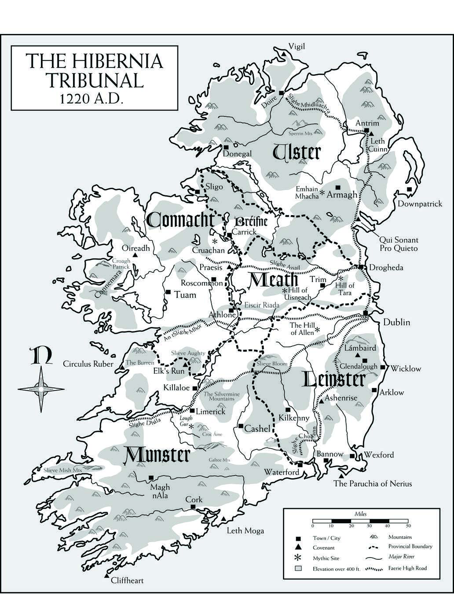
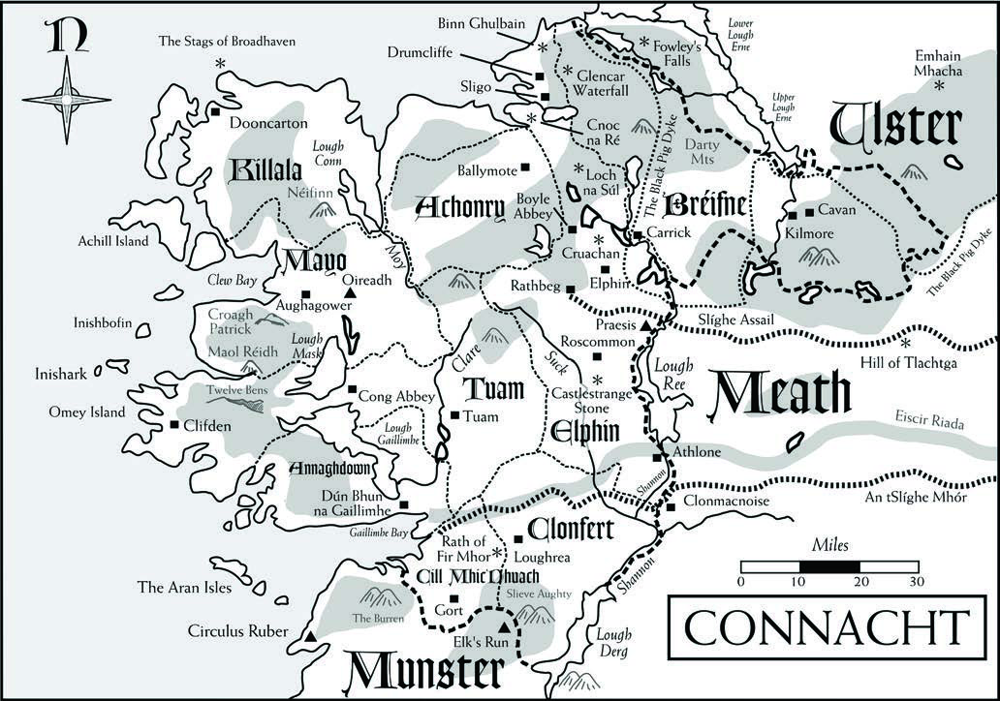
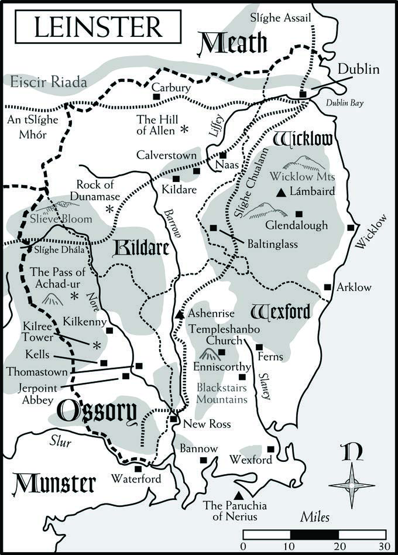
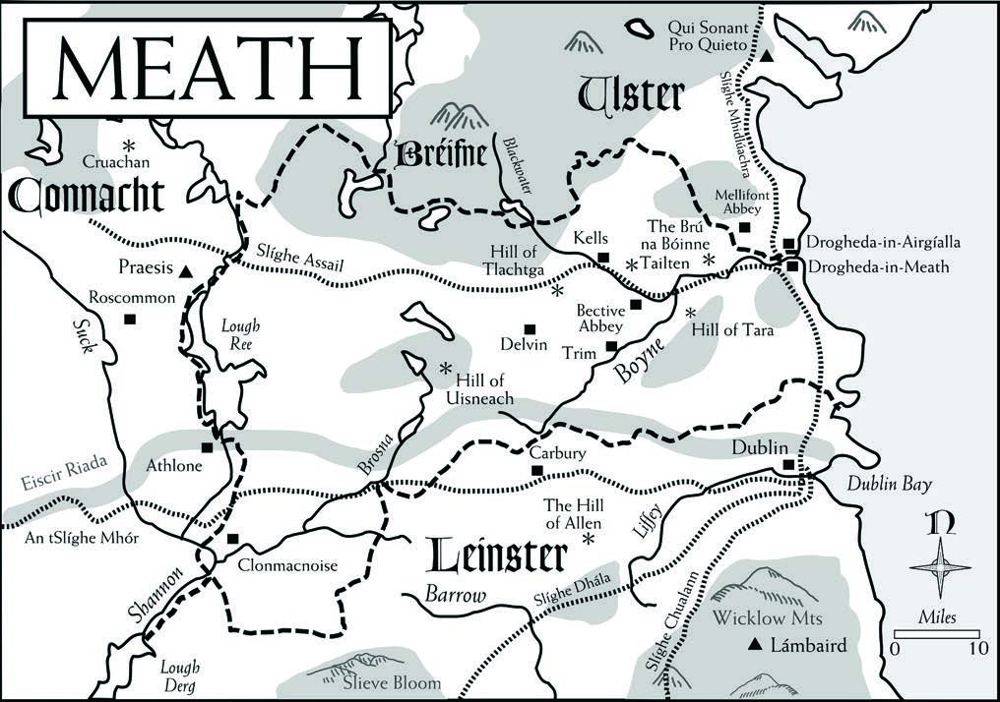
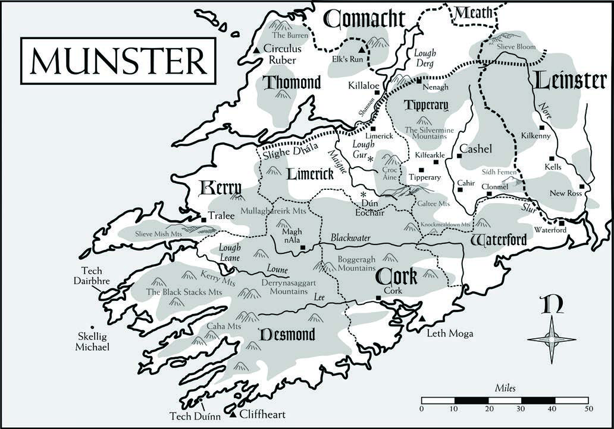
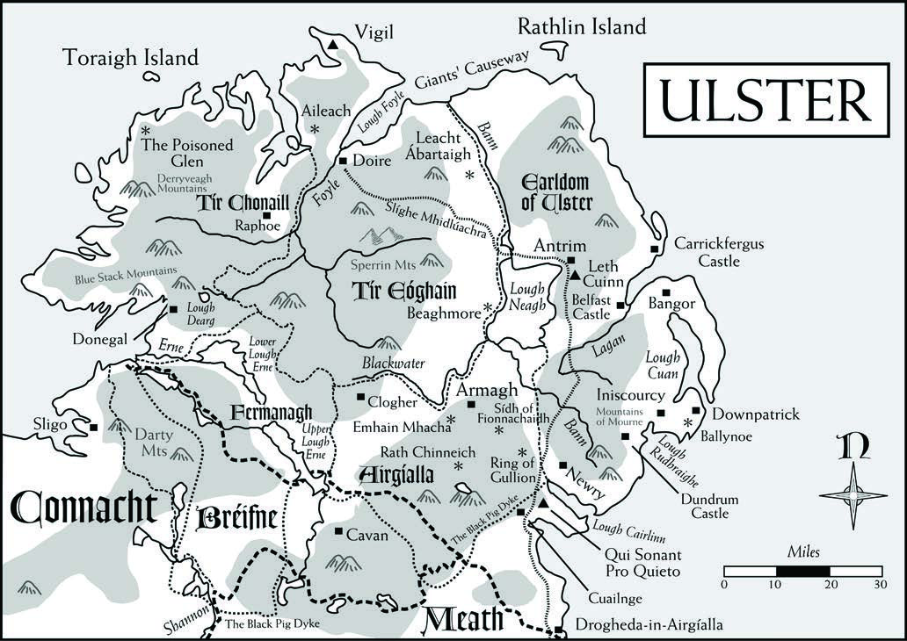

The Contested Isle: The Hibernian Tribunal
Extracted structured data & maps — all 144 pages, compiled 144 source pages into one indexed reference.
The Contested Isle Creditsp.2
Source.
Authors: Mark Lawford, Christian Jensen Romer, Matt Ryan,
Mark Shirley Development, Editing, & Project Management: David Chart Proofreading, Layout & Art Direction: Cam Banks Proofreading Assistance: Jessica Banks & Michelle Nephew Publisher: John Nephew Cover Illustration: Christian St. Pierre Cartography: Matt Ryan Interior Art: Jason Cole, Jenna Fowler, Christian St. Pierre,
Gabriel Verdon Additional Art: Celtic Design. Mineola, NY: Dover Publications,
Inc., 2007. Ars Magica Fifth Edition Trade Dress: J. Scott Reeves Publisher’s Special Thanks: Jerry Corrick & the gang at the
First Round Playtesters: Jason Brennan, Justin Brennan, Elisha
Campbell, Robert Major; Leon Bullock, Peter Ryan, Chris Barrett, John A Edge; Eirik Bull, Karl Trygve Kalleberg, Helge Furuseth, André Neergaard, Sigurd Lund; Donna Giltrap, Malcolm Harbrow, Aaron Hicks, Richard Love; Joan Bauza Soler, Antoni Morey i Pasqual, Melcior Parera Mas, Guillem Gelabert Perello; Christian Rosenkjaer Andersen, Pelle Kofod; Christoph Safferling, Jan Sprenger; Erik Tyrrell, Jeff Schmidt, Tim Kilgriff, Ian Richards
Second Round Playtesters: Leon Bullock, Peter Ryan, Chris
Barrett, John A Edge; Donna Giltrap, Malcolm Harbrow, Aaron Hicks, Richard Love; Pelle Kofod, Christian Rosenkjaer Andersen, Rasmus Andreasen, Rasmus Strandgaard Soerensen, Brian Johannesen
Author Biographies
Ars Magica players participate in a thriving fan community by subscribing to email discussion lists (like the Berkeley list), compiling archives of game material (such as Project Redcap), maintaining fan-created web sites, and running demos through Atlas Games’ Special Ops program. To learn more, visit www.atlas-games.com/ArM5. You can also participate in discussions of Ars Magica at the official Atlas Games forums located at forum.atlas-games.com.
Copyright © 2013–2015 Trident, Inc. d/b/a Atlas Games. All rights reserved. Reproduction of this work by any means without written permission from the publisher, except short excerpts for the purpose of reviews, is expressly prohibited.
Ars Magica, Mythic Europe, and Charting New Realms of Imagination are trademarks of Trident, Inc. Order of Hermes, Tremere, and Doissetep are trademarks of White Wolf, Inc. and are used with permission.
Digital Version 1.0
Mark Lawford lives, works, and writes for Ars Magica in East-
bourne, England. He’s also working on some original fiction, so please do wish him luck. He is very grateful to his fellow author Matt Ryan for helping realize his aim of writing for a Tribunal book. Christian Jensen Romer is an unlikely candidate to write about
Ireland, being a Dane living in England. His passion for Irish history and the medieval saints however led this to be his favorite Ars Magica project to date, and he hopes you find as much joy in it as he did. He would like to dedicate his part of this book to the memory of Christina Jones, who taught him the little Irish he knows and told him tales of her homeland. Matt Ryan works in a university library in upstate New York.
His forefathers were early participants in the Irish diaspora and his family has been in the States for several generations. He visited Ireland in 2001, during which time he swam in the cove on Cape Clear Island, where he would later place the covenant Cliffheart. A lover of Irish history, mythology, and literature, he found participating in this project a dream come true. Matt would like to enthusiastically thank CJ, David, Mark, and Mark for this book, as well as all the playtesters who helped shaped the Irish Hermetic world. Mark Shirley is a zoologist who lives in Newcastle, UK. One
of his great-grandmothers was Irish, which is as close as he has ever got to the Emerald Isle. In preparation for this book he undertook a basic course in Irish Gaelic, and takes full responsibility for all errors in grammar and pronunciation in this book. He’d like to thank his co-authors for making the writing of this book an enjoyable experience.
Contentsp.3
Chapter 1: Introduction 6
A Tribunal of Conflict....................6 Hibernia in 1220............................6
Chapter 2: The History of Mythic Ireland 8
The Five Peoples................................. 8 The Sons of Míl................................. 9
The Coming of Christianity........10 The Order of Hermes in Ireland....... 11
The Ostmen and Rune Wizards....11 Hermetic Magi and Irish Wizards...12 Tribunal Formation and the Early Years.......................12 The Schism War...........................13 Two Turbulent Centuries.............13 The Irish Helen............................14 Strongbow Invades......................14 Henry & John in Ireland...............14 The English Magi ........................14 English Expansion........................15 The Siege of Praesis ....................15
Chapter 3: Irish Culture 16
The Land.......................................... 16 The Irish People................................ 16
Sex and Marriage.........................18 Hostages and Fostering................19 Hospitality and Cuddy................19 Villages and Cities........................19 Time..............................................19 Entertainment...............................20 The English Opposition.................... 20 Languages of Hibernia...................... 21
Pronunciation of Gaelic...............21 Names............................................... 21
Irish Names...................................21 Non-Irish Names..........................22
Chapter 4: Hermetic Culture 23
A Conflicted Tribunal..................... 23
A Land Where History Repeats Itself...24
Magi of Ireland.............................24 The English..................................24 Hermetic Culture............................. 25
The Macgnímartha......................25 Wizard War..................................25 Certamen......................................26 A Magical Responsibility.............26 Hermetic Literature......................27 A Simple Way of Life...................27 Treaties and The Peripheral Code.... 28
The Role of Treaties.....................28 Founding a Covenant...................28 Attitudes to the Code..................29 Attitudes to the Cathach.............30 The Role of the Quaesitors.........30 Sanctions......................................31 Tribunal Procedures........................ 32
Representation..............................32 Hermetic Irish Terminology............. 33
Chapter 5: The Province of Connacht 34
Geography........................................ 34 The Peoples of Connacht................ 34
The Connachta............................34 The Fir Bolg..................................34 The Druids and the Coill Trí.......35 Booleys and Crannógs.................35 The Kingdom of Bréifne................... 36
Kings of Bréifne............................36 West Bréifne.................................36 East Bréifne...................................37 The Kingdom of Connacht.............. 37
The Archdiocese of Tuam............37 The Diocese of Killala.................37 The Diocese of Achonry.............38 The Diocese of Mayo..................39 The Diocese of Tuam...................40 The Diocese of Elphin.................41 The Diocese of Annaghdown.....42 The Diocese of Cill Mhic Dhuach...43 The Diocese of Clonfert..............43 The Pact of Oireadh........................ 44
History..........................................44
Setting & Physical Description....44 Culture and Traditions.................44 Magi..............................................44 Covenfolk.....................................46 The Covenant of Praesis.................. 46
Cathach........................................46 History..........................................46 Setting & Physical Description....47 Culture and Traditions.................47 Magi..............................................47 Covenfolk.....................................48
Chapter 6: The Province of Leinster 49
The Peoples of Leinster.................... 49
The Laighin..................................49 The Osraighe...............................50 The Ostmen.................................50 The County of Wexford................. 50
Wexford........................................50 Bannow.........................................51 Templeshanbo Church................51 Enniscorthy..................................51 Ferns..............................................52 New Ross......................................52 The Wicklow Region....................... 52
Baltinglass.....................................52 Wicklow ......................................53 Glendalough.................................53 Arklow..........................................54 Dublin.............................................. 54 The Liberty of Kildare ..................... 55
Kildare .........................................55 Naas..............................................56 Carbury.........................................57 Calverstown (Baile an Chalbhaigh)...57 Ossory.............................................. 58
The Pass of Achad-ur...................58 Rock of Dunamase.......................58 Kilkenny (Cill Chainnigh)..........58 Kells..............................................58 Jerpoint Abbey.............................58 Thomastown (Grianán)...............59 Ashenrise....................................... 59
History..........................................59 Location........................................59 Culture..........................................59 Magi..............................................60 Lámbaird........................................... 60
History..........................................61 Setting & Physical Description....61 Culture & Traditions.....................61 Magi..............................................63 Inhabitants....................................63 The Paruchia of Nerius.................... 64
History..........................................64 Setting & Physical Description....65 Culture & Traditions.....................65 Magi..............................................65 Covenfolk.....................................66
Chapter 7: The Liberty of Meath 68
Drogheda-in-Meath.....................68 The Brú na Bóinne........................69 The Hill of Tara............................70 The Hill of Tlachtga....................70 Tailten...........................................71 Kells..............................................71 Bective Abbey...............................71 Trim...............................................71 Delvin...........................................71 Clonmacnoise...............................72 The Hill of Uisneach ..................72
Chapter 8: The Province of Munster 73
The Peoples of Munster...............73 Eoghanachta.................................73 Dál gCais......................................73 Déise.............................................74 The English in Munster...............75 Kingdom of Desmond....................... 75
Magh nAla....................................75 Cork..............................................75 Tech Dairbhre..............................76 Kingdom of Thomond...................... 76
The River Shannon......................76 Killaloe..........................................76 The Burren....................................77 The Liberty of Tipperary.................... 77
Sídh Femen...................................77 Cashel...........................................78 The Silvermine Mountains..........78 The Liberty of Waterford................ 79
Waterford City.............................79 The Liberty of Limerick..................... 79
Croc Áine.....................................79 Lough Gur....................................80
Limerick........................................80 Dún Eochair.................................80 Kerry................................................ 80
Tralee............................................80 Skellig Michael.............................80 Circulus Ruber................................. 81
History..........................................81 Setting & Physical Description....81 Culture..........................................81 Magi..............................................82 Cliffheart......................................... 82
History..........................................82 Location........................................83 Culture..........................................83 Magi..............................................83 Elk’s Run....................................... 84
History...................................... 84 Setting & Physical Description.... 85 Culture & Traditions................. 85 Magi.......................................... 85 Covenfolk................................. 86 The Mercer House of Leth Moga.... 86
History...................................... 86 Location.................................... 86 Culture...................................... 87 Magi.......................................... 87
Chapter 9: The Province of Ulster 88
The Peoples of Ulster................... 88
The Érainn................................ 88 The Cruithnigh......................... 88 The English............................... 89 Tír Chonaill ................................ 89
Donegal.................................... 90 Lough Dearg............................. 90 The Poisoned Glen................... 90 Raphoe...................................... 91 Tír Eóghain................................... 91
Aileach...................................... 91 Beaghmore................................ 92 Doire......................................... 92 Leacht Ábartaigh...................... 92 Lough Neagh............................ 92 Airgíalla........................................ 93
Armagh..................................... 93 Clogher..................................... 93 Cuailnge.................................... 93 Drogheda Castle....................... 94 Fermanagh................................ 94 Magh Sléacht............................ 94 Sídh of Fionnachaidh................ 95 Rath Chinneich......................... 95 Earldom of Ulster........................ 95
Antrim....................................... 95 Bangor....................................... 95
Belfast Castle............................. 95 Carrickfergus Castle................. 95 Downpatrick............................. 96 Dundrum Castle........................ 97 Giants’ Causeway...................... 97 Mountains of Mourne .............. 97 Newry....................................... 98 Ring of Gullion......................... 98 Tír Fhomóraig............................... 98
Rathlin Island............................ 98 Toraigh Island........................... 99 Mercere House of Leth Cuinn....... 99
History...................................... 99 Setting & Physical Description...100 Culture and Traditions............ 100 Magi........................................ 100 The Clesrada............................... 101
Learning Clesa........................ 101 Using Clesa............................. 101 Athletics Clesa........................ 102 Concentration Clesa............... 103 Single Weapon / Great Weapon Clesa............... 103 Thrown Weapon Clesa........... 104 Qui Sonant Pro Quieto.............. 105
History.................................... 105 Setting & Physical Description... 105 Culture & Traditions............... 106 Magi........................................ 106 Covenfolk............................... 107 Vigil............................................ 108
Cathach.................................. 108 History.................................... 108 Setting & Physical Description... 108 Culture and Traditions............ 109 Magi........................................ 109 Covenfolk............................... 110
Chapter 10: The Magical Landscape 111
The Druids.................................. 111
The Learned Class.................. 111 The Druids Today................... 112 The Coill Trí.............................. 112
A Partner to Treaties............... 113 Organization of the Coill Trí....113 The Bards.................................... 115
The Bardic Schools................. 115 Bard Characters....................... 116 Bards of Power........................ 117 Geasa.......................................... 118
Conditions.............................. 118 New Flaws............................... 118 The Magical Races of Ireland...... 118
The Fomórach......................... 119 The Fir Bolg............................ 119
Battle Transformations............ 120 Beasts of Virtue.......................... 121
The Fíorláir............................. 121 The Dobhar-Chú.................... 122
Chapter 11: The Faerie Landscape 123
The Otherworld......................... 123
The Five High Roads.............. 123 Faerie Types................................. 124
Pagan Gods: Tuatha Dé Danann... 124 Social Faeries.......................... 126 Trooping Faeries..................... 129 Solitary Faeries........................ 129
Chapter 12: The Divine Landscape 131
The Two Churches of Ireland..... 131
Dioceses of Ireland ................ 131 The Irish Church.................... 132 The Anglo-Irish Church......... 133 Petitioning the Pope............... 134 Saints of Ireland......................... 134
Some Irish Saints.................... 134 New Powers & Curses for Irish Saints......................... 137 Divine Tradition: the Céli Dé...... 138
Chapter 13: The Infernal Landscape 139
The First Acts of the Infernal..... 139 The Evils that Men Do............... 139
The Plagues Of Ireland........... 139 Agents of Chaos..................... 140 Hibernian Demons........................ 140
Common Powers.................... 140 Demons of Hardship.............. 141 The Sluagh.............................. 141 Devils of Folklore.................... 141 Folk Charms............................ 142 Infernal Places............................ 142
Battlefields............................... 143 Hell on Earth.......................... 144
Chapter One Introductionp.6
Céad míle fáilte! A hundred thousand welcomes to you! The Contested Isle describes Mythic Ireland and the Hibernian Tribunal for your Ars Magica 5th Edition saga. Sitting on the western edge of Mythic Europe, Mythic Ireland is unique. Removed from continental involvement, the island maintains unique social and political systems developed centuries ago. The patchwork of tribal kingdoms is ruled by hereditary Irish kings, although many have been recently replaced by invading English lords. Still, the English conquest has not gone smoothly. The English king is too weak to manage his vassals, who fight among themselves. Skirmishes are endemic as the Irish raid cattle and the English grab land, and the sod trembles beneath pounding hooves and armored feet. Survival is tenuous and longevity uncertain.
Steeped in magic and the supernatural, Mythic Ireland is a place of wonder, home to magical lakes, enchanted forests, faerie companies, evil hags, talking beasts, fierce giants, vengeful saints, and horrific demons. The island’s indigenous sorcerers predate Hermetic magi by centuries. The old ways continue, both frustrating and enriching contemporary notions of Hermetic interactions with mundane society. Descendants of the ancient druids, hedge wizards are so numerous, and so obstinate in their traditions, that Hermetic magi maintain a tenuous peace accord with them, allowing them certain lands and privileges. Mimicking their magical superiors, many hedge wizards have banded together, forming a coalition that imitates the Order of Hermes.
Hermetic magi have established a long history of living and studying, fighting and dying in Mythic Ireland. Covenants
safeguard traditions, investigate the variety of faerie beings, explore the unknown, and enjoy their privileges. Largely formed in the ninth century, the Hibernia Peripheral Code has remained almost unchanged, much to the dislike of more recently arrived continental magi.
A Tribunal of Conflict
Mythic Ireland sits at a tipping point. Several factions, mundane and magical, are pushing for control and power. Against each challenger stands a defender, often a group that is just as powerful and rapacious. Fractious to the core, the Tribunal’s mundane groups rarely cooperate. An Irish prince is just as likely to raid his Irish neighbor as his English one. Magi quarrel with hedge wizards, and also with each other. Founded by Tytalus and Merinita magi, the Tribunal has several traditions that demand rivalry and challenge, each intended to make the Order stronger. Rules regarding faerie interactions are loosened, and several magi purposefully combat faeries. Marriages, kinfolk, and alliances weave through magical and mundane society, leaving princes, abbots, hedge wizards, and magi in a complicated web of interpersonal relationships.
The Tribunal’s magi stubbornly refuse to change their customs. In The Contested Isle, player characters can choose sides, becoming aggressor or defender in the impending magical, political, and cultural changes. They could be initiators who select an aspect of the Tribunal to change; moderators who hope to mitigate excessive damage during the transition; or defenders resisting the change. The
undecided will be drawn into the fray — Mythic Ireland is too small for the luxury of bystanders. A rare few seek peace in a world of rattling swords, thundering hooves, and spell-cast fire.
Hibernia in 1220
There are five provinces in Mythic Ireland: Connacht to the west, Leinster to the east, Munster to the south, Ulster to the north, and Meath in the middle.
The English invaded in 1169–70. Most of the English colonists live in the island’s southeast regions. Other territories are ruled by Irish kings. No one is strong enough to keep the peace and territorial rulers raid at will, making and breaking alliances as it serves them.
The king of England and lord of Ireland is 14-year-old King Henry III. His regent, William Marshal, died in 1219 and William’s son, also named William Marshal, has assumed the regency. William Marshal is 30 and lives near Kilkenny, Fens, and Trim. He is engaged to Henry III’s five-year-old sister, Eleanor of Leicester.
There are nine large covenants and two Mercer Houses. The praeco is Milvia of House Bonisagus, a 164-year-old maga living at Circulus Ruber.
Ashenrise covenant is new, founded by continental magi. It is at odds with other covenants, especially Lámbaird and Cliffheart.
There are many traditions of hedge wizardry; most of practitioners live in Connacht, where the Order of Hermes promises not to interfere. Many belong to a larger association called the Coill Trí.

Chapter Two
The History of Mythic Irelandp.8
At the beginning of Creation, Mythic Ireland was only half formed, a wooded island without lakes, rivers, meadows, animals, or people. Five waves of invaders, commonly called “the Five Peoples,” landed, lived, and died before a sixth group, called the Gaels or Milesians, managed to achieve a permanent settlement. The Five Peoples found Mythic Ireland in an inchoate condition, unformed and changing into its current geography. By the time the Gaels arrived, the island had reached its final geographical state. The story of Mythic Ireland’s history has been recorded in a single, seamless tale, which exists in several books, the most famous being Lebor Gabála Érenn, translated as The Book of the Taking of Ireland or The Book of Invasions. An-
other complete manuscript, Lebor Laignech or The Book of Leinster, can be found in the Munster monastery of Tir-Dá-Glas on the Shannon River.
The Five Peoples
Cessair, granddaughter of Noah, led the first group that landed in Ireland. Instructed by her grandfather to find a land uncontaminated by human vice, she hoped that Ireland would provide a safe
haven from the Great Flood. It did not and her people died when the tide rose above Ireland’s mountains. The only survivor was her druid, Fionntan, who survived by changing into a salmon. He could also assume the shapes of a stag, eagle, or boar, and is rumored to still be alive.
The second group of invaders left more of a mark on the countryside before dying out. The Greek prince Partholón (POR-hul-own) and his sons brought art, crafts, and cattle to Ireland. They cleared four large pastures from the pristine wood and witnessed the birth of four lakes. They also encountered the Fomórach, monstrous Magic giants hailing from unknown, northern islands. Settling in the north, the Fomórach continually raided the Partholónians. Eventually the Partholónians killed the Fomórach in a great battle, but to their own undoing. They left the corpses on the field, and a foul plague emanated from the bodies and killed all the Partholónians.
Arriving from Scythia, Nemed and his tribe were the third group of invaders. Nemed was not seeking Ireland, having fled his homeland to escape punishment for killing his parents. Setting out with a great fleet, his tribe saw an incredibly tall, golden tower rising from the western ocean. Built on an island, this fantastic tower was only visible when the tide ebbed. At full tide it was completely submerged. After landing on the shore, the incoming tide surprised Nemed and he lost most of his fleet. It was a year before the tribe saw land again, accidentally finding Ireland.
Landing with soldiers, families, and druids, the Nemedians promptly settled, bringing lore and craft to the untamed wilderness. They cleared several plains and watched several lakes erupt from the ground. Their prosperity was soon noticed and coveted by the Fomórach.
Rushing from the northern oceans, the Fomórach captured Nemed’s people and taxed them with a heavy tribute. By this time, Nemed had died, leaving his sons and grandsons to suffer the weight of Fomórach oppression. Plotting rebellion, the Nemedians sent to Greece for aid. The Greek king responded with a host of soldiers, druids, druidesses, wolves, and venomous animals. Nemed’s sons led an assault on the Fomórach main fortress on Tory Island and successful destroyed it.
The cheering and sharing of spoils was short-lived. Fomórach reinforcements attacked the Nemedians. Using water magic, the Fomórach druids raised a huge wall of water to drown the Nemedians, but also drowned many Fomórach. Both sides incurred heavy loses, but it was the Fomórach who won the day. The Nemedians were devastated. Three surviving grandsons of Nemed split the survivors into three groups and departed. Ireland was uninhabited by humans for 200 years.
The fourth invaders were the Fir Bolg. Legends claim they are the descendents of one of Nemed’s grandsons, who served as slaves in Greece before escaping and returning to Ireland. While full of legendary battles, including an epic confrontation involving dead warriors animated by demonic spirits, these tales fail to explain how the Fir Bolg leaders became Magic creatures. Fir Bolg means “the men who swell with battle fury,” although some monks incorrectly think it means “Men of the Bag” because their masters made them move earth using leather bags. The Fir Bolg divided Mythic Ireland into provinces, established kingship and justice, and brought peace. More information about the Fir Bolg can be found in Chapter 10.
The Tuatha Dé Danann were the fifth invaders, the last wave of primeval peoples before the arrival of the Gaels. After the war with the Fomórach, an escaped group of Nemed’s descendents starting worshiping continental Celtic faeries, who took the group to a mystical homeland in the north. In four fabled cities, the Tuatha Dé educated their followers in culture, art, and magic, and interbred. The group that returned to Ireland contained the pagan faerie gods, their children, their followers, and their druids. More information about
the Tuatha Dé Danann can be found in Chapter 11.
The Fir Bolg and the Fomórach ignored the Tuatha Dé’s requests for peaceful coexistence, both preferring war. The Tuatha Dé met and defeated the Fir Bolg at the Battle of Moytirra, on the Plain of Cong in Connacht. The surviving Fir Bolg promised to abandon the other provinces and remain in Connacht. Though victorious, the Tuatha Dé leader lost an arm in the fighting, making him unfit to rule. His chieftains selected a new leader, a son of a Fomóir father and a Tuatha Dé mother, thinking that this would keep the rapacious Fomórach at bay. However, the Fomórach soon conquered and enslaved the Tuatha Dé. At the Second Battle of Moytirra, also in Connacht but on a different plain, the Tuatha Dé defeated the Fomórach and drove them from Mythic Ireland. Placed under a Tuatha Dé curse, the Fomórach could not set foot on Irish soil without suffering dire consequences. The curse is literal; air- and water-borne Fomórach are not affected by the curse.
The Tuatha Dé continued the Fir Bolg’s political divisions and social practices. The pagan gods lived with the mortal population, which grew until humans eventually replaced faeries as kings. Tuatha Dé rule was not peaceful, and squabbles over land, cattle, and rights of succession frequently led to bitter warfare. The contemplative, peaceful culture the pagan gods initially brought was quickly forgotten and lost.
The Sons of Míl
The current people of Mythic Ireland are the Gaels, descendents of Gaedheal Glas, famous builder and linguist who allegedly constructed the Irish language from the best parts of the 72 languages spoken during the building of the Tower of Babel. Spreading from Egypt, the Gaels eventually settled along the northern coast of Spain. According to legend, the Gaels built a tower tall enough for the knight Míl (MEEL) to view Ireland. When it was foretold that his sons would rule the island, Míl sent his uncle and a small landing force to investigate. The
group was slain by the Tuatha Dé.
A larger force was sent, captained by Míl’s eight sons, hence the name “Milesians” (sons of Míl). Led by the poet and sorcerer Amhairghin (AH-wor-khin), the Milesians defeated the Tuatha Dé, besting their violent resistance and magical trickery. The faerie Tuatha Dé disappeared underground, promising to leave the island to the new rulers. The mortals of the Tuatha Dé tribe were incorporated into the Milesian tribe. During their conquest the sons met three faerie goddesses who claimed to be Ireland: Banba, Fódla, and Éire. Each promised victory if a son would marry her, and three sons obliged. This tradition, a provincial ruler marrying a land-goddess, is still practiced.
Míl’s uncle and three of his sons founded the Four Root Races of Ireland, the four largest tribal lineages. Settled in Connacht, Éremón was the ancestor of the Connachta. Éber took Munster and gave rise to the Eóghanachta, Éibhear settled in Ulster and was the first of the Érainn, and finally Lughaidh mac Íth was the ancestor of the Laigin, the people of Leinster. Eventually the different groups fought, both each other and within the groups, usually over land grabs, leadership succession, and accumulating resources (cattle).
The two most powerful brothers, Éremón and Éber, split the island in two, using the Eiscir Riada (ESH-ker REE-ada), a long line of sand and gravel ridges that run from Galway Bay to Dublin, as the boundary between the two kingdoms. The northern half was Éremón’s and the southern half Éber’s. Quarreling over land, Éremón killed his brother and claimed sovereignty over Ireland. Éremón delegated rule of the five provinces to sub-chiefs, kinvassals who would ultimately chew away at his authority and create dynasties of their own. One provincial king would rise to prominence and claim the high-kingship only to be replaced by another regional chieftain, a pattern that was repeated for the next 2000 years.
Hundreds of years of warfare followed, giving rise to legendary heroes who then formed their own family dynasties. The most famous is Cormac mac Airt, who ruled during the early third century. Protected since birth by five magic wards,
Cormac could not be hurt by wounds, drowning, fire, druid magic, or wolves. He became the high-king at the age of 30, and during his reign Ireland’s rivers were full of fish, the fields full of bees making honey,
and the forests ripe with fruit.
Conn of the Hundred Battles was Cormac’s grandson. A Connachta leader, his deeds were so impressive — and his sons so many — that many dynasties claim him
as their ancestor. Conn discovered many of the Tuatha Dé’s hidden treasures, including the five roads of Ireland and the ancient yew tree Mughain, the center of the faerie’s Otherworld. Growing up in Leinster, Conn overthrew the ruling highking to win the tree. After taking Leinster, he raided the Eoghanachta in Munster. King Eoghan Mór was too powerful to defeat and Ireland was politically split in half again, using the Milesian’s boundary, the Esker Riada. Leth Cuinn (Conn’s half) fell to the north and Leth Moga (Mór’s half) lay to the south. Conn didn’t honor the treaty, and a year later the Connachta defeated the Eoghanachta at the Battle of Magh Léana.
High-kings were not the only heroes to achieve fame. The provincial king Ailill and his wife Medb were fierce Connacht leaders who often at war with the king of Ulster, Conchobhair mac Neasa. A clan’s champions became just as important as its kings. The Ulster champion Cú Chulainn is famous throughout Ireland, as is the Leinster hero Fionn mac Cumhaill. The list of famous regional kings and their heroes is long and extensive, and memorized by poets who recite comprehensive genealogies for their listeners.
The island’s supernatural contingents, the Fir Bolg in Connacht, the Tuatha Dé underground, and the Fomórach offshore, left the Milesians alone. People encountered individual Fir Bolg and Tuatha Dé, but larger incursions ended. The groups kept the old promises and limited their interactions with man. The first Milesians kept careful watch for the Fomórach, but as the generations went by and no warships were seen, the lookout was abandoned.
The Coming of Christianity
St. Patrick converted the pagan Irish to Christianity, but he was not the first Christian in Ireland. Palladius preceded Patrick, arriving with assistants Auxilius and Secondinus. Armed with copies of the doctrines of Ambrose and Augustine, Palladius felt well prepared to deal with the pagan Irish. Landing in Clonard and heading north, he was not welcomed by
the “fierce and cruel men” of the area, as described in a later annal, and his fate is largely unknown. His unsuccessful mission ended in Ulster.
Patrick landed later, some time in the fifth century, although sources disagree on the actual date. Coming first as a slave, captured by Irish pirates raiding England, he escaped with the help of his guardian angel, Victor. Hearing the divine message that he must convert the islanders, Patrick returned as an adult to preach. Patrick made a circuit of the island, heading from Leinster to Connacht, Ulster, Meath, and finally Munster. St. Patrick performed miracles, cast the snakes out of Ireland, bested and exiled the druids after winning a magic contest, and used a threeleaf clover to explain the Holy Trinity. Called “The Apostle of Ireland,” St. Patrick achieved overwhelming success and forever cemented the Christian faith in people’s hearts. His mortal remains are interred in Down Cathedral.
The Order of Hermes in Ireland
Two Tytalus and two Merinita magi visited Mythic Ireland in 778, looking for the Tuatha Dé’s four legendary treasures. Assisted by a local ward-maker, the four discovered the cauldron of the Dagda buried in one of the mounds at the Brú na Bóinne. Their grave robbing was noticed by the high-king, who sent his druid and a retaliatory warband to confront the thieves. The magi found a defensible barrow and the ward-maker protected it with spells. They repelled the first attack, but the druid screamed that the king’s men would attack again in the morning. The leading Tytalus answered: “We will defend this mound for a year if need be!” The five defended against the morning’s attack, and three days and two more failed attempts later the king’s men retreated. Adhering to the original boast, the magi stayed on the mound for a year.
Deciding to remain in Ireland, the five relocated to Munster’s western shore, again saying that they would defend their location for a year to prove their worth. Named after the protecting wards drawn by the local assistant, Circulus Ruber was founded two years later, at the Tribunal of 780.
13 years later, Diedne arrived. Hoping to recruit Ireland’s druids, she was rejected, and responded with a 17-yearlong pogrom to kill every druid she could find. The Ulster-born Cuin-dallán, Latinized as “Quendalon,” returned from the Rhine to save what he could of the older magic traditions. Aided by other members of House Merinita, he accepted some into his House and hid others in Connacht. Meanwhile, the Diedne magi formed covenants and sent down firm roots.
By the early ninth century, many traditions of native wizards still existed. Some stayed hidden, some were protected by powerful regional kings or safeguarded
by Hermetic allies, and some were strong enough to fend for themselves. A score of the more powerful wizards assisted Pralix in the war against Damhan-Allaidh (see ArM5, page 10), and the survivors were immediately accepted into her new Order, which eventually became House Ex Miscellanea.
The Ostmen and Rune Wizards
Targeting monasteries for their wealth, Norwegian and Danish Vikings started raiding Ireland in the late eighth century. Dubbed “Ostmen” (Eastmen) because they came from the East, they struck without warning. At first they only came during the spring and summer, but by the early ninth century they decided to stay. They occupied and converted coastal Irish trading posts into
permanent Ostmen settlements. Every major Irish city — Dublin, Waterford, Wexford, Cork, and Limerick — was created by the Ostmen.
The newcomers also brought rune wizards. Having arrived only 20 years earlier the Order was weak and unprepared for the aggressive Scandinavians. At the Grand Tribunal of 832, Hibernia magi called the Ostmen wizards “The Order of Odin.” Uncertain about the rune wizards’ strength, the Order sought peace. Máel-tuili of House Merinita met the Dublin rune wizards and promised to pay a substantial tribute, but the Scandinavian wizards attacked. Most of the group was slain, including Máeltuili (see Ancient Magic, page 135).
The Vikings were worse in other areas and the Order’s attentions shifted from Ireland. Many Hibernian magi hoped that the Ostmen threat would unite the Order in Ireland, especially patching over the quarreling between Houses Ex Miscellanea and Diedne, but they were disappointed. Meanwhile, tensions between native wizards and Hermetic magi increased. Skirmishes with rune wizards, raids against native druids, and reprisal certamens were the order of the day.
Hermetic Magi and Irish Wizards
While individually weaker than their Hermetic rivals, the Irish wizards were members of existing túatha and could petition their king and his warriors for aid. Border skirmishes and disputes over resources were a constant problem. To end hostilities, the Order agreed to acknowledge the Coill Trí, a confederation of hedge wizards who had earned the title of druid, and to conclude a peace agreement with them. House Diedne refused, but on the verge of what many assumed would be open warfare, House Diedne retreated from Hibernian politics. In 851, Primus Obregon announced that Diedne magi would no longer protect her “undeserving sodales.” Hibernian Diedne retreated to their covenants. In their absence, the Hibernian magi signed the Treaty of Cnoc Maol Réidh (see Chapter 10).
House Diedne still held a dominant position in Ireland. They did not recognize the Treaty of Cnoc Maol Réidh and entered Connacht regularly. As a result, hedge wizards made individual treaties with magi for personal protection. Adapting the concept of amici, with the moral duty to support each other and the prom-
ise to wage Wizard’s War against a friend’s aggressor, adventurous magi became native protectors, always in a one-to-one relationship. These agreements stopped some of House Diedne’s raids, but were ineffectual against Hermetic raiders from England and Scotland.
In 865, Hibernian magi raised this point at the Grand Tribunal, but were told their treaty was illegal. Furthermore, Ireland was included with England and Scotland in the new Britannian Tribunal, and Hibernian magi were told they had to follow the Britannian Peripheral Code. Already displeased, the Irish contingent explained how important the Treaty of Cnoc Maol Réidh was. When given the choice between joining or dying, most Irish wizards would gladly fight and die, a course of action that would destroy the native magical traditions. The treaty would allow the traditions to continue, perhaps to be explored and incorporated into Hermetic magic. Invading magi threatened that accord, but the Grand Tribunal refused to recognize it.
Tribunal Formation and the Early Years
33 years later, following the Tytalus example of Tribunal secession, the Irish magi left the Britannian Tribunal. The new Hibernian Tribunal immediately ratified the Treaty of Cnoc Maol Réidh. Every individual treaty that existed between hedge wizard and magus was binding, and those who previously ignored such treaties were brought to heel. With external forces quelled, Hibernia concentrated on internal conflicts. The intrinsic rebelliousness and aggressiveness of the natives gave rise to several foundation pieces of Hibernia’s Peripheral Code. Local rulings like treaties, trophies, and legal raiding were a safety valve for the island’s endemic violence. If contained conflicts were allowed, then larger, more egregious outbursts would be few.
The 10th century was violent. Irish kings fought one other and the Ostmen. Prohibited from involvement in the regional kings’ bids for power, Hibernian magi followed individual pursuits.
Diedne magi were plentiful but stayed behind closed doors, and the Coill Trí stayed in Connacht. The threat of the Ostmen rune wizards never developed into a war, although skirmishes were frequent. The Irish clans retained the interior of the island, and the Ostmen kept their coastal cities. As the Ostmen converted to Christianity, the two groups realized the benefits of mutual cooperation. The Irish appreciated the Ostmen’s mercantile efforts and the ready pools of Scandinavian mercenaries, while the Ostmen enjoyed the steady supply of beef and leather for their exports.
The Schism War
While skirmishes in Normandy and Provence hinted at greater, widespread violence, Hibernia magi were more concerned with a Munster king’s bid for the seat of the high-king. Defeating the ruling clans of Munster and Leinster, Brian Bóramha (BREE-un BOE-roo, anglicised as Brian Boru) marched into Ulster and forced the Ua Néill high-king to abdicate. Leading thousands of troops, accompanied by Munster druids and hedge wizards, many thought Brian had the strength to politically unite Ireland into a single kingdom. The magi were so distracted that the Schism War surprised everyone.
The Tribunal had six acknowledged Diedne covenants. Some magi were reluctant to attack — the Diedne had not been a problem for a long time — but others launched into action. To their surprise, three of the six covenants were empty, the members having either fled to the Continent or retreated to the three strongest covenants. Over-eager and headstrong, the Hibernia magi split their forces and attacked each separately.
Diedne magi had made alliances with supernatural partners in anticipation of the Hibernia magi’s assaults. Salmon’s Eye, or Súil Bradáin (SOOL BRAD-awn), a Diedne covenant in Munster, joined forces with Donn, the Tuatha Dé god of death. The Widow’s Throat, or Scornach Baintrí (SKOR-nukh BAN-nyuh-tree), a large Diedne covenant in Ulster, enlisted a fleet of Fomóir warships. Five ships
sailed up the River Shannon, while five other ships attacked the coastal Circulus Ruber. The third Diedne covenant, Lugh’s Retreat or Cúlráid Logha (KOOL-rahd LOKH-uh), was located in the Hollow of Shannon, a remote spring in the Dartry Mountains and the source of the River Shannon. The split force of Hermetic magi regrouped to relieve the besieged Circulus Ruber. Defeating the Fomóir fleet on the ocean left the other Fomóir ships free to reach Lugh’s Retreat.
With Circulus Ruber secure, the magi attacked and destroyed the Diedne covenant in Ulster. Two months later, an attempt was made on Lugh’s Retreat, but failed. Almost a year after that, the Munster Diedne and Donn’s forces destroyed Warbler’s Way, Cosán Ceolaire (KOS-awn KOE-lor-yuh), a Hermetic covenant in the woods around Lough Leane. Hibernian magi united to defeat the Munster Diedne, razing Salmon’s Eye and forcing Donn back to his island home. With their forces sorely depleted, the magi mustered to attack Lugh’s Retreat again. As the day of the attack drew near, two years since the first assault, Connacht druids and hedge wizards joined with the magi, informed of the upcoming assault by busy Mercere messengers. The combined forced destroyed Lugh’s Retreat, killing both Fomóir and Diedne defenders. The battle of the Dartry Mountains is called “The Third Battle of Moytirra” by poets, who find its proximity close enough to the other two locations and its result — the repulsion of Diedne — as important as the two earlier battles of Moytirra. The magi thought Hibernia was free of Diedne, but they were later proved wrong.
The Battle of Clontarf and the Last Diedne
Having subdued Ulster and Connacht, Brian Bóramha moved against the Ostmen and marched on Dublin. As the army moved east, Bóramha’s druid, a dwarf named Muírcheartach mac Lía, told the Flambeau magi at Lámbaird that Bóramha had druids with him who called themselves “sons of Diedne.” Surmising that the Diedne magi must have survived the fall of Lugh’s Retreat, the Lámbaird magi traveled to the battle. Irish and Ostmen forces clashed at Clontarf on Good Friday 1014. As the Irish and Ostmen warriors split skulls and hewed limbs from bodies, the Flambeau stalked the battlefield looking for the Diedne. The combat between the Flambeau and the Diedne was brief, flamboyant, and lethal, and spelled the true end of House Diedne in Hibernia. The Irish defeated the Ostmen, who never threatened the Irish again, but Bóramha died in the battle. The army returned to Munster, too weak to impose its rule over the rest of the island.
Two Turbulent Centuries
Bóramha’s war upset the balance of power in Ireland. By breaking the Ui Neill hegemony of high-kingship, he showed that whoever was most powerful could become the high-king. Bóramha established the idea that the high-kingship was a position to fight for. Many tried, and the 11th and 12th centuries saw highkings from all five provinces. Not every
high-king ruled unopposed. Some were rí co frasabra, or “high-king with opposition,” meaning that some clans refused to acknowledge the high-king’s sovereignty. While a king might be strong enough to grab the high-kingship, none were able to maintain the title and pass it to an heir. Violent power bids became routine, as did cattle raids, crop burning, destruction of property, and mutilation of rivals. This pattern went on with no clear end, and many think the English are merely continuing this practice of personal gain through military prowess.
The Church in Ireland underwent its own conflicts. The laity had become lax. Tithes weren’t paid, violence against the clergy was common, and many sacraments were ignored. Priests married and passed benefices to their sons. The archbishop of Armagh, Máel Máedóc, canonized as St. Malachy, went to great lengths to reform the Irish Church. Due to his efforts, ratified at the Synod of Kells in 1152, many of the more egregious practices ceased. Mythic Ireland was split into 36 sees with four archbishoprics at Armagh, Cashel, Dublin, and Tuam. Despite this great reformer’s efforts, the Irish Church is still noticeably different than the Roman Church (see Chapter 12).
Violent and tumultuous, the 12th century was also a time of great art and craft. Book production increased, driven by the desire for the old tales to be recorded and remembered. Several monasteries became expert vellum manufacturers, while others became famous schools for book illumination. Hermetic culture added to the demand, and it is a rare Irish grimoire that isn’t decorated with Celtic swirls and knots. Expert gold and silver work is displayed in personal jewelry and religious artifacts. But the island’s fine arts and scholarship are hidden beneath the half-deserved reputation of a lawless, barbaric, violent place.
The Irish Helen
The coming of the English was to change the Tribunal forever. In 1152, Diarmait Mac Murchada, King of Leinster, abducted Derbforgaill, wife of Tighearnán Ua Ruairc, the King of Briefne.
The abduction proved the catalyst for an epic tragedy, and to this day Derbforgaill is likened to Helen of Troy, as her beauty caused a great war.
The lady herself was quite happy with the arrangement and settled down to live with Diarmait, but her husband Tighearnán invaded Leinster in 1166. The men of Ossory rose in rebellion against Diarmait; he lost his throne and was forced into exile, fleeing to England.
On arrival there, Diarmait sought aid from King Henry II in recovering his kingdom. The new High-King of Ireland, Ruaidrí Ua Conchobair, had taken possession of Leinster. Diarmait failed to persuade King Henry to invade, so he gathered some English mercenaries and attempted a reconquest by himself.
Strongbow Invades
When Diarmait’s initial attempt to reclaim Leinster faltered, he turned to the Welsh Marcher Lord Strongbow, Earl of Pembroke. Strongbow agreed to assist, and invaded Leinster, quickly placing Diarmait back on the throne. Diarmait’s anger at those who had driven him to exile was infamous, and after one battle against the men of Ossory he had his English allies pile up two hundred severed heads of his slain foes. He searched through them for the head of one man he particularly hated, and proceeded to chew the head’s lips and ears off.
Strongbow married Aoife, Diarmait’s daughter, and on the death of Diarmait took possession of the throne of Leinster. This was against (according to many Irish) the native Brehon Laws, but the mercenaries’ power was such that nothing could be done.
Henry & John in Ireland
The military successes of Strongbow worried King Henry II of England, who set out for Ireland, determined to bring his vassal to heel. Strongbow capitulated immediately to his king, and once in Ireland, Henry also demanded vassalage
from the Irish kings, who gave him tribute. In 1185, seeing that his barons were still carving out great holdings in Ireland, Henry appointed his son John as Lord of Ireland, and Prince John set off to receive homage from his vassals. Accompanying John, and returning later to witness the continuing conquest of Ireland, was a Welsh cleric called Gerald of Wales. Gerald wrote two books on his experiences in Ireland; the Topography of Ireland, and the Conquest of Ireland. Both books proved immensely popular in England and Wales, with their description of marvels and their characterization of the Irish as both savage and exotic. Despite their geographical proximity, even educated folk knew little of Ireland, and Gerald traveled England giving immensely popular public readings of his book, often to great crowds, and constantly revising the text.
While Gerald proved popular with his book, Prince John’s visit to Ireland was less of a success. Aged only 17, he displayed some of the lack of tact that later led to the Barons’ Revolt in England. When the Irish kings came to do him homage, he openly mocked them and tugged at their long beards, winning few friends among them.
The English Magi
For many magi of the Stonehenge Tribunal, Gerald’s book came as a wakeup call. While some had visited or had dealings with the Irish magi, the Order in Ireland had become somewhat insular and little known, as close as it was. Many of the Stonehenge magi heard of the marvels of Hibernia and wondered at stories from Redcaps of vis so plentiful it was left unharvested, and of a quarter forbidden to Hermetic magi where it was said the druids still ruled. Hibernia was suddenly the talk of the Tribunal as a place of mystery, magical wealth, and potential threat. While some knew of the war between Diedne and the druids of Ireland, the mystery of Connacht caused them concern. What if the Coill Tri were actually the heirs of Llewellyn, last Primus of the Accursed House? What if the Order of Odin had gained a foothold
through the Ostmen’s conquests?
Henry justified the conquest of Ireland by reference to a Papal Bull, Laudabiliter, issued in 1155, that could be read as giving Henry the right to conquer Ireland and enforce reform of the Church there. There was in fact a strong reforming party in the Irish Church that had, over the last century, reformed the church on the continental model. This largely ended its ancient monastic character and replaced it with a church of dioceses and tithes on a similar line to the continental and English Church. In a similar manner, the Order of Hermes in Stonehenge, hearing increasingly from magi who had visited Hibernia of the strange customs and unusual Peripheral Code of that Tribunal, began to talk about the need for reform in Hibernia. A few Stonehenge magi attended the next Hibernian Tribunal. They were shocked at what they saw.
English Expansion
Meanwhile Hugh de Lacy had conquered the Kingdom of Meath, and the King of Briefne had died in what may have been an assassination (or perhaps a tragic misunderstanding) during a peace parlay. The English had moved west into Munster, and north into Ulster. Yet Connacht, home to the High King Ruaidhrí Ua Conchobhair, remained free of the English. While Ruaidrí had submitted to Henry, the continued autonomy of Connacht concerned many in Stonehenge who feared what the hedge magicians of
the Coill Tri might really represent, and that dark magic might underlie Ruaidrí’s reign. Why was Connacht preserved from the conquest?
With the English presence in Ireland, an increasing number of English magi traveled through the Hibernian Tribunal, and many felt their suspicions were justified, especially after a party were attacked in 1190 by what appeared to be young Irish magi of the Order. Knowing little or nothing of the Irish custom of the macgnímartha (see Chapter 4), this attack on Damisona of Jerbiton and her party, with the loss of three grogs, led to an increasing outcry through Stonehenge for something to be done about Hibernia.
The Grand Tribunal at Durenmar in 1195 saw a long debate between magi denouncing Hibernia as in need of reform, preferably the introduction of a Peripheral Code based upon that of Stonehenge, and many magi who favored the right of autonomy of a Tribunal and the right of its magi to set their own Peripheral Code. The parens of the apprentices who in their macgnímartha had attacked Damisona were convicted of only a Low Crime, to the outrage of many Stonehenge magi.
The Grand Tribunal events led to more traffic between Hibernia and the continent, and an increasing number of appeals to Magvillus from magi who felt they had been unfairly treated by local Quaesitors. The Covenant of Elk’s Run was founded in the immediate aftermath of the Tribunal. In 1209, the maga Swan of Ghent was killed during the Black Monday massacre when Ua Broin raiders
killed a number of English settlers outside the walls of Dublin.
The Siege of Praesis
In 1213, Holzner of Tytalus from the Rhine Tribunal joined the Covenant of Praesis. He then attempted to steal the cathach of Praesis and flee, and was slain by his sodales. His outraged parens, Ballack, left the Rhine Tribunal and journeyed to Hibernia where he laid siege to the covenant. Many Hibernian magi saw this as a clear cut case of foreign aggression, but by the conventions of the Tribunal, few intervened. The Siege of Praesis lasted a year, preventing the members of that covenant from attending the Hibernian Tribunal of 1214, and relations between Hibernian magi and those from outside the Tribunal were increasingly strained. Now Praesis has fallen, and peace may be restored, but it is an uneasy peace.
The English lords increasingly assert their authority and adopt Irish ways to the chagrin of the English crown; the Irish kings chafe at foreign rule outside of the sanctaury of Connacht. The Order in Hibernia faces a similar crisis. Yet peaceful visits, trade in books, and mutual tolerance still exist, and the Hibernians regard themselves as faithful members of the Order of Hermes. Not every foreign magus is regarded with suspicion, and Hibernia may yet know peace if suspicion and misunderstanding on both sides can be overcome.
Chapter Three Irish Culturep.16
The basic political and social framework of the Irish is the clan, an extended group of people who claim descent from a heroic forefather. The English are imposing their style of French feudalism and society atop these political and social institutions, and failing. Instead of replacing Irish culture they are adopting it, and are becoming “more Irish than the Irish themselves.”
The Land
Geographically Mythic Ireland is like a bowl. A ring of low mountains lines most of the coast, surrounding rolling plains and thick forests laced with rivers and dotted with lakes. The climate is warmer and wetter than neighboring England. Snow rarely falls and when it does it never lasts longer than three days. Rainfall is plentiful, more so in the west than the east, and some claim that it rains three days for every five. Flooding is a major concern and heavy rains risk washing away spring plantings.
The Irish divide the land into cantreds, administrative units controlled by the clan leader. The English have grouped several cantreds into liberties, inheritable pieces of feudal property, and shires, cities and their nearby surroundings which belong to the king. The lord of a liberty has more independence than the lord of a shire, who is merely the king’s agent. A lord of a liberty keeps the collected land-rents and taxes; a lord of a shire gives a large percentage of those monies to the king. However, because more wealth passes through a city than a rural liberty, a shire lord is often wealthier
than a liberty lord.
Cattle equal economic prosperity, political power, and social honor. Cattle raising and rustling are the cornerstone of Irish society. Large herds need large pastures and must frequently relocate. While grass grows everywhere year round, relocating the herd prevents over grazing. Summer pastures are found at higher elevations, farther from home, and winter pastures are in the plains closer to home. Because of the abundant wolf population, farmers build roofed, fenced enclosures called byres to keep the cows safe at night. Sometimes a small byre is attached to the farmer’s house, but often it is a standalone structure.
Nobles and honorable farmers are expected to keep a number of cows suitable to their station. If the herd diminishes a man’s standing falls, making cattle raiding dangerous to both a man’s herd and his honor. Cattle are branded for identification, but even so retrieving stolen cows from a more powerful enemy is difficult. A man is responsible for his own herd and the loss of it. Success in reclaiming stolen cattle depends on how powerful the men involved are, and what allies they can make.
After cattle and dairy, agriculture provides a small fraction of a farmer’s produce. The predominate cereal is oats, followed by wheat and rye. Because the clan moves frequently, fields are temporary and rarely fenced. A parcel of land usually provides two harvests before being abandoned or ruined. Errant cattle and rain are the biggest threats; heavy spring rains can wash out a field and a herd of cattle can trample the crop. Cows graze freely and have the legal right to walk through a field if water is on the other side. A landowner blocking cows from water can be
charged with a crime.
Most of Mythic Ireland’s interior is forested. Apple trees, hazels, and oaks grow in great abundance, providing fuel, building material, and food. The forests provide a thriving habitat for many animals: wild boar, foxes, badgers, wolves, deer, hares, and squirrels. Cattle can also be found, but forests provide poor grazing. Encountering wild cattle is rare, but not unheard of.
Outlaws and fiannai live in the woods. A fian is a band of aristocratic young men who undergo a period of exile while awaiting their land inheritance. The fiannai are viewed positively as future warriors who must prove themselves worthy to the clan by surviving outside it for a time. Outlaws are legal outcasts denied aid and assistance. With the recent English invasion, many outlaws’ only crime was owning land the English wanted, and took. Such men are heroes in their neighbors’ eyes and will cause a great deal of trouble in the years to come.
The Irish People
Society is centered on the clan, a lineage descent group forming a single corporate identity. The clan’s social unit is the túath, which means “people” but includes the clan’s native territory, its free clients, unfree clients, and slaves. Named after an eponymous hero ancestor, most túatha originated in the fourth and fifth century. New túatha appear when a powerful leader separates from his previous
túath to form a new clan. A weak túath disappears when destroyed or absorbed by a more powerful túath. In 1220 there are approximately 125 túatha. The most powerful are the “five bloods”: the Ua Néill of Ulster, the Máel Sechnaill of Meath, the Ua Conchobair of Connacht, Mac Murchadha of Leinster, and the Ua Briain of Munster.
Irish society is divided between the daorcheile (DEER-khul-uh), those without honor, and the grád flatha (guh-RORD FLAH-wuh), those with honor. The daorcheile are peasants, whether slaves, unfree farmers, or poor free farmers who own just enough to survive. The grád flatha includes wealthy free farmers, the nobility, priests and monks, and the professional classes of judges, doctors, and poets. Most of a person’s social standing is determined by heredity, although personal honor plays a significant role. Every free man has an honor-price, called eraic, which is the amount payable in compensation if the man is physically or socially injured. Compensation is paid in cows. Eraic can grow and shrink depending on the man’s fortunes. Besides physical harm, damage to a man’s reputation, social connections, and property demand compensation, with prices set by the type of injury. Verbal slights merit a significant fraction of a man’s eraic, while murder merits the full amount.
Most people are daorcheile: slaves, unfree farmers, and poor free farmers. Slaves are taken in raids, although that is infrequent in the 13th century. An unfree farmer, a bothach (BOH-wukh), receives a cow and a small patch of land in exchange for labor and produce, with interest terms that he can never repay. A free farmer, a bóaire (BOE-OR-yuh), is also a client, but receives a better interest rate, one he can eventually repay. The terms the lord offers, determining if a client is free or unfree, are based on heredity.
The grád flatha have many rankings: lesser nobles (those with the minimum number of client bóaire), cattle lords, and greater nobles. The clan’s most important nobles are the derbfine (DERB-inyuh), those within four generations of the current chief. Each clan is led by a chief or king (rí). The king of a single
túath is a rí tuaithe (REE TOO-ah-ha). If the king holds several other túatha as clients, he is a fuirig, or “over-king”. A king of over-kings is a rí ruirech, and a king of one of the five provinces is a rí cóicid or “provincial king”.
The grád flatha also include the professional learned classes: the judges, po-
ets, and physicians. Most of these posts are hereditary, with only a few families filling the job for the túath. All posts require intensive training, essentially equivalent to the lengthy academic career of continental university teachers. The kings of the more powerful túatha appoint an ollamh (OL-liv) of each learned position,
the titular head of that class within the territory. These tuatha have ollaves of poetry, medicine, and law.
Each túath holds public assemblies called oireacht (OR-akh-t)), gatherings that meet at a specific location during set times of the year to determine clan business. Assembly business involves settling disputes, levying fines, collecting taxes, and, when necessary, selecting a new king. The candidate must be from the derbfine of the recent king, making everyone with a common great-grandfather potentially eligible. Sometimes the derbfine selects a successor before the current king dies. Called a tánaise ríg, an heir apparent does not always prevent dynastic leadership struggles.
The king is crowned in a sacred
ceremony in which he symbolizes his commitment to his people by marrying the tribal lands. In some túatha the king marries a local faerie woman, a resident Tuatha Dé land goddess. In a highly ritualized ceremony, the king promises to abide by the laws and gods of his people, to do no harm, and universally share the king’s truth of legal and moral judgment.
Sex and Marriage
Only one in 20 Irish marriages happen in a church. Most marriages are secular, the sole requirement being that the couple announce their intention to marry. Once announced, the marriage is
legal. The Church disagrees, but most Irish clergy participate in rather than prevent this practice, ignoring the ecclesiastical reforms of the late 12th century. Easy marriage leads to easy divorce and easy remarriages. The nobility are the worst offenders, and many are serial monogamists, marrying and divorcing wives as they please. Some men take multiple wives at the same time, but this custom is fading. This loose attitude toward marriage allows a clan to grow rapidly. For example, one Ua Donnell chief has 18 sons from 10 different wives and 59 grandsons.
Other differences from continental marriages exist, all of which displease the Church. The Irish marry first cousins, where as canon law demands three degrees of separation between partners. All of a man’s legitimate sons are his legal inheritors. It doesn’t matter whether the son is the eldest, youngest, son of a former marriage or a divorce, just as long as he is not born from a slave-woman. A wife does not bring a dowry to the marriage. Rather, the groom gives the wife’s family a bride-gift. Finally, an Irish marriage does not guarantee an alliance between groups, or even non-aggression between in-laws. Marriage does not stop or even hinder conflict between a man and his brotherin-law, and he does not expect his wife’s kin to follow him into battle.
The Contested Isle Hostages and Fostering
Hostages are noble sons given to a king to ensure a túath’s proper behavior. The hostages live with the king as part of his retinue. If the agreement between the túath and the king is broken, the hostages’ lives are forfeit. Since the hostages can be related to the king, and this is often the case, the king might have sentimental reasons for not killing them even if the terms of the agreement are broken.
Fostering is common among the nobility. At age 7, noble sons and daughters leave home and live with foster parents, the boys until they are 17 and the girls until they are 14. Fostered children form an emotional attachment almost as strong as with their parents. In all legal matters except for inheritance, a foster-son is as legitimate as a man’s biological son. A man can expect his foster-sons to follow him into battle.
Hospitality and Cuddy
A lord is expected to provide assistance for his clients during the lean times of the year. Such hospitality is never long or costly and defaults to an evening’s meal and warm bed. All social superiors are expected to grant hospitality if asked. The accommodations offered by a king depend on his standing and the impression he wants to make. Stinginess signifies a bad king. Poets have immortalized such hosts with poems, and a Gifted satirist might lay a curse on the host’s head. Demons actively seek poor hosts, and several legends tell how an abbot or king who didn’t provide adequate hospitality was possessed by a demon. Travelers can expect hospitality at all times of the year. Monasteries offer a three-night stay, which includes a private room in an outlying building, wood for a fire, a blanket, and soup.
Cuddy, Anglicized from the Irish cuid Oidhche (“a night’s portion”), is the entertainment and nightly feast a client owes his lord. One of the king’s privileges is traveling through the túath and feasting at the nobles’ houses. Most clients do not have the option to refuse, and sev-
eral clients have bemoaned a gluttonous king. Poor nobles must borrow from their neighbors to provide for the king’s cuddy.
Villages and Cities
A village is a ringfort, or ráth, wooden palisade walls surrounding a cluster of wooden huts. The larger and more powerful the clan, the larger the ráth. Unlike continental villages, a ráth can be moved; an entire clan can quickly uproot and shift to a different location. Ráths are not placed along rivers or roads, but tucked in more secure areas. Some small coastal ports exist, but the majority of the Irish people resided in the island’s interior.
Christianity made slight changes. Instead of a ráth surrounding a chief’s hut and his clients, the palisade encompassed a monastery, the monks, and their lay supporters, tradesmen and cattle raisers who see to the community’s needs. Being self-sufficient, monastic ráths are found in the island’s interior, having no great need to occupy the coast or a major river. Walls made of piled field stone surround a stone church and round tower, and the several wooden huts used by the community’s supporters.
The Ostmen brought cities. Originally enclosed winter camps, these longphorts became permanent homes. Once the years of raiding ceased, an event that coincided with the Irishman’s adoption and expert use of the Ostman’s weapons, the two learned to live in an uneasy peace. The cities — Dublin, Waterford, Wexford, Cork, and Limerick — remain Ostmen homes.
Mythic Ireland has almost a thou-
Time
sand ráths. The more powerful groups have abandoned a wooden palisade for stone walls. Religious centers — Armagh, Cashel, Kildare, Tuam, and Dublin — and royal residences use stone. They have sacrificed mobility for stronger, more permanent protection.
The Irish year is split in half. Winter precedes summer and begins on Samhain (SOW-wun), 1 November. Summer starts on Bealtaine (BAL-tun-yuh), 1 May. Samhain marks the end of the harvest season and the beginning of the “dark half” of the year. On Oíche Shamhna, “the night of November” (31 October), ghosts and faeries stalk the night. The Tuatha Dé leave their summer homes for their winter mansions, disrupting other supernatural creatures. Bealtaine heralds the planting season and start of the “light half” of the year. It too is marked with celebrations and feasts and is a good time for annual charms and yearlong magical effects. Equally important are the celebrations of Lughnasa (LOOGna-sah), 1 August, and Oímelg (O-myelg), 1 February, more commonly called “the Feast of St Brighid”. Lughnasa is the harvest festival and is celebrated on the closest Sunday to the first of the month.
Although retaining and valuing some pagan elements, like the season-changing holidays, Mythic Ireland is thoroughly Christian. Christmas and Easter are the two largest holidays. On Easter, the rising sun dances with joy at the Resurrection, and anyone viewing it gains a +1 to any pious Personality Trait for the week. On Christmas Eve candles are lit and placed
Entertainment
in windows to guide lost travelers. At midnight mundane animals gain the Divine power of speech, which lasts until dawn. Hearing an animal speak is extremely unlucky and most people stay clear.
Two of the island’s most prestigious professional classes are poets and musicians. Enjoyed by both English and Irish audiences, they move between the two cultures, saturating the English with Irish tales and ballads. Love songs are the current vogue. Required to memorize hundreds of tales before they can assume the
title, a good poet can recite a perfectly appropriate tale for any occasion at which he is asked to perform.
Hurling is a popular sport among Irish youths of all social classes, and avoided by the English. A player uses a wooden stick called a hurley (Irish: camán) to drive a brass ball. One team moves the ball towards a goal, while the other team defends it. Popular in Mythic Scotland as well, hurling can be dangerous. Injuries are frequent and deaths not unknown. Hibernia’s faeries enjoy the sport, and a good hurling player might be abducted and forced to play a game of faerie hurling all night long. Hurley is not a separate Ability, and matches can be adjudicated using contested Characteristic + Athletics stress rolls.
If a match becomes violent, use the club weapon stats for a hurley.
Other entertainments include horse racing — like in Scandinavia, the Irish race horses riderless — a type of chess called fidhcheall, and backgammon, called táiplis, more popular with English than Irish lords. A character does not need a new Ability to participate in these contests. A competent animal trainer can use Animal Handling to get a horse to race. Backgammon falls under Etiquette as does fidhcheall. The latter is so popular, however, that a character can substitute his Carouse Ability for Etiquette, suffering only a –2 penalty to his contested die rolls when playing against another character.
Performance Magicians
Performance Magic is a common Virtue among Hibernia’s Hermetic and hedge wizards, and can be especially effective if the wizard is unGifted or has the Gentle Gift. Poets and musicians can travel wherever they wish, and this easy access makes a poet an excellent spy. A roomful of listeners has almost no defense against Sorcerous Music (see The Mysteries: Revised Edition, page 29), and the poet can easily put the audience in a state of trust and ease.
A hedge wizard with Performance Magic generally uses it to line his own pockets and advance his clan’s political agenda. Often this causes conflict with the English and leads to bloodshed. A Hermetic magus must be very careful if he tries this trick. The native poets don’t like their roles usurped and the Order has restrictions about how a magus interacts with a mundane.
The English Opposition
While the Irish and English vie for power, their very ideas of power and political might are different. A core difference is that the English value land and the Irish value cattle. Before the English
the Irish typically stole each other’s cattle, not their land. Túatha moved, usually under pressure from a more powerful neighbor, but land-grabbing was never the objective. The English want land, and stone towers dot the Irish landscape, proof that the English are not leaving Ireland’s green shores.
Irish sons inherit property equally from their father, through a complicated, lengthy arrangement. The land and herd are worked together for five years until a separation can occur, with shares being distributed by the youngest son. This is vastly different from the English practice of primogeniture, in which the eldest son inherits everything. An Englishman married to an Irish woman assumes he will inherit her father’s title and property, but her kinsmen disagree.
Kingly succession is also different. The English kings have started to establish the principle that the crown descends to the eldest son, as with other property. An Irish son has no guarantee that he will follow his father to the throne, and everything depends upon the decision of the derbfine. Another difference is that a higher king has no authority over a lower king’s rule. For example, a fuirig cannot reverse a decision made by one of his client rí tuaithe. In the English system, the king has legal authority over every lord.
Languages of Hibernia
The following Living Languages are spoken by the people living in the region described by this book. Each consists of
one or more regional dialects, which are given in parentheses; most characters should take the appropriate one as a specialty. Educated or well-traveled speakers often try hard to rid themselves of their dialect, and may have standard specialties (see ArM5, page 66).
English (Northumbrian, Mercian,
Anglian, Wessex, Kentish) French (Anglo-Norman) Gaelic (Munster, Connacht, Ulster,
Leinster) West Norse (Norwegian)
The native language of most of Hibernia is Gaelic, a language shared with the Isle of Man (Manx dialect), the Kingdom of the Isles (Galwegian dialect) and the Kingdom of Scotland (Highland dialect). Except for Meath, each of the provinces has its own distinct dialect of Gaelic.
The Finn-Gaill (“white foreigners”) of Dublin have adopted Leinster Gaelic, but the Dubh-Gaill (“black foreigners”) of Wexford, Limerick, Waterford, and Cork speak the Norwegian dialect of West Norse.
The lords of the Norman occupation speak the Anglo-Norman variant of French. Their servants are often English, and can speak a variety of dialects of that language depending on where they are from.
The preferred language of the educated classes is still Latin.
Pronunciation of Gaelic
Gaelic has many rules governing pronunciation, and they are too complex to do justice here. Pronunciations have been provided in many cases; for other terms
Names
Irish Names
we suggest online sources. Note that in these phonetic guides, stressed syllables are given in capital letters, and “kh” is used to represent the final sound of “loch”, to distinguish it from the “ch” of “church’. Short vowels (as in “bat,” “bet,” “bit,” “bot,” and “but”) are sometimes written in the phonetic guide with an “h” for clarity; thus “loh” is pronounced like “lot” without the final “t’. The important thing is making yourself understood among the troupe — use whatever pronunciation with which you are most comfortable!
As with all cultures, the Irish have their own naming customs and favored names.
Irish names consist of a given name, which are then usually distinguished further using one or more of a patronymic byname, a clan affiliation byname, or a descriptive byname.
Patronyms are formed using “mac” for a man and “inghean” (pronounced “INyun”) for a woman, meaning “son” and “daughter” respectively. Strictly speaking, the father’s name should be given in a different grammatical case (the genitive, denoting possession), and it often takes a modified initial letter (by adding an “h”) when combined with “inghean’. Examples: Aed mac Fergusa, Aine inghean Fhergusa.
Clan affiliations are denoted using “Ua” for a man and “inghean Uí” for a woman; meaning “descendent” and “daughter of a descendent” respectively. The name of the eponymous ancestor undergoes the same grammatical changes described above. Examples: Domnall Ua Briain, Una inghean Uí Bhriain.
Descriptive bynames are simply appended to the end of the name; for a woman they usually take the same modified initial letter. Examples: Niall Bacach, Grainne Bhacach.
Male Given Names
Áed, Áengus, Ailill, Bran, Bressal, Cairpre, Cathal, Cináed, Cobthach, Colmán, Conall, Conchobor, Congal, Cormac, Crimthann, Crundmáel, Diarmait, Domnall, Donnchad, Donngal, Eochaid, Eochu, Éogan, Ercc, Fáelán, Fedelmid, Fergus, Fiachra, Flann, Fogartach, Lugaid, Máel-dúin, Maine, Móenach, Muiredach, Murchad, Niall, Rónán, Scandlán, Senach, Sétnae, Suibne
Female Given Names
Affraic, Ailbhe, Áine, Aoife, Barrdhubh, Bean Laighean, Bean Mhídhe, Bean Mhumhan, Béibhinn, Cacht, Cailleach Dhé, Cobhlaith, Dearbháil, Dearbhforgaill, Dubh Essa, Dubh Themrach, Dubhchobhlaigh, Dubhóg, Éadaoin, Elec, Fíneamhain, Fionnghuala, Gormlaith, Gráinne, Imag, Lasairfhíona, Maol Mheadha, Meadhbh, Mór Mhumhan, Nuala, Órlaith, Raghnailt, Sadhbh, Sláine, Sorcha, Úna
Bynames
Ainsheasccar (the Restless), Alánd (the Comely), Amhreaidh (the Quarrelsome), Ard (the Tall), Bacach (the Lame), Baclamhach (the Lame-handed), Balbh (the Stammerer), Ballach (the Freckled), Bán (the White/Fair), Beag (the Small), Bocht (the Poor), Bradach (the Thievish), Cáel (the Slender), Caircheach (the Hairy), an Chleitigh (of the Quill), Cíocarach (the Greedy), Ciotach (the Lefthanded), Colach (the Wicked), Connachtach (of Connacht), Dall (the Blind), Derg (Wine-red), Donn (Brown), Dorcha (Dark), Dubh (Black), Éccnaid (the Wise), an Fhasaigh (of the Wilderness), an Fheadha (of the Wood), Fionn (Fair), Garbh (the Rough), an Gleanna (of the Glen), Greannach (the Hairy), Gruamdha
(the Gloomy), Laigen (of Leinster), Liath (Gray-haired), Meablach (the Deceitful), Mer (the Swift), Midech/Midheach (of Meath), Mór (the Big/Great), Muimhneach (of Munster), Óg (Young), Reamhar (the Fat), Ruadh (Red), an tSléibhe (of the Mountain), Sucach (the Merry), Uaine (Green), Ultach (of Ulster)
Hermetic Names
Some Gaelic-speaking magi have adopted some of the Irish conventions (and spellings) with regards to names. The four Lineages treat their Founders’ names as if they were the ancestor of a clan, giving rise to names of the following pattern. Note that the names of female magi do not use the Irish convention of denoting “daughter of a descendent of X’:
Murion Ua Bonaoságas
(“oo-uh BON-ee-saw-gus”)
Bilera Ua Ghiónaocas
(“oo-uh GHYOUR-nee-cus”)
Insatella Ua Márcaere
(“oo-uh MAW-cay-ruh”)
Poena Ua Tréamaere
(“oo-uh TRAY-may-uh”)
The four Mystery Cults specify that they are “of the cult” of their Founder, thus:
Falke cultas Biónaére
(“cool-tus BYOR-nay-ruh”)
Muscaria cultas Críothamon
(“cool-tus CREE-huh-mun”)
Handri cultas Meriníte
(“cool-tus MER-yin-eet-yuh”)
Stouritus cultas Bhéardaoiteas
(“cool-tus VAYR-dee-tyus”)
Finally, the four Societates use their houses’ names as if it were a descriptive byname:
Garus an Flambó
(“on FLOM-boe”, literally “Garus the Flambeau”)
Andru an t-Iarbiteon
(“on TCHAR-byuh-tyun”)
Buliste an Taotalas
(“on TEE-tuh-lus”) Ebroin an t-Éigse Measceal
(“on TCHAY-shuh MYES-kul”, literally “of the learned miscellany”)
House Diedne was not recorded as having used this custom, which came into fashion after the Schism War. Contemporary accounts often replace the byname Daodne (“DEED-uh-nyuh”) with Deoradach (“JAYruh-dukh”), meaning “banished’.
Non-Irish Names
The names of the English settlers follow the patterns of their homelands. Noblemen and gentry use the conventions of Anglo-Normans, consisting of a given name and a byname, which may indicate their origin or paternity (often using the prefix “fitz,” meaning “son”). The rest of the invaders use whatever conventions they have brought from their homelands — often Welsh or English. Some naturalized English have taken Irish versions of their English names.
The people of Scandinavian descent who are resident in Dublin and southern Ireland occasionally still use Norsestyle names, but most have adopted Irish naming patterns using local variants of the names from their homeland. Given names are combined with a patronymic, a byname, or both.
Chapter Four
Hermetic Culturep.23
The druid asked the king what he had seen in his vision, and Eochaid told him that he had dreamed of a great flock of black birds that came forth from the depths of the ocean and lay siege upon the people of Ireland and brought them to conflict and turmoil and confusion, so that the people were destroyed, yet one of them struck the noblest of the birds and cut off one of its wings.
When the king had finished telling of his dream, the druid told him its meaning, saying that a great host of warriors would come forth over the sea and that they possessed vast knowledge of sorcery and magical enchantment and that they would conquer Ireland.
— Lebor Feasa Runda
Hibernia is a contradictory beast; old and rediscovered, conservative yet strange, and its magi permit conflict among themselves while protecting minor magical traditions from harm. The most obvious divide, however, is between the native Irish magi and those newly arrived from the continent, following in the wake of the English invasion.
Separated by custom, if not distance, Hibernia had fallen away from the rest of the Order for many years and its magi developed their own culture, still Hermetic but different from the continent. The newcomers view these ways as outdated, nonsensical, and often beneath the dignity of the Order of Hermes. Were the Tribunal blessed with more land then the two sides might have found easier accommodation, but as it is both sides must choose either to find an uneasy accommodation or to press for dominance.
A Conflicted Tribunal
When the people of Nemed heard Fionntan’s counsel, dissension broke out among them, as a faction arose who felt that they should not flee from Ireland but rather they should do battle with the Fomórach and take the land by force of arms.
— Lebor Feasa Runda
The covenant of Praesis has fallen to the English. Occupied by Irish magi for generations, Praesis was besieged by young magi who came to Ireland to claim land. They endured a year-long Wizard War, including frequent magical skirmishes, before a betrayal from within finally overturned the covenant.
Behind this conflict was the peculiar nature of the Hibernian Tribunal. Land exists to be protected and challenged. Covenants are not the sum of their members; they are the result of ancient and powerful artifacts chosen to symbolize the covenant. And the standing of the magi relies not on their learning but on how well they protect and provide for their own.
Any magus unable to protect his land is not worthy of that land. That is fundamental to the Order in Ireland, and it is also the means by which magi from the continent have gained a foothold in the Tribunal, earning their share of its magical riches.
The siege of Praesis involved magi of the Ordo Hiberniae, as the native Hermetic magi term themselves, and the continental magi, termed the English by the Ordo Hiberniae. But those who
besieged Praesis were not universally foreign. Some were born to generations of Irish magi, yet saw the conflict as a means to rail against centuries of restrictive tradition, an attitude that is currently growing among these younger magi.
And while Praesis fell, its siege continues to be a point about which the Tribunal turns. If, as they did at Praesis, the Ordo Hiberniae loses control of the Tribunal, then centuries of tradition may be overturned within a generation.
This leaves Hibernia with two principle Hermetic factions vying for their own view of Hermetic life in the Tribunal. While those conflicts play out politically, they are also played out in the direct and rash actions of wilder magi, with Praesis and Connacht as their focus.
A Land Where History Repeats Itself
Ireland is a land where history is known to repeat. As detailed in Chapter 2: History, the early lineages succumbed to disease and plague, while successive later invasions established kingdoms before being swept aside by newcomers to the island. This is not lore, but truth.
The Treaty of Cnoc Maol Réidh (kuh-NOK MEEL RAY) is a centuries-old agreement between the Order of Hermes and the native magical traditions that grants Connacht irrevocably to those native traditions of Ireland. When the Order took hold in Ireland, the druids were pushed aside but they were granted Connacht as a means to seal the peace. Just as the Fomórach were driven to the north, the Fir Bolg to the west, the Tuatha Dé to the otherworld, and the native
druids pushed back to Connacht, some believe that the Ordo Hiberniae will also be forced to retreat to Connacht leaving the recently-arrived continental magi to inherit the rest of Ireland. It can already be seen in the conquest of the English nobles, and they fear it in the coming of the English magi.
Magi of Ireland
The Ordo Hiberniae are those magi raised in the Tribunal to Irish lineages, descended from generations of magi who have lived and worked in Hibernia. They are well-schooled in Irish legend and their understanding of law and justice is as colored by Irish Brehon law as it is by the Code, and their view of the world is heavily influenced by the tales of the races that came before.
Hibernia provides all that a magus could want: a deep history, unending magical resources, and alliances with the elder races that see the Order dominate. Its magi govern their affairs as they see fit, they respect the land, and see that the most suited take stewardship. As a result, few left Hibernia to settle elsewhere.
Eochaid’s vision is important to understanding part of the Hibernian mindset. The “great flock of black birds” that once heralded the end of Fir Bolg rule also heralded the initial arrival of the Order of Hermes, and the invasion of the English
The English
crown. Some now see the English as a new black flock, destined to bring nothing but ruin to the Tribunal. And as each invasion has displaced the native people, so the magi of Ireland fear being pushed aside in favor of the newcomers.
While the elder magi of Hibernia view the English with concern, some of the younger magi, especially those in their macgnímartha (MOC-guh-nee-mor-huh) (see later), have heard the English message. They now believe that no part of Hibernia should be denied to the Order, and that the outdated treaties with hedge wizards, beasts, and faeries should be annulled. The siege of Praesis on the Connacht border is a good case in point. While the instigators were English, a number of Irish magi joined them, and the siege itself would never have happened but for the outdated and dangerous promotion of violence enshrined in the Hibernian Peripheral Code.
Most magi beyond Hibernia consider Hibernia backwards and strange. Most have heard the old stories of Hibernia as a land of faerie magic, too dominated by the fae for it to be of true magical value. Despite the occasional exchange of magi back and forth, the Order had little interest in Hibernia until England invaded Ireland around 1170.
House Tremere, having received new reports through Stonehenge, were the first to take notice of Hibernia again. Magi of Stonehenge who went there described it as dangerous, archaic, and at odds with good Hermetic governance. This was something that House Tremere could not allow to continue.
Termed “the English,” after those first investigators from Stonehenge, these magi are actually drawn from across the continent. Initially supported by House Tremere, they arrived throughout the last fifty years to claim new territory and to reform Hermetic culture in Hibernia.
But why this keenness for reform when previous challenges to Hibernia’s Peripheral Code have failed? Firstly, while legal, the protections given to hedge wizards, and especially the status of Connacht, seem improper, setting these hedge wizards on a par with the Order. Secondly, magi of the continent are now settling in Hibernia and cling to their own view of the Peripheral Code. In their own way, they are every bit as conservative and resistant to change as their Hibernian cousins. The English follow continental practice;: vis is harvested when it is available, the minor traditions of magic are intimidated or ignored depending on their utility, and Connacht is viewed as land ripe for the taking.
But having been in Hibernia for almost fifty years, some of the English have raised apprentices here. While they were denied the macgnímartha, and many still
do not consider themselves Hibernian, perhaps in the next generation the distinction between Irish and English will start to disappear.
Attitudes to Hibernia
It seems strange that Hibernia, so close to Stonehenge and Loch Leaglean, should be considered distant to much of the Order. Of course, there are outsiders who have visited Hibernia just as there are Irish magi who visit Durenmar, the Bjornaer gatherings, Verditius contests, and Tremere councils, etc. So why should the Order seem to ignore Hibernia?
Firstly, Hibernia is physically remote from the center of Hermetic influence. It has no domus magna, it has no great kings or emperors, nor do any popes call Ireland home. Until the English crown crossed the sea, Ireland simply existed on the periphery of politics. With nothing of note or interest, Hibernia was for a long time just an afterthought for many in the Order.
And secondly, the culture of the Irish magi put distance between themselves and their continental colleagues. Their Hermetic writings are considered archaic and dull; they have a habit of calling House Ex Miscellanea “the Younger House”; their clothing tends to be simple, even rustic; and they have a preponderance for giving honey as a gift by way of greeting. In short, they often come across as odd, backward even, not far removed from hedge wizards themselves.
As a result, with no great covenants, no great political upheavals to monitor, and seemingly no great magi to follow, Hibernia became a place of tale and rumor: sometimes spoken of, but rarely visited.
Hermetic Culture
Violence is a way of life in Hibernia. Wizard’s War is easily declared and certamen is frequent, as is the use of grogs to raid rival covenants. Most covenants own
resources outside their legally-protected territory and these are always at risk, but the magi of Hibernia take their oath seriously. The art is to assert dominance, not to kill, which is why certamen is challenged so freely. Grogs fare less well.
There is an understanding in Hibernia that everything finds its level and that individuals and covenants are robust enough to find their own way. The threat of violence is a real one, and the best defense is often to simply be a good neighbor. The Peripheral Code does not mandate this, but those who fail to uphold this unspoken agreement often lament the consequences.
The Macgnímartha
Young magi in Hibernia undertake the macgnímartha or youthful exploits: a short period between apprenticeship and becoming a magus when the apprentice leaves the protection of his covenant and spends a year or more without the support of his parens. He has not sworn the Oath, does not know Parma Magica, and is considered outside Hermetic law. Most test their power against faeries, some engage mundanes, and others try their luck against Hermetic targets. In this last case, items successfully stolen from covenants are usually ransomed back. Remembering their own youthful exploits, magi rarely treat those in the macgnímartha harshly.
Importantly, no mention is made of the macgnímartha in the treaty of Cnoc Maol Réidh and these youngsters often venture into Connacht for sport or fortune.
For most apprentices, macgnímartha lasts a year, or until such time as “his beard encircles his chin,” at which point he is sworn to the Order and taught the final secrets of Parma Magica. His character is also judged keenly during this period and he gains a Reputation of level one among Hibernian magi appropriate to his behavior. This reputation may also extend to faeries, giants, and hedge wizards where appropriate.
Despite social pressure, as failure to do so may reflect badly on the master, not all apprentices undertake the macgnímartha. Some choose instead to go to Leth Moga
Wizard War
where they receive security, lodging, and the freedom of the libraries in return for assisting other magi, copying books, and similar duties.
To outsiders, Hibernia’s laws may seem at odds with Hermetic law. The Peripheral Code, however, is the principle source of law governing Wizard War and this often differs between Tribunals (as discussed in Houses of Hermes: Societates, page 23). Hibernia’s Code has developed differently from the continent.
In Hibernia, the formal declaration must be given in person and before witnesses, but not necessarily directly to the target. The declaration must be public, and Wizard Wars have been declared invalid because the declaring magus took steps to prevent his target from finding out. There is no warning letter, and although the formal declaration must be made a month in advance of the War beginning, it is common for the target to have less than a month to prepare by the time he finds out about the War. A magus may also declare Wizard War against multiple opponents, by naming them in the formal declaration, and this may also draw allies on either side into the fray; such as “Meadbh and all those who hold to the Gáe Bulg.”
Hibernia’s Peripheral Code does not recognize any need for a break between months of Wizard War, and as it does not require the declaration to be delivered to the target, many magi extend the War as soon as it begins. Indeed, the Peripheral Code assumes that a Wizard War has been extended unless there is positive evidence that it has not, meaning that a War continues until the death of an opponent, surrender, or a treaty. In practice, most Hibernian Wizard Wars degenerate into raiding and theft that continue until either side sees a need to call a truce. Grogs and mercenaries are frequently used as proxies, meaning that Wizard War is often more about securing submission than the death of an opponent. Famously, a Wizard War continues to exist between Gráinne inghean Uaitéar of Vigil and the Bjornaer Cú Chonnacht Cluasach Mac Tire, even though the two have come
Certamen
face to face many times during that time.
The Siege of Praesis is the first example of an extended Wizard War that most of the English have seen. Given the result, the falling of Praesis into English hands, opinions are currently mixed on whether a formal challenge should be lodged.
The niceties of certamen apparent on the continent do not apply in Hibernia.
While the aggressor determines the Technique and the Defender determines the Form, neither has the right to veto. Neither are there any social norms around who may challenge, when, or how often.
Certaman is often fought over resources that fall outside a covenant’s legally-protected lands and between magi before hostilities escalate to Wizard War. The usual social stigma around refusal to fight is keenly felt in Hibernia but the use of vis carries no negative stigma.
A Magical Responsibility
And though the sons of Mil had taken Ireland, still the Tuatha Dé held great power over them. Therefor the sons of Mil gave dominion over all those places under the earth to the Tuatha Dé
. — Lebor Feasa Runda
The Order assumes the ultimate supernatural authority across Ireland, reserving the right to act against those who flout convention, abuse their power, and cause strife. Even the elder races of the Tuathe Dé, the Fir Bolg, and the Fomórach listen when the Order speaks.
While the Order has a history of respecting the Treaty of Cnoc Maol Réidh and allowing the Coill Trí to govern their own lands, the Order is prepared to punish magical beasts that terrorize innocent villagers, or faeries that prey upon travelers, and unless a hedge wizard’s own tradition takes action, the Order is willing to mete out punishment.
Keepers of the Old Ways
Why, the Hibernian philosophy asks, should a coven of witches be worth less than a covenant of Bonisagus scholars? By what yardstick do you measure worth? Is it by the books you lay end to end, or by the animals you heal, the harvests you protect, and the sickness you ward against? These things deserve and earn respect in Hibernia.
The Order in Ireland feels a responsibility to maintain the old ways of the other traditions. These “old ways” are not a cover for pagan sympathies; they are the non-Latin forms of magic found in Ireland before the Order, the roots of magic in Ireland, handed down from the druids of Partholon and Nemed.
These traditions represent precursors to the Order’s own Houses. There are druids who change their shapes, traffic with faeries, and craft enchanted devices. Were the Order to force them to join, those ways would be lost, or at least diluted as with many lineages in House Ex Miscellanea, and any threat they might
once have posed to the Order has been dealt with by confining the majority of them to Connacht.
Vis and Supernatural Auras
Magic and Faerie auras are precious as they are often associated with important events in Ireland’s history. Magi feel a responsibility to these places and husband them well. This can force the Order into conflict with mundanes and in such cases the Tribunal supports a strong assertion of authority. Protecting a Magic or Faerie aura against mundane encroachment or destruction, or making an example of those who do harm, is not considered interference in mundane affairs.
Beyond Hibernia, vis is often harvested as soon as it appears and then hoarded within the covenant’s aegis. In Hibernia, this practice is considered at odds with good husbandry and vis is rarely harvested until needed. Magi typically have only small stores of vis on hand, mostly gained through windfalls or trade, and visit their vis sources frequently to collect what they need. Many sources are turned into casting spaces so that the magus can cast his spells and rituals in-situ, and Irish magi often use vis that has not been moved out of its original form.
As most sources have vis available year round, however, they make attractive targets for rogue magi or magical beasts in need of sustenance. In the view of the traditionalists within the Hibernia this is seen simply as a risk to be managed, just as mundane farmers protect their crops from ruin until harvest.
The extracting of vis from the aura is thought detrimental and against the principle of responsibility. Hibernia is gifted though in that its land offers many sources of vis and few magi feel the need to extract it from the aura, or to steal from others.
Protection of Magical and Faerie Creatures
Those creatures gifted with speech in any of the tongues of man are considered like man and may be represented at
Tribunal. This status means that no covenant should molest them or take anything from their territory without permission or tribute in kind. In truth, even the Ordo Hiberniae is somewhat lax in this regard and the strength of the magus or covenant tends to impose itself in the power dynamics.
Hermetic Literature
The language of Hermetic literature is Latin, but, influenced by the example of the Church in Ireland, the use of vernacular Irish is increasing and it can be found in the glossing of Hermetic texts. This makes such embellishments difficult to follow for those who do not read Irish, and the +1 book quality (see Covenants, page 91) is not applied to their study total.
The Ordo Hiberniae has a love of chronicling the lives of their important figures. These Vitae Magorum take the form of books on Order of Hermes Lore.
These volumes often provide clues as to the magical research and achievements of noted magi, even referencing specific laboratory texts. The continental magi tend to see these works as a distraction from the real work of studying the Arts or inventing spells.
Another work common to the Tribunal and inspired by mundane scholasticism is the Hermetic Computus, a set of formulas for calculating spell durations, full and new moons, laboratory work, and so on. They are written as tractatus on Artes Liberales and have a mathematical bent particularly useful for ceremonial or ritual magic, and laboratory projects.
The continental magi find Irish books on Magic Theory to be overcomplicated and dull. Again influenced by their mundane counterparts, Hermetic scholars of Ireland tend to dwell upon the minutiae of Magic Theory rather than its practical application to laboratory activities.
A Simple Way of Life
Even the simple things that the Irish magi take for granted irk their continental colleagues. For instance, the English magi consider Irish vellum to be greasy and unsuited to their magical writings, with some choosing to import parchment for their own use. English magi often complain of the saltiness of the food and some even recruit cooks from their native countries.
The keeping of bees is important to an Irish covenant. The honey is used in cooking and the honey of each covenant has its own distinctive flavor. Exchange of it at Tribunal has become a tradition. The continental magi view this exchange as rather twee and unbefitting to a magus, but many of the Irish covenants take great pride in it.
Magi of the Ordo Hiberniae tend to refer to House Ex Miscellanea as “The Younger House” in reference to it having been formed later than all the others. It is a peculiarity accepted by those of the Younger House brought up in Hibernia, but it does grate on those newly-arrived.
Lastly, the two factions may be easily identified at Tribunal by their different styles of dress. Those of the Ordo Hiberniae typically wear a mantle in a patchwork of colors or patterns according to their status. Apprentices wear plain cloaks of a single color, those in their macgnímartha are permitted a cloak of three colors, magi wear five, and the praeco wears seven. Those magi deemed heads of their covenants wear six colors. This has not yet caught on with the recently-arrived magi and they typically wear fashions appropriate for their home Tribunal.
Treaties and the Peripheral Code
The Tuatha Dé called for a truce to be made between them, “Give unto the Fir Bolg the province of their choice,” they said.
The Fir Bolg chose Connacht, and there they took possession. The Tuatha Dé were given the other four provinces of Ireland.
— Lebor Feasa Runda
Treaties record agreements between magi, covenants, or any other supernatural faction. Most Hibernian law consists of specific treaties created for specific individuals and cases rather than general rules. This makes it dense, cumbersome, and counter-intuitive. A ruling in a case involving vis, a magus, and a faerie and settled in the magus’ favor in Munster in 1134 may not influence a case involving the same elements in 1220. This is deemed untenable by the English magi and they have demanded change at every Tribunal. In many ways, this mirrors the body of Brehon Law relied upon for centuries by the native Irish people before the mundane English nobles came.
The Role of Treaties
A treaty may be made between any individuals with right to be heard at Tribunal. This includes magi, covenants, the Order of Hermes, the Tuathe Dé, the Coill Trí, and so on.
They may be temporary, permanent, or have conditions specified which release the parties from their agreement. It
is for the parties on either side of a case to come to an agreement, with the assistance of a Quaesitor, and the Tribunal’s task is to ensure that the parties reach agreement. No treaty may break the peripheral code or bind a magus to actions that would be against the Oath.
Houses of Hermes: True Lineages, page 63 discusses the Quaesitors and their role in negotiating and maintaining treaties between parties.
Founding a Covenant
The Order requires a magus to be resident in a Tribunal to exercise their right to vote (Houses of Hermes: True Lineages, page 49). In Hibernia, this is through membership of a recognized covenant. Those outside of a covenant are considered vagrant and risk exile, no matter how many years the magus has lived on Irish soil.
However, any magus can found a covenant, as long as he can prove possession of land, wealth, and a trophy, or cathach. The land is any space upon which to build a home that the magi have protected for a year. For historical reasons, wealth has always been represented by cattle in Ireland, and so covenants must possess cattle. The cathach, pronounced “CAH-okh”(plural: cathaigh, pronounced “CAH-oy”) is an item or relic of some significance to the covenant, which must be displayed at Tribunal by way of identifying the covenant.
A covenant’s cathach must be:
A Magical Treasure: Not necessarily
Hermetic or of the Magic realm, but it must trigger a “yes” response when an Intellego Vim spell is cast on it. Taken: The cathach must be taken, not
made by the claimant magi. It could be taken from the land, from the magic realm, or from another magus or covenant. The nature of the acquisition is important as it becomes part of the cathach’s story and part of the character of the covenant. Significant: It must have a story behind it,
either being a thing of legend itself, or created by a legendary or noted figure.
Displayed: It must be brought to Tribunal
to prove right of residency and when not at Tribunal it must be kept outside of the covenant’s Aegis of the Hearth.
If the magi can hold these three symbols and support themselves for a year, they have the right to represent themselves at Tribunal. Other magi may attempt to take the cathach before the year is out, and if successful the covenant cannot legally form. The raiders must adhere to the Code of Hermes and cannot harm the resident magi unless Wizard War has been declared. However, any magus caught in possession of a cathach claimed by another forfeits their immunity, much as they would if caught in a sanctum. The covenant’s cattle are similarly protected, though they could be kept within an Aegis should the covenant wish.
This harks back to the earliest days of the Order in Ireland when the four magi of Circulus Ruber vowed to defend their territory for a year if need be, along with the treasures within.
Rights and Obligations of a Covenant
Once a covenant has defended its cathach, its land, and its cattle for a year, the covenant petitions the praeco for recognition and to have its name and lands recorded at the Mercer House of Leth Moga. From this point on, the covenant receives visits from the Tribunal’s redcaps.
A covenant’s lands are defined by its vis sources and these consist of all sources that a magus can encircle between sunrise and sunset, using no spells or enchanted devices to speed his progress. These sources are protected under law; any magus raiding them commits the crime of depriving a magus of his magical power. Sources claimed outside of these legallydefined lands enjoy no such legal protection. For this reason, covenants mark their vis sources with their covenant’s symbol.
No magus outside of a covenant may claim Hibernia as his Tribunal of residence and only those who prove residence may vote at Tribunal (see Houses of Hermes: True Lineages, page 49 for more information on voting rights). Covenants attending with-
out a cathach have failed to proved their magi’s right of residence.
Independent Magi
It may be tempting, and has been known, for younger magi to live outside of a covenant. After all, they have no cathach to protect and votes at Tribunal matter only every seven years. But such a group receives no official visits from Redcaps, has no voice at Tribunal, and has no legally-defined property protected under the code.
Unlike the continent, Hibernia does not recognize chapter houses nor liege and vassal covenants. If a magus no longer wants to live in his current covenant, he must enter or found another, or forgo the Tribunal’s legal protection.
Despite the obvious vulnerabilities, there are many independent magi who choose a solitary life over living with other magi and most Houses are represented among their number. In order to vote, they must produce a cathach, however, and must show that they have land, and
prove their wealth through the keeping of cattle. In all respects, they must found a covenant, even though they may be its sole member.
Attitudes to the Code
While treaties are the normal run of business with Hibernia, the Peripheral Code has some important provisions. The principle clarifications are outlined below.
Deprivation of Magical Power: Only
those resources within the land claimed by a covenant are protected by these provisions. Any resources outside of that boundary are considered common land. While covenants may put their marker upon resources they consider theirs, they must defend them against others if they wish to keep them. Slaying a Magus and Wizard War: Slay-
ing a magus outside of Wizard War is a high crime, though the standard defenses do apply. Any magus at-
tempting to remove an apprentice from a covenant, take a cathach, enter another’s sanctum, assault a magus’ familiar, or raid vis sources belonging to a covenant forfeits their immunity. As discussed above, Wizard War is easily declared and may be prosecuted by multiple opponents. The declaration must be made in person and before witnesses and a month must pass before the war commences. Abide by Tribunal Decisions: As de-
scribed in Houses of Hermes: True Lineages, page 48, the Presiding Quaesitor may use his right of veto where he believes that the will of the Tribunal unambiguously conflicts with any reasonable interpretation of the Oath or the Code. This provision gives Hibernia leeway to develop their own reasonable interpretation of the Code. Voting Rights: Magi who prove resi-
dence by presenting their covenant’s cathach have a single vote, that they may lend to a proxy as elsewhere. Hibernia also recognizes the votes of appointed supernatural ambassadors to the Tribunal, representatives of the supernatural realms and ancient races of Ireland. These votes carry the same weight as any other and must be respected. Endangerment and Mundane Interfer-
ence: Hibernia takes a Transitionalist view on mundane interference. It is accepted that in a Tribunal as small as
Hibernia, where magi are drawn from a small population and frequently maintain familial ties, association with mundanes is inevitable. Given Ireland’s history of kings seeking counsel from druids, magi of the Order have frequently been approached by those in search of wisdom. Those bringing charges of interference must show that the Order has been endangered as a result. Scrying: Hibernia imposes a heavy bur-
den of evidence in scrying accusations. Without clear evidence of magical scrying detected by a “trustworthy person,” the Tribunal requires that the information must have been impossible to gain without magical intervention. As a result, most magi accept that some degree of scrying is inevitable and prefer to settle the matter directly rather than bring a complaint before Tribunal. Apprentices: The Hibernian Periph-
eral Code states that those in their macgnímartha are no longer the responsibility of their parens. Magi do have the duty to surrender their apprentices to those of House Bonisagus, but under the Peripheral Code, the Bonisagus must make the claim at Tribunal, either when the apprentice is first presented by the Coill Trí or his parens, or at any subsequent Tribunal before the apprentice commences Macgnímartha.
Casting Out: In preference to casting
a magus from his House or the Order, Hibernia reserves the right of exile. An exiled magus must leave Hibernia and failure to do so results in a March being called against him. An exile may petition for return, in which case the exile must find a resident magus willing to stand surety and to plead his case at Tribunal. Such cases are given to free vote. Enemies and Allies: The elder races
of Ireland, the Formorach, the Tuatha Dé, and the Fir Bolg, are all recognized as allies of the Order in Ireland. Importantly, in measures set out in the Treaty of Cnoc Maol Réidh, so is the Coill Trí. This status provides some important protection. Allies of the Order must be given the same warning as a magus of any Wizard War. This allows the non-Hermetic opponent chance to find an accommodation and prevent hostilities.
The Rights of Hedge Wizards
Hedge wizards are generally considered allies of the Order and while this affords some protection against persecution it is not absolute. A hedge wizard may legally claim a single vis source. While they may use others, these are not protected, being considered part of the common land.
House Mercere must take messages to the Coill Trí as they would any other magus or covenant. Individual hedge wizards may also receive visits from Redcaps, but this is far from official and is not legally required.
A hedge wizard has the right to petition a covenant for membership. In principle this grants a hedge wizard an extended protection, but in practice such a hedge wizard is normally expected to join the Younger House and swear the Oath.
Wizard War must be declared against a hedge wizard before attacking him, just as for a Hermetic magus. Slaying a hedge wizard outside of this declaration is the crime of assaulting the allies of the Order. Magi who declare Wizard War on “all hedge wizards” (quite possible under the Hibernian Peripheral Code) have traditionally been persuaded to let the War lapse. So far, none of the English magi have made such a declaration.
Attitudes to the Cathach
Any magus caught in possession of a justly-claimed cathach is treated just as if he had invaded a magus’ sanctum. The successful thief must protect the cathach for a year from all other aggression if he is to claim the covenant’s resources.
It would be possible to disenfranchise entire covenants by stealing their cathaigh and denying them votes at Tribunal. Doing so would risk making the Tribunal inquorate, although disenfranchised magi could still be given voice by allies still in possession of their cathach. And of course, there are few who wish to see the spectacle of Praesis repeated across Ireland.
In any case, it would be a foolish covenant that left their cathach undefended, Aegis of the Hearth or not, and many covenants make agreements with magical beasts and faeries to protect theirs.
The magi of Ireland recognized long ago that the best protection against aggression is to husband the land, give every man his due, and not deprive others of what is theirs.
The Role of the Quaesitors
Hundreds of years of history and culture has given Hibernia’s Quaesitors a Transitionalist outlook (see Houses of Hermes: True Lineages, page 41) and they interpret the Code in line with the Tribunal’s cultural understanding.
Hibernia’s Peripheral Code has been debated many times at Magvillus, both before and after the recent English arrivals, often prompted by young visiting Quaesitors keen to make a name for themselves. Each time, the Hibernian eccentricities were declared legal. Those wishing to have this Peripheral Code overturned face questioning the past wisdom of Magvillus’ decision-making, something that House Guernicus may close ranks around.
Beyond the Code, Quaesitors in Hibernia fulfill the role of arbiters in disputes and their status and perceived wisdom means that they are often approached by those outside the Order for mediation or guidance.
Sanctions
Just as Ireland’s mundane justice typically shuns capital punishment, Hibernia rarely considers the March a fitting sanction, and this also applies to the removal of a magus’ familiar or talisman. The main concerns of the Tribunal are to ensure recompense to injured parties and to correct errant behavior. As such, the Tribunal imposes fines, obligations, restrictions, and potentially exile.
The Tribunal appoints a naidm (pl: naidmain) to enforce payment and requires those close to the offender, usually those in the same covenant, his parens, his filius, and so on, to stand surety, or ráth. Should the offender default, those providing ráth are obliged to make payment or be subject to the same punishment.
Fines of vis outright are rare as magi are not expected to have great stores of vis. Rather, access to vis sources is granted to a wounded party for a period, according to the severity of the punishment.
Trafficking with demons is currently the only crime to elicit an automatic March from the Tribunal.
Execution of Sentences
On those rare occasions that the line in the Oath, “I ask my sodales to find me and slay me, that my life not continue in degradation and infamy” is invoked, it is earnestly adhered to. Hibernian justice, however, typically only extends to the coast. Those who leave Hibernia rather than bow to the judgment of the Tribunal are considered to have exiled themselves. A magus who leaves while under judgment must return by the next Tribunal or be cast out from the Order. In practice, this status is rarely communicated beyond Hibernia, but memories are long in Ireland.
Hibernia has few hoplites as there is an expectation that all covenants have the means to defend themselves and that those means can be turned to the use of the Tribunal.
Censuring the Non-Human
The Order works hard to maintain good relations between the magical and the mundane, so any beast or figure from those realms that jeopardizes that is punished by the Tribunal. There are no set punishments but faeries have been clapped in irons in the past, while magical beasts have been forced out of their domains for a time, or pressed into service to a magus or covenant. The ultimate sanction that has been used only once in the past is the enforced binding of the creature to servitude. While laboratory texts for enchanted bridles, yokes, rings, hoods, and similar. do exist, none are keen to see this repeated. The threat of their use remains, however.
Censuring the Coill Trí
The Coill Trí have certain obligations and should these not be fulfilled, their representatives must make good the Tribunal’s judgment. Even while accepting the rights of the Coill Trí, the Order retains magical authority over Connacht by virtue of its might. With no Code to rely upon, the Coill Trí are judged instead upon the merits
of each case. Those who displease the Order are forced to provide service or to give pawns of vis every season for a year, to stay out of a certain region, or accept some other punishment as befits the transgression.
Tribunal Procedures
As elsewhere, each resident magus has one vote at Tribunal, which is held every seven years, is overseen by a Praeco, and administered by a presiding Quaesitor. Each gathering is held at Cnoc na Teamhrach, the Hill of Tara in Meath, home to the magical Lia Fáil or Stone of Destiny, and the covenant of Circulus Ruber traditionally makes all the arrangements including casting spells to erect a temporary settlement. The whole area at Tribunal time is a sea of smoking hearths, fluttering flags, servants, familiars, apprentices, and magi discussing the business of the last seven years. Each official session and meeting at Tribunal takes place in the large hilltop ráth that surrounds the Lia Fáil at the top of Cnoc na Teamhrach.
Before the Tribunal proper starts, embassies from the hedge wizards, the faerie factions, and the magical creatures are summoned to meet with Hermetic magi to discuss topics and events in what is known as the Sacred Council. The Praeco and Presiding Quaesitor are expected to attend along with other invited magi. The Sacred Council is open to all the supernatural creatures and races of Ireland, but it is here that individual representatives from each faction are confirmed.
After the Sacred Council, and with the factions gathered, the meeting is officially opened by prayers and a blessing given by a Hermetic member of the Célí Dé Holy Tradition, the magus Indrectach currently performing this function. The meeting generally lasts for seven days and nights before concluding blessings are given, again by the Célí Dé.
Covenants make a show of numbers and consortes, custodes, and other servants are always brought to increase their presence. The language of Tribunal process is Latin, but Irish is typically heard where magi and companions alike converse with each other.
Magic ensures good weather throughout the meeting and each covenant maintains an open-air fire pit with food always available. Bards and entertainers move through the meeting and the feeling is generally relaxed and conducive to good company. All this is quieted when the presiding Quaesitor calls each session to order.
Representation
No magus may be represented without his covenant and no covenant may be represented without its cathach, which means that these powerful symbols of status must be transported to Tribunal and displayed throughout. The formerly-besieged covenant of Praesis did not travel to the last Tribunal and did not present its cathach. It is anticipated that its new rulers will have no such problems in future.
Hibernia considers the Tribunal to be an extension of magical authority over all Ireland and as such the ancient races, the Coill Trí, and supernatural beasts of the land are owed
representation. Each recognized faction may send a voting ambassador to the Tribunal and all those of the supernatural realms have the right to representation. The Infernal has not, as far as the Tribunal knows, tested this right.
The Coill Trí
The Coill Trí select their own ambassador to the Tribunal from within their ranks but they speak on behalf of all workers of magic in Ireland, whether those workers know it or not.
The ambassador is responsible for ensuring that the obligations of the Coill Trí are fully met, that the aggrieved are brought to provide witness, and the accused are there to answer their transgressions. This makes the role of the Coill Trí ambassador a particularly challenging one and the incumbent is usually distrusted by both sides of the treaty.
Any hedge wizard who seeks to bring case to Tribunal or who wants to enter into formal treaty must be sponsored by the Coill Trí.
The English Council
Those magi not native to Hibernia hold their own council at the start of the Tribunal meeting to agree a consensus on key areas. This is usually around reforming the Peripheral Code but the aggressive behavior and attitude of the covenant of na Lám Baird is a growing concern.
Gaining agreement at this council has not been easy. Given the range of magi and their disparate views, the council is in need of strong leadership that can look past the legacy of Praesis and the threat of covenants like na Lám Baird.
Faerie Kings and Magical Spirits
The Tuatha Dé confirm their ambassador at the Sacred Council, while the Fomórach and the Fir Bolg are represented by ambassadors drawn from their royal lines.
Faeries other than the Tuatha Dé may send an ambassador. If they do not, House Merinita puts forward a representative at the Sacred Council. Beasts of the Magic realm that can speak and understand the ways of man may select a representative from within
their own ranks. If they do not, a magus of the Order acts on their behalf. Individuals from these factions may not enter into formal treaty themselves. This is done through their ambassador instead.
These ambassadors are granted a voting sigil for the duration of the Tribunal and their votes count as the equal to any magus. The English magi oppose this most strongly and have argued the illegality and demeaning nature of it at every Tribunal since their arrival in Ireland.
Irish Hermetic Terminology
The Hibernian Tribunal has appropriated several Irish words to describe some of the particulars of the tribunal.
Brehon Laws: The collected rulings of
native Irish judges over the ages. They are civil laws more than criminal
laws, and define political status, social relationships, inheritances, property rights, and compensation prices for offenses. Cathach (CAH-okh, plural cathaigh CAH-
oy): The trophy that every covenant needs for legal recognition at Tribunal meetings. Larger families also keep cathaigh. Coill Trí (QUILL TREE): The loose
collection of native hedge wizards in Connacht. Eraic (ERR-ik): Literally “face,” but implies
“honor.” It is the compensation paid for killing a man under Irish law. Eraic is based on a man’s social rank and is paid in cattle. Fian (FYAN, plural fiannai, FYAN-nuh):
A group of warriors, either serving a king as personal guards or living outside the normal bounds of society as mock-outlaws. Fir Bolg (FYIR BOL-ug): A race of magic
people that invaded Mythic Ireland long ago.
Fomórach (FUH-mow-rakh, singular Fomóir, FUH-mowr): Magic creatures, corresponding to the Greek titans and primordial Scandinavian giants. Macgnímartha (MOC-guh-nee-mor-huh):
Hermetic wizards who have finished apprenticeship but are not yet magi. Olamh (OL-lav, pl. ollúna, OL-loo-nuh): The
highest rank for a bard or learned man. Ráth (RAW): A wooden palisade ringfort
surrounding a cluster of wooden huts. Rí (REE): King, of which there are several
categories. Sí, aes sí ((AISH) SHEE): The faerie people. Síd (SHEED, pl. sídhe, SHEE-yuh): A
Faerie mound. Túath (TOO-ah, plural túatha, TOO-
ah-ha): The clan of people descended from a single ancestor. It also means the group’s traditional territory. Tuatha Dé Danann (TOO-ah-ha JEY
DON-on, also Tuatha Dé, TOO-ahha JEY): Faerie creatures, the pagan gods and heroes of ancient Ireland.
Chapter Five The Province of Connachtp.34
Good be the land and the kingdom thou dost inhabit; bountiful is its harvest, its honey, its fish, its wheat, and barleycorn, fair and mild is its weather. All that is necessary for thee is to be found in this land.
— The words of Ith of the Sons of Mil, spoken to the Tuatha Dé
Connacht (CON-ukh-t) has a long and rich history, in which mundane kings sit down with druids, giants, and the faerie kings and queens of old. There are strong alliances between its many peoples, but also feuds and rivalries, and it is a place more magical than perhaps even the Order suspects.
However, a centuries-old treaty forbids them from plundering Connacht for its resources, making Connacht, occupying the west of Ireland, a tantalizing opportunity for younger magi influenced by new continental attitudes.
The province is ruled by the kingdom of Connacht, which also enjoys fealty from the kingdom of Bréifne to the north. Both kingdoms have so far held out against the English, but while the Connachta kings jealously guard their borders and ruthlessly put down any incursions, they owe tribute to the English and rule by accord alone.
Geography
Connacht’s craggy coastline to the north, west, and south is filled with cliffs, bays, and islands. There are many natural harbors and the coastal villages live off the sea and its shore while their livestock graze the steep hillsides.
The land itself is varied, with low-lying
plains in the central region and mountainous ridges to the north, west, and south. Vast peat bogs are also found to the north and the west, and Connacht is generally fertile and productive. It also has numerous lakes both large and small and its prominent rivers are the Muaidhe (MOY), the Gaillimhe (GAL-lyiv-uh), and the Sionainne (SHON-an-yuh). It is the Sionainne on the eastern edge of the province that effectively divides Connacht from the rest of Ireland.
The province is bordered to the north by Ulster, to the east by Meath and Leinster, and to the south by Munster.
The Peoples of Connacht
Connacht has a number of clans that wield influence over its territory, and it is also the last refuge of the Fir Bolg and the land of the Coill Trí. As a result, its people tend to be knowledgeable about the supernatural and consult freely with druids.
The Connachta
The Connachta families claim descent from Conn Cétchathach (Conn of the Hundred Battles), the once HighKing of Ireland. Cousins to the Uí Néill, they have wielded power across Connacht unchallenged for centuries despite deep-seated family rivalries.
The Uí Briúin (OO-ee BROON) rose
to prominence five hundred years
ago due to the close ties that they maintained with the druids. The major septs within the Uí Briúin are the Uí Briúin Bréifne, rulers of the Kingdom of Bréifne that include the rival Uí Ruairc (OO-ee ROO-ark) and Uí Raghallaigh (OO-ee RYE-lih) families, and the Uí Briúin Ai, rulers of the Kingdom of Connacht that include the ruling Uí Conchobhair (OO-ee CON-khoh-wur) family. The Uí Fiachrach (OO-ee FIKH-rakh)
were the dominant clan in Connacht for many generations, but lost influence to the Uí Briúin. Memories are long and the Uí Fiachrach songs tell of the time when they ruled Connacht. They are principally to be found across the central and western part of Connacht. Families of the Uí Fiachrach include the Ó Cléirigh, and the Ó Sheachnasaigh. The Uí Maine (OO-ee MAN-yuh) drove
the Fir Bolg westward when they took their lands near the Sionainne. The influence of the Uí Maine in Connacht has waned in recent generations and the Fir Bolg still harbor grudges against them. Families of the Uí Maine include the Ó Ceallaigh, the Ó Domhnalláin, and the Ó Fallamháin.
The Fir Bolg
Defeated at the hands of the Tuatha Dé, the Fir Bolg retreated to Connacht and conceded the rest of Ireland. They occupied all of Connacht for hundreds of years until the Milesians came and drove them even further to the west. While diminished in number, the three tribes of the Fir Bolg can still be found on the Aran Islands.
With the exception of the Fir Domhnann, the Fir Bolg are Christian, having been converted by Saint Patrick. The Fir Domhnann have more sympathy with their bastard Fomóir blood and they have taken to their goddess Domnu; their druids channel her power in their magic.
While their influence as rulers has all but gone, they still have a wisdom earned through countless victories, and defeats, making them invaluable counselors to the rulers of Connacht. The Fir Domhnann, however, resent the rule of man as it was their ancestor Gannan who was awarded Connacht to rule after the coming of the Fir Bolg to Ireland.
The Druids and the Coill Trí
The nobles of Connacht consult and protect numerous druids and few in Connacht would bar a druid’s way. Those hedge
wizards with the gift of foresight may now be seeing the omens changing for Connacht, and thus the Connachta should be mindful of their druids and their advice to prepare. Within a generation, the English may not be kept beyond the border.
Magic and Faerie auras are plentiful in Connacht, and even in the Dominion there are hedge wizards who seem to thrive. Vis, too, is abundant, though not often found in great quantities. Extraordinary vis (see Realms of Power: Magic, page 119) is common, as are herbs and things of virtue that the druids use to enhance their powers.
The Coill Trí is an imposition upon the druids of Connacht by the Ordo Hiberniae and many resent the restrictions they endure and the tribute they must pay; every seven years, Connacht must give up seven Gifted Connachta children to the magi ruling Leinster, Munster, and Ulster. This does not sit well, but just as the Fir Bolg and the Tuatha Dé after them owed tribute to the Fomóir,
and the kings of Connacht owe tribute to the English, so the druids of Connacht must accept the same.
Booleys and Crannógs
Connacht has many villages that move with the seasons so as to better support their livestock and to go where the work and harvests are. This results in a number of booley villages, collections of simple dwellings occupied for only a season or two before the occupants move on to fresh pastures. This leaves many villages free to be used by faeries and many a traveler has been lured to a wicked fate upon looking for shelter in a booley when the fae are at home.
Crannógs are structures built upon stilts or platforms of timber and stone rising out of a lake. These man-made islands support homes and even small villages. Most are now empty and abandoned, left to faeries and druids.

The Kingdom of Bréifne
The kingdom of Bréifne (BREYFnuh) extends from Sligo on Ireland’s western shore almost to Kells to the east. It borders Ulster to the north, Meath to the east, and the Kingdom of Connacht to the south. Importantly, it spans the River Sionainne, long considered the border between the province of Connacht and the rest of Ireland.
Bréifne’s Connacht territory is divided by Lough Allen, with a mountainous aspect to the north and gentle plains to the south-east. The unspoiled landscape has a natural beauty with deep valleys, rolling hills, rivers, and lakes barely touched by man. Settlements are concentrated along the short coast and the banks of Lough Allen and the rivers Sionainne and Erne.
Magical Influence
While the land is fertile, Bréifne is sparsely populated and replete with Magic auras anchored by the super-
natural beauty of the untouched wilderness. Given the relative absence of people across the counties, the other realms have little influence over Bréifne’s landscape.
Bréifne poses a particular problem for the Order. While the crown of Bréifne itself is subject to the kingdom of Connacht, the old treaty is unclear on whether Connacht is considered to stop at the Sionainne or to cover all lands subject to the kings of Connacht. At present, there are no covenants to be found in Bréifne and the Coill Trí argue that the land is theirs.
Kings of Bréifne
The most influential families in Bréifne are the Uí Raghallaigh clan to the east and the Uí Ruairc clan to the west. These wealthy and militarily strong families command extraordinary loyalty from their people and have come to blows countless times over control of Bréifne, each with their own allies from within Connacht and beyond.
The Bréifne crown is not inherited; the king is chosen from the male line by the male Uí Briúin Bréifne. Those with
designs upon the crown often blinded or castrated their rivals to ensure that they are unfit to challenge them, and even today Bréifne politics is a brutal affair. The Bréifne kings, currently Ualgarg Uí Ruairc, owe allegiance to Connacht and the Uí Ruairc clan enjoys the support of the Uí Conchobhair rulers of Connacht against the Uí Raghallaigh in their frequent clashes.
The English exert their influence in Bréifne affairs from outside Connacht and, if your saga follows real-world history, Ualgarg is temporarily dethroned for a year in 1228, replaced by his cousin Niall. Ualgarg regains the throne when Niall dies and holds it until his own death in 1231.
If your saga follows real-world history, the feud between the two clans reaches a head in 1256 when Bréifne is split in two. The priory that stands on the Druim Leatan ridge separating Uí Ruairc from Uí Raghallaigh forms part of the boundary between the Bréifne Uí Raghallaigh to the east, and the Bréifne Uí Ruairc to the west. When this happens, both kingdoms remain subject to the kingdom of Connacht.
West Bréifne
The western part of Bréifne, ruled by the Uí Ruairc family, is a dramatic wooded land ringed with high mountains. These woodlands provide good hunting and are filled with wild pigs, boar, deer, and all manner of game birds. Wolves are also common, and eagles are often seen overhead.
The Glencar Waterfall
The 50-foot tall Glencar Waterfall in Bréifne’s north-west flows with clean fresh water all year round. The beauty of the waterfall is at the heart of a strong Magic aura. Its waters are said to cleanse and heal wounds, effects resulting from the spell-like vis (Realms of Power: Magic, page 121) found within the waterfall.
The Black Pig’s Dyke
The Black Pig’s Dyke runs north to south through West Bréifne before running west to east and then rising south to north through East Bréifne. This Faerie trod is in a poor condition and is not currently continuous. The Connachta druids want to keep it that way; if it were replowed it would form a boundary around Ulster, which would carve into Connacht and open up more land for the Order of Hermes to claim.
East Bréifne
East Bréifne is bordered north and south by Ulster, Meath, and Leinster. Little wonder then that these Uí Raghallaigh lands are subject to interference from the English and their Irish vassals. Despite the constant antagonism, many magical places in the region have been preserved and magic is strong here.
Carrick
The small town of Carrick is a strategically important place. It provides a natural fording place across the River Sionainne, and if the English decided to invade Connacht, both sides would attempt to secure Carrick to control this key supply line. As such, Carrick has a distinctly martial outlook.
The Black Pig’s Dyke runs to the west and south of Carrick.
Kilmore and Cavan
Twenty miles east of the Sionainne, Kilmore and Cavan sit just a couple of miles apart. Kilmore is home to the bishop of the diocese of Triburnia, and is protected by a motte and bailey castle built by Walter de Lacy in 1211. The castle is one of many built by de Lacy to facilitate a push into Connacht. If your saga follows real-world history, Cathal Uí Raghallaigh takes the castle in 1224 and demolishes it. Similar fates regularly befall de Lacy’s other castles.
Cavan sits to the south-east of a complex of small lakes, many of which support crannógs. While many are now overgrown and appear to be little more than small islands close to shore, some continue to be used as booley villages or makeshift lodgings for fishermen working the lakes. However, some were once home to druids and the Magic auras have not yet faded. With a little effort, the crannógs north of Cavan could be turned into a new covenant site, easily defended yet close to markets and supplies.
At a distance of about five miles on each side, the towns of Kilmore and Cavan are surrounded by the Black Pig’s Dyke to the west, north, and east.
The Kingdom of Connacht
When the people of Nemed told him of the tribute demanded by the Fomóir, Fionntan gave them wise counsel and told them that whatever tribute the Fomóir imposed upon them that it was in their power to either bear it or escape it.
— Lebor Feasa Runda
The last free king of Connacht was Ruaidhri Uí Conchobhair (ROO-ri OO-a CON-khoh-wur), who gained power through ruthless politics, military strength, and the assistance of the druids. He held the Connacht crown, secured continued fealty from Bréifne, and became High-King of Ireland, but his banishment of Mac Murrough led directly to the invasion of Ireland by the English, and the loss of Leinster, Munster, Meath, and Ulster. With his forces unable to stem the flow of the English conquest, he visited the Fir Bolg kings on Árainn Mhór to seek their advice. They gave him the counsel of Fionntan, and on the sixth day of October in 1175, Uí Conchobhair signed the treaty of Windsor, acknowledging Henry of England as ruler of Ireland. Uí Conchobhair remained king of Connacht conditional on yearly tribute, a tribute that still stands.
Ruaidhri Uí Conchobhair abdicated as High-King of Ireland and retired to the monastery at Cong, dying in 1198. The current king of Connacht is his half brother, Cathal Uí Conchobhair. If your saga follows real-world history, Cathal remains king of Connacht until 1224 when he is succeeded by his son Aedh. The title of high-king is lost forever, with the exception of two failed attempts to restore its authority.
The Archdiocese of Tuam
The archdiocese of Tuam is coterminous with the kingdom of Connacht, its range reinforcing the crown’s authority over its lands. The placing of the diocese of Triburnia under the archdiocese of Armagh ignored the subject nature of the kingdom of Bréifne and has been a source of dispute ever since.
The archdiocese covers eight dioceses; Killala and Achonry to the north; Mayo, Tuam, and Elphin centrally from west to east; and Annaghdown, Cill Mhic Dhuach, and Clonfert from the south-west to the south-east.
The Diocese of Killala
Much of the diocese of Killala, consisting of the north-westerly tip of Connacht, is mountainous and sparsely-populated with extensive inland marshes and peat bogs.
The Stags of Broadhaven
The Stags of Broadhaven are a series of islands that rise steeply from the sea, and the jagged rocks are home to many seabirds. One of the islands has a cave that runs through it, a regio entrance that leads to the Otherworld of the Tuatha Dé who hold power over the Atlantic shore. The waters around Broadhaven are filled with dolphins and seals who act as their messengers and envoys.
Sligo
The Diocese of Achonry
The diocese of Achonry is separated from Killala to the north by a ridge of mountains and from the Kingdom of Bréifne to the east by nothing more than good intentions. As a result, the people of Achonry must balance their favor between the Uí Ruairc kings of Bréifne and the Uí Conchobhair kings of Connacht.
The town of Sligo is built upon the Sligeach estuary, home to fishermen who harvest the plentiful shellfish along the shore. The river is fed by Lough Gill, a large lake some six miles long. Sligo has no defensive walls or castle, and nor does it have an abbey or cathedral. Instead, the local area is dotted with numerous small religious communities.
Nearby, Lough Gara flows over a drowned village. The story goes that a faerie widow and her babe-in-arms came to the prosperous village seeking charity. She went from door to door through the night pleading for alms and shelter. She received none. On leaving the village, she pronounced a curse such that the waters of the brook rose up and drowned every one of the villagers asleep in their beds. Magi searching for spirits of regret or the drowned may find them still there at the bottom of Lough Gara.
The Temple House at Ballymote
Connacht’s only Temple House is a square castle built in 1181 on the outskirts of Ballymote,ten miles south of Sligo and five miles west of Lough Arrow, provocatively close to the border with the Kingdom of Breifne. The castle is simple and lacks a keep, but is home to several foreign Templars and a large number of Connachta lay brothers.
Ballymote’s fortunes have improved since the castle was built. It affords the town protection from the rogues and bandits that once troubled it, and keeping the castle supplied ensures that the town’s merchants are kept busy.
The grant of land to the Templars some forty years ago was politically motivated; their presence provides a shield against aggression from others with designs on Bréifne soil. The current kings of Connacht may also consider granting land to the Order of Hermes in the hope of gaining similar control over migration into their lands. The Connachta druids are currently counseling against this dangerous move.
The Stones at Cnoc na Ré
Just two miles from Sligo, on the Cúil Irra peninsula between Sligo Bay and Ballisodare Bay, a large collection of stone circles and tombs covers the rolling hills. The hill of Cnoc na Ré stands
Drumcliffe
Binn Ghulbain
Loch na Súl
proud at the western end of the peninsula. At its summit there is a huge tomb made of loose stones. It is 180 feet across and nearly 35 feet tall. This is the tomb of Queen Meadhbh. She is buried upright within the tomb and looks north-east into Ulster, vigilant should the men of Ulster try their luck against Connacht.
The old druid Bran Bodhar lives in the village of Drumcliffe to the north of Sligo bay. He spends his days in a round tower and those who speak of him claim that he can see the future. He does indeed possess the power of divination and his sight is so keen that it may sometimes see tomorrow. But he is both deaf and illiterate so those who seek him out must go armed with much patience and little expectation.
The plateau Binn Ghulbain can be clearly seen from Sligo town and all the environs around. Much of its 1700 feet slope is steep grassland before the cliff suddenly rises from the ground. Binn Ghulbain was where the Fianna, the young landless fighting men who marched under Finn Mac Cumhail, were to be found. Some say that their spirits are still there and that their heroics may be employed by those willing to climb Binn Ghulbain.
The Fomórach king Balor of the Baleful Eye was slain by Lugh of the Tuatha Dé at the second battle of Mag Tuired by loosing a stone from his sling that shattered Balor’s eye. The fire from Balor’s eye gouged a hole in the earth. As the giant fell, his blood filled the hole to form Loch na Súl, or the Lake of the Eye. The blood may be gone but part of Balor’s shattered eye remains and is the source of the lake’s level 2 Magic aura. Were a covenant in
search of a cathach to remove the eye from the lake, the aura would fade.
The Diocese of Mayo
The diocese of Mayo was officially dissolved in 1202 by a Papal legate, with all subject lands and monasteries transferring directly to Tuam. The clergy of Mayo have been resistant to the change despite the decision having been ratified by Pope Innocent III in 1216. If your saga follows real-world history, this is confirmed again in 1221 by a further legate and finally by Pope Gregory IX in 1240.
Maol Réidh and Néifinn
Maol Réidh (MEEL RAY, as Cnoc Maol Réidh) is Connacht’s highest point at over 2500 feet tall and its steep side drops away into Killary Harbor. Due to its impressive natural beauty, the mountain, dotted with sparse woodland, has a low level Magic aura. This has been reinforced through centuries of repeated casting of magic at its summit, and the aura is strongest at the point where the mountain overlooks the harbor.
Named for Nemed from the ancestral invasions of Ireland, Néifinn (NAY-finn) is Connacht’s second highest point and is also over 2500 feet tall. Like Maol Réidh, it has a Magic aura across the mountain, which increases near the summit where generations of druids have used Néifinn as a vantage point from which to cast their spells.
Both of these mountains provide excellent visibility across the land, which may be advantageous for certain spells.
Lough Conn
Visible from Néifinn, Lough Conn and its neighbor Lough Cullin, to which it is linked, form a lake complex nearly ten miles long. Lough Conn discharges to the Atlantic through the River Muaidhe (MOY), noted for the wealthy churches dotted along its length.
Dooncarton
Aughagower
It is said that Lough Conn was formed by a great boar being chased by Fionn mac Cumhaill and his hounds Conn and Cullin. As the magical boar ran, water poured from its feet, so much that the two lakes were created and Finn’s hounds drowned. The boar was never caught and still roams freely in the Faerie realm, though it has not been sighted in the mortal world since the chase.
Dooncarton village sits inshore from the high cliffs to the south of Sruwaddacon Bay. There is little there except farmers who scrape a living from the estuary’s harvest of shellfish. The village has a small church, a faithful congregation, a powerful dominion. But a small walk outside Dooncarton, on the slopes of the Caubeen Mountain that overlooks the village, there is a ring of seven stones. These stones, four feet tall in a circle no more than ten feet across, have a strong Faerie aura.
Those on pilgrimage walking in Patrick’s footsteps usually pass Aughagower on their way. There is a slender tower in the grounds of the village church in which a druid lives whose power comes from the Divine. This lone cantor bestows blessings to aid those who feel their faith being shaken and need a sign that they are on the right path. See Realms of Power: The Divine Revised Edition, page 93 for more information on the Cantores.
Achill Island
Clew Bay
Croaghaun is Achill’s highest point at over 2000 feet and the cliffs drop away from the northern slopes of the mountain straight down into the Atlantic. Croaghaun is partnered to the east by the similarly impressive Slievemore, and throughout the island with further mountains to the south.
The dramatic landscape across Achill gives the island an underlying Magic aura, broken only by the dominion centered upon the church bells. Given the sometimes harsh conditions and the relative lack of agricultural land, most of the inland population of Achill have nomadic tendencies. They live in a series of booley villages across the island and move with the seasons.
The island has a number of natural harbors, sheltered by the high cliffs, including Keel and Keem on the western side of the island and Cashel on the east.
Clew Bay is a large natural ocean bay, protected at its mouth by the mountainous Clare Island and inshore by numerous drumlins, small submerged hills the tips of which just breach the surface. Some say the drumlins are actually faerie whales, free to roam the ocean at high tide but turning to stone when the tide turns. It is certain that nobody who counts the drumlins on different days arrives at the same count twice.
Croagh Patrick
Overlooking Clew Bay, Croagh Patrick is over 2000 feet tall and sits above the villages of Murrisk and Lucanvey about four miles from the town of Westport. Saint Patrick climbed this mountain and fasted at its summit for forty days and nights. The she-demon Caoranach tormented Patrick throughout his fast, sending a vast flock of crows and all the snakes of Ireland to distract him. At the end of his fast, he threw a silver bell into the air. The noise as it fell dispersed the crows and caused every serpent across the island to flee, never to return.
Caoranach herself was knocked from the sky, falling into the lake now called Lough Nacorra, where she was imprisoned for a while by its Divine waters. Upon her escape, Patrick tracked the demon to Lake Derg near Donegal where he finally defeated her.
Croagh Patrick itself is an important pilgrimage site and has a strong Divine aura. Numerous shrines to Patrick surround the mountain and a small church has been built on its summit. However, the roads in the area can be dangerous and robbers, faeries, and demons alike test the faith of those going to Lough Nacorra. If using the pilgrimage rules presented in The Church, page 16, these trials form useful oppositional elements when calculating the Pilgrimage Level.
The Diocese of Tuam
The city of Tuam is a fading center of political and economic power. It is here that the Uí Conchobhair dynasty sought to strengthen their grip on Connacht with
Cong Abbey
a castle built in 1164. But the city has not fared well since then. Although home to five monasteries and several high crosses, Tuam has been without its cathedral since it burned to the ground in 1184. With the king’s abdication in 1185, and the tensions with the English on Connacht’s borders, little attention has been turned to rebuilding it.
There is hope for Tuam, however, as the town now holds many popular markets and fairs, and is home to a growing mercantile industry. So while economically strong, the political class has all gone and the city is left with an archbishop without a cathedral. Some might say this makes fertile ground for the Infernal.
Cong Abbey was founded by Saint Deichin in the early part of the 7th century, but the monks of Cong Abbey have recently adopted the Augustinian rule, leaving behind the old ways of the Celtic Church. The abbey has had a checkered past and was destroyed by fire early in the 12th century before being rebuilt around 1135 and Ruaidhri Uí Conchobhair retired here after his abdication. Despite its location well within Connacht, the abbey was attacked by the English knight William de Burgh in 1203 and had to be rebuilt again.
The Cross of Cong is an elaborate golden processional cross commissioned by Tairrdelbach Uí Conchobhair nearly 70 years ago. The cross is a reliquary and contains a piece of the True Cross, which provides 3 Faith Points. Originally intended for Tuam cathedral, it was moved to Cong when the abbey was last rebuilt.
The town of Cong itself is built on an island formed by a number of streams that
flow around it. It also sits above a series of underground streams that connect Lough Mask in the north with Lough Gaillimhe to the south. It is near the site of the First Battle of Mag Tuired where the Tuatha Dé defeated the Fomórach. Much of the site is now wooded over, but there may still be Magic and Faerie artefacts buried beneath the trees.
Lough Mask and Lough Gaillimhe
Lough Mask, the smaller of the two lakes, empties into the larger Lough Gaillimhe, and through it into the Atlantic. Lough Gaillimhe is a large lake a short walk to the north of Dún Bhun na Gaillimhe. A canal, called the Friar’s Cut, has been channeled from Lough Gaillimhe, through the settlement surrounding the nearby Dún and into the Atlantic. As the Tuatha Dé Manannán mac Lir claims sovereignty over Lough Gaillimhe, the druids of Tuam were called upon to negotiate the canal’s route.
Dún Bhun na Gaillimhe
This fort, looking south into Loch Lurgain on the west coast, was built by Tairrdelbach Uí Conchobhair in 1124 and its location was chosen both as a naval base and for its defensibility by land. It is protected from the north by boggy ground that makes progress difficult, and from the south and east by the extensive muddy tidal flats.
This did not deter assault, however. The Maigh Seola, those lands east of the Gaillimhe, were rich pickings and successive kings of Munster not only raided huge quantities of cattle but also destroyed the Dún in 1132 and 1149. While attackers made slow progress to the fort, it was neither easy to resupply nor was it particularly robust. These flaws remain in its current incarnation.
If you saga follows real-world history, the fort and its settlement will be a repeated target for the Normans when they enter Connacht around 1230.
Connemara
Connemara is the region to the west of Lough Gaillimhe and is further divided into north and south areas by the short mountain range known as the Twelve Bens. The distinction between north and south is considered very important by the feuding families living in their respective areas. Connemara is currently ruled by the Ó Cadhla clan, but they are facing competition as families from Leinster and Munster seek out new lands after being displaced by the English.
Clifden
The Connemara village of Clifden is built on the Owenglen River where it flows into Clifden Bay. The surrounding hills are dotted with barrows and stone tombs. Unlike other areas, the people of Clifden seem to have lost their fear or respect of the Tuatha Dé and stones from the cairns and tombs have been taken to make houses and churches across the local area. The Tuatha Dé are incensed at this disrespect and the mortal and immortal worlds are in need of somebody to mediate.
Omey Island
Omey Island is accessible from the Connemara coast by foot at low tide. The local villagers hold pony races across the sands throughout August, giving the community chance to reaffirm friendships, trade, and go courting.
The island itself is home to a monastery founded by St. Feichin, which has struggled through recent years. Unless new patrons are found, it may soon be abandoned. The stone-built church is strong, however, and there is a holy well that supports its own separate Divine aura, even producing Divine vis.
Inishbofin and Inishark
These twin islands about five miles off the Connemara coast bear a strange magical curse. Despite the islands’ mild climate
and plentiful food, those who live on the islands age more quickly than those on the mainland, suffering a –1 Living Conditions penalty. There are numerous ruins on the island, left behind by the monks who died without replacement, some as recent as the monastery founded by Saint Colman on Inishbofin that dissolved in the 10th century. Some research would be required to see whether an effect like the Aegis of the Hearth could protect inhabitants against the curse.
The Diocese of Elphin
The Diocese of Elphin occupies the eastern edge of Connacht and is bounded by the River Sionainne for its length. Those who live in the diocese look nervously across the Sionainne for signs of English aggression, and with good reason. The Hermetic covenant of Praesis is located on an island between Connacht and Leinster and it is well known that the Leinster druids have been at war with those of Connacht. Many men of Elphin have already died defending these druids, and with their loss the fear is that a new English assault cannot be far behind.
The Town of Elphin
The town of Elphin, south of Carrick in Bréifne and north of Boyle in Connacht, is a devout place. It is said that the druid Ono was ruler of these Elphin lands when Saint Patrick passed through. Ono was converted and gave Patrick his land and his castle in which to found a monastery. Through Patrick’s miracles, a spring of pure water broke forth and the stream runs through Elphin today. He also established Elphin as an episcopal see and the current bishop is Dionysius Ó Mórda, a man not given to compassion or understanding as far as druids are concerned.
Boyle Abbey
The town of Boyle is home to a Cistercian Abbey, barely sixty years old and built under the patronage of the wealthy
Cruachan
Roscommon
Athlone
Mac Diarmaid family. Construction is ongoing with the church consecrated as recently as 1218.
This is actually the third site that the Cistercians attempted to use, finding it difficult to gain a foothold in Connacht. Few know why, but unlike the other nobles in the region the Mac Diarmaids frequently shunned the advice of druids and from 1161 have suffered no druid at their court.
Ancient Connacht was ruled by queen Meadhbh from Rathcroghan, the Rath of Cruachan. Little remains of her fortress now except ruins and time-worn earthworks, but there is a way into the Faerie regio that still contains Meadhbh’s ancient court.
The site of Cruachan, near the town of Tulsk, is surrounded by mounds and barrows from which all manner of monsters, beasts, and faerie folk intrude upon the mortal world. This happens most frequently at Samhain, and the villages around Cruachan are protected from these terrors by druids, including nightwalkers (see Hedge Magic Revised Edition).
The town of Roscommon holds numerous market charters and many roads pass through the town, but it lacks the life and energy of other market towns. Could this have anything to do with the Ollamhain singer that was run out of town three years ago? Or the breaking of the church bell three years before that? Or the killing of that magical swan three years before that even? Whatever it is, misfortune seems to fall regularly on Roscommon and, seemingly without notice, a fog is falling on its people.
Ten miles to south east of Roscommon, just south of Lough Ree, the English control a large stone bridge that spans the River Sionainne and joins Leinster and
Meath to Connacht, providing a valuable foothold in Connacht.
Athlone stands on the site of an ancient ford. To the south, the river is impassable to Clonmacnoise, and from early times Athlone was of great strategic importance. Tairrdelbach Uí Conchobhair built a bridge and protective ring fort here a century ago. This was replaced by a stone castle ten years ago by John de Gray, the Bishop of Norwich and Justiciar of Ireland from 1209 to 1212, but has become a possession of Walter de Lacy, who has stationed a small garrison. Athlone is prosperous under English rule, and the marketplace provides finished goods hard to acquire in the region. The Sionainne and the Great Highway mean trade from across Ireland flows through here.
There is always conflict to be had at Athlone. While the castle protects Meath from Connachta invasion, it does nothing to prevent small bands of men crossing the Sionainne to test their mettle against the English.
At night Athlone residents are prone to hear the terrible cry of the banshee (Realms of Power: Faerie, page 80), for many local families have the death omen. Once the banshee is heard, many
Rathbeg
fall to weeping and mourning, but it is said that if you are quick witted enough and can discover which of your clan is about to die, you can sometimes avert the catastrophe.
Nine miles north of Roscommon is a small collection of barrows. These barrows contain the bodies of Fir Bolg warriors killed in battle and buried centuries before Saint Patrick converted the Fir Bolg to Christianity. Their spirits still sleep on beneath the barrows, waiting to be called.
The Castlestrange Stone
Near the small town of Athleague there is a single standing stone called the Castlestrange Stone. Egg-shaped and a yard along its longest dimension, the stone is inscribed with a single continuous winding pattern across its surface. There is no supernatural aura but those who have touched the stone claim it to be unnatural. As a result, few are prepared to move it from the shallow hillside on which it can currently be found.
It is similar to another stone near the village of Bullaun to the west, though that one is larger and more upright. The designs are strikingly similar. If the two could be studied together, perhaps the meaning behind the carvings could be discovered.
The Diocese of Annaghdown
The small diocese of Annaghdown has a small human population, but it is notable as Ireland’s Fir Bolg population falls under its influence.
The Aran Isles
The series of three Aran Isles off the coast of Gaillimhe Bay are home to Ireland’s remaining Fir Bolg.
Árainn Mhór is the largest and most westerly of the major islands, and is home to the Fir Bolg royal blood line. Their king, Rudraige Ua Sláine, lives in the Dún Aonghasa, a large ancient ringfort at the top of a cliff built by Aonghus mac Úmhór, king of the Fir Bolg upon their exile to Connacht. It has four concentric walls of dry stone construction. There are three other smaller forts of similar construction on Árainn Mhór; Dún Dubhchathair, Dún Eochaill, and Dún Eoghanachta. These are home to others of the Fir Bolg royal line. The rest of the Fir Bolg live in large beehiveshaped drystone huts called clóchan. There are also a dozen monasteries on Árainn Mhór and these are home to human and Fir Bolg monks alike.
To the west of Árainn Mhór are the two small Brannock Islands. Giraldus Cambrensis wrote of them when he described an island upon which human corpses did not decay. Instead, they are left in the open and it is known that a man may visit the island and find any number of his forebears laid out before him. This same island also has no mice and those brought to the island either throw themselves to the sea or die on the spot. The magi of Qui Sonant have heard of the island and would be interested to know more but for the treaty that prevents them from entering Connacht.
The Fir Domhnann of Árainn Meáin are the smallest of the three tribes and they all live within the Dun Chonchuir ringfort. As may be expected of the tribe who have turned to venerating the Fomóir goddess Domnu, there are no churches on Árainn Meáin and no Divine auras.
Árainn Thiar, the smallest of the major islands, is inhabited by the Fir Gaileoin. They are nominally Christian but virtually non-observant and island is home to only one church.
Tempull Bheanáin is a small oratory situated on high ridge on the south-east of Árainn Thiar. It is outwardly very small and appears to be an abandoned ruin. On stepping through into the Terrestrial regio that overlays it (see Realms of Power: The Divine Revised Edition, page 13), however, the church is large and overwhelmingly beautiful and no harm may come to those inside.
The Diocese of Cill Mhic Dhuach
The Diocese of Cill Mhic Dhuach is the ancestral home of the Uí Fiachrach. It is now wealthy but lacking in the military might it needs to defend itself from raiders crossing the border from Munster to the south.
Cill Mhic Dhuach Monastery
The bustling Ó Sheachnasaigh stronghold of Gort, and the nearby Cill Mhic Dhuach Monastery, grew in importance through the last century. Besides its impressive stone-built church, the monastery contains a number of buildings including a tall round tower that noticeably leans to the east. Such is the wealth of Cill Mhic Dhuach that if your saga follows real-world history, it is plundered many times during the thirteenth century.
It is said that no man may die of lightning in the diocese of Cill Mhic Dhuach.
The Rath of Fir Mhor
Fir Mhor is a large ring fort near the village of Bullaun and the larger town of Loughrea. It is used by local nightwalkers to protect their harvests against harsh weather spirits, faeries trying to steal their livestock, and infernal plagues blown on the wind. In these times the true Rath, complete with palisade and internal buildings, descends from the Magic regio that normally hides it. The nightwalkers gather their forces here and protect an area some twenty miles around.
The Rath is also home to a yard-tall standing stone, upright and rounded, and covered with a continuous swirling pattern. It is clearly related to the Castlestrange stone in Elphin and may even bear the same enchantments.
Slieve Aughty
The Diocese of Clonfert
The cathedral at Clonfert grew out of the earlier monastery and the church was started around 1180. A magical stonemason worked upon the great arch that surrounds the doors and such is the beauty of his work that supernatural beasts from all the realms traveled to see it. Even now, the stonework bears the images of those who came to see the stonemason work.
Slieve Aughty is a densely wooded mountain range that spans the ConnachtMunster border. As such it is a large refuge for magical creatures and beasts who prefer such places. Magi of the Order come here to find potential familiars and some accidentally cross into Connacht, something that has caused tensions to flare between the Order and the Coill Trí. If anyone could create a magical boundary to mark the border between Munster and Connacht across Slieve Aughty they would earn the thanks of the Tribunal and the Coill Trí.
The Hermetic covenant of Elk’s Run can be found on the Munster side of the Slieve Aughty hills.
The Pact of Oireadh
The Pact of Orieadh is a group of druids intent on creating their own unified theory of magic with the ultimate aim — unknown to the Order — of creating their own form of Parma Magica.
History
The covenant of Praesis was once a meeting place between the hedge wizards of Connacht and the Ordo Hiberniae. With all those years of dialog and exchange, it is not surprising that some of those hedge wizards would wonder at the magical secrets being kept from them.
Having once been allies of Praesis, the druids of Oireadh deserted Meadhbh when her demands upon them became unreasonable. They instead began to ask
what brought the Order their power, and what protected them while lesser wizards fell. So these wizards began to turn their abilities to research.
Setting and Physical Description
The druids of Oireadh do not live and work together in the manner of Hermetic magi. Instead, they meet every season in the village of Oireadh, which is no more than two day’s travel for each member. Each of these druids has his own aura supporting his own supernatural tradition.
Culture and Traditions
Oireadh is a collection of druids who support each other in their magical and mundane pursuits. The effect of The Gift has been hard to put aside, but living so
far apart seems to help, as the antagonism inherent to The Gift only manifests when meeting in person. Each of the druids has his own helpers and messengers and these are frequently employed to take messages between the druids; they can often be encountered on the region’s roads and tracks.
The more academically-minded of the Oireadh druids have turned their thoughts to understanding the different magics used by the druids. The research is clandestine for fear of how the Coill Trí and the Ordo Hiberniae will respond.
Principally resident in Connacht, the druids of Oireadh have no love for the English.
Magi
There are currently eight druids sworn to the Pact of Oireadh. It is important to note that, unlike the Order, Oireadh does not discriminate between traditions and so a Fir Bolg is free to sit at council with a Witch, a Goetic Sorcerer, and a Learned Magician. These principle members are described below.
Ádhamh Brathair
Age: 55 (Apparent Age: 55) Personality Traits: Charismatic +3,
Determined +2, Cautious +1 Tradition: Learned Magician
Ádhamh is a master of experimental philosophy and a Gifted Learned Magician, tracing his magic ultimately back to Bologna in Italy. It was Ádhamh who conceived the Pact of Oireadh and he is also the principle researcher working toward unifying the druidic gifts.
He sees his work as being for the greater good. While he would prefer to take the glory he is aware that it is the work of more than a single lifetime. He is cautious about revealing too much to the Coill Trí as he knows of their connection to the Ordo Hiberniae and is concerned as to their potential reaction. This is especially resonant as the Coill Trí recently took a Gifted child from him in order to provide tribute to the Hermetic magi across the border.
Ádhamh is ordained in minor orders but is supported by a wealthy nobleman of Cong, where he turns his powers to helping the noble and his family.
Umor Ard Mac Adar
Season: Autumn (Apparent Age: 50) Magic Might: 25 Personality Traits: Gentle +3,
Independent +2, Idealistic +1 Tradition: Transformed Fir Domhnann
Umor Mac Adar is one of the few Fir Domhnann to leave Árainn Meáin, but while he has left his home behind he brings his faith in Domnu with him. Larger than any mortal man, Umor carries the deformity of his ancestral Fomórach blood, and he has an extra pair of arms that extend from his sides. Otherwise, he looks broadly human and his mature face is almost handsome. His magical blood gives him a Might score and healing powers.
Resentful of his people’s exile, he agreed to help Ádhamh as an opportunity to gain favor among the humans so that one day his people might come back to the mainland. His desertion of his homeland is seen as a betrayal by some of his kind and his three cousins have sworn to kill him.
Generally fearful of humans, he has chosen to place his trust in Ádhamh and frequently acts as arbitrator when tempers flare between those Gifted sworn to the Pact. He lives in the hills above Lough Conn where all manner of spelllike vis can be found. Those who seek him must do so at night, for he sleeps within a hidden regio by day.
Mór Greannach
Age: 75 (Apparent Age: 75) Personality Traits: Mischievous +3,
Meddling +2, Trustworthy –1 Tradition: Folk Witch
Mór Greannach (MORE GRENnukh), meaning “grey-beard,” gains her name from the thin grey beard that hangs from her aged chin. She is well into her
seventies, and all those years have been put to the pursuit of her arts for the benefit of her community. She is feared and distrusted every bit as much as she is revered and consulted.
Mór Greannach is hugely knowledgeable on the workings of the magical world around her and she frequently collects herbs and objects of virtue from the rolling hills and woodlands around her village, magically enriching them to add to her own powers.
Of the Pact of Oireadh, Mór Greannach is the one with the widest contacts among other druids and hedge wizards. Aside from her coven, she is on friendly terms with scores of nightwalkers, faerie-touched craftsmen, Ollamhain (Realms of Power: Faerie, page 135), and the Kilkenny coven across the border in Leinster.
Mór Greannach is also the closest to Oireadh as she lives in nearby Carrowmore.
Tuathal an Iarrainn
Age: 40 (Apparent Age: 40) Personality Traits: Honest +3,
Disciplined +2 Tradition: Goetic Sorcerer
Tuathal an Iarrainn (TUH-ah-hal AN IR-ran) is a master of the Ars Goetica, which give him the means to summon, bind, and command spirits. There are some who distrust both the means and the source of his magic, but Tuathal seeks never to hide his nature.
He is a master smith by trade; he can use his magic to bind spirits to the items and weapons he makes. However, he has been using his Commanding art more recently under Ádhamh’s request as he seeks out more resources that could help with the research.
Tuathal maintains a well-equipped workshop in the coastal village of Rosbeg to the west of Oireadh and has two mundane apprentices, neither of whom is suited to the Goetic Arts.
See Realms of Power: The Infernal (pages 114–119) for more information on the Goetic Arts.
Covenfolk
The druids do not have covenfolk as such but the villagers of Oireadh, having been well paid for their hospitality, are loyal to them. Over the years, they have learned where each of the druids can be contacted.
The villagers are particularly wary of those who come to the village looking for the druids (treat this as an additional –1 to any social interaction rolls) and secretly send a messenger to Mór Greannach to warn her of the visitors.
The Covenant of Praesis
Symbol: A spear formed from thigh bones
and a skeletal hand
Cathach
Season: Winter Cathach: The Gáe Bulg; a spear made
from the bones of the monster Coinchenn
Left to fend for itself by the Tribunal, the winter covenant of Praesis fell to foreign adventurers. Once the shining example of friendship between the druids of Ireland and the Order, to some it now represents the dangers posed by outsiders, while to others it demonstrates that Hibernia itself needs to change. Whatever the arguments, the new masters of Praesis face the hard task of dragging the covenant out of winter.
The Gáe Bulg is a spear made from the bones of the monstrous witch Coinchenn, slain by Art, son of Conn. It is formed from her two great thigh bones and capped with her clawed right hand. If the spear should pierce its target, the clawed hand closes around the target’s bones or guts, and it cannot be removed until the target is dead.
Although Coinchenn herself was cruel and hideous, her daughter was beautiful and virtuous. The crone guarded her jealously as she foresaw that on the day her daughter was wooed Coinchenn would lose her life. She beheaded those who tried to take her daughter and stuck their heads upon the spikes that surrounded her home.
Possession of the Gáe Bulg grants the Death Prophecy Virtue (ArM5, page 41) to those who wield it. The prophecy is different for every person, but the circumstances always start with the loss of the spear itself.
History
Praesis was established on the Connacht and Meath border soon after the Treaty of Cnoc Maol Réidh. Intended as a place where magi of the Order could meet with the hedge wizards of Connacht, within a century the purpose of its founding was all but forgotten, and its prestige was already waning.
Centuries later, though wary of admitting a foreigner from the continent, Praesis accepted Holzner of Tytalus in the spring of 1213. Two years later, Holzner stole the covenant’s cathach. The covenant caught and executed him, and the maga Meadhbh, leader of Praesis, hung his head by its hair from the covenant’s palisade.
Word of Holzner’s humiliation reached his parens, Ballack, who then left the Rhine to seek justice in Hibernia. He convinced others that if the Tribunal would not sanction Praesis then they should take the covenant by force. Declaring Wizard War, Ballack struck quickly.
Praesis was stronger than it appeared, however, and the attack was resisted. From their base on Lough Ree’s eastern shore, Ballack’s forces stripped the covenant’s vis sources bare and killed any person they saw attempting to enter or leave Praesis. The siege prevented Praesis from attending the last Tribunal meeting, where they might no doubt have appealed for and gained allies.
The siege lasted the turn of four seasons of stand-off, during which time numerous mundane mercenaries and several young magi, allies to both sides, lost their lives. While the covenants of Hibernia debated, the war continued. The sides seemed evenly matched, man-for-man and magic-for-magic, but Ballack’s nerve held out longer. As the last of the Praesis’ allies fled, Báetáin Ua Traimair of Praesis negotiated a peace with Ballack; the cathach in return for safe passage for Meadhbh. The terms were accepted and Ballack has been in control of Praesis ever since. Meadhbh claimed sanctuary at the covenant of Qui Sonant Pro Quieto.
The Contested Isle Setting and Physical Description
Praesis occupies a stone tower raised on a wooded island in Lough Ree. Sitting between Connacht and Meath, it has the village of Annaghmore to the west and Agharanagh to the east. It is far enough from both shores that spells with Voice range do not carry. The rubble from the original tower and covenant outbuildings lies scattered around and the new tower is the result of Hermetic ritual.
The woodland across the island has been ravaged and burned, but the island is recovering and the green has reasserted itself across the dead and dying woods.
The location was originally chosen for its symbolism, sitting as it does between the domain of the Coill Trí and the rest of Ireland, dominated by the Order of Hermes. But since the siege, the covenant finds itself isolated from both sides with mundanes generally unwilling to help them and the Coill Trí warning hedge wizards of this new danger.
The western shore of Lough Ree is a faerie trod (Realms of Power: Faerie, page 21). The natural boundary has a Faerie aura of 5 and it has the power to take the traveler to a number of other trods across Connacht.
Culture and Traditions
Praesis is cold and austere, and the ruins of laboratories can be seen from nearly every window in the tower, serving as a reminder of the conflict. The covenant holds a weekly council to determine the whereabouts, state, and intent of Meadhbh and her supporters, and to ensure their defenses are as strong as possible in case they attempt to retake the covenant.
Through the last two seasons Guillaume Flambeau of Normandy has been briefing his colleagues on interesting sites his spies have found across the Connacht border. Praesis often plays host to a changing roster of foreign magi recently arrived in Hibernia, and the gaze of these magi is shifting to Connacht with growing interest.
Villages on both sides of Lough Ree are more fearful of magi and their servants than usual, only reluctantly providing goods and service. Treat those associated with Praesis as having the Infamous Flaw (ArM5, page 55) and the level 4 bad Reputation that goes with it.
Magi
There are six magi who live at Praesis and a further two apprentices. The four principals are described below.
Ballack of Tytalus
Age: 80 (Apparent Age: 65) Personality Traits: Confident +3, Driven +2,
Patient +1
Ballack, the new Lord of Praesis, rejoiced in turning Hibernia’s traditions on the Irish and taking his revenge against Meadhbh. But it speaks to the character of the man that Holzner’s head still hangs from the palisade walls exactly where Meadhbh put it years ago.
He displays a festering contempt for the Irish magi and their outdated ways and is busy making overtures of support and friendship to both established English covenants and newly-arrived adventurers.
Ballack has spent the last year consolidating his hold on the crumbling ruins of Praesis but his war against Meadhbh cost him dearly, and he owes vis and favors to a number of magi. For all his confident swagger he knows that until his debts are repaid his position is merely on loan.
With his personal resources exhausted, he has been forced to borrow yet more vis and casting tablets from his distant benefactors. He is keen to find a way for the covenant to pay for itself and soon. He cannot be seen to abandon his prize.
Báetáin Ua Traimair
Age: 60 (Apparent Age: 47) Personality Traits: Regretful +3,
Conflicted +2, Pragmatic +1
Báetáin Ua Traimair is a traitor. Originally one of the magi besieged by Ballack, his support for Meadhbh waned as the siege looked increasingly hopeless. He ultimately chose the survival of Praesis over its destruction and delivered the Gáe Bulg to Ballack. When this was discovered, the magi of Praesis saw that they had lost the fight and fled.
He rarely leaves the old tower now. Every time he does he passes the burned homes of those he once knew. He can still hear their screams as the fire rained
down from the sky. And he now shares the covenant with Guillaume, their killer. But for all that, Praesis still stands and can be rebuilt.
Báetáin is one of the few native magi of House Tremere in Hibernia and has been stationed at Praesis all his life. His parens retired to Coeris some years ago, taking Báetáin’s sigil with him.
Guillaume Flambeau of Normandy
Age: 65 (Apparent Age: 52) Personality Traits: Bombastic +3,
Aggressive +2, Patient –1
Unable to step out of the shadow of Montverte, the covenant of his apprenticeship, Guillaume sought another Tribunal on which to make his mark. He was attracted to Hibernia ten years ago by the tales that he had heard during his apprenticeship. He is dangerously proficient with Ignem magic and has already
taken the cathach of one independent magus, claiming both his covenant resources and his apprentice, who he is now training in his own image.
Guillaume is currently undertaking actions against locations in Connacht using the Breifne mercenaries in his employ. He hasn’t set foot into Connacht himself yet, but he is using his men to identify and raid vis sources.
He has an ongoing rivalry with the maga Gráinne inghean Uaitéar of the covenant of Vigil and would like nothing more than the chance to see the witch humbled before him.
Cacht cultas Críamoine
Age: 50 (Apparent Age: 40) Personality Traits: Remote +3, Cold +2,
Precise +1
Brought up in the covenant of Qui Sonant, Cacht is a Hibernian native, a maga of House Criamon chosen
Covenfolk
by the Path of Strife (Houses of Hermes: Mystery Cults, page 67). Her rejection of Criamon’s traditional morality drew her to conflict and the Siege of Praesis offered a unique challenge: the destruction of the status quo.
Having killed in Ballack’s name, she subsequently lost interest in his aims. She has no particular cause and resides at Praesis only until one is brought to her, but she listens intently to Guillaume’s reports on Connacht sensing a new conflict in the making.
Aside from a few personal servants brought by the conquering magi, the covenant has yet to recruit new covenfolk. The exception is the turb of Breifne mercenaries led by Guillaume. They are content to work for to Guillaume as long as they are paid well and have a plentiful supply of food, fighting, wine, and women. The area around Praesis has learned to fear the men of Breifne.
The giant-blooded Oscar von Harz is entirely without fear and is utterly loyal to Ballack. The white-haired giant is the current guardian of the Gáe Bulg and he can be found on a wooden platform looking out to Meath holding the terrible spear in challenge to those who would try to steal it. While outside the Aegis of the Hearth as convention dictates, the tower and the spear are actually within a regio, out of sight of the mortal world, and are well-warded and protected with magic. Oscar has seen his death, thanks to the magic of the Gáe Bulg. All anyone knows is that he has taken an interest in the legends of the Fir Bolg since being given the spear.
Chapter Six
The Province of Leinsterp.49
Now Diarmait mac Murchadha was a man tall of stature and stout of frame; a soldier whose heart was in the fray, and held valiant among his own nation. From often shouting his battle-cry his voice had become hoarse. A man who liked better to be feared by all than loved by any. One who would oppress his greater vassals, while he raised to high station men of lowly birth. A tyrant to his own subjects, he was hated by strangers; his hand was against every man, and every man’s hand against him. — Gerald of Wales
Leinster is the southeastern province of Ireland, enjoying a warmer and dryer climate than the rest of Hibernia. With many ports that encourage traders to cross the Irish Sea, it has strong links with England and Wales, particularly with the English port of Bristol. Once inland, the fertile coastal strip gives way to the Wicklow Hills, a low range of mountains that provide a natural barrier to invaders and have long acted as a refuge for outlaws and the dispossessed. The Kingdom of Leinster has waxed and waned in size over the centuries, and has at times been somewhat smaller than the Province of Leinster. Although the Ua Broin and Ua Túathal clans lead a fierce resistance from their hide-outs in the Wicklow hills, it is here that the English first came to aid Diarmait, King of Leinster, and it is here that their grip is strongest.
The Peoples of Leinster
Three cultures have shaped Leinster: the Laighin; the Osraighe who live in the
The Laighin
west; and the Norse Vikings who founded the ports. The English have ruled for sixty years, but their influence is only beginning to be felt.
Míl Espáine had four sons who reached Ireland, but it was Míl’s uncle Lughaidh mac Íth who was the ancestor of the Laighin (LOH-yin), the tribe who give their name to Leinster. The Laighin were founded when Labraid Loingsech, a grandson of the high-king, was forced to eat the hearts of his grandfather and father. They had been murdered by his great uncle, who became high-king. From that day on the boy was struck dumb, or at least never spoke, until one day when he was hacked on the shins playing hurling, and cried out “I am hurt!” Someone shouted “Labraid!” that is, “he speaks!” and from then on that was his name.
Forced into exile, Labraid had many adventures and became the bodyguard to the King of France, but returned when an Irish princess sent him love poems. Sailing back with a druid and a bard, he brought an army of men with blue steel tipped spears, from which the word Laighin is derived.
His great uncle the High-King Cobthach Cóel Breg wanted to avoid a fight, and granted him the province of Leinster, but soon treacherously attacked. Labraid built an iron house at Din Rig, and invited Cobthach and thirty enemy kings to a parley. The kings would not enter until Labraid’s mother and jester entered, fearing correctly a trap. Both sacrificed their lives willingly as the
house was chained shut and a great fire stoked around it with the aid of a pair of enchanted bellows. Cobthach and his allies roasted to death, and Labraid became High-King.
Labraid was born with the ears of a donkey, which he hid beneath his long hair. He killed all his barbers, until one pleaded for his life so eloquently that Labraid was moved. He allowed him to go on his word to tell no one. The burden grew so heavy the barber whispered the secret to a willow tree, which was cut down later and a harp made of it. Whenever the harp was played the tune clearly sounded like, “Labraid Loingsech has the ears of an ass!” and, moved to shame, Labraid cut his hair and revealed to all his strange ears.
The Kingdom of Leinster was founded by Úgaine Mór, a great Laighin HighKing of Ireland, but was divided into northern and southern dynasties for centuries. The Uí Cheinnselaig ruled from the Wexford region; the Uí Dúnlainge from Kildare, until the kingdom was reunited under the Uí Cheinnselaig in the eleventh century. It was the final Uí Cheinnselaig king, Diarmait mac Murchadha, who brought the Normans to Ireland. His intriguing to become high-king resulted in the High-King Toirdelbach Ua Conchobair sending King Tigernán Ua Ruairc to lay waste to his kingdom and driving Diarmait into exile. He called on the Normans to support him.
After successfully recapturing his lands with the help of the English adventurers, Diarmait was devastated by the death of his son Domhnall. By marrying his daughter Aoife to Strongbow he passed the royal line to the English after his death in 1171.
The former Kingdom of Ossory in the west of Leinster is home to an Érainn people called the Osraighe (OSray), that is “Deer People.” They are the descendents of Oengus Osraigh and were a powerful kingdom until defeated by the Ulaidh at the Battle of Tola in 571, and subsequent wars against both the Vikings and Laighin that diminished their power until their kingdom split into three parts at the start of the 12th century. Their tuaths became part of the Kingdom of Leinster, but with the expulsion of King
Diarmait mac Murchadha they rose up in rebellion until subjugated by Strongbow.
Their hostility to the English made them early targets for subjugation, with William Marshal building castles and subduing their lands. Their royal dynasty, styled Mac Giolla Phádraig (sons of Patrick, a great king of the Osraighe), have largely accepted English rule and their name has been Anglicized to fitz Patrick. Many of the Osraighe remain hostile to the English despite the prosperity that has followed the invasion. They are particularly devoted to St. Ciaran (see Chapter 12).
The Ostmen
From the eighth century on, the Vikings raided Ireland. Soon they came to settle, founding the ports of Limerick, Cork, and Waterford, and — in Leinster — Dublin and Wexford as major Norse towns. Their influence was largely confined to the immediate hinterlands of the ports. The Norse soon began to intermarry with the native Irish population over whom they formed an elite warrior aristocracy within their towns.
By the tenth century, the Norse had converted to Christianity and were greatly assimilated, while retaining certain aspects of their culture, and by the 11th century they were speaking a Hiberno-Norse dialect of the Irish language. As early as the Battle of Clontarf the Norse from Wexford joined forces with Brian Bóramha against their fellow Scandinavians, and the English invasion has eliminated Norse rule from the ports, though the Ostmen, as they are known, still comprise a recognizable racial and cultural minority, albeit one that speaks in the Irish language and has adopted Irish traditions.
The County of Wexford
While only sixty years have passed since the coming of the English, the region around Wexford has become in many ways similar to England or Wales, with villages and markets, and a largely Anglicized population. It is culturally unique in Hibernia in this respect.
Wexford
Fitz Stephens lost no time in preparing for the attack … an assault was made on the walls with loud cries and desperate vigor. But the townsmen were ready … casting down from the battlements large stones and beams … Withdrawing from the walls, they gathered on the neighboring strand and set fire to the ships they found lying there. On the

Bannow
following morning, after Mass had been celebrated throughout the army, they proceeded to renew their assault. At length by mediation of two bishops resident in the town peace was restored.
— Gerald of Wales
At the mouth of the River Slaney on the southern side of a harbour stands Wexford, a port that sees much traffic to England and the continent. Here in ancient times, a young man called Garman Garbh stole the queen’s crown and fled down the riverbank. As he reached the lough and was crossing the mudflats, a witch was called upon to save the crown, and she caused the river and sea to rise. The lough quickly joined to the sea as the waters crashed together, drowning the thief and washing ashore the crown. The mud flats can still be dangerous today, and some say the witch’s curse still exists in some forgotten form.
Later, prior to Saint Patrick, Saint Yvorus came here and preached Christianity. It was he who banished the rats from the city. Rats do not come ashore from ships to this day and no rat can breed within the city.
Wexford was a Viking settlement, and is still Norse in character. In 1169, King Diarmait mac Murchadha and Robert FitzStephen laid siege to the town at the very beginning of the conquest of Ireland. At the instigation of the then Bishop of Ferns, the English and Diarmait were admitted. Since that time the town has peacefully accepted English rule, and there has been much intermarriage.
The town has strong walls; before leaving for France from here in 1172, King Henry II granted the milling rights to the Templars, who maintain a small garrison.
Bannow bay is a fine natural harbour and it was here that the English under Strongbow first landed, taking advantage of an ancient ráth on the promontory as a fortified camp before they marched on Wexford. The town is a prosperous port.
Templeshanbo Church
A tiny hamlet at the foot of Mount Leinster, Templeshanbo was once the site of a monastery founded by Saint Colman named Temple Sean Bothe. The monastery is now gone, but the saint’s feast day is still celebrated on October 27th. There is a curious pool near the church with a Dominion aura of 3 that is home to 13 wild ducks. If these ducks are hunted or disturbed they fly off and the waters turn brackish and stagnant until the ducks return. If anyone slays the ducks, the water in which the duck is cooked refuses to boil. Unless proper penitence is shown,
Enniscorthy
the saint avenges the death of the duck by striking dead the offender. The ducks are extremely tame, and their feathers are a source of Divine Aquam vis once they have molted from the birds. Molted feathers may be collected freely.
This is the fortified manor of Sir Gerald de Prendergast, a chivalric young English knight. He has ambitious plans to raise a great castle here like that of William Marshal the Younger.
Romantic and brave, he is very popular among the Irish in the area as well as the English settlers.
Ferns
An ancient capital of Leinster, Ferns was the refuge of King Diarmait mac Murchadha during the period before he called upon Strongbow and reconquered his lands. Here he lived with Derbforgaill, daughter of the King of Meath, whom he abducted from her husband Tigernán Ua Ruairc, the King of Bréifne. Known as “Helen of Ireland” for the role her abduction played in events that caused the Norman colonization, she lived here happily with her abductor. While all concerned are long dead, the story is much told and sung.
Diarmait founded an Augustinian house, St. Mary’s Abbey, on the site of an earlier monastery dedicated to Saint Máedóc of Ferns. Ferns is a center for the reforming party in the Irish Church. The village has a Dominion aura of 3.
Ferns Castle
Standing in the center of the small town, Ferns Castle is home to William the Younger, Second Earl of Pembroke. He is the son of the famous William Marshal, the greatest knight of popular renown, who died last year. He is currently building an extraordinary castle at Ferns. It is a square stone keep, with circular towers at each corner, far in advance of any other castle in England, Wales, or Ireland at this time. Following the death of his wife in 1215, he remains single. He is raising his six year old daughter peaceably here in Ireland, his brief spell as a rebel during the Baron’s Revolt in England forgiven. He now holds the office of Marshal of England as did his father before him.
The Bishop of Ferns
The elderly Bishop of Ferns, the Cistercian Ua Maíl Mhuaidh, is a favorite of the English throne (and the Papacy)
despite being Irish born and having once stated in a sermon that Irish clerics had only begun to indulge in sexual misdeeds after seeing the example set by English and Welsh clergy. Renowned for his holiness and justice, he cursed the line of William Marshal to die out after William the Younger refused to return two manors illicitly seized by his father. This squabble has recently been patched up by the intervention of the Pope, but the manors are still in the Marshal’s hands and he has no heir. The first Bishop of Ferns, Saint Yvorus, came here before Saint Patrick, and it was he who drove the rats from the village by his miraculous powers, as he did at Wexford.
New Ross
This was the site of a monastery founded by Saint Abban within the ancient kingdom of Ossory, and the English have founded a community here next to the ancient monastic ráth. It received a royal charter in 1207, and William Marshal helped develop it as a major port and built a stone bridge across the river, attracting trade and prosperity. The port has become just as known for its pirates as its merchants, and raids by the Irish clans have led to suggestions a wall should be built around the town. Agents of Theobald Butler are active in the town ensuring his right to wines offloaded is strictly enforced, but it is very much a frontier community and at times when the younger Marshal’s men are distracted quite lawless.
The Wicklow Region
Consisting of the region around Carlow and Dublin, Wicklow is a low lying coastal plain rising sharply to the Wicklow mountains in the west. The mountains bar easy access for invaders to the plains of central Ireland. Some say they were formed by a miracle of Saint Brigid.
Baltinglass
The Faerie Fire
The passes and roads that cross them are plagued by bandits and outlaws, and they presented a major barrier to Norse and later English invaders. The Ua Broin and Ua Túathal clans of the former rulers hide in the mountains, offering a fierce resistance to the English, who have Anglicized their names to O’Byrne and O’Toole. The wild nature of the terrain, with many dense woods, caves, and ravines between rocky hills, makes it almost impossible to tie down the outlaws and bring them under English authority.
Here the ancient hero Glas slew one of the Swine of Drebrenn. The six monstrous swine were originally the three daughters of the witch Garbhdalbh and their husbands. Garbhdalbh magically changed them into terrible boars who ravaged Ireland until Queen Maebh and her consort Aillil managed to hunt them down and kill them. One died here at Baltinglass, and the name recalls the episode. A faerie form of the swine sometimes haunts the region, waiting for heroes to kill it, and until that time wreaks devastation upon the land.
On the hill above the tiny settlement is a ráth. Within is a mound with a stone doorway, which usually has a Faerie aura of 1. The druids are said to have kept a perpetual fire burning here, and at midsummer a bonfire appears atop the mound, which burns until the first rain of the season, and the aura increases to 3. It is a rich source of Ignem vis, but those gathering it must defeat the inhabitants of the mound in a contest chosen by the fae. The nature of the challenge varies each time the vis is collected, depending upon the identity of the faerie tasked with guarding it that year, and the story it embodies. Past challenges have included contests of dancing, music, storytelling, climbing and javelin hurling, but each year it is something new.
Baltinglass Abbey
Wicklow
Glendalough
King Diarmait mac Murchadha founded a Cistercian house here in 1148 with monks from Mellifont in Meath and the place became known as the “Valley of Salvation.” Today it is home to 38 monks and 50 lay brothers, and one Christmas day they plan to defeat the faeries by marching to the top of the hill and raising a large wooden cross upon the mound. So far the abbot has counseled caution, but the monks are, in the main, enthusiastic for the plan. Baltinglass Abbey is currently involved in the Conspiracy of Mellifont, officially supporting their motherhouse against the Cistercian Order. While the abbot is an enthusiast for the actions of Mellifont in resisting Cistercian authority, his monks are loyal to Citeaux.
Known to the Irish as Cill Mhantáin, meaning “church of the toothless one,” the settlement was a Viking port, and retains a strong Norse feel. Here Strongbow’s Norman ally Maurice fitzGerald built the Black Castle on a rocky headland overlooking the harbor. His son William FitzMaurice fitzGerald (married to Aoife the daughter of Strongbow) now rules over the town, which is a powerful center of English rule. The Ua Broin and Ua Túathal clans, now largely confined to the Wicklow hills by the English, often attempt to attack the town and the castle, so there is a strong military presence safeguarding this vital port.
Glendalough — meaning “the valley of two lakes” — sits at the crossroads of two very important routes: the first road running east-west through the Wicklow Gap, crossing the second road running north-south from Dublin. It was home to the hermitage and later monastery of Saint Kevin. Glendalough was, until 1214, the center of the diocese of Glen-
dalough, but the English have incorporated it in to the diocese of Dublin.
A circular stone wall surrounds the whole community, which is a place of sanctuary. It has a Dominion aura of 5 for the monastery church and the churchyard, and 3 for the rest of the community. As a result of its status as a sanctuary, many have fled here to escape justice. The English have scathingly declared it a haunt of villains and brigands — meaning those opposed to English rule — though other petty criminals have been attracted to the place. Unusually the custom of sanctuary does not end until the criminal leaves the walls of Glendalough, and so far the English have not dared to break the custom to seize those hiding within.
At the center of Glendalough is the church; nearby is the round tower, rising 100 feet into the air. This tower is unadorned except for four small windows at its top, each facing a different direction, and topped with a flat roof. The tower is used as a lookout platform and to sound the church bell, which is a hand rung iron bell that calls the faithful each Sunday for mass, as well as heralds other events both fair and foul. Beyond both buildings is the cemetery, with its curious boundary of bent willow trees
Within this inner wall live the few remaining monastic hermits, resisting the English churchmen. A handful of men, they live in isolation in small stone houses. Most of them, sometimes including the abbot, are manaim who maintain stronger ties to the world outside the monastery’s walls. Outside the inner wall lies another larger subdivision of the complex. Here the monks live, and all of their important buildings — the abbot’s house, the guesthouse, the infirmary, kitchen and rectory — are found within this second wall. Outside the walls live the laymen and women
who make up the rest of the monastic community. Here, tradesmen, freemen, and bound men all spend their lives, living very much as an ordinary continental villager would live in a secular village.
Saint Kevin was the abbot of the monastery at Glendalough. His duties included teaching the abbey’s youth to read the Psalms. One day one of his students fell sick. The boy asked for fruit to help ease his pain, but at that time the monastery had no fruit. The saint prayed to God for health-giving fruit to be provided, and God worked a miracle. The monastery’s cemetery was built near an old willow tree which suddenly started to bear oblong, white fruit, and in just a few minutes the tree’s branches were full of these miraculous fruit. The boy ate the fruit and was instantly cured of his sickness.
The story of Saint Kevin and the white fruit happened a long time ago, but the willow continues to bear the saint’s fruit. After the first occurrence of this miracle, the monks planted saplings from the old willow in a circle surrounding the cemetery. Each year, on the evening of the date of the miracle, the trees bear fruit. This fruit is sought after because of its healing powers, and the monks of Glendalough dutifully collect and redistribute their precious crop to the sick and suffering. The fruit adds +20 to recovery rolls for the season in which it is consumed. The fruit is carried throughout Ireland and is known by all as the Fruit of Saint Kevin, and as many as twenty four fruit appear each season.
There is an ancient tradition that anybody buried in the cemetery will go straight to Heaven and avoid spending time in Purgatory. The English churchmen mock this as superstition, but many heroes have chosen to be buried here in the past among the circle of miraculous willows.
The Pool of the Púca
The road here passes a cascading waterfall which tumbles down a rock face in to a black, silent pool of water. The area is haunted by a Púca (POO-ka), or kelpie, a malevolent being that takes the form of an attractive black horse wandering seemingly lost on the road. If mounted it immediately charges down the road at incredible speed, and plunges in to the pool where its unfortunate rider is either drowned or possibly consumed. While the locals know of the beast and avoid the road, especially at night, no one knows if this kelpie is a magical creature (Realms of Power: Magic, page 131) or a faerie version (Realms of Power: Faerie, page 89) or even infernal.
Arklow
Arklow is held by the nineteen year old Theobald Butler, the Butler of Ireland. He has the right by virtue of his office to offer a cup of wine to the King of England at the coronation, and to take two barrels of wine from every ship that unloads wine at an Irish port, so his agents are constantly busy across the island. His castle guards the harbor.
There is a rock in the sea a few miles from Arklow where when the tide ebbs on one side it rises on the other. This powerful magical place is a source of Aquam vis, but many mariners have lost their lives in the treacherous waters around it. This place should not be confused with Arklow Rock, a hill some miles inland.
Dublin
Dublin is a Viking port, and was for centuries home to a large Norse slave market. Here many English and Welsh captives taken by piratical raids were sold, although this has now vanished under English rule. As elsewhere in Ireland, the Norse have long since adopted the Irish language and many Irish customs and law, but remain racially distinct. The Ostmen formed a ruling class within the city and, since the English invasion, have moved across the Liffey to the north to the settlement called Ostmantown. The Norse had built a wooden stockade and ditch around the town, but that has been replaced by a strong stone wall by the English who were besieged here early in the invasion period.
King Henry II took Wicklow, Wexford, and Dublin under his direct royal authority, depriving Strongbow and his followers of the ports. In 1190, a great fire swept the city, destroying many houses and three churches, and in the aftermath many left. A charter was granted based upon that of Bristol in England, and many settlers from that city and from Wales came to replace them. By 1220, one third of the inhabitants of Dublin are from families who have arrived from Bristol including many merchants, craftsmen, and artisans. In 1208, a dreadful plague killed many in the city. On a sunny Easter Monday in 1209 many of the English newcomers were taking part in archery practice at a place called The Hogges outside the walls (or gathering sticks in the nearby Cullen Woods) when a sudden raid by the Ua Broinand Ua Túathal surprised them. Three hundred were massacred before they could make the safety of the walls, and that day is now known as Black Monday and commemorated still in Dublin over a decade later, with the militia marching and the city put on full alert. Raids continue, but the Ua Broinand Ua Túathal are now hunted fugitives in the Wicklow Mountains, rarely coming close to Dublin.
Today royal authority is vested in the viceroy Henry de Londres, the Archbishop of Dublin, a man utterly hated by his tenants and by many citizens. He has destroyed much of the trust between the reformers in the Irish church and the English clergy.
Christchurch Cathedral
Christchurch was a Norse cathedral built in the 11th century by King Sitric, and owed allegiance not to the See of Armagh but to Canterbury. In 1168, the saintly Lorcán Ua Túathal (St. Laurence O’Toole), former archbishop and a major figure in peace negotiations between the English and Irish, made this an Augustinian priory. There is a shrine dedicated to him here today — though he died and was buried in Normandy — and a chapel built by Strongbow and dedicated to the English Saint Edmund. The cathedral has been extensively rebuilt in stone, and building work is ongoing, under the watchful eye of the Augustinians who serve here.
St. Patrick’s Cathedral
John Comyns, an Englishman, became Archbishop of Dublin after Lorcán died. In 1198, John ordered the construction of a second cathedral in the city, the magnificent Saint Patrick’s Cathedral, to be administered by thirteen canons. Henry de Londres has continued with the building work, and has granted the right to the canons to elect a dean.
Dublin Castle
In 1204 King John ordered a strong castle to be built for the defense of Dublin. The castle is still under construction and consists of a square wall surrounding a courtyard with no keep, but with great circular towers at each corner. Immensely strong, it dominates the area.
The Liberty of Kildare
Created in 1206 by King John to assist in stamping out the resistance from the Uí Dúnlainge whom he had deposed, the Liberty of Kildare is still disputed
Kildare
territory in the north of Leinster, with the fierce Ua Broinand Ua Túathal clans fighting a guerrilla campaign from the Wicklow hills against the English lords who haveimposed their authority with a network of castles. The Liberty is a low lying inland area, bordered on the east by the Wicklow hills that stand between it and the center of English authority in Dublin.
Know to the Irish as Cill Dara, it was here that in the last years of the fifth century St. Brigid founded an abbey that is home to both monks and nuns. One of the largest ráths in the region, the town flourishes as a regional center. It acted as a capital for the Uí Dúnlainge, who for centuries provided the royal dynasty of Northern Leinster. While the Uí Dúnlainge have not shown royal aspirations for two centuries now, their power in the region remains uncontested, and the three families — the Ua Broin, Ua Túathal, and Uí Dúnchada — continue to intrigue, with each tuath proclaiming a king and attempting to impose their will on the others. The Uí Dúnchada king Mac Gilla MoCholmóg who ruled in the region closes to Dublin quickly accepted the English invaders, forming an alliance and taking the anglicized surname fitzDermot. The Ua Broin and Ua Túathal continue to resist English authority, with the Ua Túathal leading this alliance, and they have made the Wicklow Mountains a dangerous thorn in the side of the English administration.
The Abbey of Kildare
Diarmait mac Murchadha had in some ways already done far worse to Kildare. The Abbey of St. Brigid was headed by an Abbess, the comarba Naomh Bríd, leader of one of the most powerful of the paruchia and the only one headed by a woman. In 1132, Diarmait Mac Murchada deposed the abbess, and appointed his niece to the position. In 1152, the abbess was made subordinate to the diocesan bishop by the reformers at the Synod of Kells, and in 1171 when the last abbess, Diarmait’s niece, died, the abbey was closed by the English.
The nuns and monks were dispersed, but a few remained to guard the sacred fire, a perpetual fire kindled by Saint Brigid herself which has never gone out since, even when it runs out of fuel. In 1220, the English Archbishop of Dublin, Henry of London, has declared that he intends to extinguish the fire to demonstrate it is a mere superstition. This is not just a theological statement, it is an intensely political act, for St. Brigid, or Naomh Bríd as the Irish call her is the powerful supernatural patroness of the troublesome Uí Dúnlainge.
Extinguishing the flame may prove difficult. The perpetual fire stands outside the church surrounded by a wall of sharp thorn bushes, through which only the nineteen nuns who serve vigil here may pass safely. Each night one of the nuns takes up the task of guarding the fire, and any man who tries to enter is the enclosure is said to be struck down by a divine curse.
Naas
This small town has developed rapidly in recent years with English settlers rededicating the church of Saint Patrick to Saint David (it is administered by the Knights Hospitaller). The town has long been of great significance. Naas is in Irish Nás na Ríogh, the meeting place of Kings,
and in ancient times sacred kingship rites were performed here by the Kings of Leinster upon the motte known as the dun of Naas, a great earthwork mound. Controlling Naas is believed in some way to be related to the spiritual authority to rule the kingdom, though the secret of the kingship rites may have been lost.
The town stands on the border between Ua Broin and Ua Túathal lands, and
while in the past they fought each other, now they constantly raid and harass the town. It is therefore defended by a strong castle built by order of King John, who assembled the nobles to demand submission here in 1206. The castle is the seat of William fitz Maurice fitz Gerald who nevertheless chooses to rule from the port of Wicklow. Robert de Birmingham is currently castellan.
Saint Fechin’s Cross
The ancient monastery of Tulach-Fobhair stood just to the south of the current town, and was founded by Saint Fechin when he came here to negotiate the release of captives. Though the monastery has gone, the stone cross in the market place was set up in honor of this event, and crying out the name of the saint when imprisoned within voice range activates an ancient blessing to free all captives, as The Captive Made Free (see Chapter 12).
This secret is well known among the Ua Broin and Ua Túathal rebels and has been used to allow for some incredible escapes and hair-raising escapades. Rebels get themselves captured, are taken prisoner in the castle, and then escape with the aid of the saint as they are being led out to be hanged in the marketplace.
King Eochaid & the Boroimhe
Long ago the High-King of Ireland Túathal Techtmar had two daughters, Fithir and Darina. The King of Leinster, Eochaid Aincheaun, married Darina, but lusted after her sister Fithir as his second wife. He imprisoned Darina in his hall at Naas, and sent word to Túathal that his daughter was dead. Túathal therefore gave Eochaid Fithir as a new wife. Darina, hearing the wedding festivities, escaped from her cell and made her way into the hall. Upon seeing her sister whom she believed dead, Fithir fell dead on the spot. Darina fled to her father calling for vengeance for the insult. Túathal raised a great force and marched to Naas, defeated Eochaid in battle, struck off his head, and then burned the town and massacred the inhabitants. In recompense for the insult to his daughters, the men of Leinster ever after were to pay a tribute to the King at Tara every two years of 15,000 cows, 15,000 pigs, 15,000 linen cloths, 15,000 silver chains, 15,000 goats, 15,000 copper cauldrons, a huge copper cauldron capable of holding twelve pigs and twelve lambs, and 30 white cows with red ears. Brian Bóramha later reinstituted this tribute, which became known as the Boroimhe. The tribute is still recalled in tales, but it was cancelled by the cleverness of a priest who made the King of Meath renounce it till the end of time.
The Hill of Allen (Dún Ailinne)
Overlooking the Bog of Allen to the west, this hill was in ancient times the royal palace of the kings of Leinster, later home to Finn. A great ráth here still has a strength 4 Faerie aura, and is a dangerous place to tread at night.
Carbury
Carbury was once the seat of Meiler FitzHenry, former Justiciar of Ireland. He built the motte and bailey castle here, though it was seized by Hugh de Lacy when he became justiciar, and it is now held by his son Walter de Lacy. The castle imposes English authority in the region around it, but each English lord is troubled by the ancient magic of the place. Carbury contains a faerie mound, Sidh Neachtain, “the fairy mound of Nuadha,” and Nuadha still sleeps under the hill here. In a nearby regio is a faerie spring, known as the Well of Wisdom and home to magical salmon who can teach great secrets. The spring is ringed by nine willows and produces a potent amount of Imaginem vis whenever the nuts fall from the tree into the well. Most of the time the regio can only be entered by people guided by Nuadha or by following the River Boyne all the way upstream to this, its source. On Trinity Sunday it briefly manifests in the mundane world.
Nuadha has a wife Bóinn (BONE), who often takes the form of a shining white cow. In ancient times she found her way to the spring, which exploded in a great torrent and formed the River Boyne. Bóinn and Nuadha often squabble; her unfaithfulness led to her giving birth to Aonghus by the Daghda. Doubtless this does much to explain the young Aonghus’ interest in fostering stories of tragic romance leading to conflict, and Nuadha’s well known dislike of Aonghus.
Calverstown (Baile an Chalbhaigh)
Peter de Norrach, a descendant of Robert de St. Michael (companion to Strongbow) holds Castle Norragh at Calverstown, and the title of Baron Norragh. Nearby is the Augustinian abbey of Kilrush founded by William Marshal.
Ossory
The Kingdom of Ossory is a region of seven great plains occupied by an Érainn people, the Osraighe. For over a century subject to Leinster, they were great enemies of Diarmait mac Murchadha and his English allies, and the region continues to resist English encroachment, but has been subdued by the strong castles at Kilkenny and Kells.
The Pass of Achad-ur
This was the site of a battle in 1169 between Diarmait Mac Murchada and his English allies and the Osraighe under Mac Giolla Phádraig. Diarmait and his mercenaries won possession of the pass, which leads to Munster through the hills, but retreated to Ferns. The Osraighe were scattered by the charge of the Norman cavalry. The pass remains an important route, and is plagued by bandits.
Rock of Dunamase
This rocky outcrop had long been fortified but Meiler FitzHenry saw its strategic importance to the conquest and built a castle here. With Strongbow’s marriage to Aoife the lands passed to his hands. Strongbow granted the Rock to William Marshal, who built a strong castle here now owned by his son, also William.
Kilkenny (Cill Chainnigh)
In 1195, William Marshal built a great castle with four round towers, a curtain wall, and a ditch to protect the town and control the Osraighe. Kilkenny was an ancient monastic community with a church dedicated to Saint Canice, built by a ford in the River Nore. The town has flourished under English rule, being granted a charter in 1207. It was here that William Marshal married Strongbow’s daughter Isabel de Clare, and appointed Geoffrey fitz Robert as seneschal. Fitz Robert soon took the title of Baron of Kells. When Marshal came to mistrust fitz Robert he took him as a hostage and held him at Hereford, where he died in 1211. Robert’s son, William fitz Robert, succeeded to the title and holds the castle today. The old royal dynasty of Ossory, the Mac Giolla Phádraig, have taken the English name fitz Patrick and still hold considerable influence and power in the region, albeit as subjects of the English throne.
Marshal built strong walls around the town, but outside of the original monastic community, and Kilkenny now has two separate centers: Irishtown, around the monastery; and the English Hightown, within the town walls. Irishtown is home to the magnificent cathedral, still under construction. In 1202 Bishop Felix O’ Dulany moved the diocese of Ossory’s cathedral here, and began work on a great stone church, and though he died that year the work continues.
Kells
The small town of Kells (not to be confused with Kells in Meath) is known as the “city of the seven castles.” Walled by the English, it has seven towers providing a strong defense for the Augustinian Priory of St. Mary founded in 1193 by Geoffrey fitz Robert. The town has achieved much prosperity under English rule, but is still subject to attacks by Osraighe clans who oppose the English.
Kilree Tower
A few miles from Kells is a clearing in the woods which holds an ancient cemetery, a place of great tranquility with a Magic aura of 4, and which may hold other secrets. An ancient round tower eighty feet high is open to the sky at the top, with four windows pointing in each of the cardinal directions. Some say the High-King Niall mac Áeda is buried here. The site is owned by the Priory of St. Mary, and the monks choose to let the site slumber in peace, but a covenant could be founded here among the sleeping dead if the abbot could be won over.
Jerpoint Abbey
This abbey was founded in 1180 by Donogh O’Donoghoe, a king of the Osraighe. The kings of Osraighe were strong supporters of the reform movement in the Irish Church, and founded a Cistercian abbey of St. Nicholas here. Previously it was the site of a failed Benedictine house founded in 1160 by Donogh’s predecessor as king, Domnall Mac Giolla Phádraig, to house the relics of Saint Nicholas. They were brought here by Nicholas de Frainet, one of seven knights who returned from crusade with the bones of the saint. The Abbey is currently involved in the revolt against the Cistercian Order.
The Grave of Saint Nicholas
Within the abbey grounds is a ruined church. It holds the grave of Saint Nicho-
las, a bishop in Asia Minor in ancient times who resurrected three children who had been murdered and picked in a barrel for food. He is celebrated at Christmas with a mass each year.
Thomastown (Grianán)
This settlement was founded by Thomas fitz Anthony, just half a mile north of the Irish community of Grianán (“sunny place”). Thomas was a Welsh lord in the service of Strongbow, and still lives here happily with a large number of Welsh speaking retainers among his men and the settlers. Fitz Anthony has walled the town against Osraighe raids, and built his home, Grennan Castle, here.
Ashenrise
Symbol: A Scroll crossed with a Sword Season: Spring Cathach: The Bones of Rhiannon Uí Ri-
ain, former prima of House Merinita
Ashenrise’s founders are magi from the Normandy Tribunal. Survivors of the fallen covenant Moles Magna, they have risen from the ashes of destruction and aspire to a dominant position in the Hibernian Tribunal. Their goal is to make the Tribunal more civilized by updating its barbaric Peripheral Code.
History
Location
Founders Helles and Pollices are refugees from Moles Magna (see The Lion and the Lily: The Normandy Tribunal, page 29). Following their covenant’s collapse they traveled to Ireland, hearing that it had been settled by the Angevin Empire. Upon arrival, they discovered it was barely settled and that many of the barbaric native customs lingered. Needing a home, they decided to civilize the Tribunal’s archaic legal traditions, considering it a worthy challenge to update Hibernia to 13th century standards.
In a shocking demonstration of the Tribunal’s barbarity, Helles and Pollices chose the disinterred corpse of Rhiannon, former Prima of House Merinita, as their cathach. Rhiannon was buried in her ancestral Uí Riain homelands in the kingdom of Ossory, instead of in the more traditional graveyard at Qui Sonant Pro Quieto. Using minstrels as agents, the magi convinced the English lord Raymond le Gros that his vassal Uí Riain clan were planning a rebellion. During the following skirmishes, in which le Gros pushed the Uí Riain from their ancestral homes, the magi attacked the chieftain’s ráth and removed Rhiannon’s remains.
Joined by three other magi, sodales brought from the Stonehenge Tribunal, the group presented their cathach at the 1186 Tribunal meeting and announced their covenant. They would live in a stone castle, belonging to one of the FitzGerald knights, as permanent guests. Amidst uproar and declarations of Wizard War, the praeco Conán Derg approved the cathach. Some claimed it wasn’t a magical treasure, but Conán Derg said that the raw vis that had formed in the skeleton qualified it as an appropriate cathach. Though it was difficult, Helles and Pollices defended the cathach for a year.
Since then Ashenrise has pushed to reform the Tribunal. Helles leads the debate, although as yet he has had little impact.
Ashenrise castle sits in the Liberty of Carlow. Situated a few miles east of the River Barrow, north of New Ross, the cas-
The Cathach
Culture
tle grounds have a Magic aura of 1. The castle is held by Ralph fitz Stephen, a second cousin of Raymond le Gros, and was awarded to him for his help against the Uí Riain. The castle is build on a square plan, with a square tower in each of the fortification’s four corners. Three towers hold two magi each, with the fourth tower reserved for mundane residences and activities. The courtyard holds a few wooden barns, storerooms, and a stables.
Ashenrise’s cathach is the corpse of the former Merinita prima Rhiannon. She was buried with Christian rites, so Rhiannon’s ghost is beyond Hermetic magic. The magi have magically enchanted the corpse, making it resistant to putrefaction and giving it the power to caper and dance on command. They have left the raw vis which has coalesced in its bones intact. It stands half a mile from the covenant’s western tower, facing Connacht and Munster.
Ashenrise magi strive to act as continental, civilized magi. Individual focuses in magic are pursued and fostered with lively discussions. They enjoy aristocratic pastimes, including hunting, hawking, and entertaining guests with extravagant feasts filled with song and dance. Their Hermetic neighbors regularly pester them with Wizard Wars and cathach raiding. They stoically defend Rhiannon’s skeleton, and often take a passive part in the Wizard Wars by avoiding the aggressor. Ashenrise magi are not lawbreakers. Helles works to change the peripheral code at every Tribunal meeting, but until successful he and his sodales strictly follow the Hibernian Peripheral Code. Nevertheless, they do not participate in raiding cathachs nor do they force apprentices into the macgnímartha. But avoidance isn’t enough, and Ashenrise wants to erase these archaic codes.
Outside the magi’s sanctums, Ashenrise functions like a typical English castle in colonial Ireland. A small group
of imported settlers serve as the covenant folk. Ralph fitz Stephen commands four knights and fifteen men-at-arms. Relations with the nearby English lords are good. The Uí Riain túath holds a longstanding resentment against all the English lords along the River Barrow, as do several resident Déise túatha.
The magi interact with mundanes; they do not hide that fact. The Gift is a liability and most have to act through agents, but they do involve themselves with their neighbors. They have not made oaths nor broken the Code of Hermes.
Magi
Ashenrise’s remaining original members are Helles, Pollices, and Dyfrgi, a Welsh Bjornaer magi with a wolf heartbeast. The three newer magi have all relocated from the Stonehenge Tribunal.
Helles of House Tytalus
Age: 78 (apparent age: 37) Personality Traits: Diplomatic +3,
Clever +2
Born in Champagne, Helles was apprenticed in the Normandy Tribunal. He readily joined Moles Magna, thinking that living in a covenant built in a dam would hide him from the mundane world. When the dam burst and the covenant was swept away, he decided to hide in plain sight. The captain of the grogs, Ralph fitz Stephen, suggested that Ireland might be a suitable place and suggested they join the knight’s kinsmen.
Helles is a master of debate, having been trained in both the academic and Tytalus methods of disputation. He sees changing Hibernia’s Peripheral Code as the ultimate challenge. Helles spends his days studying and glossing Hermetic law, preparing to defend against the multiple charges of high crimes raised against him and his sodales at every Tribunal meeting.
Pollices “Thumbs” of House Jerbiton
Age: 69 (apparent age: 42) Personality Traits: Vindictive +3, Easily
Angered +2
Tall, hawkish, and dressed in black, Pollices is not the typical Jerbiton magus. Uninterested in beauty and elegance, his interests are physical deformity and fatal plagues. The Sicilian magus derives his name from his four thumbs, the result of a laboratory accident during his apprenticeship. “Pollices” means “thumbs,” and the magus has four: two regular thumbs and two additional thumbs instead of little fingers.
Ireland’s history of fatal plagues excites Pollices. He has traveled to every site where a group of people died by plague, and has collected several samples. Of what, exactly, few know. His attraction to plagues, combined with his grim nature, makes Pollices an intimidating figure in Hermetic circles. But to mundane circles, he presents a different image. His Gentle Gift allows him to travel among mundane society, and wearing gloves to hide his disfigurement he is a frequent visitor to neighboring lords’ courts. He says he is a scholar and physician, speaks several languages, and is engaging and pleasant. As fearsome as he is to Irish magi, he is a beloved member of the English settlers’ society.
Tug of House Criamon
Age: 45 (apparent age: 38) Personality Traits: Cheerful +3, Absent-
Minded +2
Formerly named Decamentus, Tug was a faithful follower of the House’s tenets. That changed when he met St. Patrick during a prolonged Temporary Twilight. He was wrapped in a blanket for warmth, and the vision of St. Patrick blessed the coarse wool. Instantly deciding on a new way of life, Decamentus moved to Hibernia and changed his name to “Tug,” Irish slang for a shawl. Ashenrise was the only covenant that would accept him.
The other Ashenrise magi privately
question Tug’s story. Tug met St. Patrick in the Schwarzwald, an area known for mischievous faeries, and some wonder if it was a faerie creature that converted Tug. If the covenant were interested in making peace with Cliffheart, Tug would be a likely candidate to start negotiations. Although Tug admits that he met many faeries in the Schwarzwald, he adamantly denies that St. Patrick was anything but the saint.
Dorján and Konstanczia of House Tremere
Age: 59 & 65 (apparent ages 43 & 45) Personality Traits: Adventurous +3,
Dashing +2
Dorján and Konstanczia are Tremere magi, born and trained in the Transylvania Tribunal and sent to Stonehenge. Upon arrival, they petitioned their elders to leave Stonehenge and join the newly formed Hibernian covenant. Permission granted, they arrived too late to enjoy defending the cathach.
Dorján is handsome and charming, and were it not for his Gift he would be Leinster’s premier bachelor. Older and wiser, Konstanczia focuses her attentions on Tribunal matters, especially the activities of the known troublemakers. Both the Tremeres’ sigils are held by magi in Transylvania, who currently direct the pair to help Ashenrise bring the Tribunal up-to-date.
Both have participated in a half-dozen Wizard Wars throughout their tenure in Hibernia. Always the defenders, Dorján has killed four magi and Konstanczia five.
Lámbaird
Symbol: A severed human arm Season: Summer Cathach: The preserved arm of a bard
called Cairpre
The covenant of Lámbaird (LAWMbeard, meaning “the arm of a bard”) is an old covenant, founded in 826 by Petrifer and Raghallach of House Flambeau. It
The Cathach
has been the home of a school of magical combat — The School of Raghallach — since its inception, and has always been a covenant of House Flambeau.
Formed when a Hermetic magus gave shelter to a native magician, Lámbaird has always seen itself as a protector of the traditional ways, and has recently taken up the cause of protecting the Irish from the Norman invaders. Thus far they have avoided severe sanction from the Hibernian Tribunal by claiming they are protecting themselves and their resources, but many suspect them of initiating raids against the Normans.
Lámbaird’s cathach is a false arm made of silver. It was made by a magical smith for a bard named Cairpre, and acted like a real arm. Cairpre was slain by a member of the covenant in the same year it sought recognition from the Tribunal. The magus — whose name has been deliberately struck from the covenant’s records — was enraged by a satire composed by the bard, and ignored the age-old prohibition against harming members of Cairpre’s profession. The magus was killed in a Wizard War by his own pater Petrifer for this crime.
The hollow arm is worn by a member of the covenfolk over his own left arm, and it is considered a great honor to be chosen for this task. The arm incapacitates the wearer’s own arm since it cannot be controlled by the wearer, but moves with a will of its own, animated, or so it is said, by the spirit of the murdered bard. The wearer of the cathach cannot
History
leave the covenant’s immediate vicinity nor live within the Aegis of the Hearth, to comply with the Tribunal’s rules regarding cathaigh.
In the midst of Diedne’s purge of Ireland’s native magicians (see Chapter 10), a druid called Raghallach had a chance encounter with Petrifer of House Flambeau, who had recently settled in Ireland. The two traveled together and they became friendly, at least until the druid discovered that his companion was a member of the Order of Hermes. Believing Diedne’s actions to be sanctioned by the Order, Raghallach attacked Petrifer in a rage. The Flambeau was barely kept safe by his Parma Magica, and he was impressed by the ferocity of Raghallach’s magic. After Raghallach had been subdued, Petrifer offered him membership in the Order of Hermes. The two restored their friendship, and they set up a camp in the Wicklow Mountains from which they offered shelter to any of Raghallach’s tradition. Diedne initially refused to accept the druids’ membership in House Flambeau; when her complaints to the Tribunal failed she resorted to Wizard War. As a result, only Raghallach and two others survived long enough to establish a significant cell within House Flambeau. The camp later became the covenant of Lámbaird, and Raghallach’s druidic practices developed into a school of magical combat (Houses of Hermes: Societates, page 25).
The magi of Lámbaird retained an abiding hatred for House Diedne, and enthusiastically pursued the Schism War in Hibernia and its surrounding Tribunals. The School of Raghallach enjoyed a brief surge in popularity as Flambeau magi flocked to the Wicklow Mountains to study under Lámbaird’s magi and to fight Diedne magi. It was during this period that the covenant acquired its alternate name of “Lombard” as foreigners mutated the Irish name to a more familiar continental word.
Setting and Physical Description
Lámbaird is situated in Gleann Molúra, a narrow, blind-ending valley seven miles long and less than half a mile wide. The steep sides of the ravine reach 2000 feet on either side throughout most of the glen’s length. There is just one road leading into the valley, and it terminates in the covenant. The valley has a Magic aura of 2, which rises to 4 at the point where the covenant has been built.
The buildings of the covenant are surrounded by a palisade of wooden stakes. Once inside, the visitor is normally struck by the clamor of noise — barking of dogs, the clash of weapons from soldiers on the training fields, and the bellowed orders of the magi. The main covenant building is a large wooden lodge, with two sweeping wings that house the magi. Behind the lodge are stables, kennels, and mews for the numerous horses, dogs, and birds of prey kept by the covenant.
Culture and Traditions
Lámbaird does not appear much like a Hermetic covenant. There is no library; texts are simply distributed among the magi who used them last. The laboratories of the magi are haphazard and cluttered, and contain much makeshift equipment due to the difficulty of getting decent apparatus this deep into the mountains. The magi themselves do not observe the inviolability of each other’s sancta — although this laxity would not apply to outsiders! — and often appropriate equipment from each other’s laboratories without permission.
The magi do not act much like scholars or wizards. They are at home in the wooded mountains surrounding their covenant, and spend time on horseback either hawking or hunting with hounds. There is little formality among the inhabitants; the magi are more like the heads of a family than distant scholars or lords, and by the time the mundane covenfolk have reached maturity they have grown used to their Gifts. Everyone eats together, and everyone is expected to pull their own weight
in providing food and performing chores. Any adult covenfolk can expect his or her opinions to be respected, although the magi make the major decisions.
Hunting is a major part of life at Lámbaird. As well as providing meat for the ta-
ble, the covenant breeds and trains horses, dogs, and hawks which it then sells to Irish noblemen. Of interest to magi are lineages of horses and hawks that are unaffected by The Gift, and a breed of wolfhound that can sniff out vis (through the Magic Sen-
sitivity Ability). The beasts are neutered when sold, and buyers are reminded that common law grants any offspring to Lámbaird anyway. Members of Lámbaird have declared Wizard War on magi who attempt to undercut their monopoly. Sales to
Magi
Cautious –2
noblemen and magi permit the covenant to buy the expensive laboratory equipment it needs along with the occasional luxury; Lámbaird is otherwise self-sufficient.
Recently, the attentions of Lámbaird have turned toward the English who have invaded Ireland. They have been providing occasional magical support to the mountain clans resisting the incursions of the English into the Wicklow Mountains, and if their actions were known to the Tribunal, they would certainly be charged with interfering with mundanes. As yet, the magi of Lámbaird have not implicated the Order in their actions, having been careful to leave no witnesses behind. Their activities have been noticed however, and the covenant was reprimanded, but not sanctioned, by the Tribunal of 1193. They are fierce political opponents of covenants that they perceive as pursuing an “English” agenda.
There are three magi of House Flambeau currently living at Lámbaird, along with the apprentices of the two older magi. There is room for several more magi, although rooms would have to be cleared of the furniture and stores that currently occupy them. The covenant rarely accepts magi joining them from outside; all of their current magi and most of their past members were trained here. Lámbaird sometimes has long-term visitors who come to join the School of Raghallach.
Dalton Ballaugh an Flámbó
Age: 67 (apparent age 43) Personality Traits: Proud +3, Relentless +2,
Dalton Ballaugh (DOLL-ton BOLLodge) is the current leader of Lámbaird. Dalton’s pater was an Uí Broin (the family who make up the Lámbaird’s covenfolk), and the covenfolk still call Dalton “Mac ind Óc” (The Young Son) even though he is older than most of them. He and Brian are close friends, having been apprenticed together and taken their gauntlets at the same time. Dalton’s familiar is a grizzled hunting dog called Lóegaire Liath (LOW-yor-uh LIH-uh, Grey Lóegaire), who is the progenitor of the line of magical dogs bred by the covenant. Dalton’s skill at hunting is reflected in his interest in Intellego spells, and he can read a site as well as any Quaesitor. However, his command over fire is equal to his investigatory magic, and he is a fierce opponent. Éinri mac Cillini of Vigil has found this to his cost; he and Dalton have been feuding for years, although things have not yet progressed to a Wizard War.
Brian Chilldara an Flámbó
Age: 62 (apparent age 57) Personality Traits: Hatred of Normans
+3, Changeable +2, Abstemious +1, Dependable –1
Brian of Cilldara is a small, thin man whose body is completely hairless. He is a skinchanger who takes the form of a salmon, and he spends a good proportion of his time in the rivers and lakes of Wicklow, studying the ebb and flow of the watery element he favors. Brian once had a familiar — a salmon, like his alternate form — but the fish was killed and eaten by a group of Norman soldiers. He has not yet recovered from the loss, and may never bind another familiar; meanwhile he is determined to destroy every last Norman on Irish soil.
Cliodna an Flámbó inghean hIolair
Age: 43 (apparent age 35) Personality Traits: Self-Reliant +4, Hot-
Tempered +3, Idealistic +2
Cliodna (CLEE-na) is the youngest of Lámbaird’s magi, and has modeled herself on one of the warrior-queens of legend. She is as adept with a sword as she is with a spell, and is a superb equestrian and athlete. Cliodna has taken the epithet inghean hIolair (“daughter of the Eagle”) since being adopted into a clan of magical birds of prey who lives in the mountains. Her familiar Artt is the son of the King of the Eagles.
Inhabitants
Most of the covenfolk are drawn from the Uí Broin, who have lived among the magi of Lámbaird since its foundation. The Uí Broin are a branch of the Uí Faelain, a royal dynasty of Leinster. They lost their ancestral lands around Cilldara in the Norman invasion, and Gleann Molúra is now home to the remnants of the family. The Uí Broin of Lámbaird are remarkably outspoken for covenfolk, and visiting magi are often surprised that, for example, a cook might order a magus to collect water from the well — but if he is the closest, and he is not doing anything else, he’ll probably do it.
The two most significant covenfolk are Cathasach Ua Broin and Tadg Ua Broin. Cathasach is the current clan chief of the Uí Broin, but he is young and inexperienced, and defers frequently to Dalton Ballaugh. Tadg is the clan’s seanachaidh (storyteller), whom Dalton Ballaugh arranged to have attend the bardic school at Ceall Cluaine. He infuses the clan with a sense of tradition and loyalty that has built close family ties between its members.
Many of the young men of the Uí Broin are trained as warriors, and Lámbaird has the largest turb in the Tribunal. All of them are keen to hunt the Normans who have pillaged their ancestral home.
The Paruchia of Nerius
Symbol: A skeletal hand, radiating light Season: Spring Cathach: The skeletal arm of Saint Nerius
Within the Céli Dé can be found a tiny tradition who joined the Order of Hermes as part of House Ex Miscellanea in 1189. Currently comprising just three members, two monks and one manaim, they live on Little Saltee, an otherwise uninhabited island five miles off the Wexford coast, and have close links with the small community on neighboring Great Saltee.
History
The Paruchia of Nerius was inspired by a vision that a Hermetic magus, Fedelmid of Limerick, had of the mysterious magus-saint Nerius (Realms of Power: The Divine page 91) while he was traveling on pilgrimage to Rome. In the Alps he stumbled upon a mysterious valley, where he had a series of bizarre visions that were to shape his life thereafter. Seeking out the secrets of Holy Magic he trained an apprentice, Indrechtach, who in turn taught a manaim of his monastery. All three are Gifted, though Indrectach lacks the Gentle Gift and had been expelled from his community. The three have established a new monastic community cum covenant on the Saltee islands.
Fedelmid comarba Nerius enjoys excellent relations with his fellow Céli Dé, even those who are affiliated with the Coill Trí, but some in the Order of Hermes regard these holy men as untrustworthy at best, and potentially dangerous, should the Anglo-Irish church institutions decide to take an interest in their actions.
The covenant’s cathach is a relic of Saint Nerius himself, a skeletal hand. Given the mystery surrounding Nerius’ martyrdom, it is unclear how Fedelmid came
to possess this relic, which possesses three Faith Points. It is kept in a small shrine on Great Saltee, and the few crofters and fisherfolk who eke out an existence on that windswept island are aware of its importance to the hermits on the neighboring island, and watch over it.
The Cathach
The skeletal arm of the martyred Holy Magus, Saint Nerius. It is kept in a small shrine on the clifftop of Great Saltee. It is said to have worked miracles according to the locals, but they are secretive concerning its powers for fear it will be taken by churchmen and be translated to a church on the mainland.
Setting and Physical Description
Little Saltee is one of the two Saltee Isles, and is uninhabited except for the cells and small cave complex which forms the monastery for the three magi. The tides are treacherous, and there are no good landing points on the rocky shore but every Sunday the monks make their way across to Great Saltee for mass in the parish church, using an enchanted coracle built by Fedelmid. The score of inhabit-
ants on Great Saltee are fiercely loyal to the hermits and act as covenfolk for the covenant, but none set foot on Little Saltee, and no woman, even a Hermetic maga, may land there by tradition.
The covenant is highly unusual in that while it maintains a library in a tall tower on Little Saltee, and labs in a cave system near the beehive shaped cells of the three hermits and small chapel they have built for their devotions, the island has no Magic aura, but rather a Divine aura of three. A small graveyard holds the bones of earlier hermits on this isolated spot, the only other inhabitants.
Culture and Traditions
The magus of this tradition most likely to interact with other magi of the Order is Indrechtach, who leads the prayers at the Tribunal meeting. Nonetheless despite their limited need for vis or for laboratory texts, the covenant welcomes Hermetic visitors, though their lack of a Magic aura prevents many staying long and abusing their hospitality, as does the limited diet, of which seaweed and birds eggs form a substantial part.
The covenant represents a threat to many long-standing traditions of the Order and the Tribunal. Fedelmid and Indrechtach are both strongly opposed to paganism, blasphemy, and what they see as the unacceptable aspects of standard Hermetic teaching, and their long term program is the salvation of the Or-
Magi
der by the teaching of Holy Magic. This has put them at odds with the Túath Buidheof the Coill Trí, some of the supernatural delegates to the Tribunal (including the Fomórach, Tuatha Dé and the Fir Bolg representatives), and they have uncomfortable relations with many of their own House and House Merinita. In fact they enjoy better relations with pro-reform English magi than with their fellow Irish magi, as they argue loudly for a Christianized Tribunal modeled on the continental model rather than ancient customs of Hibernia. As such they seek allies among newcomers to the Tribunal, and attempt to save their souls by persuading them of the benefits of Holy Magic.
There are currently only three magi at Paruchia Nerius, though they would welcome other magi, even those from other Houses. The lack of a Magic aura makes it unlikely any would wish to join them, however.
Fedelmid an t-Éigse Measceal
Age: 102 (apparent age 95) Personality Traits: Moribund +3,
Belligerent +2, Determined +1
Fedelmid (FEDGE-el-midge on TCHAY-shuh MYES-kul) was a young
Indrechtach an t-Éigse Measceal
Humble +1
Céli Dé when he entered House Ex Miscellanea, or as the Irish call it t-Éigse Measceal, believing that the Order of Hermes embodied the spirit of learning and scholarship and discipline that a Gifted holy man should aspire to. He was disappointed to find many of its members did not live up to what he saw as the potential of the Order, but remains loyal to his Hermetic sodales while never for a moment betraying his primary loyalty to the Church. Yet Fedelmid’s loyalty to the Church is not of the kind that worries about dioceses, bishops or institutions, rather a personal sense of spiritual responsibility and a heroic devotion and asceticism that manifests in a saint-like life of individual spiritual aspiration.
His life was changed while on pilgrimage to Rome in two ways: first, he had his strange visions in a valley while crossing the Alps that made him seek out the few who knew the secret of Saint Nerius and learn Holy Magic; and second, what he saw in Rome convinced him the Papacy may have spiritual authority but that spiritual problems are best resolved at a local level by the individuals concerned.
He took Indrechtach as an apprentice and trained him, but was saddened when he was expelled from the community at Glendalough. Now Fedelmid is a very old man, worn out with decrepitude and suffering from long Twilight episodes, and he is planning his death and burial at Qui Sonant Pro Quieto. He is planning his final leave taking from Little Saltee, but is hoping to persuade the next visitors to the covenant to escort him to Qui Sonant Pro Quieto, for in his youth he was engaged in many feuds and he still has many enemies who may end his life before he reaches there.
Age: 50 (apparent age 47) Personality Traits: Honest +3, Brave +3,
Trained by Fedelmid, and forced from the monastery at Glendalough
Romantic +1
by his Gift which made other monks very uncomfortable, Indrechtach (INDrukh-tukh) unsettles people. Immensely brave, he is also tactless and honest to a fault; he says exactly what he thinks about anything and refuses to indulge in the whitest lie. He officiates at the Tribunal in saying prayers, occasionally traveling around Hibernia visiting other covenants, begging permission to copy books, and helping out where he can with mundane jobs that many would regard as below the dignity of a magus.
Cóemgen an t-Éigse Measceal
Age: 22 (apparent age 22) Personality Traits: Gentle +3, Shy +2,
Newly gauntleted, Cóemgen (COE-muh-gen) is a manaim, a man who observes the liturgical hours, but has not taken the full vows of a monk. He can marry, and indeed hopes to do so and to raise a family on Great Saltee, crossing back and forth to the covenant. Unfortunately there are no suitable single women on that island, and his Gift and excruciating shyness interfere with his romantic plans. Perhaps one day he will cross to Wexford and abduct a wife in his coracle, or perhaps he will form a romantic attachment to a female player character, and pursue her assiduously if awkwardly. Gentle and likeable, only his lack of experience with women and the negative effects of The Gift prevent this charming young man achieving his goal.
Covenfolk
The hermits of Little Saltee are almost self sufficient, but do enjoy the support of the twenty eight inhabitants of Great Saltee, two farming families and three fishermen brothers with their wives and children. The priest of St. Mary’s church, Father Diarmaid, is a good friend to the covenant, and protective of his isolated parish, but the transgression which led to his posting here still haunts him, and he would be susceptible to blackmail if anyone threatened to reveal it.
Chapter Seven The Liberty of Meathp.68
Meath is the fifth and smallest of the provinces of Ireland. Also called the Kingdom of Mide, from the Irish word for “middle,” it has a significance far beyond its small size, and hence is ranked as a province rather than just another kingdom.
Meath was founded in ancient times by Túathal Techtmar, son of a High-King of Ireland. When the four kings of the provinces rebelled against his father, his pregnant mother Eithne (who may be the same as Bóinn, who is also known by that name) fled to Scotland. The king of Ulster became High King, but for two decades a great famine devastated the whole of Ireland, until Túathal returned with an army to retake the throne, fighting many epic battles against the kings of all the four provinces. Once he had conquered the whole of Ireland, he convened a meeting of the kings at the Hill of Tara, where
he established laws and created Meath, a new province around Tara. Meath was henceforth to be the sole demesne of the High-Kings of Ireland, the fifth province.
In the late fifth century the ruling Uí Enechglaiss were forced in to exile south to Arklow, where they can still be found, and the Uí Mael Sechlainn took possession of the region, providing several highkings. The Uí Mael Sechlainn are often known as the Southern Uí Néill. They too have been forced to flee following the arrival of the English. In 1172, the last King of Meath was deposed and the kingdom was granted to Hugh de Lacy, who held the territory until his death in 1186 despite falling from favor with King Henry II. Tighearnán Ua Ruairc, King of Bréifne, disputed the claim but was killed, so Hugh’s son Walter de Lacy eventually took possession of Meath and it is an English possession today.
Drogheda-in-Meath
This is an exclusively English settlement and strongly garrisoned. Hugh de Lacy built the new walled town; Walter de Lacy built the stone castle overlooking the town on the hillside to the south. A thriving port, the town stands on both banks of the River Boyne, with Drogheda-in-Airgialla across the river to the north. Ships landing here are subject to inspection for wines by the agents of Theobald Butler, as well as customs and imposts due to Walter de Lacy. Despite this, there is continual traffic in and out of the port from Scandinavia and Iceland as well as the British Isles.
Mellifont Abbey
Standing near Drogheda is Mellifont, the most important Cistercian abbey in Ireland. Founded by Saint Malachy of Armagh in 1140 on land granted by the King of Meath, it is the mother house to the abbeys at Bective and Baltinglass and 23 other Cistercian houses throughout Ireland. Its first abbot, Saint Christian, did much to reform monasticism even outside of the Cistercian Order and worked carefully with the Irish reformers to achieve the introduction of the diocesan system and the decline in power of the paruchia. Ironically the abbot of Mellifont developed influence as great as any comarba of the paruchia system, and in 1154 Donnchadh Ua Maeleachlainn, King of Meath, was excommunicated and exiled; his brother, Diarmaid, was made king in his place at the instigation of the abbot and a synod called at Mellifont.
With one hundred monks and three hundred lay brothers, Mellifont dominates the Cistercians in Ireland, and yet all is not
well. In recent years tension has developed between Irish monks and English Cistercians following the invasion, and something darker has occurred. Rumors of corruption and debauchery have reached Citeaux in France, mother house of all Cistercian monasteries, and in 1216 a visitation was sent from that house to restore order in Ireland and ensure the Rule was faithfully observed. On arrival, the gates of the monastery were shut against them, and the monks of Mellifont denied their superiors access.
Nothing like this has been known before, and it has sent shockwaves through the monastic communities of Mythic Europe. The event has become known as the “Conspiracy of Mellifont,” and while the abbot Thomas was nominally deposed by the Cistercian general chapter in Citeaux in 1217, he is still in office in Mellifont, backed by the daughterhouses and his monks. The Cistercians are preparing to send a deputation to restore discipline and expel the guilty abbots, and even the papacy may become involved, but a long and dark struggle may be ahead.
The Brú na Bóinne
The Brú na Bóinne is a great plain of sidhs, stones and dolmens covering nearly two thousand acres on the bend of the Riv-
er Boyne. The Boyne curves round the site, bordering it to the south, west and east, and the site was until recently untouched, overgrown and largely forgotten. Now the monks of Mellifont have built their granges

across the site, with nine substantial farms. The forty sidhs are much more visible, and perhaps the faeries sleeping within stir in their slumbers. Many of the stones and some ancient animal bones and fragments of slate bear curious inscriptions in a completely unknown language. If collected and somehow translated these may well reveal insights into the ancient mysteries once practiced here. (See Ancient Magic for ideas on how such research can be conducted in your game and the resulting discoveries incorporated into Hermetic magic.) The area has a bewilderingly complex array of Magic and Faerie auras that appear to both vary in strength and move around the site, and no Hermetic magus has yet discovered the secret of what causes these fluctuations. The Hibernian magi largely ignore the place, for they know it is dangerous to pry, lest the Tuatha De who sleep here are awakened. The site was built by the Dagdha, and Bóinn is frequently encountered here, but it is the abode of their son Aonghus who won it by a trick from his father.
Aonghus is indeed a dangerous entity to meddle with (see Chapter 11.)
The Cistercian granges are sometimes built on top of the sidhs, and the monks labor among the stones tending their fields and flocks. The most impressive sidh, home to Aonghus, lies at the latest Cistercian farm: New Grange.
The Hill of Tara
Of tremendous significance in terms of Irish history and royal authority, the Hill of Tara is a place alive in the imaginations of the Irish, and endlessly retold in their stories. Yet Tara in 1220 slumbers undisturbed; the site itself, while famous throughout the island, lies neglected and overgrown.
The Uí Mael Sechlainn termed themselves the Kings of Tara, at least until the kingdom was taken by de Lacy in 1172, but
it was a ceremonial title. While Tara was of great importance in the past, in the sixth century Saint Ruadán cursed King Diarmait with a prophecy that he would die in his own hall here, after Diarmait took several men from sanctuary in Ruadán’s church. Diarmait’s hall duly caught fire and a beam fell and killed him exactly as the saint had predicted. From that time it was said no hall could be raised at Tara, owing to the power of the saint’s curse.
Here faeries play out the ancient stories, such as that of Áillen mac Midgna burning the hall and Fionn mac Cumhaill driving him off, but mortals rarely choose to visit the place now. Rarely, but not never, for every seven years Tara is home to the Tribunal of Hibernia, where Hermetic magi mingle with representatives of the Coill Tri and powerful magical and faerie beings.
The Hill of Tara is a wide and shallow mound encircled by a ditch, the remains of an ancient ring fort. The hill is surrounded by several smaller ráths and other ancient and magical features. It is a highly magical place with a level 6 Magic aura over the whole complex with the exception of a mound called the Mound of Hostages. This belongs to the Tuatha De and has a Faerie aura of level 7. As per the rules on page 15 of Realms of Power: Magic, the aura is aligned with a Respectful aspect, providing a Respectful +2 Personality Trait to those present. Every Samhain when the sacred fires were once kindled here the auras increase by 2.
The greatest of the Kings of Tara was Cormac mac Airt. Cormac ruled here centuries ago, and Fionn mac Cumhail often served him. His reign was a time of great prosperity, and many of the earthworks on the hill are remains of the great halls and monuments of his time.
The Hill of Tlachtga
This ráth holds the sleeping daughter of Mug Ruith, the faerie druidess Tlachtga. Mug Ruith still visits from time to time in his fabulous flying machine, and his daughter sometimes leaves her sidh to converse with mortals who stray on to the hill.
Tailten
Her story is tragic. When her father was learning magics from Simon Magus she was his research assistant in the creation of his magical flying device. One night she was raped by Simon and fled home to Ireland, causing her father’s break with the Magus before he was killed by Saint Paul. It was here that Tlachtga gave birth to triplets — Doirb, Cumma, and Muach, the offspring of that crime — before entering the hill and withdrawing from the world.
She is remembered at Samhain, when the druids lit sacred fires upon the hill, and this was one of the royal sites of Meath. A great ráth guards the hilltop, and in 1168, Ruaidrí Ua Conchobair mustered a huge gathering here, but Tlachtga did not emerge on that occasion. In 1171, it was Tighearnán Ua Ruairc, King of Bréifne who came here to a parley with the English under Hugh de Lacy. De Lacy had been granted Meath, a claim Tighearnán hotly disputed. Under a flag of truce the two approached and began discussions, when a fight suddenly broke out and de Lacy’s interpreter was cut down. De Lacy fled; his men speared and killed Tighearnán as he tried to mount his horse in what may well have been a conspiracy to assassinate him. Despite all of this, Tlachtga did not wake.
Tailtu was a Spanish princess who married the last Fir Bolg High-King, Eochaid mac Eirc. Eochaid mac Eirc built his capital here, but it was destroyed after he was killed fighting the Tuatha Dé Danann invasion, and nothing remains of it, though it remains an important site for the Uí Néill. Tailtu was captured by Tuatha Dé Danann, and became foster mother of Lugh. She then cleared the plains of Ireland of forests to allow for the growing of crops, but the effort killed her, and she was buried here on Lammas, 1st August, amidst great mourning.
Tailten Fair is held here every year to commemorate Tailtu and the original games held between the Fir Bolg and Tuatha Dé Danann before they resorted to battle. It is a joyous and ribald occasion as well as one of the few great markets of Ireland. Wrestling, horse racing, exotic
trade goods, and luxuries can be found here every Lammas, and Tailten Marriages, temporary marriages that lasted for a year and a day, were contracted here, until the English and the Irish Church reformers declared them illegal just a few years ago to great popular disgust. The site has a Magic aura of 3 during the day, and a Faerie aura of 3 at night, an unusual condition.
Kells
Not to be confused with Kells in Leinster, this town was briefly the center of a short-lived diocese, but is best known for the monastery founded by Saint Columba, with its church founded by Saint Patrick. The town has grown up around the abbey in typical Irish style. It is ruled by the abbot, who is comarba Columcille, that is, head of the paruchia of Saint Columba. Ironically it was here that the power of the comarba was broken by the synod of Kells that began here in 1152, though swiftly transferring to Mellifont, as it reformed the Irish church on a diocesan rather than a monastic basis.
The monastery contains two famous books. One is the scathach of the Ó Domhnaill clan, a fine ancient psalter, carried by them in to battle and placed here for safe keeping by a scion of that Donegal clan. The other is the famous Book of Kells.
Bective Abbey
This is a strong Cistercian house overlooking the River Boyne. Hugh de Lacy is buried here. The monks of Bec-
Trim
Delvin
tive are more hospitable to travelers than many Cistercian houses. It is a daughter house of Mellifont Abbey and is currently involved in the Conspiracy of Mellifont, supporting their mother house against the Cistercian Order.
This is home to the Cenél Lóegairi tuath. An ancient church here was founded by Saint Patrick, and twice burned (in 1008 and 1127) by enemies of those seeking sanctuary within. Despite these atrocities the church of St. Lommán was rebuilt, together with an Augustinian abbey dedicated to Saint Mary by Saint Malachy in 1140.
The town is best known for its castle, the largest stone castle in Ireland; it was built by Walter de Lacy as a center for the administration of Meath. A massive fortification built upon a hill, it replaced the earlier ringwork castle built by his father and destroyed by the Irish. Walter de Lacy can frequently be found here, together with his retinue, and it was the site of an unusual event recently: the story of the Three Sisters of Trim.
A stone castle was built here by Hugh de Lacy, and granted to his brother-in-law Sir Gilbert Nugent who took the title 1st Baron Delvin. Sir Gilbert’s son Richard, known as Richard de Capella (“Richard of the horses”) now holds the title of 2nd Baron, and as his name suggests he is known for his love of horse breeding. A fine horse market occurs
Clonmacnoise
here annually, and Richard sponsors horse races open to any person with a fine horse, with generous prizes of even finer horses or, for exceptional horsemen, a place at his court and perhaps knighthood.
Situated on the east bank of the River Shannon, Clonmacnoise is one of the most famous ancient monastic sites in Ireland, on the border of Connacht and Meath. The stone cathedral was built in 909 by the high-king, and the last HighKing of Ireland, Ruaidrí Ua Conchobair, was buried here in 1198. The community which grew up around the abbey has many other fine churches, however. Temple Melaghlin was built in 1200 by the southern Uí Néill (the Uí Mael Sechlainn), who had settled follow the usurpation of the crown of Meath by Hugh de Lacy in 1172, and remains the church of the royal dynasty. They also built the small church by the Shannon, a Romanesque structure with a fine bell tower which houses one of the ancient sacred bells of Ireland and Temple Connor. The nearby Nun’s Church was endowed in 1160 by Derbforgaill, wife of Tighearnán Mór Ua Ruairc, whose abduction by Diarmait gave her the nickname “Helen of Ireland.” The final church ringing the cathedral is the oldest, the burial place of St. Ciaran, and pilgrims may visit his tomb here, and then offer prayers in each of the churches as has become the custom.
Clonmacnoise is a bustling town, but a place of peace and sanctity despite the
schemes of the Uí Mael Sechlainn to reclaim the throne of Meath. The whole town unusually has a high Dominion aura of 3, higher in the cemetery and near the three great stone crosses which stand in the streets. Above the town on the hillside the English have built a small stone keep.
The Crosses of Clonmacnoise
One of the three high Celtic crosses which stand thirteen to fifteen foot tall in Clonmacnoise, the North Cross, is unusual in that the stone shaft bears an ancient pagan image of Cernunnos, a Celtic fertility god. The stone’s original aura may reassert itself if it is moved from Clonmacnoise, but doing so would arouse the ire of the whole countryside against the thieves. The other two great crosses, the South Cross and the Cross of the Scriptures both have carvings of conventional Biblical scenes, but are of exquisite craftsmanship.
The Faerie Stone
Another curiosity of Clonmacnoise are several large boulders of yellow sandstone. One of them bears inscriptions in the same odd symbols as found at the Brú na Bóinne, and the marks of a pair of human feet left in the rock. It is said locally to be the entrance to faerie fort, and is also known as the Horseman’s Stone after a legend that a horseman in golden armor rides out and across the countryside on Midsummer night, the Feast of John the Baptist. The rider has not been seen for centuries, however, possibly because the
priests of Clonamcnoise hold a procession to the rock and a blessing on that day. Twenty years ago Josiane of Merinita, a maga of the Normandy Tribunal, used Terram magics to shrink the rock and attempted to steal it for study in her laboratory. She hastened away with it securely loaded on a mule, but in the morning the rock was gone, and on returning to Clonmacnoise she found it just where she had first seen it. Perhaps wisely she did not make a second attempt.
The Hill of Uisneach
The Hill of Uisneach (OOSH-nakh) marks the mystical center of Ireland, and is the point where all five provinces — Ulster, Meath, Leinster, Munster, and Connacht — meet at the Ail na Míreann, the Stone of Division. The stone forms an Arcane Connection to the five provinces, if anyone were audacious enough to attempt a spell that effects a whole province. It also provides a x3 Sympathetic Magic modifier. Here the druids lit a great fire at Bealtaine, which could be seen as far as Tara, marking the beginning of the festival across Ireland. It was here also that the Milesians met Ériu, Banba, and Fódla, and Ériu’s name was given to the island. Saint Brigid took her vows to become a nun here, and those to become a bishop. Many of the Tuatha Dé Danann sleep beneath the many sidh on the site. Many of the stones that form Stonehenge were stolen from the site by the druid Merlin, and to this day the site has a powerful Magic aura of 5.
The stone is a traditional place for swearing oaths and making treaties that govern the whole Tribunal, and the potent aura led to the founding of a covenant here in the early days of the Order in Hibernia, but it vanished one summer’s eve without a trace, and now the only records of its existence are fragmentary, even its name forgotten. Folk stories speak of a powerful magician who sought to rule all others in Ireland, but who broke a geas and was for his hubris taken by the Good Folk. The truth remains obscure. It seems likely that one day another covenant will rise upon the site.
Chapter Eight The Province of Munsterp.73
Eoghanachta
Munster, or Mumhan (MOO-wan), is Mythic Ireland’s southern province. Originally split into Desmond (South Munster), Thomond (North Munster), and Ormond (East Munster), much of the province has been renamed and distributed to English lords. Irish kings keep English knights to the east, retaining native privileges in their ancestral cantreds, while English lords impose English law on their subjugated Irish vassals. The foreigners and Ostmen of the three Munster cities are ostensibly ruled by the English, yet act according to their own desires. Outlaw bands live in the forests, finding easy pickings from both Irish and English homes.
The Peoples of Munster
Munster was the first province officially claimed by the Sons of Míl. The fertile province was given to Éibhear Fionn mac Míl, whose descendents divided into several túatha.
Named after Eoghan Mór, the Eoghanachta (OWE-kho-nokh-tuh) were the strongest Munster clan for several hundred years. Over the centuries, the Eoghanachta separated into several clans. The most powerful are the Eoghanachta Caisail, centered around Cashel; the Eoghanachta Áine, centered around Cnoc Áine; and the Eoghanachta Locha Lein, centered around the Lakes of Killarny.
Mac Cárthaigh
Uí Súilleabháin
The most powerful Eoghanachta Caisail clan is mac Cárthaigh (moc CAWRhay), the current kings of Desmond. Once kings of Cashel, they were driven west of the River Blackwater by the Dál gCais. The English invaders pushed the mac Cárthaigh clan even further west, past the River Bandon estuary and the English town of Kinsale.
The mac Cárthaigh clan detests the Uí Briain and the Uí Súilleabhán of Kerry much more than it does the English. The Uí Briain clan is too strong to attack, but the Uí Súilleabháin clan is not. In 1214, at a peace negotiation feast in the village of Raheen, the mac Cárthaighs slew several of the Uí Súilleabháin nobility. This victory failed to last, because within the year the two most powerful mac Cárthaigh brothers, Diarmait and Cormac Fionn, were warring over Desmond’s leadership.
Another branch of the Eoghanachta Caisail, the Uí Súilleabháins (OO-ee
Dál gCais
SOOL-yav-awn) are descendents of a seventh century king of Munster. The family’s most famous king, Fedelmid mac Crimthainn, was both king of Munster and abbot of Cork and Clonfert abbey. Continually warring with the mac Cárthaighs, the Uí Súilleabháin have recently suffered a crippling setback from the massacre of Raheen. They are still strong enough to mount resistance against the English.
Originally from southeast Munster, the Dál gCais (DAWL GOSH), or “tribe of Cas,” moved north as they grew in power. They settled east of Limerick before continuing north up the River Shannon. Eventually this area, and the lands between the Rivers Shannon and Fergus and the southern shores of Lough Derg, would be called the kingdom of Thomond.
The Dál gCais attribute their success both to St Patrick and to Aoibheall, a faerie land-goddess living on the shores of Lough Derg. During their
first northern migration the tribe was visited by Patrick on his mission through Munster. The clan built a stone church, Singeal (Irish for “chancel”), on the site where they met Patrick, who often visits his favorite clan now that he is a saint. This divine father is complimented by a faerie mother, whose mound, Craig Liath, is located on the western shores of Lough Derg. Every king marries Aoibheall in a public ceremony. If he is a good king and the clan prospers, she provides foresight, wisdom, and prophecies of the future. Aoibheall does not spent much time with her temporary husband, who usually has a mundane queen as well as his faerie wife.
In 1220, both of the Dal gCais’ sacred sites, Singeal and Craig Liath, are held by others. Singeal has fallen under control of the English and Ostmen of Limerick, and Craig Liath was recently raided by Connachtmen.
Uí Briain
While named after Brian Bóramha, high-king from 1002 to 1014, the Uí Briain fortunes first started to rise with Brian’s brother, Mathgamain mac Cennétig, and his successful conquests of Cashel and Limerick. Subjugating all rivals, the brothers waged continuous warfare throughout their lives. Methgamain was slain in 975, making Brian the sole rí cóicid. Continuing his military successes, he eventually grew so powerful that the current Uí Neill high-king abdicated the position to Brian.
The Dál gCais rí cóicid is expected to marry Aoibheall. As king of the most powerful Dál gCais tribe and candidate for the kingship, Brian married the faerie without hesitation. Some speculate that his marriage to this supernatural matron accounts for his rise to power, and that without Aoibheall’s powers of futuresight Brian would never have become ard rí. Her divination ability was so ac-
Déise
curate that many caller her bahfháidh Uí mBriain: “prophetess of the Uí Briains.” According to legend, she visited Brian on the eve of the Battle of Clontarf and told the aging king that we would not survive the battle.
A collection of clans living west of the River Nore in the area north of Waterford, the Déise (DEY-shuh) were once vassal tribes of the Eoghanachta. Originally living near Tara, they were evicted by High-King Cormac mac Airt when their founder, Aonghus Gaífhuileach (“bloody spear”), quarreled with one of Cormac’s sons over a woman. When the English invaded, the southern Déise joined forces with the Ostmen to protect Waterford. But even their combined might failed. Surrounded by powerful neighbors, the Déise clans content themselves with re-

spectfully serving their English overlords by day and causing as much mischief as possible by night.
The English in Munster
In 1210, King John gave his favorites lands in Munster, but retained Waterford, Limerick, and Cork. The lands north of Waterford were given to Robert le Poer; Thomond to Philip de Braose; and Desmond to Robert FitzStephen and Milo de Cogans. None of those men were able to claim the lands given to them, and in 1220 their sons have limited control over Munster. Hostile neighbors and a lack of large-scale military successes have kept their ambitions in check.
The English offer military assistance to the factious Irish clans in their fights with each other. Both Desmond and Thomond have recently undergone succession wars, and every faction hired English mercenaries. Confusion and violence allowed the English to encroach into Desmond land. These advances are slow. Like their Irish neighbors, the English readily fight each other; land is land to an English knight. The cities are not much safer, as the Ostmen continually rail against their lords. Cork and Limerick cannot control the Ostman population, and the English allow them to keep raiding the countryside, indiscriminately plundering whoever they can.
Kingdom of Desmond
The political boundaries of DeasMhumhain, “southern Munster,” are shrinking. Since the English invasion, royal land grants have pushed Desmond’s border west of the newly created Liberty of Cork. Ruled by the mac Cárthaigh clan, Desmond vies with Thomond for the title of the strongest Irish kingdom in Munster. But where Thomond is usually at odds with its Connacht neighbors,
Magh nAla
Desmond suffers from the aftermath of a succession war. Five years ago, Cormac revolted against his brother Diarmait. Cormac failed to dethrone his brother and patched together a peace accord once they noticed the English advancing into the border.
Small castles surround Desmond, both those hastily built by English knights and protective structures build by the Desmond nobility. Donagh Uí Mathghamhna has build a string of 12 castles along the southern coast of the kingdom, preventing enemies from landing on the Atlantic coast. Every noble family has castles, which they use for staging raids and as protective defenses. Desmond warriors are active every summer, staging annual assaults against either of the Ostmen cities of Youghal and Cork.
Deprived of the city of Cork, the ruling mac Cárthaigh has made Magh nAla (MOKH NOL-uh), “the plain of swans,” his home. A royal ráth hidden deep in the Blackwater River valley, Magh nAla is the meeting place for the mac Cárthaigh hostings. Surrounded by forests, it is difficult to find. During the winter months
Cork
Magh nAla is a typical ráth, with a few hundred permanent residents and a thousand head of cattle. Each spring Diarmait summons every freeman and warrior in Desmond to war, and hundreds of men file out of the forest heeding his call.
Sitting at the mouth of the River Lee, Cork was a small monastic community, home to Saints Finbarr and Nessan. In 1020 marauding Ostmen used it for a winter camp. Unlike other Irish cities, the Ostmen were ejected from Cork. A combined Uí Briain and mac Cárthaigh force stormed the walls while their druids blasted the earthen works with bolts of lightning. Cork did not stay under Irish control, and was recaptured by Ostmen from Dublin, Limerick, and Waterford. During the interim, the Uí Briain túath translated St Finbarr’s relics from Cork to Killaloe. Although the city fell back into Ostmen hands, the king of Desmond was so strong that the Ostmen leaders submitted to his rule.
Because of the successes of the English invaders, the Desmond king offered Cork to King Henry II as tribute. Henry quickly installed an English governor and
garrison. Two years later mac Cárthaigh took the city back. Four years after that, King Henry II granted the city to Robert FitzStephen and Milo de Cogan, who then took the city by force. Desmond regularly besieged the city, unsuccessfully, and finally gave up in 1199.
Chroniclers describe Cork as “an evil place.” The English and Ostmen inside the walls barely get along, and none dare step foot outside the walls into territory firmly controlled by Desmond and Déise. The harbor provides the sole access from the city to the rest of the island and Mythic Europe. Despite this single point of entry, Cork is a very busy city, second only to Dublin in trade.
Tech Dairbhre
Tech Dairbhre sits just off the Munster coast, connected to the mainland by a slim isthmus. The faerie Mug Ruith lives on the island, the self-proclaimed “most famous druid in Éire,” and court wizard to King Mobd, leader of the Munster Tuatha Dé. Mug Ruith owns a flying machine, the roth rámach or “oared wheel,” and wears a bull hide and bird mask when
piloting his machine. Mug Ruith owns a collection of enchanted items, including a gleaming chariot, a magical shield, and a stone that can change into a poisonous eel. Mug Ruith regularly visits his daughter, Tlachtga, who lives on the Hill of Tlachtga (see Chapter 7).
Kingdom of Thomond
From the Irish Tuadhmhumhain, meaning “northern Munster,” The Kingdom of Thomond is the traditional lands of the Dal gCais and the Uí Briain. Thomond is a buffer state between Connacht and the Liberties of Limerick and Tipperary, all of which have been recently targeted by Uí Briain raids.
Donnchadh Cairbre Uí Briain is the King of Thomond in 1220. He is more concerned with the expansion of Connacht, his traditional enemy, than with English colonists, and is more than willing to hire English mercenaries from Tipperary and the de Burgo family.
Killaloe
The Shannon is a natural boundary to the kingdom and prevents English encroachment, stopping them from building castles as the FitzStephens are doing in Desmond.
The River Shannon
The river Shannon (Irish: Abha na Sionainne) is the longest river in Mythic Ireland, traveling almost 250 miles from its source in the Dartry Mountains to its mouth on the Atlantic Ocean. A natural barrier between east and west, the River Shannon forms most of the border between Connacht and Ulster. The river is named after the goddess Sionainn. Originally a mortal woman, she found a faerie well that granted the drinker knowledge. Removing the well’s capstone, the rushing water overwhelmed her, drowning her and forming the River Shannon. Transformed through the process, faerie Sionainn travels the river in a small, hide-covered boat, overseeing the river’s comings and goings.
The entire river has a Faerie aura of 1. In remote areas along the river the aura increases, and some pools and secret eddies contain faerie regiones. Faeries are more dangerous to the west of the Shannon. Malevolent solitary faeries are common, and many of the ravages blamed on kings are actually the depradations of trooping faeries.
Killaloe is the capitol of Thomond and center of power of the Uí Briain. Situated near the Thomond-Limerick-Tipperary border, Killaloe safeguards one of the few bridges that crosses the River Shannon. Originally a monastic community, its strategic importance prompted a Uí Briain king to built a palace in Killaloe. The palace, Kincora, still houses the rí ruirech.
Killaloe was recently burned by an Uí Conchobhair raid, and while much damage was done the raid did not reduce Uí Briain power. Donnchadh plans a counterstrike into Connacht and is currently enlisting mercenaries.
The Church of St Flannan
Flannan was a seventh century abbot of the Killaloe monastery and nephew to the Uí Briain king. Possessed of holy powers of divination, Flannan led his community to happiness and prosperity. He was quickly canonized after his death and the people of Thomond still travel to his grave to seek guidance. A cathedral was begun in 1185 to honor the saint, and the foreman claims that the saint visits him at night with helpful instructions. Next to St Flannan’s relics sit St Finbar’s relics, relocated from Cork. In 1220, the cathedral is nearing completion.
A few yards from the cathedral’s foundation rests the Ogham Stone. Waist-high, the message “A Blessing on Thorgrimr” is carved in Ogham on the stone’s face, while on the stone’s back a signature, “Thorgrimr carved this cross,” is carved in Nordic runes. The stone is two hundred years old, at least, and no-one in the area now knows more than the inscriptions say, many of them not even that. It is magic, but its proximity to the cathedral has prevented anyone from taking it and studying it. It presents a mysterious connection between ancient druids, Norse wizards, and Christianity.
The Burren
The Burren is a large, rocky plateau on the coast of northwest Thomond. Essentially one giant piece of limestone approximately 100 square miles in area, it is crisscrossed with cracks, called “grikes,” which divide the rock into thousands of smaller pavements. While the pavements are barren and devote of plant life, the grikes abound with long-bladed grasses and wild flowers, making the Burren a popular place to graze cattle and sheep. Dotted with nearly a hundred stone tombs and cairns, many faeries call the Burren home. The area and its faeries are frequently disturbed by cattle raiders.
The Liberty of Tipperary
Formerly the Kingdom of Ormond, Tipperary is a border kingdom between Desmond and Thomond to the west, and Ossory to the east (see Chapter 6). Thick with Eoghanachta septs, the clans suffered when the Dal gCais cut down their sacred yew tree, transferring prestige and power from the Eoghanachta to the Dál gCais and more specifically the Uí Briain family. Already weakened, the English found the area an easy target. King John made Theobald Walter the Chief Butler of Ireland, a hereditary title, and awarded him lands in the north. William de Burgh gained the midlands, between Cashel and the town of Tipperary, centered at his
Sídh Femen
castles at Kilfearkle and Athassel. Philip de Worcester gained the southern lands, including Cahir castle, which was build in 1142 by Conchovor Uí Briain. English possessions dot Tipperary like islands on a turbulent sea. Life can be peaceful, even enjoyable, in the Englishcreated towns such as Nenagh and Clonmel, and the English-controlled towns of Athassel and Cahir. But the roads are dangerous and travel between defended towns is either infrequent or well-guarded. The native Déisi and Eoghanachta clans happily waylay wanderers.
Bodh Derg, son of the Dagda and ruler of the Munster Tuatha Dé, sits in his palace at Sídh Femen (the Mound of Fe-
men). A vast underground complex, Sídh Femen has all the trappings of a royal Irish court, including faerie minstrels, courtiers, swineherds, warriors, and royal wives. Bodh Derg is a famous judge and interpreter of dreams, and other Tuatha Dé faeries regularly visit his court. His smith, Lén, makes enchanted items for the Munster Tuatha Dé. At the end of the day he throws his anvil to a nearby hill and when it lands the sparks from the anvil change into pearls. Normally these pearls disappear when Léns retrieves his anvil, but one night a year they remain and can be collected for Ignem vis.
Cashel
In the late 10th century Conall Corc founded Cashel, (Irish: Caisel), which became the home of the Eoghanachta kings. St Patrick crowned one of the Eoghanachta kings on the site, before blessing the rock with various miracles. With the rise of Dál gCais and the victories of Brian Bóramha, the Eoghanachta were ousted from Cashel. The site was given to the bishop of Limerick, forever removing it from lay hands and preventing the Eoghanachta from ever regaining their ancestral capital.
Built on the Rock of Cashel, a large outcropping of stone that rises abruptly from the Golden Vale plains, Cashel is collection of stone buildings and churches. The ecclesiastical center of Munster, Cashel was fortified before being turned over to the Church. Several kings have paid for buildings, mostly churches, oratories, chapter houses, and cathedrals. Some of the older buildings have fallen to ruin, but careful maintenance have kept the more recent buildings in good repair. The main cathedral, Cormac’s Chapel, has a Divine aura of 5 and the whole Rock has a Divine aura of 2.
A famous center of learning, Cashel teaches all those who can afford instruction. While not manufacturers of books, Cashel has quite a collection. The Redcap Gopstan once pretended to be an uneducated prince’s son and lived with the monks for a year, merely to gain access to their library. At year’s end, the headmaster asked Gopstan to give his regards to the Redcap’s parens, the first sign that he had discovered Gopstan’s ruse.
The Silvermine Mountains
Sitting in north Tipperary, part of the border with Thomond, the Silvermine Mountains are a circular cluster of wooded mountains separated by valleys. The highest peak, Keeper Hill, from Sliabh Coimeálta meaning “mountain of fosterage,” towers over the others. According to legend, Sadhbh, a daughter of a Connacht king, married a Munster king and bore him two children. Spurned by her husband, Sadhbh hid on Keeper Hill and asked the local Tuatha Dé to raise the children, a twin boy and girl. Their fate is unknown.
Keeper Hill provides a commanding view of the area and the Silvermine Mountains could easily hide an army among their hazel, hawthorn, and rowan trees. Magic auras are scarce, which could be why a covenant hasn’t been founded within the easily defensible mountains. A thorough search might turn up a favorable site.
The Contested Isle The Liberty of Waterford
Former called South Déisi by the Irish and rechristened the Liberty of Waterford, this was the first Munster territory to fall to the English. Close to Leinster, the province most firmly controlled by the English, this liberty is the safest in Munster. The boundary follows the River Suir north and west to Clonmel, runs west to the abbey town of Lismore, then south along the River Blackwater to Youghal and the coast.
Waterford City
Another Irish fishing spot fortified by Viking raiders, Waterford was founded in the early 10th century. Like other towns, it has a concentration of Ostmen and foreigners. While there had been no love lost between the Waterford Ostmen and the neighboring Déisi, the two banded together to protect the city once the English arrived. The combined force withstood Strongbow’s siege for a day but surrendered once a shabbily constructed tower was pulled down by the besiegers. Magnanimously, Strongbow spared the town, slaying only the two Ostmen leaders. He then quickly married Diarmaid Mac Murchadha’s daughter, Aoife, laying the groundwork to forever change Irish politics.
Waterford is the “city of wines,” and daily imports wine from Bordeaux. Waterford is the regular landing point for the English king. King John spent considerable money expanding Waterford’s walls, which are three times as long as the former city walls and nearly finished. The Marshal of Waterford, Thomas FitzAnthony, lives with his family in Reginald’s Tower, the oldest stone tower in the city and former residence of the Ostman city leaders.
Unlike Limerick, with its restless Ostmen and Irish, and Cork, surrounded by the ready and violent warriors of Desmond, Waterford is relatively peaceful.
A minority of Déisi live inside its stone walls, but the majority of the inhabitants are Ostmen and English. While FitzAnthony might not be able to show much authority outside the walls, inside he is masterful sheriff.
The Liberty of Limerick
Before the English, the area of western Thomond and eastern Ormond belonged to the Uí Fidgenti clan, a subgroup of the Eoghanachta. Though often raided, the clan maintained its holding because Irish princes don’t take land, only cattle, and both mac Cárthaigh and Uí Briain clans regularly used the Uí Fidgenti in their hostings. The English do take land, and have forced the Uí Fidgenti from their traditional holdings. Dubbed the Liberty of Limerick by King John, the territory is barely controlled by its English lords. The Uí Súilleabháin family offers persistent resistance from their castles in Kerry and west Cork.
Croc Áine
The two hills of Croc Áine overlook the plains of Munster and the nearby Lough Gur. Home to the land-goddess Áine, Croc Áine serves as the wedding site for all royal Munster marriages. Every year on the summer solstice, the nearby people travel to Croc Áine and light a bonfire on both summits. They then light “clairs,” homemade straw bundles tied to wooden poles, and carry the lit clairs throughout their cultivated lands and herds. Correctly performing this ceremony grants all the participants a beneficial +1 aging modifier to Aging Rolls.
Croc Áine is partitioned into four parts, one for each of Ireland’s provinces (excluding Meath), with each parcel belonging to the faerie leader of the province. Every Tuatha Dé and social faerie attends this ceremony, standing invisibly among the crowd until midnight, at which point they enter Áine’s sídh and commence their celebratory feast. The people know it is bad luck to see this, and hurry running the clairs so as to be done by midnight. Magi seeking an audience with any particular faerie in Munster will find him at Croc Áine on the solstice.
Limerick
Several miles northwest of Croc Áine sits Lough Gur. The lake has a Faerie aura of 5 and an evil reputation. Every seven years it disappears entirely for the night, leaving a bank of impenetrable fog in its absence. The lake is surrounded by cairns and protected by sí gaoith, faerie whirlwinds that pull intruders into the lake and drown them. Áine sometimes meets her husband Manannán in the lake, but its most notorious occupant is a large faerie eel. A dangerous solitary faerie, the eel leaps from the lake at night and attacks visitors. Since no sane person would wander the shoreline at night, most nocturnal visitors are magi, collecting the faerie lake foam that collects on the shores. Under the full moon a night’s collection is worth five pawns of Faerie-tainted Aquam vis.
One of the larger cairns is a Bed of Dermot and Grainne, one of the 365 beds that can be found in Mythic Ireland. According to legend, the warrior Dermot eloped with the princes Grainne and hid throughout the island. Fionn mac Cumhaill reluctantly chased after them, but because the pair built secret hiding places each night, it took him a year to find them. The old druids claimed that a man could use the beds of Dermot and Grainne to gain supernatural powers, by following a complicated year-long initiation that includes finding all the beds and sleeping in them in the correct order.
Originally a small Irish community, Limerick is another settlement created by wintering Ostmen. The last powerful Viking lord was slain by Brian Bóramha, who took Limerick as Thomond’s capitol. Since then, the city has repeatedly changed hands through the dynastic struggles of the Uí Briain. Domnall Mór Uí Briain burned the city down in 1174 rather than let it fall to the English invaders. The entire area — the city and surrounding countryside — was heavily disputed until Domnall Mór’s death in 1194, after which the English took the city and most of the surrounding lands.
Dún Eochair
Kerry
Limerick received its charter in 1197 and was given to Philip de Braose. King John’s Castle, paid for and named after the king, was built in 1200 on King’s Island, a small island off the Shannon estuary and part of Limerick.
Limerick is unofficially divided into “English Town,” the walled castle and buildings on King’s Island, and “Irish Town,” the walled structures on the banks of the Shannon that house the Ostmen and Irish. Because of its history as a royal Thomond residence, Limerick is one of the few cities with Irish inhabitants. Nighttime murders are frequent, and foreigners easily disappear into the harbor’s depths. The de Braose lord spends so much time keeping the peace within Limerick that he is forced to let the surrounding countryside revert to its Irish ways.
A ruin set along the River Maigue, Dún Eochair was the capital of the Uí Fidgenti before the clan was ousted from the area by the mac Cárthaighs. With the English colonists nearby, the site was abandoned by both clans. Hidden within a regio that occupies the old palace grounds is the palace of Cú Roí, the Munster king of the Ulster Cycle. A famous magician, warrior, and shape-changer, the faerie-hero Cú Roí sorely misses the people that used to live at Dún Eochair. His most frequent role in stories is as a judge, with a reputation for sound and fair decisions. Cú Roí can decide who is the better warrior, or poet, but he can also decide which is the better choice of actions for a person.
Carruidhe, anglicized as “Kerry,” is named after the Ciarraige clan, descendents of Ciar, the son of the Ulster exile Fergus mac Róich and Queen Medb of Connacht. Pressure from stronger túatha forced half of the clan to move north, to the Thomond-Connacht border. Those
that remained became the Uá Conchobhair, named after Conchobar Cair, and until the English invasion the land was called the Kingdom of Ceir and the inhabitants were vassals of the Desmond king. King Henry II gave Kerry to Robert FitzStephen and Milo do Cogan, and King John made the territory a shire in 1210. Kerry consists of mountains and peninsulas. The slopes of Slieve Mish swoop down to the shoreline of the Dingle Peninsula. Remote and dangerous, its most powerful túath is the Uí Súilleabháin, followed by the Uí Cinnéide and Uí Donnchadha túatha. Although recently weakened by the mac Cárthaigh clan, the Uí Súilleabháin clan is still large enough to keep the English lords in check, keeping them penned in their fortresses and ruling in name only.
Tralee
Kerry’s largest town, Tralee (Irish: Trá Lí) is a harbor and market town ruled by the Uí Súilleabháin clan. Sitting on Sleive Mish’s northern edge, an ancient trail leads into the mountains and bypasses Scota’s Grave, marked by a circle of tall stones hidden away in a small valley grove. Scota was an Egyptian princess and sorceress, wife to Gaedheal Glas and mother to the race of Gaels. Living in Egypt and nearly 2,000 years old, a mystery that still defies explanation, Scota traveled to Mythic Ireland to avenge the death of two of her sons, slain in the Milesians’ initial war with the Tuatha Dé. Although she killed her sons’ killers, she was later slain by Munster faeries. Buried where she fell, the grove has a Magic aura of five.
Skellig Michael
Skellig Michael (Irish: Sceilig Mhichíl, meaning “Michael’s Rock”) is a rocky island nine miles from the coast. Steep and barren, it was a monastery for six hundred years before being abandoned in the 11th century. The monks left because
History
of repeated Viking raids, but their stone huts remain, perched on the peak of the island’s 750-foot-high cliffs. The entire island has a Divine aura of 3.
Circulus Ruber
Symbol: A hastily drawn red circle Season: Autumn Cathach: A Magic Cauldron
The first covenant in Ireland, Circulus Ruber has the largest membership and the most vocal, self-appreciating members. Traditionalists, Circulus Ruber isn’t interested in changing its time-honored methods. It appreciates Hermetic scholarship and applauds arcane invention, but it isn’t about to reinvent Tribunal rules. Continental magi often feel like they are stepping back in time when visiting Hibernia, and Circulus Ruber goes to great effort to keep it that way.
Circulus Ruber was found by two Tytalus and two Merinita magae, who had come looking for the Tuatha Dé Danann’s four legendary treasures. They found an island embroiled in endemic warfare and home to thousands of faeries. The former appealed to the Tytalus and the latter to the Merinita. The four created and continued traditions that eventually became the Tribunal’s Peripheral Code. The Tyta-
lus members fostered conflict and individuality and the Merinita members emphasized the sustainability of the island’s faeries and its mythical past.
After a year living in the Brú na Bóinne the magae moved to the less traveled Burren, a barren, rocky region on the west coast of northern Munster. Magically creating a tower on the Cliffs of Moher, the magae announced their intent to form a home and defend it for a year. Local wizards, bolstered by their mundane relatives, responded to the magae’s presence and fiercely sought to remove them. By increasing their membership with allies from the Rhine and Iberia Tribunals, the magi prevailed, and by the end of the decade eight magi made the covenant their permanent home.
Through the centuries Circulus Ruber watched the island’s conflicts, ignoring those it could and participating in those thought necessary. Mundane wars and territorial raids were avoided, but sometimes inevitable. Faerie conflicts were more frequent, and local druids and hedge wizards periodically caused trouble. The Ostmen’s rune wizards were redoubtable opponents and fought several indecisive skirmishes with the magi. The Fomóir attack during the Schism War left lasting scars on the tower and the surrounding landscape. Throughout, Circulus Ruber has proved a staunch defender of the Irish magi’s culture and the Hibernian Tribunal’s Peripheral Code. The magi have so far ignored the English invaders, thinking they are ultimately inconsequential, although the magi riding English coattails may not be.
Setting and Physical Description
The covenant is a large, round tower 120 feet high and 60 feet wide. An augmented version of Conjuring the Mystic Tower, the tower easily houses 12 magi and their staff. Each year the newest member paints a red circle running around the tower’s waist, halfway between top and bottom. The magi live above the mundane staff, who reside on the lower levels. Traditionalists, Circulus Ruber always
The Cathach
Culture
fulfills its wealth requirement with cattle.
Circulus Ruber sits atop Hag’s Head (Ceann na Cailleach), one of the taller Cliffs of Moher that form the southwestern edge of the Burren. Rising almost 400 feet above the Atlantic Ocean, the cliffs offer a view of the Aran Islands and Galway Bay. The cliffs are haunted by a Cailleach, an evil faerie hag who would love to tear down the magi’s stone tower. She is kept at bay by the covenant’s Aegis, which doesn’t prevent her from molesting travelers on the lonely road that leads to Circulus Ruber. Some people incorrectly think the hag protects the covenant.
Circulus Ruber’s cathach is the magic cauldron first discovered by the covenant’s founders. It is not the Cauldron of the Dagda, as was originally thought, but is instead the Cauldron of Llasar Llaes Gyfnewid, a notorious giant that lived under a lake. Dagda’s Cauldron reportedly supplies unlimited amounts of food and drink. Llasar Llaes Gyfnewid’s Cauldron revives dead warriors so that they can fight for one more day. According to legend, this cauldron was traded back and forth between Irish and Welsh kings before being broken in a war between the two countries. Either the legend is wrong and the cauldron survives, or this is a different cauldron mimicking those legendary powers.
Few know the cauldron’s real powers, a closely guarded secret kept from the Tribunal. The cauldron will revive a dead warrior, providing that his head and spine are intact. This warrior cannot speak, but will fight for the next 24 hours under the command of the person who placed it in the cauldron. Llasar Llaes Gyfnewid’s Cauldron will not revive a corpse a second time.
Circulus Ruber sees itself as the Tribunal’s leader and representative example. Adhering to romanticized notions of the past, the magi refuse to change the
Magi
Peripheral Code. Instead they emphasize the combative, individual nature of the Tribunal. They encourage magi to form new covenants, and have even offered aid in the past. They patronize the macgnímartha and endorse their attempts to steal other covenants’ cathaigh. They push disputing magi into declarations of Wizards War, going so far as to subsidize combatants with loaned enchanted items and magic weapons.
Promoters of violence, the magi are also Hibernian protectors. Members safeguard essential sites, sacred mounds, and other areas that the Tribunal deems important. They support both Mercer Houses, offering hospitality to traveling Redcaps. Tribunal obligation becomes covenant business, and Circulus Ruber’s members readily sacrifice personal time for community efforts.
Circulus Ruber currently houses eight magi, including the praeco and head Quaesitor.
Milvia of House Bonisagus
Age: 164 (apparent age 68) Personality Traits: Obsessed with details
+3, Overly focused +2
Milvia is the praeco of the Hibernia Tribunal. While not the eldest Hibernian magus, the senior magus Conán Derg has abdicated the position. Her passion is political unity, and despite the Tribunal’s turbulent nature, Milvia has deftly steered Hibernia through most of the troubles. Milvia has served as praeco for the last four Tribunal meetings and led the Hibernian delegation at the Grand Tribunal of 1195.
As a Bonisagus maga, Milvia respects the original research being done at Cliffheart, despite feeling that its completion is dangerous to Hibernia’s sense of unity. She remains neutral in the Irish-English magi debates.
Quaesitor Visioturpis of House Guernicus
Age: 145 (apparent age 56) Personality Traits: Dour +2, Irritable +2
Ugly, bent-backed, and irritable, Visioturpis is Hibernia’s oldest Quaesitor. His name is a combination of the Latin words visio (face) and turpis (ugly). Scars run down both sides of his long face, and his lank, greasy hair hangs in strands. Cursed with Painful Magic, Visioturpis is reluctant to cast spells. He prefers a single, powerful spell over several minor spells, even though such spells overwhelm Visioturpis with information. With such encompassing magic, the details can often get lost in the wash of information. Visioturpis has changed his decisions in the past, when his initial information was later proven wrong. He is not stupid enough to adhere to a bad decision, but he has a long memory and dislikes being proven wrong.
Conán Derg of House Merinita
Age: 172 (apparent age 29) Personality Traits: Mysterious +3, Close-
mouthed +2
Conán Derg (CUNN-awn JARG) is the oldest magus in Hibernia. He appears robust and hale despite his age, and claims that his strong-faerie blood keeps him young. He served as praeco during the initial problems between Irish and English magi, and remained faithful to the tenets of the Hibernia Peripheral Code. He stubbornly resisted changing the Peripheral Code, insisting that everything the newcomers want is possible under the current rules.
Two months after the Tribunal meeting of 1186, while wandering alone along the Connacht border, Conán Derg was attacked and lost his right arm at the shoulder. While Hermetic magic can grow him a new arm, he refused. Citing the ancient Irish notion that a leader must be whole, he abdicated as praeco and retreated from Hermetic politics. Since that decision Conán Derg has seemed happier than he has been in years.
Cliffheart
Symbol: Three doves flying in a circle Season: Winter Cathach: A Diedne magus changed into
stone
Cliffheart magi are interested in faeries. Regular interactions with Irish faeries have made the magi paranoid, so they take extreme measures to protect themselves. Staunch traditionalists, Cliffheart refuses to accept English magi and believes that Hibernia should continue its Irish traditions. To further this goal they are inventing a way to cast spells in Irish instead of Latin.
History
Cliffheart was founded by three Merinita magi after their covenant, Cosán Ceolaire (English: “Warbler’s Way”), was destroyed in the Schism War. Most Merinita magi didn’t participate in the Schism War, but these three fought because of House Diedne’s alliance with the Munster Tuatha Dé. After the final confrontation at the Battle of Clontarf, the magi moved to Cape Clear Island, lying just off Ireland’s southwest shore.
Cliffheart never discovered why the Tuatha Dé allied with House Diedne. After two hundred years of queries and interviews it remains a mystery. Mindful that it could happen again, especially with Teach Duínn so near and Donn’s history, members continue to interact with
Location
The Cathach
the Tuath Dé. The original three members have passed, either to death’s embrace or Final Twilight, and their filii and filiae continue the work.
Cape Clear Island lies eight miles off Ireland’s southern most shore. One mile wide and three miles long, the island is divided by an isthmus. The southern half is inhabited by a small monastic community, and the slightly larger northern half is empty except for the magi and several varieties of birds. A simple ráth surrounding a dozen huts, Cliffheart sits on a steep hill on the northern shore overlooking a small cove. Called the Cove of the Black Stream, the cove and the hill have a Magic aura of 3.
The northern half of Cape Clear Island receives a few mundane wanderers. To avoid detection Cliffheart’s ráth is disguised with the spell The Shrouded Glen. Less effective outside a forest, the spell adequately hides Cliffheart. Visitors must make a Perception roll against an Ease Factor of 9 to find the covenant. Inside the palisade, a dozen huts house the magi, their laboratories, the mundane staff, a meeting hall, and the sheepfold.
Three standing stones are found outside Cliffheart, one of which is a Diedne magus turned into a stone obelisk. The obelisk has a hand-sized hole running through it, which, according to the magi, is a fatal wound. Cliffheart magi annually renew the spell, for if it were to end the magus would instantly die. Community members from the monastic village call the stones the Marriage Stones, and think that if a man extends his arm through the hole and grasps a woman’s hand the pair will be together forever. The monks prevent couples from doing this, citing the practice as pagan and evil. Both the lovesick couples and the nay-saying monks cause minor problems for Cliffheart.
Culture
Four of Cliffheart’s six magi investigate faeries, which includes collecting, combating, interrogating, interviewing, and entertaining the Good Folk. The other two rarely leave the island and their sancta. The magi leave mundane chores and interactions to Maynard, Cliffheart’s steward. Unlike other more traditional stewards, Maynard poses as a madman living among the island’s birds. He tells people that the standing stones are haunted and should be left alone. Food and other supplies are brought ashore secretly, shipped in at the Cove of the Black Stream. Hermetic visitors either look for the dirt path leading to the standing stones or the anchorite living among the gulls and barnacle geese.
Cliffheart is strongly opposed to changing the Tribunal and pursues every legal method to prevent English magi from founding covenants. Active in Tribunal politics, the magi honor their Oaths and the Peripheral Code. The magi are neurotic and isolationists, but not criminals or purposeful malcontents.
The covenant grounds are an intentional mess. Irish faeries dislike disorder, so clutter and debris are strewn everywhere. Even the library is disorganized and untidy. While the Aegis of the Hearth spell would likely stop all but the most powerful faerie creatures, the paranoid magi take many precautions to prevent faeries from interfering with them. These include:
• Never cutting one’s hair or beard. • Wearing iron rings on both pinkie fingers. • Wearing a necklace made of horses’ back teeth. • Completely destroying egg shells so small faeries don’t use them as houses. • Barring cats and dogs from entering Cliffheart. • Putting a hut’s front and back door in line, so if a faerie does enter he keeps moving through and exits the house. • Never digging holes in the ground inside the ráth. • Never trimming bushes or trees that grow in the area.
Magi
• Sprinkling stale urine on the threshold of every doorway. • Never starting lab work or a journey on a Friday.
Four of the six magi are Merinita magi and regularly travel the Tribunal. Besides the leader Faisgia, the other Merinita magi are the Rego specialist Ruaidrí Mór, the Herbam specialist Áine Dhubh (Black Ann), and the combative Coscrach Cam. The Bonisagus Palantus and the Verditius Styrbjórn rarely leave their laboratories.
Faisgia of House Merinita
Age: 157 (apparent age: 98) Personality Traits: Cranky +3
Filius of one of Cliffheart’s founders, Faisgia (FASH-yuh) is the leader of Cliffheart. He spends most of his time wandering Munster looking for faeries who participated in the Schism War. He is in charge of maintaining the cathach, annually casting the spell that keeps the Deidne magus transformed into a stone. He is also responsible for the Rego Terram spells that move the cathath to each Tribunal meeting.
Some magi suspect that Faisgia ambushed Conán Derg and maimed the former praeco, since the assault happened in one of Faisgia’s frequent traveling grounds. Conán Derg does not refuse or confirm this information, and Faisgia scoffs when it is mentioned.
Styrbjórn of House Verditius
Age: 109 (apparent age: 55) Personality Traits: Content when left
alone +3, Suspicious of others +2
The Scandinavian Styrbjórn was born in Dublin and trained at Verdi. He returned home to protect his birth-family after hearing about the English invasion. He need not have worried; his family was
in no immediate danger. Realizing that he loved his homeland, Styrbjórn petitioned Cliffheart for membership and was accepted. Living at the back of the ráth, Styrbjórn makes magical items for his sodales. He readily accepts commissions from other Irish magi.
Palantus of House Bonisagus
Age: 63 (apparent age: 43) Personality Traits: Scholarly +3, Absent-
minded +2
Palantus is a German magus trained in the Rhine Tribunal. A born linguist, he is researching a method to cast spells in Irish (Ancient Magic, page 29). To do so, Palantus has designed a spell that forces a faerie to speak in its archaic, more true language rather than using its Faerie Speech Pretense. He records these ramblings and uses them as a basis for his original research. Each interview can be used once. He is always eager to meet a new faerie and talk with it. The problem is that he doesn’t feel comfortable outside a laboratory and his sodales don’t like faerie visitors. He usually asks if he can use other Hibernia magi’s laboratories to conduct his interviews.
Elk’s Run
Symbol: A magnificent pair of Giant Elk’s
antlers Season: Autumn Cathach: A pair of Giant Elk’s antlers
History
The covenant of Elk’s Run was founded only a few decades ago, but embodies the traditions of learning, hospitality, and scholarship that once made Ireland’s covenants great. Yet not everyone is pleased to see this new foundation.
One of the most recent of Hibernia’s covenants, Elk’s Run was founded to embody the best traditions of the golden age of the Order of Hermes in Ireland, and is known as Elk’s Run owing to the strange manner in which it was established. When Oswald of Bonisagus and Lugardis of Guernicus arrived in 1159 they had cattle and silver, some vis sources formerly unknown to the Tribunal, and carried the giant elk antlers which were to act as the cathach for the covenant. They claimed the right to found a covenant here in a remote valley, and set about constructing a traditional style round tower.
Soon after their arrival a dispute arose. A number of magi native to the Hibernia Tribunal representing several covenants arrived, and demanded to see the covenant’s cathach. While not native to the isle, Oswald was well prepared, and produced the antlers, which he claimed belonged to a true Irish elk, a magnificent creature standing seven foot tall which he had hunted and killed, a feat formerly performed only by the Fir Bolg heroes who hunted them to extinction in Hibernia in ancient times. Oswald claimed to have entered the Faerie realm, performed an ancient story, and brought back this trophy.
As such antlers sometimes turn up in bogs, few of the magi present were convinced. The newcomers had silver, cattle aplenty, and this questionable cathach that radiated magic, but were clearly here to cause trouble. Oswald came from the Stonehenge Tribunal, and his friend Lugardis was clearly a Quaesitor seeking to impose English rule over the Order, as the English had tried to impose their rule on the mundane kings of the island. They were close to the border with Connacht, and could
not be trusted not to trespass and break the ancient treaty.
The Irish magi therefore challenged their claim to the vis sources of the region, arguing that by ancient tradition and agreement they belonged to other covenants, even though strictly such a claim has no basis in Hibernian tradition. Members of those covenants came forward, listed their Hermetic lineage, and spoke of the ancient pacts by which they claimed the vis the new covenant was harvesting, and spoke of treaties with supernatural creatures and local magicians that the new covenant’s presence supposedly infringed. Without vis they could have no covenant; they must depart.
Oswald was not at all dismayed. A small man, little larger than a boy, with a mop of unruly white hair, he was not physically imposing. He issued a challenge, that all the vis and land he could circle around before sunset should be his. The hour grew late, and the Irish magi laughed, and agreed, thinking this a jest.”“But not a spell must be cast” warned one wise maga. Oswald agreed at once, and taking his disputed cathach, threw it to the ground.
And where it landed rose a great elk, taller at the shoulder than the tallest man present, and as it lowered it’s head Oswald climbed upon its back, and it tamely allowed him to ride it. The elk thundered off in to the mountains, even as the Irish realized they had been tricked. Trees fell in Oswald’s path; the elk jumped them; mountainsides crumbled into scree, and the elk scrambled on, and rivers rose but the mighty beast forded safely. As the last rays of the sun faded away Oswald returned, and jumped to the ground as the elk turned back into antlers. He had his vis sources and lands, and Elk’s Run was founded. Many of the Irish were amused, and felt Oswald had shown his right to his new covenant, but some were angry at being tricked. Many have come to raid in their Wandering Years, and some long since passed that stage, but to date none has taken the cathach and held it long enough to end the English covenant, for Oswald still has many tricks.
The Cathach
The covenant’s cathach is the antlers of an Irish elk, an extinct beast larger than any found in the world today. Its powers are unknown beyond the fact that Oswald has somehow brought it to life and ridden it on three occasions now, each time in defense of his covenant.
Setting and Physical Description
Nestled in a large, isolated valley in the Slieve Aught mountains to the west of Lough Derg in Munster, Elk’s Run stands close to the border of forbidden Connacht to the north. The covenant consists of a group of three traditional towers, a small feasting hall and a good sized stone scriptorium, a small hamlet, pasture and fields, all nestled in the remote valley. Yet while the houses of the covenfolk, the towers, and the small stone building which holds the library are all clustered within the Aegis of the Hearth, the covenant lays claim to vast areas of mountain, lough and forest, and all the vis sources within.
Culture and Traditions
Elk’s Run is a covenant dedicated to magical research and in particular to the collection of books. Oswald is known to have spent a great deal of time copying texts from the excellent library of the Archbishop of Armagh, where he learned the Ars Notoria, and trading texts with monasteries all over Hibernia. The Cow and Calf rule is strictly enforced; a copy of a book may be made, but can only be taken from the covenant if traded for a text of equivalent value. The library has a superb library of mundane books, and a fine collection of Laboratory Texts as well as some rare magical volumes. Many books are copied and leave Ireland from Elk’s Run, sent to covenants all over Mythic Europe as gifts or in exchange for other books, and Oswald has earned a fine reputation for generosity and scholarship.
In recent years as the English have encroached further across Ireland, however, Elk’s Run has faced increasing hostility. While Oswald is increasingly reclusive and involved with running the scriptorium and the acquisition of new books, the other magi have become increasingly belligerent in the face of continued raiding, and have forged increasing links with English nobles. Lugardis has warned her sodales several times that their actions supporting the English may be seen as interfering with mundanes, but the general feeling of the magi is that to survive they must look to the English for assistance.
Magi
There are currently three magi at Elk’s Run, and two apprentices, both taught by Oswald. The covenant is increasingly beleaguered, both by raiding Irish clansmen of the local Uí Sheachnasaigh clan and by raiding Irish magi attempting to steal the cathach. There is increasingly little agreement on how to deal with the covenant’s problems.
Oswald of Bonisagus
Age: 97 (apparent age: 70) Personality Traits: Studious +3, Cunning +2,
Adventurous +1
Oswald is completely dedicated to the success of his project to bring about a renaissance of learning in Hibernia and to preserve the texts of the island for posterity. He was born in Leinster to an Irish mother, but taken to the Stonehenge Tribunal as a boy and raised there. Once he passed his Gauntlet he set about planning his return to his native isle, and befriended Lugardis of Guernicus, a maga from the Rhine Tribunal who had been tasked by Durenmar with examining the state of the Order in Hibernia.
His youth and the epic adventure that won the cathach are long behind him, and now Oswald is obsessed with his literary projects, collecting books, and copying the texts he has acquired. Gentle Gifted, he has made many contacts with Irish and
English nobles and clerics to gain access to books, and has sometimes engaged in acts and gifts of magic to aid them that could clearly be construed as interfering with mundanes. He fails to recognize how he has compromised himself, and relies upon his cunning and trickery to thwart his enemies, many of whom he believes are simply jealous of his great status in House Bonisagus and the Order on the continent. He is no longer interested in such matters anyway, for soon he believes he will have amassed a great enough library of rare texts to gift them to Durenmar for the greater glory of the Order of Hermes and posterity, for every room of his tower is filled with books.
Currently Oswald is teaching two apprentices at once, taking up half his time, and the remainder is dedicated to collecting texts. Once his apprentices are Gauntleted he may well choose to leave Elk’s Run, taking the library and leaving Ireland forever, if faced with serious political problems.
Lugardis of Guernicus
Age: 92 (apparent age 64) Personality Traits: Intimidating +3,
Gentle +2, Just +1
Lugardis is a raven haired Italian woman who has served as a Quaesitor in four Tribunals. Hard faced with sharp features and piercing eyes, she intimidates others easily. Her Blatant Gift makes it hard for her to deal with covenfolk or the populace of Ireland, who live in fear of her and cross themselves when she passes. She has long since learned to stay away from the cattle and the dairy and buttery, as her Gift sours milk almost instantly.
Lugardis was sent to Hibernia after repeated issues from the Tribunal were raised at the last Grand Tribunal. A series of letters to Magvillus and Durenmar had followed, many from English magi who claimed to have encountered terrible hostility and strange and barbaric customs in Hibernia from their Irish sodales, and who demanded reform. Despite the hostility faced by Elk’s Run, Lugardis has come to realize that Hibernia follows the
Code of Hermes, albeit with a rather unusual Peripheral Code, and having studied texts in Oswald’s collection is particularly amused by the ironic fears among many Stonehenge magi that Connacht harbors the last of the Diedne. She has sent many letters back to her domus magna and to Durenmar, clarifying local customs and praising the Irish Order, despite their fervent opposition to and deep suspicion of her activities.
Lugardis favors a diplomatic solution to the problems the covenant faces, and it was at her insistence that Oswald took the second, native born, apprentice who was granted to him last Tribunal. She is appalled by the actions of Igneous, and worried by those of Oswald.
Igneous Drake of Flambeau
Age: 87 (apparent age 72) Personality Traits: Violent +3,
Xenophobic +2, Joyful +1.
Igneous is from the Stonehenge Tribunal, and has only been in Hibernia for ten years. He came because he had heard that English magi in this Tribunal faced prejudice and attack, and because the macgnímartha raiders give him a chance to use his magic against those trained in Hermetic magic, more of a challenge than hedge wizards. Igneous is belligerent, violent, and has nothing but scorn for the natives and their customs. Yet he thrives on conflict, and his fire magic has often been employed in defense of his new home to his great joy.
He has developed a spell which creates a Boundary wall of fire, which he uses to encircle the covenant during a raid by its enemies, and he burns those caught inside before he tracks down the fleeing survivors. He wrongly believes that the Hibernia Tribunal has no enforced law among magi, and that his wanton killing of the Wandering Years raiders, Ua Cathail bandits and any hedge magician who irritate him and strays out of Connacht will go forever unpunished. Recently he has grown bored awaiting aggression, and has begun to wage Wizard War against those Irish magi he sees as having slighted his sodales or covenant, and he
Covenfolk
was an enthusiastic supporter of the Siege of Praesis, spending seasons there training the attacking magi in Ignem spells and a great deal to assist in the fall of the island covenant. He remains a firm supporter of Ballack and friend to the new Praesis.
The locals are of the clan Cenél Áeda na hEchtge, and that clan are a branch of the Uí Fiachrach Aidhne who were the royal house of Connacht in ancient times. Two great families comprise the clan — the Uí Sheachnasaigh and the Ua Cathail — but it is the Uí Sheachnasaigh who serve as covenfolk here. The Ua Cathail resent the English magi and the aid they bestow upon their Uí Sheachnasaigh rivals, and may soon bring a formal complaint to the Tribunal. The other covenants of Ireland may support this despite Lugardis’s best efforts, but it is doubtful; the interference with mundanes is likely to bring ruin upon their sodales and therefore an offense against the Code.
The Mercer House of Leth Moga
Sister to Leth Cuinn, the Mercer House of Leth Moga (LEH MOG-ah) serves the covenants south of the Eiscir Raida. Since its beginning Leth Moga has been interested in preserving the Tribunal’s history. While the northern redcaps practice martial feats, the southern redcaps are the eye-witnesses of the Tribunal, keeping detailed journals of their accounts. Like Leth Cuinn, Leth Moga is not a covenant. It does not keep a cathach nor need a wealth requirement. It exists because it serves the Tribunal, and its existence is safeguarded by numerous Hibernia Peripheral Code rulings.
History
Location
Leth Moga and Leth Cuinn were formed in 898, byproducts of Hibernia’s first Tribunal meeting as an independent Tribunal. The Redcap Imag, wife of the abbot of the monastery of Cloyne, offered land and leadership and was granted the right to build the southern Mercer House. Her husband, Cian Ua Cathain, led the dozen monks and the monastery staff, and Imag managed the Mercer House. Following the example of monastic chroniclers, Imag recorded the Tribunal’s Hermetic history in the Red Book of Cloyne, and subsequent leaders have continued the work.
Initially the Red Book of Cloyne was publicly available. Following the Schism war, Leth Moga’s leader Fergal mac Cuircc restricted its viewing. Having dutifully recorded the events of the Schism War in Hibernia, Fergal said that the magi needed to forget their war by literally closing the book on it. He continued the practice of recording history, but only other Redcaps could view the book. In the 12th century some magi complained, saying that the preserved eye-witness records could be useful testimony in legal proceedings. Fergal’s son-in-law and successor, Diarmait, agreed that individual Redcaps’ testimony should be available, but the Red Book of Cloyne, which he inherited from his father-in-law as personal property, falls under the protection of his sanctum marker. The Tribunal agreed, but several magi dislike this ruling.
Leth Moga is located in the village monastery of Cloyne in the kingdom of Desmond. Wooden houses sit around a stone church and round tower. The monastery is not protected by a wooden palisade or a stone wall, and when threatened the monks and villagers lock themselves inside the stone tower. The Mercer House is a large wooden house and rarely used barn, built on the southern edge of the monastery. Sitting atop a Magic aura of 1, the drafty and cold barn serves is as an adequate laboratory. With no Gifted
Culture
Magi
Merceres in residence, Diarmait allows other magi to rent the laboratory for the paltry sum of one pawn of vis per season. Both building and barn are surrounded by a low level Aegis of the Hearth, annually cast by guest magi.
Naturally formed tunnels and caverns run beneath the village, linking several important caves and underground chambers. The current abbot knows about some of these, and Diarmait knows a great deal more. The more valuable goods of the Mercere House — records, stored vis, and magical items — are kept behind locked doors, to prevent curious monks from stumbling upon them.
The Redcaps and the monks remain on good terms, even with the recently dictated religious reforms. With a clear separation between the monks and the Redcaps, considerable interaction exits between the Mercer House members and the villagers. All of the Redcaps at Leth Moga are related, linked through the female line of their founder, Imag. Between the abbot, his immediate staff, and married Redcaps’ family members, the Mercer House is hardly a secret.
Leth Moga Redcaps frequently attend Hermetic functions, acting as witnesses and recorders. All of the Redcaps have undergone the Mystery Initiation to learn the Art of Memory. While each can accurately remember witnessed events, each is then asked to record their observations in the Red Book of Cloyne. Some Redcaps see this as a chore, but not an especially onerous one.
None of the current members of the Mercer House are Gifted. Responsible only for the southern half of the Tribu-
nal, the six Redcaps easily cover the area. Their most recent concern is their aging leader. Leth Moga has a tradition of the leader’s filius taking over his duties, but that practice is in question. Leadership is not a Tribunal matter and must be decided among the Redcaps.
Besides Diarmait and his filius Gopstan, the other four Redcaps are Ercc Cam and his filius Luathan, and the weepy Rónán and his filia Áine.
Diarmait mac Fergaile
Age: 121 (apparent age: 75) Personality Traits: Selfish +3, Worried +2
Diarmait mac Fergaile (JAW-motch moc FER-gal-yuh) assumed leadership after his parens, Fergal, died. Unlike his parens, Diarmait thinks sharing The Red Book would increase its appeal. He understands that the book isn’t to be copied, but does believe it should be viewed. The other redcaps think Diarmait’s choice of successor is a more pressing matter. The choice lies between Gopstan and Luathan.
Gopstan mac Diarmata
Age: 52 (apparent age: 37) Personality Traits: Eager +2, Entitled +2
Diarmait’s filius and son-in-law, Gopstan mac Diarmata (GOP-stun moc JAW-
Luathan
mat-uh) has never left Ireland. His name is a derivation of the Irish slang for “Poor John.” Born well-heeled, he made an obvious display of shedding his worldly goods when he passed his gauntlet. Apprenticed late in life, Gopstan is not as experienced in the ways of House Mercere as other Redcaps of similar age. This is a liability when Diarmait thinks about passing on the reigns of leadership. To his credit, though, Gopstan dearly loves The Red Book of Cloyne and has spent many hours recording recent events in the annal.
Age: 33 (apparent age: 33) Personality Traits: Smiling +3, Foolhardy +2
Dashing and handsome, Luathan (LOOAH-han) is the most popular Redcap in the southern half of the Tribunal. Luathan has the temperament for the Cult of Heroes, but an unfortunate geas keeps him from learning any Virtue that would grant him quasi-magical abilities. “Forever mundane or forever lame,” says the geas, laid on him by his angry mother when he accepted Redcap Ercc Cam’s offer to train his nephew. Barred from the initiations popular at Leth Cuill, Luathan remained below the Esker Riada. Luathan makes good use of magical items. He has a cloak that can change him into an eagle and a harpoon that allows him to breathe underwater.
Chapter Nine The Province of Ulsterp.88
Ulster or Ulaid (pronounced UHlodge) is the northernmost province of Ireland. In the days when the famed king Conchobhar mac Neasa ruled from Emhain Mhacha, the Ulaidh (UH-loy, meaning Ulstermen) gave Ireland some of its most powerful legends of heroes and kings. These tales form the Ruadhraigheacht, better known by its English name of The Ulster Cycle. None of the kingdoms that comprise the province in the thirteenth century have an Ulaidh king, but the Ulstermen are still fiercely proud of their heritage and remarkably coherent for a people who have lived under “foreign” kings for so long.
The Peoples of Ulster
The history of Ulster is one of warfare and bloodshed; not for nothing did the druids associate the northerly direction with battle and strife. It was in the north that the Tír Fhomóraig (“Land of the Fomórach”) once stretched from east to west, and dominated the Nemedians and the Túatha Dé Danann (see Chapter 11). Once this monstrous race was driven from Ireland the land was settled by the victors, and soon entered the hands of the Érainn.
The Érainn
The Érainn (AY-run) are one of the four root races descended from Míl Espáine (Chapter 2). As a vassal tribe of the Connachta they were scattered throughout Ire-
land, but hung on longest in the north as the Ulaidh. They were worshipers of Dáire (a name for The Dagda) and Macha, a goddess of sovereignty and horses.
The most significant of the Érainn kings was Conchobhar mac Neasa. Conchobhar’s reign was a golden age for Ulster. Prosperity radiated from his court at Emhain Mhacha, and he was the very embodiment of a good king — wise, amorous, fierce in war, and generous in peace. The Ulster Cycle, which tells of this time of heroes and war, has four chief themes: the war between the Ulaidh and the Connachta; the rivalry between Conchobhar and Fearghus mac Róich; the contest between two bulls (see Cuailgne, later); and the heroic exploits of Cú Chulainn (Chapter 11).
According to legend, Conchobhar died on the same day Christ was crucified, from an old injury inflicted by magic. Only his body had perished, however; God had placed his soul into his skull. When, hundreds of years later, Saint Patrick was preaching in Ulster he heard Conchobhar’s soul crying out, and was moved to tears by his story. The saint’s tears baptized the ancient king, and his soul finally found its way to Heaven.
The Connachta in Ulster
The heroic struggle of the Ulaidh against the Connachta was ultimately futile; the latter province was just too powerful. Under constant pressure from the south, the Ulaidh were forced to concede land to the ambitious Connachta who pushed northwards up the Boyne Valley, and the Ulaidh retreated into the east of the province. Four sons of High King Niall of the Nine Hostages headed north from Tara, and two of them occupied territory in west and central Ulster. The “nine hostages” of
the High King’s byname relate to the nine subkingdoms of Airgíalla in central Ulster who came under Connachta control, as each proffered a hostage as surety of their peaceful intent.
The Dál bhFiatach
Whilst the common people of western and central Ulster are Érainn living under Connachta kings, the true Ulaidh are the Dál bhFiatach (DAWL VYOT-uch) who ruled the eastern reaches of the province from Downpatrick until the coming of the English. The Dál bhFiatach were alternately allied with and in contest with the Dál nAraidhe (see Cruithnigh, later) who occasionally provided a provincial king. The purity of the Dál bhFiatach is evidenced by the fact that some families still suffer the Birth-Pangs of Macha (see Chapter 10), an ancient curse levied on true-blooded Ulstermen.
The Cruithnigh
The Cruithnigh (KRUH-nee) are not one of the four root races. They came to Ireland from Scotland (where they are called Picts) in search of wives, for they had no women. Éireamhóin mac Míl (see Chapter 2) gave them the widows of deceased Mílesians, on the condition that the Cruithnigh would have women as their leaders, a tradition that the Cruithnigh have kept ever since.
The Cruithnigh kingdom of Dál nAraidhe (DAWL NOH-roh-yuh) covered the north-easternmost part of Ireland, the Isle of Man, and extended into Kintyre and other parts of Scotland. Their power was already on the wane when their druidic priesthood
The English
was crushed between the twin forces of Diedne (as a pagan priesthood that refused to join her House) and Pralix (as supporters of Damhan-Allaidh). With a few túatha of Dál nAraidhe in northern Ulster and even fewer around Drogheda, remnant Cruithnigh populations can be found scattered throughout north and west Ireland.
On average slightly shorter than the Gaels, the Cruithnigh tend toward darker hair tones and eye color. They have a fondness for multicolored clothes, and often decorate their skin with tattoos. At least in Tír Fhomóraig (see later) and perhaps elsewhere, there are rare pockets of Cruithnigh paganism. The priests of this religion are identical to the gruagachan (see Hedge Magic Revised Edition, Chapter 7).
The Anglo-Norman knight John de Courcy was granted Ulster by the king of
England “if he could conquer it.” He took this grant seriously, and marched on the province with twenty two knights and about three hundred soldiers. He passed through Meath and Airgíalla, and on the first of February 1177, took Down completely by surprise. The king of Ulster was Ruaidhrí mac Con Ulad Mac Duinn Sléibe of the Dál bhFiatach, who could not face de Courcy on the field of battle thanks to the curse of Macha’s Birth-Pangs. Instead, the king fled to collect an army, and returned after a week once the curse had passed. The Ulaidh were panic-stricken by the sight of the Englishmen with their horses in full battle dress, and were routed. Even when they were supported by the Cenél nEóghain later that year, de Courcy seemed to have the favor of God, and was soon secure in the lordship of all the land east of the River Bann.
In 1196, de Courcy defeated the king of Tír Chonaill and exacted tribute from that land, and after his brother was murdered by an Irishman in his court in 1198, he ravaged
the northern lands of Ulster in revenge. Much of Ulster was under his control after these campaigns, but his downfall came when his old enemy King John took the throne in 1201. John de Courcy made the mistake of allying with King Cathal Crobhdearg Ua Conchobhair of Connacht, and in 1203 he was arrested in rebellion against the crown of England by Hugh de Lacy, younger son of the English Lord of Meath (Chapter 7). In May 1205, King John made Hugh de Lacy the first Earl of Ulster, granting him dominion of all the lands “as John de Courcy held it on the day when Hugh defeated him.”
Tír Chonaill
Tír Chonaill (TCHEER CHUN-ull) is the name given to the lands of the Cenél gConaill, scions of the Uí Neill who rule Connacht. The land and the dynasty is

named after Conall Gulban, son of the famous King Niall of the Nine Hostages. He acquired his epithet by running to the peak of the Beann Ghulban mountain and back in a single day without passing out. Because of this feat, the local druids accepted his kingship, and given their blessing the local subkings soon capitulated.
The current king, Domhnall Mór mac Eicnechain, is a direct descendent of Conall Gulban. Tír Chonaill is closely allied with Tír Eóghain (see later); both are ruled by branches of the Uí Neill dynasty that also rules Connacht. Domhnall Mór is the second Tír Chonaill king from the illustrious Uí Domhnaill family, who has risen to power by relying on the Lucht Tighe, or household families, that support his dynasty. The strength of Tír Chonaill’s gallóglaigh (see Donegal, later) are responsible for the continued independence of the kingdom from the English.
Tír Chonaill is a mountainous land, with the Derryveagh mountains (Cnoic
Donegal
Dhoire Bheatha) in the north and the Blue Stack Mountains (Cruacha Gorma) in the south. The land is typified by deep, green valleys where sheep are raised. The Blue Stacks form an impenetrable barrier between the north and south of the kingdom. The most fertile land in Tír Chonaill is in the valley of the river Finn and the region around Raphoe called the Laggan.
Dun na nGaill (“fort of the foreigners”) is the biggest town of Tír Chonaill, and is a stronghold of the Uí Domhnaill family. As the name suggests, the town was first built by Norse settlers and it became an important port. The town of Donegal is home to most of the gallóglaigh (foreign warriors, singular gallóglach) employed by the Uí Domhnaill. Most of these mercenar-
ies are of mixed Norse-Gaelic descent, and hail from the Norse Kingdom of the Isles in western Scotland. There are twenty corrughadh (units of approximately 100 men) scattered in camps within and around Donegal, and they are a source of tension in the town. Gallóglaigh are known for their superb fighting skills using battle axes and greatswords; they are all heavily armored in chainmail. Tír Chonaill relies on this army for its defense, and unlike other kingdoms it does not rely on clansmen or levies. What the Uí Domhnaill gain in equipment and training, they lose in numbers.
Lough Dearg
A large but shallow lake best known for one of its islands, Inisphadraig (pronounced IN-ish FOD-rug), which bears a famous pilgrimage destination, the Purgatory of Saint Patrick. Lough Dearg has several other islands, and legend has it that some of them are connected through tunnels that run under the lough.
The Purgatory of St. Patrick
This is one of the most important pilgrimage sites in Ireland. Legend has it that in order to quell the doubts of some of his converts, St. Patrick prayed to God for proof. A pit opened up at his location, an island on Loch Dearg. Henceforth it been called the Purgatory of St. Patrick because the pleasures of heaven and torments of hell can be witnessed by those within.
Penitents arriving on Inisphadraig are met by a chapter of Augustinian monks who provide board and lodging for the pilgrim. The monks draw lots for the pilgrims, determining who stands vigil each night. Participants in the vigil experience a trip to the horrors of Purgatory.
The Poisoned Glen
The Poisoned Glen is on the coast facing Toraigh Island (see Tír Fhomóraig, later). The black and scarred slopes of the mountains which overlook the Poisoned
Glen are testament to the baleful glance of the fomóir champion Balor of the Evil Eye, who sat atop his tower on Toraigh Island and glared at Ireland. In the mouth of the glen is a standing stone, said to be a warrior turned to rock by Balor for his impudence. The Poisoned Glen has a Magic aura of 1, although there might be pockets where the aura is higher.
The Seven Sisters are a series of mountains whose slopes contribute to the Poisoned Glen. The tallest of these is An tEaragail (Mount Errigal).
Raphoe
Ráth Bhoth was settled by Saint Columba, who founded a monastery here which was expanded by his kinsman Saint Adomnán. The cathedra of the Bishop of Raphoe is dedicated to Saint Adomnán, although the church itself has not been rebuilt since its destruction by John de Courcy in 1198.
Beltany Tops
This is a large stone circle on an isolated hilltop just two miles south of Raphoe. Sixty broad, triangular stones make up a circle nearly fifty feet in diameter. Some of the stones are separated by low boulders,while others are contiguous with the adjacent stone. The stones lean outward slightly. Most of the stones are about four feet high, but at the east and west points there are mighty pillars each over nine feet tall. There is a carving of a stone head among the stones, its face contorted as if blowing or screaming. There is evidence that there may have been at least three more heads among the stones, but they have now been destroyed or taken away. There is a Magic aura of 2 here.
Tír Eóghain
Eóghan was the brother of Conall Gulban and son of Niall of the Nine Hostages, who gave his name to Inis Eóghain and Tír Eóghain (pronounced TCHEER
OWE-un), as well as the Cenél nEóghain dynasty. Tír Eóghain is a relatively young kingdom, having won independence from — and now dominance over — its former overlords at Aileach (see later). Aed Meith mac Aeda Ua Néill is the first Uí Néill king of this region, having seized power from Aileach in 1185.
Broadly bounded by the rivers Foyle, Bann, and Blackwater, Tír Eóghain is dominated by the Sperrin Mountains (Sliabh Speirin). The eastern reaches between these mountains and Lough Neagh are a flat ex-
Aileach
panse of peat bogs, which cannot sustain agriculture, and most of the population lives on the northern coast or the southern grainlands near Airgíalla.
Situated on the peninsula of Inis Eóghain (IN-ish OWE-un), the hillfort of Aileach was once the capital of a kingdom of the same name which held Airgíalla and
Beaghmore
Ulster as its vassals. It was here that Saint Patrick baptized Eóghain mac Neill in 450. The power of Aileach was eventually broken by the King of Munster in 1101, and the invasion of the English subsequently eroded much of Aileach’s power. From 1185 onwards, the Cenél nEóghain have been the rulers of Aileach.
The Grianán Ailigh — the fortress itself — was built by The Dagda as a monument to the sun, and was, for a time, the headquarters of the resistance against the Fomórach. The Grianán now stands abandoned, smashed by the might of the Munster forces and sacked by its king. King Muirchertach Ua Briain of Munster was determined to steal the Grianán to replace his fortress, which had been destroyed by the King of Aileach twenty years prior; he ordered each of his soldiers to bring a stone back home to Munster. However, faerie-built fortresses are not so easily stolen, and every stone taken was mysteriously replaced. The outer wall of the circular fortress is 17 feet high, 13 feet thick, and 77 feet in diameter. It would make an excellent site for a covenant, except that Vigil (see later) has declared an interest in Aileach. Whilst they have no legal right to prevent others investigating this Faerie-built hillfort, Vigil is likely to defend their claim with certamen and Wizard War.
Situated in the middle of a peat bog in the southeastern foothills of the Sperrin Mountains, an Bheitheach Mhór (“the big place of birch trees”) is an area of confusing auras and supernatural phenomena. Protruding through the peat are seven stone circles, a dozen cairns, and ten arrow-straight stone lines lined up on a northeast-southwest axis.
Doire
The circles are arranged into three pairs and a singleton; the interior of the latter is filled with a thousand triangular stones standing upright, known locally as the “dragon’s teeth.” Each pair of circles has a different Magic aura ranging from 1 to 3, whereas the single stone circle has an aura of 4. Each of the rows of stones has an aura of 2 aligned with a different Form.
Bressal Ua Boniségeas, who has examined this peat moorland extensively, has theorized that the conflicting auras are a result of a shattered regio, although whether this destruction was enacted on purpose or by accident is unclear.
This town is situated on the Foyle river. Doire (DIR-yuh, or Derry to the English) means “oak grove” in Gaelic, and it was an important ritual site to the druids. Saint Columba established a monastery here in the sixth century after defeating the druids in a battle of words, and although they swore to return, they never did. The town now holds the cathedral of one of Armagh’s bishoprics, the impressive Tempull Mór (“Great Church”), completed in 1160. Doire has suffered many raids by Vikings from the Isle of Man even up to the current day, and is well fortified on its seaward side. In the center of Doire is the city’s central market square, four streets (Bishop’s gate, Ferryquay gate, Shipquay gate, and Butcher’s gate) radiate out from here, and each street leads to a gate in the city’s walls. Doire is under the protection of the Mac Lochlainn family, who were kings of the Cenél nEóghain before the Uí Néills.
The English fort of Greencastle has recently been built at the entrance to Lough Foyle by Hugh de Burgos.
Leacht Ábartaigh
The monument of Ábhartach near the town of Slaghtaverty is a dolmen marking the grave of a horrid creature called a neamh-mairbh, or walking dead. Ábhartach (OR-vor-tach) was a dwarf and a magician, and when he was alive he ruled the locals using his wicked spells, spreading fear and discord. He was slain by a chieftain; some say it was Fionn mac Cumhaill, but others place the deed in the hands of Cathán, ancestor of the local Ua Catháin. Ábhartach was buried standing up, but he returned the next day to his ráth, as evil and potent as ever. He was slain and buried a second time, with the same result. The third time he was slain a druid advised he be buried head first and a monument raised over him; this time his magic was subdued and stayed in his grave.
Lough Neagh
Lough Neagh was created when the giant hero Fionn mac Cumhail went to war with the Scottish giant Benandonner. He scooped up a clod of earth and hurled it at his rival, but the clod fell short of its target and landed in the Irish sea, forming the Isle of Man. The void where the earth came from formed Lough Neagh.
The Mercer House of Leth Cuinn (see later) is found on the shores of Loch Neagh. There are rumors of a péist (monster) living within Lough Neagh, but in fact it was slain many centuries ago by Dáire Farranta, founder of Leth Cuinn.
Inisclabhall
This is a large, heavily-wooded island in the south-west corner of Loch Neagh, about nine acres in size. The island is connected to the mainland (a distance of over half a mile) by a submerged causeway called Saint Patrick’s Road which, during the summer, is less than two feet beneath the surface of the water. The saint reportedly used Inisclabhall (pronounced IN-ish KLAWL) as a retreat. The outstanding beauty of the island and its settings have resulted in a natural tether for a Magic aura, at a rat-
Airgíalla
Armagh
ing of 2. Apart from the fact that an English knight has just been granted the right to put a motte on the island, it would make a perfect spot for a covenant.
Airgíalla (OR-ryeel-uh, called “Oriel” by the English) had its origins when three brothers — Colla Uais, Colla Meann, and Colla Fochra — returned from exile in Scotland after killing the father of High King Muireadhach Tíreach. He forgave them, and encouraged them to conquer Ulster. The Three Collas won six great battles against the Ulaidh; the seventh lasted a day and a night, and the soldiers were up to their waists in blood by the time it was done.
Airgíalla is formed from a confederation of nine sub-kingdoms ruled by the descendants of the Three Collas and their chief supporters, but peopled by the native Érainn. The name Airgíalla, the “givers of hostages” came from the nine hostages offered to the Connachta. The high status of these political prisoners was indicated by the chains of gold that they wore. The current king is Donnchad Ua nAnluain.
Armagh (AR-marr, originally Ard Mhacha) is the seat of one of Ireland’s four archbishops. Many consider it the preeminent religious center of Ireland. The town was founded by Saint Patrick, after a lord named Dáire was persuaded to give Patrick the hill of Droim Saileach by a series of miracles. The hill became the site of a monastery, which grew into the city it is today. The cathedral of Armagh incorporates into the wall of its nave a pagan idol found in nearby Tóin re Gaoith that represents Nuada of the Silver Arm, a king of the Túatha Dé Danann. It also has the skull of Conchobhar mac Neasa (see The Érainn, earlier).
The Shrine of the Bell contains a small iron handbell called Bethechan retrieved from Saint Patrick’s grave by Saint Colm
Emhain Mhacha
Cille. It is kept in a bell-shaped reliquary sumptuously decorated in gold and gems. Guardianship of the bell belongs to the Ua Mellain family, who have fulfilled this task for four hundred years.
Emhain Mhacha (EH-vun VAH-chuh) is a hillfort enclosing eighteen acres of land a few miles west of Armagh. It was the seat of the kings of Ulster in ancient days, home to Conchobhar mac Neasa and the Red Branch Knights. The connection to the goddess Macha is evident in the hillfort’s name; she was the chief goddess of the Ulaidh, and Dáire (the local name for The Dagda) was her consort. Macha was associated both with war and with horses, and was an aspect of the Mór-Rióghain.
The palace of Conchobhar at Emhain Mhacha was called Chraobhruadh, “the redbranched edifice’; a magnificent and richly ornamented house supported by posts of red yew. Six concentric rings of posts upheld the roof, in the center of which was a massive free-standing oak pillar over 40 feet tall. This focal point of Emhain Mhacha gave its name to the Red Branch Heroes who served King Conchobhar mac Neasa. However, at some point in the distant past the Chraobhruadh was filled with boulders to a height of at least six feet, and then set ablaze. Whether this was the hostile action of a rival kingdom or an act of reverence following the death of a king is not recorded. Many treasure seekers have come here looking for the gold that was supposed to have sheathed the roof of the feast-hall.
There are several other landmarks in the immediate vicinity of Emhain Mhacha.
Clogher
Cuailnge
To the east are the remnants of Bron Bherg (“house of sorrows”), said to be the first hospital in Mythic Europe, built by Macha Mhuingruadh and in continual use until its destruction in 22 AD. To the northeast is Loughnashade (“lake of the treasure”) where sacrifices were cast to the gods by Macha’s druids — gold, sacrificed horses, and the heads of captured enemies. Finally, to the northwest is the King’s Stables, where the sacred horses reserved solely for the use of the king were kept. The descendents of these perfect specimens still roam the region around Armagh, and some of them prove to be fíorláiridhe (see Chapter 10).
Cloch Oir (meaning “golden stone”) is the capital of the kingdom of Airgíalla, and the bishop of Clogher is more often called the Bishop of Airgíalla.
The golden stone of the town’s name is a reference to a pagan idol kept in the cathedral. The gold-covered stone was the relic of a local pagan cult. Cermand Cestach, the god of the stone, spoke through a ban fáith (a druidic priestess), and had an uncanny ability to see the future.
This was once the capital of the kingdom of Conaille Muirtheimne, a tributary kingdom of Ulster. The people of Muirtheimne were (and still are) of Cruithnigh descent, of the Uí Echach Corbo. They occupied the land from the Cuailnge peninsula down to the mouth
of the Boyne; but most of this land has now been gifted by the Earl of Ulster to English knights who seek to carve out baronies for themselves.
Legend has it that the Muirtheimne plain used to rest beneath the sea. Conchobhar mac Neasa, before he became king of Ulster, captured a daughter of the god Ler on the beach. In return for her release, the mermaid raised the plain from the sea and told him how to make a shield that would increase his strength while decreasing that of his enemies. Conchobhar commissioned the smith Culann for this task, who left his smithy on the Isle of Man and accepted the plain Muirtheimne from the king. This is the same Culann whose dog gave the great hero Cú Chulainn of Muirtheimne his name (Chapter 11).
Drogheda Castle
Called Droichead Atha (Bridge of the Ford) by the Irish, Drogheda is a
town split in twain by the River Boyne. Drogheda-in-Meath, on the south bank of the river, has been taken over by the English, who have occupied the Norse-built fortress and extended its defenses. Drogheda-in-Meath was granted a town charter in 1194. Drogheda-in-Airgíalla is on the north bank of the river, and has grown from the trading post that served the castle. Since the English invasion, the king of Airgíalla has moved soldiers into his Drogheda, and seems to be prepared to prevent the English from taking the town — even though they have already conquered the lands immediately to the north and west.
Millmount, in Drogheda-in-Meath, is a huge mound that contains the grave of Amairgen mac Míl who was the chief druid of the Milesians. Hugh de Lacy has since built a bailey on top of Millmount, to the dismay of the locals who believe it will upset the druid’s restless spirit.
Fermanagh
The kingdom of Fir Managh was among the strongest of the tribute-kingdoms of Airgíalla, and managed to remain partly independent and partly tied to Connacht whilst maintaining good contacts with Airgíalla. In the early thirteenth century it lost most of its independence.
Lough Erne
The River Erne meanders through the middle of Fermanagh, opening into two loughs; one here, and one nearer the sea. Lower Lough Erne has over a hundred and fifty islands, many of which have Augustinian monasteries. Daimhinis (DEV-en INish) island has a round tower which is an important port of call for those navigating the islands; the monks ring the bell at the top of the tower upon seeing visitors, and the message is passed from bell to bell up the lough.
Boa Island is the largest of the islands, named after Badhbh, one of the bloodthirsty warrior goddesses of the Túatha Dé. There is a pagan idol here with two faces, one on either side of the statue. The figure has hunched shoulders and a protruding tongue. White Island has a collection of eight statues which the monks claim represent saints, but since opinion is divided as to which saints are represented, this seems unlikely.
Magh Sléacht
The “plain of adoration” was a holy site to the pagan Érainn. At Magh Sléacht they had a statue to Crom Cruach and his twelve sub-gods. According to some Merinita, Crom Cruach was a god associated with the sun; his twelve subordinates were the twelve months. Magh Sléacht was demolished by Saint Patrick, who caused the idols to sink into the ground. Since then, the tradition rose that the idol was to Crom Dubh, “the dark croucher,” an image of the antichrist.
Magh Sléacht has a Faerie aura of 3. On occasion, a person who has rejected God comes here in search of power, and instead of communing with the antichrist they
instead enter dialog with his faerie copy. Crom Dubh is more than willing to teach faerie wizardry to a mortal under the guise of infernalism if it reinforces his own story.
Sídh of Fionnachaidh
This is the Sídh of Lir, and an entrance to his Otherworld Tír Tairngire (the Land of Promise) where fish grazed like sheep. The White Fields (“fionnachaidh”) become foam-topped waves. It is a favorite resting place of swans, in memory of the four children of Lir who spent nine hundred years in the shape of swans thanks to a curse from a jealous stepmother.
Rath Chinneich
The four sons of King Madán Muinreamhair (see Tír Fhomóraig, later) built the fortress of Rath Chinneich in a single day upon the order of Nemed. Once they were done, Nemed slew the fomórach to ensure that they could not build a better fortress for someone else. Four nearby hills designate the graves of the four fomórach, who were named Bog, Robhog, Ruibhne, and Rodan; however, slaying supernatural creatures like the fomórach is not easy, and some claim that the Mac Madáin are merely bound in death-like sleep, unable to wake due to the curse of the Túatha Dé. On the day they wake, they are sure to seek revenge on the descendents of Nemed.
Earldom of Ulster
The Earldom of Ulster currently occupies the land formerly owned by the Dál bhFiatach and the Dál nAraide. It was conquered by the Norman knight John de Courcy, but is now the province of his arch-rival Hugh de Lacy, who was made earl in 1205.
Antrim
Bangor
Since their arrival, the English lords have been building castles throughout the earldom. To the invaders, a castle is a symbol that what they have taken they intend to keep. In addition to the major castles listed below, de Courcy and de Lacy have also fortified the following: Dunseverick Castle, Dundalk Castle, Dromore Castle, and Green Castle. Vassal knights have built countless baileys and stone towers to supplement these castles.
An important town which grew up around the monastery founded by Saint Aebh in the late fifth century. The Round Tower is a bell tower that used to belong to an early monastery; however, the monastery was burnt in 1147 during the English invasion and has not been rebuilt. The Bullaun Stone near the foot of the 90 foot tall tower has the impression of the knee and foot of a witch, who hurled herself from its top when the tower was completed.
The town of Beannchor (“horned curve,” a reference to the shape of the bay) has grown up around the abbey of Beannchor Mór established by Saint Comgall in 555. The abbey is famous as an eminent center of learning and the home of missionaries of early Christianity who spread across Mythic Europe. The abbey and town suffered greatly under the Viking raids of the eighth and ninth centuries, but were saved from destruction by a miracle. Until recently, the famed Saint Malachy (Chapter 12) was abbot here, as well as the Bishop of Down.
As well as a center of learning equal to the great theological colleges found on the continent, Bangor is also famous for its perpetual harmony. This is a continuous antiphonal singing that is never broken and endlessly praises the glory of God. The choir of Bangor Abbey contain a Holy Tradition of Cantores (Realms of Power: The Divine, pages 93–94), who can direct the eternal prayer of the monks toward miraculous effects. Anywhere within earshot of
the unbroken song has a Dominion aura of 6 normally bearing a Calm temper (Realms of Power: The Divine, page 39).
The Vale of Angels
Near to Bangor Abbey is a valley in which Saint Patrick had a vision filled with angels. The site (which has a Divine aura of 2) is home to an entrance into a Celestial regio (Realms of Power: The Divine, page 14) with an aura of 5, a visit to which prompted the saint’s vision. The inhabitant of the regio is Victorius, the angel set over Ireland and a member of the choir of principalities. The regio throngs with Victorius’s subject angels who care for every aspect of Ireland and its people.
Belfast Castle
Beal Feirste (“mouth of the sandbank”) is the site of an ancient fortress, although the current castle was built by John de Courcy in 1177.
Giant’s Ring
Near Belfast castle, the Giant’s Ring is a massive earthwork nearly 200 paces in diameter. The circular bank around the site is 15 feet high, and has three gaps in it. The bank is not merely earth; buried within it are 12-feet-tall standing stones, placed in typical Irish style with their sides touching. Just east of the center of the circle is a small passage tomb. There is a Magic aura of 3 here.
The Giant’s Ring is a meeting place for the giants of Ireland, although they have not met in congress here for several hundred years. If a magus wishes to get in touch with a giant, he should inscribe the giant’s name in ogham on a stone and place it within the tomb. The giant sends a messenger to the magus within forty days.
Carrickfergus Castle
Carraig Fhearghais (“rock of Fergus”) was named after King Fearghus, who was
shipwrecked nearby. The impressive castle on this peninsula was built by John de Courcy in 1177; a small bailey at the end of the promontory overlooks Belfast Loch and is surrounded by an inner ward and a mighty curtain wall. This served as the headquarters for his campaigns against the
Ulaidh, and still serves as the caput of the earldom of Ulster under Hugh de Lacy. The earl has continued to strengthen the fortifications, adding a further tower to the east and an extension of the curtain wall to protect the seaward approach.
Downpatrick
Celtchair
Originally called Dún Leathghlaise but recently renamed Dún Phádraig (“Patrick’s stronghold”) to commemorate Ireland’s saint, who is buried within the grounds of the cathedral. The Ulaidh and the Uí Néill quarreled over who should have the saint’s body, which was retrieved on a cart pulled by two oxen. However, a miraculous illusion of another pair of oxen and a cart fooled the Uí Néill, and the body remained at Dún Leathghlaise. Downpatrick was the capitol of the old kingdom of the Dál bhFiatach.
In 1137, Saint Malachy resigned as archbishop of Armagh and became bishop of Down. While he administered the diocese from Bangor (see earlier), he enlarged the cathedral at Downpatrick and brought a community of Augustinian canons here. John de Courcy built a cathedral priory in 1183 staffed with Benedictines from Chester.
The first fort at Downpatrick, called Rath Cealtchair, was named after its owner Celtchair mac Uitheachair. He was a huge, ugly man, his Fir Bolg nature betrayed by a bulbous nose, wing-like ears, and rough gray hair. He fought alongside Conchobhar mac Neasa in all that king’s major battles. However, he was prone to fits of anger, and the murder of a man forced him into a geas that he would save Ulster from its three worst misfortunes. The first was the slaying of the fomóir Conganchneas (“horny skin”) who was invulnerable to weapons. Celtchair’s daughter found out his weakness — that the only way to kill him was to drive red hot spikes through the soles of his feet — and the deed was completed. Celtchair’s second task was to slay a monstrous hound called Luchdhonn (“brown mouse”) that ravaged Ulster, which he did by thrusting his hand down its throat and ripping out its heart. Celtchair adopted Luchdhonn’s three whelps. One became the hound of Mac Da Thó, another became the hound of Culann the smith that was killed by Cú Chulainn, and the third was kept by Celtchair. This dog, called Daolchú, became the third peril from which Celtchair had to rescue Ulster; the dog obeyed him, but was an unholy terror when he left home. He killed
Daolchú with a spear, but Celtchair was poisoned by its blood and died.
Iniscourcy
This Cistercian abbey was founded by John de Courcy in 1180, as an act of repentance for destroying the nearby abbey of Erenagh in 1177. The monks came from Furness Abbey in England, along with the survivors from Erenagh.
Saulpatrick
Sabhall Phádraig is the death place of Saint Patrick. For twelve days after his death, there was no darkness here, and on his feast day the sun does not set here. This miracle has caused Saulpatrick to be the site of a minor pilgrimage — usually ending in nearby Downpatrick, where the saint’s body is kept. Any Christian witnessing the miracle of the undying sun receives one Faith point. A spell of Duration Sun cast here on Saint Patrick’s feast day lasts until the sun sets at the target’s location, so can potentially last a day and a half. Parma Magica is similarly affected.
Dundrum Castle
This stronghold was built by de Courcy in 1180 on the site of an ancient fortress. The
Lough Cuan
castle sits on a 200-foot tall hill overlooking the bay. After de Courcy’s defeat by de Lacy he fled to his brother-in-law, King Ragnold of Man. He returned with a hundred long boats filled with Norse soldiers courtesy of the King of Man, landed at Strangford, and laid siege to Dundrum. However, he himself had built the castle too well, and he could not take it. He was captured and imprisoned, and spent the rest of his life in poverty. The stone tower of Dundrum is a recent addition courtesy of Earl Henry. The town that has grown up around the castle is now an important port for the earldom.
Lough Cuan (whose name means “lake calm”) is also known as Strangford Lough, from the Old Norse meaning “strong fjord.” The Ards Peninsula stands between the lough and the sea, and bears a round tower at Kirkistown occupied and expanded by the English le Savage family. The Ards Peninsula also has a Cistercian abbey at Mainistir Liath, founded by John de Courcey’s Manx wife. The Leath Cathail Peninsula forms the southern mouth of the lough. There are many islands in Lough Cuan, the largest of which is Machaoi island, named after a local saint (see insert). Machaoi island used to be home to Nendrum Monastery but it now lies in ruins, a casualty of the magical battle between Diedne and Pralix in 806 (see Chapter 10) — although it is not known which of the two magae
destroyed the monastery. There is a Magic aura of 3 on Machaoi island, and a Magic aura of 2 throughout the Leath Cathail peninsula where the two magae continued their fight. Visitors here have noticed that the aura seems to provoke discord and strife between women, and for this reason it has not been colonized by a Hermetic covenant.
Giants’ Causeway
The Clochán na bhFomóraig (CLORN noh VOH-mow-rug) is to be found on the north coast of Ireland, extending out into the sea. This vast mass of interlocking polygonal rock columns forms a series of massive stepping stones leading down from the cliff tops to under the sea. The sea and the wind conspire to make an eerie whistling, like hundreds of discordant pipes playing at once.
One story credits Fionn mac Cumhaill with building the causeway as a means to walk to Scotland to fight his rival Benandonner, another giant. However, an older legend cites this as the place where the Túatha Dé Danann laid their curse against the Fomórach; each column represents one year of the curse, and when the wind and the sea have worn all 40,000 columns to sand then Ireland will be open to the ancient enemies of the Túatha Dé once again. The Giants’ Causeway has a Faerie aura of 3.
Mountains of Mourne
Called Boirche’s Hills (Beanna Boirche) in Gaelic, the Mournes are a heather-covered range of mountains in southern part of the earldom. They are famed for their heavy mists in which it is easy to get lost, and locals blame the faeries for such tricks. When the mists clothe the mountains they have a Faerie aura of 2.
The tallest of the mountains is Sliabh Dómhanghairt, named after Saint Dómhanghart who was a follower of Saint Patrick. Rather than dying, the saint took on the role of a perpetual guardian on top of the mountain named for him. The object of his guardianship is the graves on top of Sliabh Crúibe (see insert).
Ballynoe
Named after the nearby settlement of an Baile Núa (“the new settlement”), Ballynoe is a large stone circle in the Mountains of Mourne — more than fifty close-set stones forming a circle nearly 30 paces in diameter, each one six feet high. It has a portalled entrance to the west, and within the circle facing the entrance is a horseshoe of further stones denoting an underground stonelined chamber. There is a Magic aura of 3 here. The circle at Baile Núa is the exact duplicate of another stone circle across the sea at Swinside in Cumbria. The two stone circles have a permanent enchantment similar to Opening the Intangible Tunnel, but of apparently unlimited level. Magi have discovered this, but have not been sure of the origin of this phenomenon or the best way of exploiting it. Original research could lead to a Major Breakthrough (Houses of Hermes: True Lineages, page 26) that allows Hermetic magic to connect two places in a similar manner. Investigators may also gain insight from the aberrant Hermes’ Portal spell and Mercere’s Portal enchantments.
Newry
In a valley between the Mourne Mountains in the east and the Ring of Gullion in the south west lies the Cistercian Abbey of Iúbhar Chinn Trábha (“the yew at the head of the strand,” called Newry by the English). The rebuilding of the older monastery in 1142 and occupation by the Cistercians has lead to the formation of a small town to serve the needs of the monks.
Ring of Gullion
An unusual geological feature, the Ring of Gullion is a perfect circle of hills around a central mountain called Sliabh gCuillinn. There is a lake on the mountain, which is a haunt of the Cailleach Beara, a faerie goddess associated with winter. Anyone swimming in the lake emerges as an ancient man or woman, having gained fifty years and sufficient aging points to raise their Decrepitude score by 2. The Cailleach Beara can be petitioned to reverse this effect, but
even if she does, the character is left with some physical sign. Fionn mac Cumhaill, who was tricked by the crone-goddess, gained his white hair from this experience. The lake has a Faerie aura of 5, and the surrounding mountain a Faerie aura of 2.
Tír Fhomóraig
The Kingdom of the Fomórach (TCHEER UM-owe-ray) has been located on the islands north of Ireland ever since the Túatha Dé Danann cast them out after the Second Battle of Magh Tuireadh. The two principal strongholds of their dwindling population are Rathlin Island and Toraigh Island, but there have been rumors of fomórach as far away as Islay and Arran (in Scotland, not to be confused with the Aran Islands in Ireland). Since leaving Ireland the birth rate of pure-blooded fomórach has plummeted to almost nothing, and while they are immune to old age, they are still vulnerable to misadventure and disease. There may be less than one hundred fomórach left, and the number is decreasing.
The King of the Fomórach is Madán Muinreamhair (Madán “thick-neck”) who has no love of humans: his four sons were slain by Nemed (see Rath Chinneich, earlier). However, he has come to the realization that humans might be the salvation of his race, and has attempted to revitalize his race’s blood by arranging marriages with the Cruithnigh of Rathlin (see later). His people detest these half-breeds and Pictbloods, but they may have little choice if they are to survive as a race.
Rathlin Island
Inis Reachlainn was known to the Romans via Pliny (who called it Reginia) and Ptolemy (who knew it as Rhicina). A coalition of the Dál nAraide (See Cruithnigh, earlier) and the Fomórach dwells here. Between them they have resisted invasion by the Norsemen of Man and the Normans from England. While the humans are Christian, the Fomórach are not, and their go-betweens are human priests with fomórach
blood. The priesthood worships the fomóir gods, notably Domnu, the primal darkness; other than this, these priests are the same as gruagachan (Hedge Magic Revised Edition, Chapter 4).
King Madán maintains a tower on the southerly-most point of the island, where he gazes out over the land on which he is forever denied from setting foot.
Toraigh Island
This island nine miles off the north coast of Ireland is home to about two dozen fomórach, and no humans dare set foot here. It was once the capitol of the Fomóir race. King Conand ruled from a mighty tower destroyed by the Nemedians, which was later rebuilt by his successor Balor Bailcbhéimneach (the “strong smiting”) also called Balor na Suile Neimhe (Balor of the Evil Eye, see Insert). There is no longer a Fomóir king on Toraigh.
Túr Bhalair
An inaccessible peak on the island bears the name of “Balor’s Tower.” Within this tower, Balor kept his daughter Eithne under lock and key, and yet Cian of the Túatha Dé Danann still managed to break in and father Lugh by her. During the reign of the Fomórach, Balor sat atop this tower and cast his baleful glance over Ireland; the barren
History
slopes of the Poisoned Glen (see earlier) are testament to the enduring power of his eye. It is rumored that on occasion, an Aspect of Balor still occasionally visits the tower.
Mercere House of Leth Cuinn
The Mercere House of Leth Cuinn serves the covenants of the northern half of the Tribunal, using principally the Slighe Mhidhluachra, the Slighe Assail, and an tSlighe Mhór (Chapter 11). In stark contrast to their southern partner of Leth Moga, the northern Mercere House is known for its warlike nature, its training of warriors, and the heroic Redcaps it trains. Like Leth Moga, Leth Cuinn does not have a cathach. Its existence is guaranteed by the Hibernian Peripheral Code rather than by the rules that govern other covenants.
Since its inception in 898, Leth Cuinn has been interested in martial pursuits. However, things took a dramatic turn in 1029 when Dáire Farranta (DAWR-yuh FOR-un-tuh) returned after a seven year absence and challenged the leader of the
covenant — who was his parens — to Wizard War. Dáire won this war without a spell being cast (since both opponents were unGifted) using remarkable feats of athleticism and swordplay that were straight out of legend — the clesrada. The remaining Redcaps were exiled, and he repopulated the covenant with his own kin. among the incomers was Úathach, the faerie woman who had trained him in the clesrada. Dáire Farranta turned the Mercere House into an outpost of the Cult of Heroes, and it is still run by his descendents. The Cult of Heroes is a Mercere society seeking to resurrect the heroes of old by training exceptional individuals to be champions, heroes, and maybe demigods (for more information, see Houses of Hermes: True Lineages, page 96).
Leth Cuinn trains Redcaps in Heroic Virtues, and teach them the clesrada. In return for various considerations, Leth Cuinn also initiates other Redcaps as well as grogs and companions of magi into the clesrada as well. The sort of things they ask for include longevity rituals for the Tribunal’s Redcaps, someone to cast the Aegis of the Hearth and The Shrouded Glen for three years (Leth Cuinn provides the vis and casting tablets), or enchantments for the Redcaps to use.
Setting and Physical Description
Leth Cuinn is built on the shores of Lough Neagh in Ulster, at its northeasternmost point where the great Slighe Mhidhluachra turns west to Doire (Chapter 11). The Mercere House resembles nothing less than a king’s hall, a bold gesture within
Magi
the territory of the Earl of Ulster, and yet the hall is hidden from accidental discovery by the Shrouded Glen. Outside the hall is a combined parade ground and exercise yard where, at any one time, up to a dozen men can be seen practicing gymnastics, weapon play, and feats of strength and endurance.
Culture and Traditions
The most obvious tradition of Leth Cuinn is the practice of the clesrada by all the Redcaps and the majority of its sizable turb. Acquiring and retaining the clesa requires a great deal of physical effort and constant practice of weapon skills and athletic abilities, and its members have gained a reputation at Tribunal for their superb physical shape— and for their tendency to preen and display their prowess.
Not only are all its Redcaps members of the warrior cult, they also spend time training grogs and companions sent to them by the Tribunal’s covenants. Dáire an Chogaidh is an expert if terrifying drill-sergeant, who has been known to turn a bunch of raw recruits into an organized fighting force in a matter of months.
Seven Redcaps use Leth Cuinn as their base, none of whom have The Gift. Their leader is Dáire Cú Ua Dáire, who is the current consort of Úathach. Five of the other Redcaps are his sons and daughters, and the seventh is his nephew.
Dáire Cú Ua Dáire Ua Mearcaire
Age: 82 (apparent age 63) Personality Traits: Loyal to Family +3,
Uncompromising +2, Loyal to Order +1
Dáire Cú (DAWR-yuh KOO) is the leader of Leth Cuinn, having inherited that role from his father Dáire Direach, and he is grooming his eldest son Dáire an Chogaidh to take over after him. He is ritually married to Úathach, and since his mortal wife died this arrangement has been more than just a symbolic union.
Dáire Cú has nothing but contempt for the Redcaps of Leth Moga (Chapter 8: Munster), and believes that their leader is too doddering and bookish to lead the Tribunal’s Redcaps.
Dáire an Chogaidh mac Dáire Cú Ua Mearcaire
Age: 65 (apparent age 48) Personality Traits: Aggressive +3, Hatred
of the English +3, Humble –2
During his macgnímurtha Dáire an Chogaidh (DAWR-yuh an KHOG-aj) fought de Courcey’s English as part of the Ulster army, from whence he gets his epithet (“of the wars”). Needless to say, Dáire opposes all things English, and has even been moved to vote at Tribunal despite the traditional neutrality of his house. This has made him a bit of a celebrity, and there are rumors that the primus of House Mercere is preparing a response to his actions.
Dáire an Chogaidh spends more time drilling warriors on the training field than he does on the roads of Ireland. This is exactly where his father wants him; the elder Dáire is only too aware of his son’s hot-headed nature and tries to keep him out of trouble.
Elen Bhodhar inghean Dáire Cú Ua Mearcaire
Age: 19 (apparent age 19) Personality Traits: Eager +3, Self-Reliant +1,
Brave –2
Elen Bhodhar (EL-en WOH-yar) or Elen the Deaf, is the youngest of Dáire Cú’s five children; her mother died giving birth to her. Elen survived, but was born without hearing. She can lip-read perfectly, and has become proficient at expressing herself through mime and a crude sign language. She has just completed her Redcap training, and has begun treading the roads of Ireland.
The Clesrada
I see a fair man who will perform weaponfeats, with many a wound in his flesh. A hero’s light is on his brow.
— The prophetess Feidelm, Táin Bó Cúalnge
The heroes of Ulster were famous for their martial exploits, performed on the battlefield, on the exercise ground, and even in the king’s hall. They were displays of prowess, of agility, and of druidry: part weapon play, part juggling, and part magic. Each cles (rhymes with “mess,” plural clesa) required rigorous and constant practice, and their possession by the Ulster warbands was a matter of fear and awe. The sidhe lord Lugh was accounted as the originator of the clesa, earning him the name Ildánach (“skilled in all arts”), but his son, the great hero Cú Chulainn, was perhaps the most famous practitioner of the warrior art. He was said to have mastered all the feats, including one that no-one else other than Cú Chulainn’s own son managed to master — and the hero taught Connla that feat himself.
The clesrada (“feat of arms”) were taught to the Ulaidh heroes by Scáthach (“the
shadowed one”), daughter of Nuadha, who ran a military academy on the Isle of Skye. She was assisted in this by her three sons Cúar, Cet, and Cruife. Cú Chulainn studied with her for a year and a day, and became the lover of Scáthach’s daughter Úathach.
Úathach is the only known teacher of clesrada in the current day, and she resides at the Mercere House of Leth Cuinn.
Learning Clesa
Each cles must be learned separately. Each one is acquired through Initiation (The Mysteries Revised Edition, Chapter Two) under the guidance of Úathach. The faerie reserves the right to be the sole mystagogue of the clesrada, and she lays a geas (see Chapter 10) on all Initiates to not Initiate others in the clesrada, the penalty being the loss of all clesa (this geas is not part of the Initiation itself).
Using Clesa
A character may use any cles he knows any number of times per day, and there is no cost for using it unless one is specified in its description. Each cles requires an Ability roll to perform successfully. All rolls are stress rolls, and a botch always costs the user a Fatigue level as well as potentially having other consequences. Clesa are supernatural abilities associated with the Faerie realm, and making a feat roll is the equivalent of casting a 15th level spell with a Penetration Total of 0 + Penetration Bonus. Spells that affect magic being cast (including an Aegis of the Hearth) can affect clesa if they are capable of affecting a 15th level spell and can Penetrate the character’s Magic Resistance, if any. Clesa enhance the skill of the character; they do not affect his weapons or opponents directly but act more like Aimed spells. As a result they do not normally need to Penetrate any Magic Resistance of his opponents. A character under the effects of a cles is counted as a magical thing, meaning (for example) his unarmed attacks would be resisted. However, for most clesa the supernatural power lasts for the mere moments it requires to take the action.
Some clesa naturally fit together, and a character can perform any number of clesa that he knows in a single round if they employ the same Ability, and have them meld together into a seamless whole that takes a single action. Each feat takes place in order, and the character must roll for the success of each one; a failure breaks the chain of feats at that point. He cannot take any other action in the round, including an Attack. A Redcap could use the Profit of Speed feat to catch up with a running horse 50 paces away, employ the Hero’s Salmon Leap to jump vertically onto its back, and then use the Rope Feat to maintain his balance while the horse continues to gallop. All of this takes a single round. He could not also use the Apple Feat in the same round to prepare for a sling attack, because that uses the Thrown Weapon Ability rather than Athletics. Nor could he use the Wheel Feat in the same round to hurl a shield from horseback, since this feat requires an Attack roll rather than just a feat roll.
Athletics Clesa
These clesa do not normally involve direct attacks, but they are impressive nevertheless.
Baí Brasse, or the Profit of Speed
Ability Roll: Quickness + Athletics Ease Factor: 9
A successful feat roll permits the character to hurry at three times walking speed, and run at six times walking speed for one round. Walking speed is usually (10 + Qik – Encumbrance) paces per round, but without this feat, a hurry is twice this and a run four times faster (Lords of Men, page 120).
Cless Caitt, or Cat Feat
Ability Roll: Dexterity + Athletics Ease Factor: 9
A feat roll permits a horizontal jump from a standing start to a distance equal to or less than eight times the character’s height. Subtract the character’s Encumbrance from the multiplier, so a character with 3 points of Encumbrance can jump only five times his height.
Ích-n-Erred, or Hero’s Salmon Leap
Ability Roll: Strength + Athletics Ease Factor: 9
The feat roll permits a vertical jump from a standing start, like a salmon leaping up a waterfall. The character can jump up to four times his own height. Subtract half the character’s Encumbrance (rounding up) from the multiplier, so a character with 3 points of Encumbrance can jump only twice his height.
Ochtarchless, or Eight-Men Feat
Ability Roll: Stamina + Athletics Ease Factor: 9
A feat roll grants the character +5 to Strength solely for the purpose of lifting something or supporting something’s weight. Once the object is lifted or supported, the character’s Strength remains sufficient to hold in position for every round that he continues to make his feat roll.
Sloped up to 45 degrees from horizontal
Sloped more than 45 degrees from horizontal
Rothchless, or Wheel Feat
Ability Roll: Strength + Athletics Ease Factor: 9
On a successful feat roll, the character can hurl an object that he would normally not be able to throw. Classically, this feat was used to hurl chariot wheels, each one two paces in diameter and having a Load of 4. The character must make a Thrown Weapon attack to hit something as if the missile were a stone, except that the Weapon Damage Modifier is equal to the Load of the object. As a general rule, a character can lift a Load that has a Burden equal to his (Strength +2). If the thrown object hits another object, both need to make a Stress check to remain whole (City & Guild, page 77). The thrown object does not need to Penetrate the Magic Resistance of the target: the magic involved was active on it for just for the moment it was thrown.
Tétchless, or Rope Feat
Ability Roll: Dexterity + Athletics Ease Factor: 3 + modifiers
The character is capable of amazing acts of balancing with a successful feat roll. He can stand upright on an unstable object smaller than his own foot, and if applicable, move up to his normal movement rate for a round. Use the following table to determine modifiers to the Ease Factor. Use any that apply:
Situation Mod Example
Unstable +3 a rope slung between two poles
Moving +3 a horse’s back
+3 banisters of a staircase
+6 taut rope attached to grapple on castle wall.
The feat roll must repeated every round that the character is not standing on a stable object bigger than his foot.
If the character ever finds himself falling, his superior sense of balance can help him land. He can make the Rope Feat roll against the base Ease Factor of 3; for every two points by which he exceeds the Ease Factor, he ignores one point of damage from the fall.
A character who knows this cles and who also has the Perfect Balance Virtue gets the +6 bonus from that Virtue to his feat roll.
Concentration Clesa
These feats use meditation and extreme focus to train the body to do things beyond its normal limits.
Cless For Análaib, or Breath Feat
Ability Roll: Stamina + Concentration Ease Factor: 9
This feat confers the ability to hold one’s breath for extended periods of time. On a successful feat roll the character only needs to make Deprivation rolls from lack of air every five minutes, rather than every 30 seconds. He can also improve his performance in activities requiring great precision by taking three rounds to prepare and holding his breath for the duration of the task, gaining a +3 to such tasks. This includes improving aim with a missile weapon. The effect lasts until the character does something else other than a Concentration-based cles.
Corpchless, or Body Feat
Ability Roll: Dexterity + Concentration Ease Factor: 6, 9, or 12
A feat roll permits wild contortion of the body within the skin to escape bonds or wriggle through small spaces. This includes dislocating wrists, shoulders, hips, or ankles; learning this feat also involves
learning how to relocate the bones properly. To escape shackles requires an Ease Factor of 6 and dislocates the hand or foot. Wriggling through a space one Size smaller than the character requires an Ease Factor of 9 and dislocates one shoulder. Getting through a space that would normally only admit someone two sizes smaller requires an Ease Factor of 12 and dislocates a shoulder and a hip. Resetting a joint requires a round per location; until this is done the limb is useless.
Characters who know this feat can use it while wrestling to gain a +3 bonus to escaping from a Grapple (ArM5, page 174); the Ease Factor for this is 6 and he doesn’t need to dislocate anything.
Sáebchless Díberge, or Wild Feat of Contortion
Ability Roll: Quickness + Concentration Ease Factor: 9
A feat roll permits the character to contort her limbs and back, stretching unnaturally or bending the joints the wrong way. This allows her to strike at her opponent from an unexpected direction, such as from over his shoulder or behind his knee. The character gains a +3 to her Attack Advantage for special effect maneuvers such as tripping an opponent or attempting to disarm him (ArM5 page 175, or Lords of Men, page 133), or +3 to her next Defense Total to resist such maneuvers.
Siaburchles, or Phantom Feat
Ability Roll: Quickness + Concentration Ease Factor: 9
This dangerous feat requires the character to concentrate when an opponent strikes at him, offering up no defense. If the feat roll succeeds, then part of character’s body becomes momentarily insubstantial, and the opponent’s blow passes straight through him causing no damage. The character cannot become wholly insubstantial, and cannot perform this feat in consecutive rounds.
Single Weapon/ Great Weapon Clesa
Any cles that uses the Single Weapon Ability may also be learned using the Great Weapon Ability instead. This decision is made at the time of acquiring the feat, and cannot be changed without Initiating the same feat again.
Béim Co Commus, or Stroke of Precision
Ability Roll: Dexterity + Single Weapon Ease Factor: opponent’s Defense Total, or 9
This feat permits acts of great precision with a blade. The character can cut hair from his opponent’s beard, cut the clothes from his body without harming him, or scribe his initials on a yielding surface. This feat cannot do any damage. If in the midst of combat, the feat roll must equal or exceed his opponent’s Defense Total, but if the target is not resisting then the Ease Factor is 9.
Brúd nGeme, or Crushing Roar
Ability Roll: Stamina + Single Weapon Ease Factor: 9
With this feat, a character strikes at his opponent’s weapons and breaks them. He must successfully hit his opponent, but rather than doing damage, attempts a feat roll. Add one to the Ease Factor if the weapon is of Superior Quality, add three if it is Excellent Quality, and add six if it is enchanted by any means (see City & Guild page 67 for item Quality).
If the feat roll is successful, the item takes two damage levels. Standard Quality items only have two damage levels; Superior weapons have three, Excellent weapons have four, and enchanted weapons have five (again, see City & Guild page 77 for damaging objects). Once all damage levels are gone, the item breaks and is useless.
Fáenchless, or Sloped Shield Feat
Ability Roll: Strength + Single Weapon Ease Factor: 9
Using this feat requires that the character is carrying an Irish edged shield: a round shield with a sharp metal edge around the rim. The feat allows him to deal glancing blows when parrying with the shield. The character can attempt a feat roll whenever his Defense Total with the edged shield exceeds his opponent’s Attack Total.
If the feat roll succeeds, use the difference between the Defense Total and Attack Total as an Attack advantage, and resolve damage for the edged shield as if the character had attacked rather than defended. The Weapon Damage Bonus of an edged shield is +2. This feat can be performed once per round, regardless of how many Defense rolls you make; your character’s usual action is not affected.
Foramchles, or Swooping Feat
Ability Roll: Stamina + Single Weapon Ease Factor: 3 + armor’s original Protection
This feat involves jumping whilst swinging a weapon, with the intent to destroy armor. The character should choose one location: head, body, legs (treated as one location), right arm, or left arm. If the feat roll is successful, then the armor on that spot is sundered or left useless. Reduce the opponent’s Protection by one fifth, rounded up. Alternatively, you could recalculate Protection based on the Expanded Armor Table in Lords of Men, page 140.
Thrown Weapon Clesa
These clesa do not need to Penetrate Magic Resistance; magical force is briefly applied to fling or aim the weapon, but it is not guided by magic.
Cless Cletenach, or Javelin Feat
Ability Roll: Dexterity + Thrown Weapon Ease Factor: 9
This feat requires that the character has two javelins. The first is thrown into the air, and the second is used to push the butt of the first so that it flies with greater force at the target, if the feat roll is successful. The range increment for a successful performance of the Javelin Feat is increased to 15 paces, and the Damage Total is calculated as 2 x (Strength + Weapon Damage Modifier) + Attack Advantage.
Cless Nónbair, or Nine-Men Feat
Ability Roll: Strength + Thrown Weapon Ease Factor: 6 + 1 / javelin after the first
This feat allows the character to cast up to nine javelins at once. All must be directed at the same target, and each has its own Attack Total and Defense Total. If the feat roll fails, the character has cast the javelins, but none of them go anywhere near their intended target.
Torannchless, or Thunder Feat
Ability Roll: Strength + Thrown Weapon Ease Factor: 6 + Brawl Defense Total of
opponent
This feat causes a stone hurled from a sling to fly directly (but not infallibly) at an opponent’s head. If it hits and the feat roll is a success, the target is struck to the ground, falling prone. He also suffers normal damage from the sling stone. Use of this feat causes a crack of thunder, thus its name.
Ubullchless, or Apple Feat
Ability Roll: Dexterity + Thrown Weapon Ease Factor: 3 + 2 per missile
This is a juggling feat that keeps up to nine balls or stones in the air at one
time — one handed. A feat roll is needed to start juggling. A character can load a sling with one of these missiles without having to stop; else they can be thrown bare-handed at a rate of three per round. The stones can be hurled at three separate targets in one round as long as they are no more than three paces apart. A feat roll is needed to start juggling, and another to throw stones, but not to load a sling.
Qui Sonant Pro Quieto
Symbol: A rope of silver strung with balls
of gold along its length Season: Summer Cathach: A huge gold and silver necklace
once worn by Caer Ibormeith
None know the truth for sure, but the legends say that the giant Finn MacCumhaill is cursed to sleep beneath the hillside all the while the sound of song is heard above him. To this day, the magi of Qui Sonant ensure the songs are sung.
This is also the location of the final resting place of Ireland’s magi, hedge wizards, and even faerie and magical beasts, and the covenant acts as a great chantry wherein the magi and their covenfolk continually sing songs to honor the souls of fallen magi.
Cathach
History
Qui Sonant’s cathach is a finely-crafted rope of silver from which hang balls of the purest gold. Despite its great size, long enough to wrap three times around a body, it is said to be the necklace once worn by Caer Ibormeith, wife to Aengus of the Tuatha Dé. The chain is displayed on the archway over the entrance to the covenant courtyard, only just outside the Aegis of the Hearth.
When wrapped around a target, the chain has the power to protect that target against all effects of a Magic aura. In the case of Qui Sonant’s aura, this means that the effect blocking Arcane Connections is suspended, which allows a corpse to be used in rituals to summon the deceased spirit.
There have always been druids who sang the giant to sleep, and the site was old when the Order came to Ireland. Even then it was a burial ground for the magical powers of Ireland. When those druids joined the Order, the covenant was founded around them and the Order in Ireland has buried its dead there ever since.
The Schism War saw large numbers of magi and their heroic companions brought to Qui Sonant. The records as to who was buried here during that time were lost after the war, but references remain in the numerous Vitae Magna found in Hibernian libraries.
Setting and Physical Description
Qui Sonant is located high in the Ulster Cuailnge on a ridge of mountains said in local folklore to be where the giant Finn MacCumhaill sleeps. It can only be reached by a series of treacherous winding tracks and frequently suffers harsh winters.
The covenant consists of a number of low stone buildings outside a large walled manor surrounding a cobbled courtyard. This provides everything the magi need, including sanctums, libraries, and the chantry.
The covenant craftsmen maintain their workshops outside the wall.
The Chantry
Throughout the day and night the sound of unaccompanied chant emanates from this drab stone building. The chant superficially sounds the same as might be heard in any church anywhere in Mythic Europe, but in fact the songs venerate heroes of myth and legend, they urge the giant to sleep, and they remember the dead buried not far away.
By tradition, no magic is used within the chantry itself and it is sparsely lit with candles, which are replenished through the day. The choir, which includes magi and covenfolk alike, usually numbers a dozen or so. Two open cloisters join the chantry to the rest of the covenant.
The Burial Grounds
The burial grounds consist of a range of dolmens, cairns, and mounds of pale grey stones found all across the hills and peaks surrounding the covenant. All are within the covenant’s Magic aura but few are easily accessible and most have a cold, bleak, and solitary aspect.
Magic Aura
The graveyard of Qui Sonant lies within a strong Magic aura of level 7. While it is not clear how this happens, each time a new tomb is constructed at the edge of the aura, the aura stretches to envelope it. If using the rules on page 10 of Realms of Power: Magic, any expansion of the aura precipitates a roll on the Aura Weakening Table.
Magic that uses Arcane Connections does not work against targets within this aura. Spells cannot find their targets and magi feel their talismans drifting away from them. This means that neither the bodies nor the grave goods buried with them can be used to summon the spirits of the dead while they are protected by the aura.
Culture and Traditions
Should the songs end, so the stories go, or the giant be disturbed, then the giant will wake and leave Ireland, taking his magic with him. These songs have been sung for centuries and they are an inescapable part of daily life at the covenant. All apprentices trained at Qui Sonant learn the songs by rote as do magi who join the covenant later.
There are many theories as to what the giant is, why it continues to sleep, and what might happen if it wakes. The explanations currently in vogue are that it is one of the Fomórach or Finn MacCumhaill, though the truth of this is unlikely to be determined.
The Hermetic Cemetery
Continuing their tradition of service, the covenant also cares for the dead. Bodies are interred in the covenant
grounds where the aura protects their spirits from being summoned. These funeral rights are extended to the druids of the Coill Trí, Ireland’s elder races, and supernatural creatures as a matter of respect.
Magi of the Ordo Hiberniae who sense their death approaching visit Qui Sonant to make arrangements for their interment. As a result the covenant has good relations with the other covenants across Hibernia. The exceptions are generally the recent arrivals from abroad who find the whole practice both unChristian and unnecessary, not to mention their disdain for treating hedge wizards with the same respect as Hermetic magi.
The few magi of House Tremere who live in Hibernia also eschew this practice as their House has its own culture concerning the interment of its dead.
Neutral Ground
The neutrality of Qui Sonant’s covenant lands are recognized by all Hibernia’s beasts and peoples of the supernatural realms. Some say had it not been for the sanctuary of Qui Sonant that all the native wizards might have perished during Diedne’s hunt. Many an ill-conceived Wizard War has concluded with treaty agreed on the neutral ground of Qui Sonant.
As such, Qui Sonant grants an aegis token to all those in need. The recent English arrivals accuse Qui Sonant of recklessness, suggesting that this largesse leaves the covenant open to attack from the Infernal.
Consulting the Spirits
Those wishing to consult the dead petition the covenant, which then consults with the ambassador who speaks for that spirit’s power, or the praeco in the case of a magus. With agreement in place, the tomb is unsealed and the body and the grave goods brought into a casting space inside the covenant. The body is then wrapped in the covenant’s cathach to shield it from the effects of the aura (which includes realm interaction bonuses and penalties), and a ritual is cast that invites the spirit back to the world of the living.
All of Qui Sonant’s spells are closely guarded and while laboratory texts and casting tablets for the required rites can be found in the covenant’s inner library they are not made available to visitors.
Magi
Qui Sonant’s seven magi each owe one season’s work per year to the covenant, spent managing the covenant’s estates, researching the fallen magi, and in leading the songs. The principle magi of the covenant are described below.
Cantarus an t-Iarbiteon
Age: 130 (apparent age 85) Personality Traits: Conservative +3,
Disciplined +2, Reclusive +1
Cantarus was born in the covenant and has rarely left its grounds since. He became Master of the Songs — the head of the covenant — 50 years ago and holds the position unchallenged.
He realizes that he has little time left before succumbing to death or Twilight, but he has not yet found an heir to whom he can entrust the covenant. He has trained a number of apprentices in his time, yet most have left the responsibility of Qui Sonant behind them. Only Finn remains and while Finn has the desire to lead, he does not have the aptitude. Cantarus would willingly appoint a new Master of the Songs over Finn if he could find a magus willing to commit to the covenant.
Finn Mac Cantarus an t-Iarbiteon
Age: 55 (apparent age: 35) Personality Traits: Impatient +3, Arro-
gant +2, Scheming +1
Finn has a flair for Vitae Magorum written in the Irish vernacular and his works on Hermetic history are widely read throughout Hibernia. He is also passionate about his covenant and the model of peace and cooperation that it represents.
However, Finn assumes that being Cantarus’ only filius at the covenant puts him next in line for the Master of the Songs position. He takes this for granted, ignorant of Cantarus’ misgivings. As a result, he makes no effort to learn from any mistakes of leadership and he is quite vocal about his future status, willing to earn friends by making long-term promises based on his position to come.
Lewis cultas Bhéardaoiteas, Master Stonemason
Age: 70 (apparent age 50) Personality Traits: Proud +3, Abrupt +2,
Hubris (Proud) +2, Disciplined +1
There were two Verditius stonemasons at Qui Sonant until they disagreed over the right of Ingasia to claim the title of Verditius domus magna. To settle the
growing animosity, Finn Mac Cantarus sided with Lewis and Peter opted to leave.
Lewis is willing to provide juniors of his House with initiation into the Verditius House Mysteries but only if the initiate professes support for Verdi. Such initiates may find themselves inadvertently drawn into the vendetta that Lewis’ exiled rival is about to escalate.
Lewis would pay handsomely for an apprentice with an aptitude for craft magic. He is likely to seek out one of the Coill Trí in the next few years to secure one of the seven Gifted children that they must provide each Tribunal. He will even go so far as to warn off competitors for the child, something that his itinerant rival Peter might be inclined to exploit.
Turlough cultas Críothamon
Age: 80 (apparent age 55) Personality Traits: Secretive +3, Affable
+2, Disciplined +1
Turlough of Criamon is tasked with governing the cemetery, funeral rites, and the protection of the spirits entrusted to the covenant. He is well-regarded within the covenant and beyond.
His own magical proficiencies concern the summoning of spirits, but he feels
Covenfolk
that there is more that he could gain from them if he could do more than just summon them. He is fearful of those within the covenant discovering his growing interest so any assistance he does gain will need to be from outside.
He has trained one apprentice already and gained a new apprentice at the last Tribunal, thanks to the cordial relations he maintains with the Coill Trí. This influence is something he would be happy to bargain with in order to further his magical aims.
Qui Sonant has no dedicated warriors as the covenfolk are all good men of Ireland and handy with an axe. All learn to sing, as they are obliged to join the chant, and all are familiar with both Organization Lore: Order of Hermes and Latin.
Despite the often harsh weather and their sombre duties, the covenfolk want for little and the magi mark out certain holidays by holding feasts at which members of the covenant are honored and awarded gifts, usually clothes, shoes, tools, and utensils.
Vigil
cal black boar
Cathach
History
Symbol: Two huge boar tusks wickedly
curved from root to tip Season: Autumn Cathach: The tusks of an immense magi-
The covenant of Vigil stands watch over Hibernia, defending Ireland from those with dark designs on her people. Or at least that’s how it used to be, but those days are long since gone and Vigil has grown fat and lazy on its past glories.
The curled tusks of the black pig, six feet from tip to root, hang above a great arched gate in the wall that surrounds the covenant, where they are watched over by faerie guards. At Tribunal time, they are transferred to an elaborate wooden case for transport and display.
They have the effect of tinting Faerie auras such that the aura passes on a “Protecting Ireland” +3 Personality Trait. The power of the tusks manifests similarly in Magic auras, aligning them to magic that protects Ireland from invasion. See Realms of Power: Faerie, page 104 and Realms of Power: Magic, page 15 for details.
The original covenant of Vigil was founded in the Sperrin foothills by members
of House Diedne. They laid claim to their status by hunting and killing the great black pig that created the deep ditches that later protected the old land of Ulster from southern invasion, taking its tusks as trophies.
The Diedne Vigil was raided in 830 by Viking runesmiths based in Dublin. The magi of Vigil recovered and for a while helped defend other covenants from these magical invaders. That was until the Diedne of Ireland, Vigil included, withdrew from Tribunal affairs.
With House Diedne having abandoned Ireland to its fate, a band of Merinita magi sacked Vigil and took the tusks to the far north of Ireland. The Merinita raised a fortress, the new covenant of Vigil, and a great unseen tower, from the top of which all Ireland could be seen. They used its magic to find and intercept the rune wizards and their Viking warriors.
Vigil fought on two fronts, however; the vengeful Diedne on one side and the rune wizards on the other. So Vigil forged alliances with the faeries and beasts of the north sea that to this day see the northern coastline protected against magical invasion. Records of these arrangements can be found in the treaties between the Order and the Coill Tri; no druid outside of the Order has any right of traffic with the creatures of the northern seas.
Vigil struck quickly when the Schism War broke out, launching a devastating attack on their age-old enemies. They took Diedne heads as trophies, raided their laboratories, ransacked their libraries, and slaughtered their familiars.
In the years that followed, Vigil used the Diedne threat to justify its importance and members of the covenant traveled abroad to learn new magic to aid in Ireland’s defense. Few returned, sending only accounts of their journeys, unusual spells that they had learned, and devices won from exotic magi. All the while the covenant’s vaults were being filled with curios, and the magi of Vigil dined well on their past.
The last two hundred years, however, have seen Vigil descend into decadence and indolence. Having lost its focus, its members now trade on a reputation centuries past its time, yet believe that Vigil is all that stands between Hibernia and those who would threaten it.
Setting and Physical Description
Cionn Mhálanna (KON WAR-lannuh) is Ireland’s northern-most promontory, a jagged coastline jutting into the Atlantic, rich in ample grazing land but frequently lashed by the storms that sweep in from the sea. Vigil extends across the head as a number of halls and homesteads protected by ringforts, each housing one of the magi, their households, and their sanctums, and each enjoying a moderate Faerie aura. The old fortress of Vigil, raised by the original Merinita founders and perched on the rocks looking out to sea, has long been abandoned and little remains since its stone was taken away to service new buildings.
The subterranean vaults are flooded and largely ignored. There are, however, numerous magical weapons and devices brought to Ireland from distant lands that have survived this centuries-old rot. With the old records lost, today’s inhabitants are oblivious to the potential beneath their feet, but references to these vaults can be found in the Vitae Magorum written by Hibernia’s magi.
Cionn Mhálanna is scattered with Faerie auras and it seems that there are as many faerie kings living around the coast as there are mundanes. The magi of Vigil ensure continued good relations between both.
Banbha’s Crown
The spire raised by the original Merinita of Vigil stands within a faerie regio upon Banbha’s Crown, the most northerly part of mainland Ireland. Manifest in the mundane world as a collapsed stone pillar, the spire is only visible when traversing the regiones. Step into the first level and moss-slickened stone stairs wind their way around the spire, which now reaches some thirty feet tall. The spire continues through two further regiones until the ground below is lost in mist and the top obscured by clouds. Those who sit in the stone chair perched at its top may see and hear any place in Ireland (with a Penetration of +35). Those who walk the stairs,
Magi
the only way to traverse the regiones, lose two long-term fatigue levels on both the journey up and the return trip down.
Some of the Hibernian elders know of Banhba’s Crown, but most consider it simply a prepared casting space and are unaware of its intrinsic power.
Culture and Traditions
Vigil is defined by the rule of conspicuous consumption. The old Merinita of Vigil fought hard and enjoyed the spoils of their victories, trading vis to the Verditius who crafted arms and armor, which they used against the Vikings and the Diedne, winning more through conquest.
The magi of Vigil enjoy the boisterous things in life, such as hunting, certamen, and raiding the lands surrounding their covenant. In particular, they relish baiting young magi in their Macgnímartha. But they also uphold the old treaties, especially the Treaty of Cnoc Maol Réidh, and are fiercely protective of all the Tribunal’s old traditions.
Vigil encourages its magi to take wives, not for dynastic or political purposes but for the simple comfort of having a wife, the magi even clothing them in the Parma Magica to provide relief against The Gift. Magi are also encouraged to bind a familiar and to make a talisman early so as to enjoy all the trappings of Hermetic life. Magi who visit Vigil with neither are subject to much well-meaning mockery.
Outsides may consider the magi of Vigil to be boastful, as all members construct winding tales of peril, adventure, and romance with themselves as the hero, often exaggerating the exploits of his familiar or the creation of his talisman. These stories have a purpose, however; the magi of Vigil all know the Merinita mysteries of Folk Magic, which uses such symbolism to enhance their magic.
Vigil is a Merinita covenant, but due to a largely-forgotten treaty between the Vigil
and House Verditius, one laboratory may be claimed by a member of that House.
The magi of Vigil excel at music, etiquette, and all manner of pursuits befitting a life of privilege. Apprentices all learn Charm Magic, and while there is no compulsion to stay at Vigil there is a bond of magic between members. The covenant is fiercely loyal to Ireland and to Hibernia, particularly its traditions. This means that so long as the English abide by convention and do not seek to change things they are welcome in Vigil’s halls.
There are currently six magi at Vigil and two apprentices soon to enter their macgnímartha. The four principal magi are described below.
Éinri mac Cillíni mich Dáire Boircech
Age: 95 (apparent age 60) Personality Traits: Welcoming +3,
Boasting +2, Lordly +1
Though not the oldest magus at Vigil, Éinri mac Cillíni (AYN-rih moc KIL-leenih) is their leader; holder of the black pig’s tusks, master of the cattle, and keeper of the bees. He is a large, bearded, figure dressed in velvet robes and chains of silver and gold. He eats and drinks more than is good for his humors, resulting in attacks of gout. He invented a spell to provide some relief, but the spell is flawed and while it dulls the pain it does so at the expense of his mood, something Éinri puts down to his wife’s nagging.
His large court is the center of the covenant’s community, and an endless supply of silver ensures that his kitchens are full of cooks and his halls full of guests Hermetic, faerie, magical, and mundane. Éinri has a love for stories and is keen to hear tales from beyond Ireland. The honey produced by Éinri’s bees is widely acknowledged to be among the best in Hibernia, and Éinri makes frequent gifts of it to friends and allies.
Thanks to powerful longevity rituals, his wife Aoife has retained much of her youth and looks much younger than her husband. Éinri and Aoife have recently adopted a young boy into the court of Vigil, raising him as their own. Éinri in-
tends to have him join House Mercere in due course, so may need to gain sponsorship from one of the Mercer Houses.
Éinri’s talisman takes the form of a coat of bronze mail, enchanted such that it grows along with his girth. His familiar is a large, lazy wolf hound.
Éinri has a long-running feud with Dalton Ballaugh of Lámbaird. They have fought numerous certamen and their grogs have frequently clashed. It has not yet escalated to Wizard War, but the magi loathe each other. Onlookers may find this animosity strange given the similarity between the men and their covenants, but perhaps therein lies the problem.
Gráinne inghean Uaitéar
Age: 60 (apparent age 38) Personality Traits: Boisterous +3, Flirta-
tious +2, Protective of Ireland +1
Gráinne inghean Uaitéar (GRAWNyuh IN-yun OO-alt-chair) is every bit as boisterous as the other magi at Vigil. She married the handsome Pádraig when they were both young, her familiar is a female red kite named Úna, with which she share her senses, and her talisman is a bow incorporating numerous materials and attuned with several effects. In the spirit of excess, this is actually her second talisman. After growing tired of her first, she ritually broke the sword and cast the shards off the cliffs at Cionn Mhálanna. This excess is also exhibited in her magic as she suffers from the Waster of Vis Flaw (ArM5, page 61), although she isn’t particularly aware of the difficulty.
Her role as the covenant’s quartermaster largely ceremonial and simply requires that large expenditures of vis secure her approval when requested, but she also has authority over the covenant vaults and their uncataloged treasures. Like her predecessors, she has not risen to this authority and has little idea of the vaults’ true value.
Gráinne knows about the Verditius right to study and work at Vigil and this might give her the leverage she needs to claim one of the Connacht apprentices at the next Tribunal.
Máel-ruanaid an Doire
Age: 75 (apparent age 50) Personality Traits: Aloof +3, Languid +2,
Thoughtful +1
Máel-ruanaid an Doire (MAULROOA-nudge an DOH-ruh) is the covenant’s loremaster, charged with protecting Vigil’s magical traditions. It is a trust that he takes more seriously than previous incumbents, who left many books to decay in the vaults. He is also the mystagogue who initiates the others into the Folk Mysteries of House Merinita (see Houses of Hermes: Mystery Cults, page 96).
His master taught him divination and the secret of Banbha’s Crown as well as spells that control the covenant’s bees, allowing the magus to use their senses and to guide them in flight. If Máel-ruanaid appears to know the unknowable, it is probably through these methods.
Máel-ruanaid has an interest in the magic of the covenant of Qui Sonant Pro Quieto. As a master of Merinita Story Magic, he understands the magical power of symbols and he believes that the magic of Qui Sonant is sustained not by the songs themselves, but by the symbolic act of singing. If he could learn this magic then the symbols used in the Merinita Folk Mysteries may be freed from the need to be physical.
His colleagues consider him a little dull, lacking their sense of fun. His familiar is an owl, who shares his demeanor, and his talisman is a skull he found in the vaults that he has since plated with silver.
Maoilfhinnéin mac Lir, the Ambassador to the Sea
Age: 70 (apparent age 50) Personality Traits: Scheming +3, Loyal
to Hibernia +2, Friendly +1
As Ambassador to the Sea, Maoilfhinnéin mac Lir (MEEL-in-ayn moc LIR) spends a great deal of his time in faerie and magical courts. His talisman is a staff made from the horn of a sea unicorn and his familiar is a porpoise. He is married to a faerie princess from Inishtrahull, some six miles north-east of Cionn Mhálanna. His long white hair and beard and robust form recall some ancient sea god, an image he cultivates to distract people from what he might actually be up to.
Maoilfhinnéin believes that the old stories are destined to repeat and believes that the Ordo Hiberniae will be forced to retreat, just as the native Irish wizards were, and he has already seen the first signs of this. In the event of Vigil being threatened, he has cleared the way to move the cathach to Inishtrahull and rebuild the covenant there.
Covenfolk
To this end, he has a number of schemes in play. First, through supporting their opinions at Tribunal he has reached out to the covenant of Lámbaird to heal the damage done by Éinri. Second, he has been encouraging Gráinne’s overconfidence in recognition that a sacrifice may soon need to be made. And third, his allies in the sea returned the shards of Gráinne’s first talisman to him. Having fixed the Arcane Connection, he is currently manipulating these shards into the hands of Guillaume Flambeau of Praesis who has been slighted on numerous times by Gráinne.
Vigil’s culture of excess extends to the covenfolk, who are well-dressed, wellfed, and have a tendency to over-familiarity at the covenant’s frequent feasts and celebrations. There is also a class of warriors trained in the clesrada (see earlier). These Two Dozen Men of Mhálanna are well used to magic and they use faerie arms and armor forged in the times of past conflict to protect themselves. They can be a deadly force, and they are fiercely loyal to Vigil, and especially the maga Gráinne. They most often find themselves protecting Mhálanna from a Fachan king and his Fer Caille warriors (Realms of Power: Faerie, page 77).
Chapter Ten
The Magical Landscapep.111
The first humans to arrive in Ireland had druids among their number, and they found a land of enchantment and magic. There were magical races already present, and supernatural creatures roamed its hills and forests.
The Druids
To magi who have been raised outside Ireland, the term “druid” is almost synonymous with House Diedne, and thus a word laden with unpleasant and fearful connotations. In Ireland, druidry and House Diedne have never suffered from the same conflation since the two represent wholly different traditions, now both believed extinct.
The Learned Class
What is known of the original druids today is a matter of hearsay and legend. They disappeared abruptly from society in the ninth century, but had been in serious decline well before that, persecuted by Saint Patrick and his followers. They were keepers of the lore, judges, and the counselors to kings, as well as priests of the old gods, soothsayers, and magicians. All of these functions involve power over words, either hoarding them in their prodigious memories, uttering them in judgment, or crafting them into satires or praise poems. Part of the current day ignorance of the druids is that they feared trapping their secrets in vellum and ink.
The term “druid” actually denotes three sacred functions — those of the bard, the fáith, and the draoi. The bard (plural baird)
was the repository of the legends and tales of the Irish people as well as the composer of poetry. Lacking writing, bardic training consisting of expanding the memory to prodigious extremes. The fáith (pronounced FOW-ih, plural fáithi, FOW-hee) was a priest of the pagan Irish, who attended to the worship of the clan’s gods, and sought their will through divination. The draoi (pronounced DREE, plural draoithe, DREEhuh) were the counselors to kings and the lawgivers; they were also the principal magicians of the clan.
All three types of druid began their training as a bard for four years. Some would continue with bardic training, others would commence fáith instruction. After four years in the fáithi program some would leave for draoi instruction. It took twenty years in total to become a draoi.
The Coming of Diedne
By the eighth century, druidism was already in decline, under assault from Christianity which had taken deep root in the hearts and minds of the Irish. The high king
no longer sought advice from the draoithe, and among the Christian people there was no need for the fáith. Only the bardic schools survived in any official capacity, and their teaching was watered down by memorizing genealogies and hagiographies rather than legendary tales.
In Britain and on the continent, druids had similarly suffered. Celtic and Gaulish cultures all over Mythic Europe had their own equivalents of the druids, which had dwindled as worship of the gods faded. However, the newly formed Order of Hermes included a maga from a druidic lineage, and Diedne quickly went about recruiting surviving remnants to form House Diedne. Her house quickly became the largest in the Order, and dominated the pagan priesthoods that spawned it. These druids were principally from Diedne’s own Breton tradition, but also contained Gaulish and Iberian druids, and some from more exotic locations. Britain had precious few druids thanks to Roman persecution, but the stronghold of druidry was known to be Ireland, even if they were in retreat. Diedne resolved to add them to her House.
When Diedne first came to Ireland in
793 she was met by a delegation led by the chief druid Sechnassach. The offer she made was simple — join or die. The annals state that Sechnassach was offended by the arrogance of the foreigner, and refused. Diedne left in high dudgeon, warning Sechnassach of the dire consequences of his refusal. Sechnassach treated Diedne’s threats as little more than a child’s tantrum,
and gave them no further thought.
When Diedne returned, she did not come alone. Twenty-seven members of House Diedne landed near Wexford in 797, and dividing into three squads of nine, they stalked through Ireland in search of druids. Each was made the same offer, to join or die. Most chose to die. Diedne’s ruthless campaign against the Irish druids lasted
just under fifteen years; she boasted to the tribunal in 816 that there was not a single druid left in Ireland. This claim was almost certainly an exaggeration, but there was no doubt that she had exterminated the tradition if not every last one of its practitioners. The age of the Irish druids was over.
The Druids Today
Most hedge magicians in Ireland in the 13th century claim descent from the druids, but this is probably not true in the majority of cases. Today, the term “druid” or draoi is applied to any magical practitioner with The Gift or who belongs to a hedge tradition; other wizards are called asarlaí (ASSer-lee, plural asarlaithe, ASS-er-lee-huh), or hedge wizard. Many of the oaths which constitute the Peripheral Code of Hibernia specify terms inter druides et magos — “between druids and magi “ — and do not apply to the asarlaithe.
The Coill Trí
The non-Hermetic wizards of Connacht are members of a federation called the Coill Trí. While belonging to many disparate traditions of magic, they all claim to be the inheritors of the splintered remnants of druid lore, and claim the druid title for themselves.
In 844 the Chief Bard of Ireland (see later), Cormacan the Learned, brought an embassy from High-King Congalach Cnogba to the Order. Some of the king’s subjects, hedge wizards all, had complained to him about harassment by the Order. A member of House Mercere by the name of Fedelmid Ua Heirméais was appointed to act on behalf of the Order. From Diedne’s pogroms it was already known that “Join or Die” didn’t work in Ireland; both draoithe and asarlaíthe would rather die. Since these hedge wizards had sought the protection of the high-king, another solution had to be found.
The result of these negotiations was the Treaty of Cnoc Maol Réidh (see Chapter 4), made binding at the first meeting of the Hibernian Tribunal in 898. The hedge wiz-
ards of Connacht were incorporated into a federation originally known as the Comman Cosán Chían (“the alliance of the traditional way”). The name quickly became mutated to the Coill Trí (pronounced approximately QUILL TREE), meaning the “three hazels,” after the three Cs in the group’s name (in ogham, the letter C is called “Coll” and means “hazel”).
The Hibernian Order of Hermes encouraged wizards who were in conflict with magi over resources to relocate to Connacht, and the Order provided support to facilitate the move (although not all relocations were entirely voluntary). The end result was to concentrate the Irish hedge traditions into one province, leaving the rest of Ireland to the Hermetic magi, relatively free from competition with local magicians.
Today, the Coill Trí boasts a membership at least equal to that of the Hibernian Order of Hermes, but possibly much larger. There are some who try to make the Coill Trí more than it is, to use it as a force to mobilize the native magicians of Ireland for some deep purpose. These attempts usually fail because of The Gift, which forms a wedge of suspicion and distrust that drives any temporary alliance apart. The Order is more than happy with this arrangement.
A Partner to Treaties
The Coill Trí is by no means a rival to the Order of Hermes. It is merely a legal entity with which the Order could make a single treaty, rather than hundreds of separate treaties with each individual tradition or draoi in Connacht. As such, it allows the Order to exert control over the hedge wizards. The Coill Trí has no central authority or formal rules, but then it takes no mutual actions nor has any ideals held in common. However, membership is rarely optional for draoithe; the Order uses the Coill Trí as a means to assert some control over Irish hedge wizards.
The principle benefit offered to hedge wizards joining the Coill Trí is freedom from molestation by members of the Order, according to the rules of the Treaty of Cnoc Maol Réidh. Every hedge wizard in Connacht is assumed to be a member of the Coill Trí. There are also some parties
to the treaty who do not live in Connacht, and these are given an amulet bearing three hazel leaves as a symbol to magi that they are bound by the terms of the treaty. A draoi who has been wronged by a member of the Order can lodge a complaint with the Tribunal, and according to the terms of the treaty they can expect an investigation and justice to be served. In practice this privilege is rarely exercised:;accepting occasional breaches of the treaty is perceived as less problematic than having to expose oneself to the scrutiny of the Order. More frequently, members of the Coill Trí bring disputes with each other or with supernatural creatures to the Sacred Council prior to each tribunal (see Chapter 4). Hermetic adjudicators ensure a fair resolution is obtained even against much stronger opponents.
Under the terms of the treaty, the Coill Trí is expected to provide seven Gifted children at every tribunal meeting. Not all drao-
ithe are capable of detecting The Gift and so those who offer their tithe sometimes have it rejected by the Order, which does little for good relations. Members of the Coill Trí occasionally have to be reminded of their obligation, and redcaps go into Connacht and make demands of known draoithe. The image of a red-capped stranger on the hunt for children to steal is one that has entered the public consciousness in Connacht, and on occasion the redcap has been forced to flee by an angry mob.
Organization of the Coill Trí
The Coill Trí is divided geographically into seven túatha to ease the fulfillment of the Coill Trí’s obligation to the Order. Each túath is responsible for finding one Gifted
Túath Buidhe
child every seven years. Every túath is represented at Tribunal by a ceannaire (KENor-uh), and each takes its name from its current ceannaire. Some ceannairí bring any complaints from the túath’s members to the Tribunal, but others require that members represent themselves.
Túatha vary greatly in their own organization. The default is that they exist in name only, preferring to ignore each other entirely. In some túatha, the ceannaire acts like a chieftain, imposing rules of good behavior, and holding courts to punish transgressors. Local tradition also affects the choosing of a ceannaire: some are elected, others are hereditary, others might be chosen by lot.
Four of the seven túatha are described below. Unless indicated otherwise, these have not been assigned a specific geographical region; each saga should place them so that they interact with the player characters in the manner desired. The current ceannaire of each is described. The other three túatha are left for the troupe to develop if needed.
This túath consists of a core of (mostly unGifted) Coill Trí visionaries who are at-
tempting to reconstruct the old druid lore from the fragments which remain. They have built a cult based on the legends of the ancient druids, since the true lore was thoroughly eradicated by Christians and House Diedne. They have assembled scores of Initiation Scripts for magical powers from various members of the Coill Trí, and modified or invented dozens more. They are usually keen to Initiate members of the Coill Trí in general, not just their own túath. At the option of the storyguide they could be friendly toward the Order and its magic, or still bitter about the crusade pursued by House Diedne. Their ceannaire is always drawn from a specific lineage of Cruithnigh wizards (see Cruithnigh in Chapter 9).
Buidhe (BIH-yuh) is one of the Coill Trí’s mystagogues. Widely believed to be mad, nevertheless many make the trip to his island home off the west coast of Connacht to receive instruction from him. There they might find him standing naked in the rain, in deep conversation with a rowan tree, or in a deep trance under a bull’s skin. His prodigious memory holds a host of Initiation Scripts for Supernatural Virtues — some that he possesses, but many more that he does not — and if he can be made to focus on his visitor for long enough, he usually agrees to act as mystagogue.
Túath hEilionora
This túath contains all those members of the Coill Trí who do not live within Connacht’s bounds. It exists to permit nonConnachtach hedge wizards to benefit from the protection of the Treaty of Cnoc Maol Réidh, and for magi who live close to a hedge tradition to make a pact with them as a legal entity. Túath hEilionora is consequently twice as big as the others. Their ceannaire is always the individual who takes up residence in a particular Magic aura (this should be chosen according to the needs of the saga) after being appointed by her predecessor.
The current ceannaire, Eilionora inghean Ua Shuibne (ELL-yon-or-uh IN-yun OO-uh HOO-byuh-nyuh) is an elemental physician (Hedge Magic Revised Edition, Chapter 2) who is a fervent believer in the restoration mission of the Coill Trí. She is a keen student of ancient tales, and is halfconvinced that she is the reincarnation of Macha Mhuinge Ruadh, former queen of Ireland and founder of Ireland’s first hospital at Bron Bherg (see Eamhain Mhacha in Chapter 9). She learned her magic in France, and while enthusiastic and knowledgeable about the native traditions, they in turn see her as a parvenu and want little to do with her. She takes their rejection on her broad shoulders, and is an active member of the Coill Trí.
Túath Saidhbh
Túath Saidhbh has an unusual number of Gifted members, and always has. Its members wish to have as little to do with each other as possible, and there is no common culture within this túath. They draw lots for the position of ceannaire, seeing it as an onerous chore. Magi would dearly like to investigate why the region inhabited by Túath Saidhbh produces so many individuals with The Gift, but they are forbidden from Connacht by the Treaty even if they grew up there.
Sadhbh Amhreaidh (SOIV OH-wuruh) is exactly the sort of person who sneers at draoithe like Eilionora (see earlier). She is a folk witch who claims countless unbroken generations of witches comprise her ancestry. Her grandmother and
her were the only survivors of a mundane backlash against her coven, and no other coven would accept them because their magic was slightly non-standard since they teach Embitterment (see Tales of Mythic Europe, page 35). With no fellow witches to rely upon — and as yet, no daughter to pass on her tradition to — Sadhbh has become twisted and cold-hearted.
Túath Rónáin
Túath Rónáin has recently suffered the shame of discovering a diabolic coven within their membership. Worse still, the corruption was first discovered by a magus, and there was no opportunity to deal with it in secret. The túath is now vigilant to prevent any such resurgence, and their ceannaire has appointed three inquisitors to keep a close eye on its members. The result has been an atmosphere of paranoia and distrust, particularly uncomfortable for the Gifted members of the túath.
Rónán Brathair (ROAN-awn BROwar) is a Cistercian monk as well as a draoi, and was instrumental in rooting out the túath’s corruption. Rónán uses the Holy Powers of Intervention and Understanding with the Method of Meditation. He would like to turn the Coill Trí more closely toward the worship of God, but has the humility to realize the enormity of that task.
The Bards
Unlike the fáithi and the draoithe, the sacred profession of bard managed to survive the twin threats of Christianity and Diedne. Overlooked as mere poets (to the former) or petty magicians (to the latter), they survived into the thirteenth century virtually unchanged. They preserve the old tales and Christian homilies in poetry and prose, as well as composing new works for their patrons the kings. They style themselves filídh (singular filí; both pronounced FILL-ee) rather than bard in order to distance themselves further from their druid origins.
Bardic learning is divided into nine grades. The first four years involve basic education in grammar and composition as well as lessons in history, genealogy, geography, and society, and the bardic schools fulfill the function of grammar schools elsewhere in Mythic Europe, providing training to the sons of the aristocratic classes. A pupil who passes the notoriously difficult examination after four years can call himself a filí. Bards who remain at the school continue to learn tales and expand their memories to prodigious proportions; a senior bard is expected to know over 200 stories and can compose intricate poems with many layers of interpretation. Attaining the highest rank of Ollamh takes twelve years of continuous study; upon reaching this illustrious grade the bard may found his own school. The ard-ollamh Érenn (the Chief Bard of Ireland) is not only the personal bard of the high-king, he is also the king of the bards. One cannot attain this position unless one’s father and grandfather were also bards. The ardollamh Érenn mediates disputes between bards and non-bards, and sets the fashions and aesthetics of poetry and prose, and he alone has the power to strip a bard of his rank. The last chief bard was Giolla Ernain Ua Martain, who died in 1218, and a successor has not been chosen.
Bards have inherited the traditional respect for druids given by the native Irish. While the concept of bardic immunity — once guaranteed by the high-king — has lapsed, the reputation of a bard holds a great deal of weight. An acknowledged bard can expect basic hospitality from Irish families, and it was long forbidden for individuals to start feuds with bards. Even bandits and thieves have a superstitious fear of attacking or stealing from a bard, and they can walk the roads of Ireland in relative safety with just their reputations to protect them.
The Bardic Schools
There are several bardic schools throughout Ireland, and they fulfill a role similar to the grammar and monastic schools in the rest of Mythic Europe.
The Uí Dálaigh School: Dromnea
Perhaps the most famous bardic family in Ireland is the Uí Dálaigh. Most of the chief bards in the last six centuries have been from the Dálaigh lineage. Cearbhall Fionn mac Aonghus Ua Dálaigh was the founder of the school after receiving the gift of poetry by drinking the milk of a faerie cow. The famous Cú Chonnacht Ua Dálaigh was celebrated as the best of Ireland’s bards, living or dead, and was the great grandfather of the current head of the family, Donnchadh Mor Ua Dálaigh. Their school is Dromnea on the Mhuintir Bháire peninsula in Connacht, a region they rule as chieftains.
The Uí hEódhasa School: Baile Uí Eódhasa
The founders of this school located it on the shores of the lower Lough Erne in Ulster. They are famous for their epic style of poetry focusing on glorious battles and heroic slaughters of the enemy. Such dramatic poems are no longer de rigeur, leaving the Baile Uí Eódhasa tragically unfashionable and struggling to find patrons.
The Uí hUiginn School: Ceall Cluaine
This family maintains a bardic school at Ceall Cluaine (Kilcloney) in Leinster. This is the smallest of the four great schools, and is famous for its intricate, beautifully-constructed tales that layer meaning upon meaning within the structure of the story. They are also the greatest producers of magical tales. Ceall Cluaine also teaches music, although not to the same bardic standards as they do prose and poetry.
The Mac Craith School: Cahir
The mac Craith are the hereditary poets and chroniclers of their Uí Brian kinsmen, and have spread with them into Munster. Their school is located within Cahir Castle
near Waterford, and they are perhaps the most politically conspicuous of the bardic schools (the Uí Dálaigh are just as politically active, but are much more subtle).
Bard Characters
An Ars Magica Fifth Edition character generally has only one Social Status Virtue, and you should pick one that most accurately applies. The three new Social Status Virtues below represent certain finishing points in the bardic career, and each grant a set number of additional experience points that can be spent on appropriate Abilities.
A bard character should take the Protection Virtue to represent the respect owed to bards by the common man. In very traditional regions of Ireland this protection is worth more than in English-controlled areas, and it is enhanced by the bard’s own Reputation. Free Expression and Inspirational are common Virtues among bards.
A variant of the Enchanting Music Virtue called Enchanting Storytelling is possessed by some bards; it is identical to the
Supernatural Ability (ArM5, page 65) in every way other than the fact that the bard tells a story or recites poetry rather than sings or plays music. A Profession: Storyteller or Poet roll should be made to ensure that the tale is not botched when using this Supernatural Ability.
Bards should take Profession: Storyteller or Profession: Poet to compose and perform the tales or poems that are their bread and butter, depending on the style taught by their school. Bards typically have many Abilities representing the knowledge they have assembled from the stories they tell; these include Area Lore, Organization Lore, Faerie Lore, and Magic Lore. Music is not part of the official training of a bard, but many serve as minstrels as well — although combining music with bardic tales is a heinous sin in the eyes of the bardic schools. Bards are famous for their prodigious memories, and practice an Ability very similar to the Art of Memory Ability (The Mysteries Revised Edition, page 25–26). If you don’t have this book, then the Concentration Ability should be used for the bard to flawlessly recall something complex he has learned.
New Virtue: Bard
Free, Social Status The character has attended a bardic school and has passed the examination after four years, earning him to the title of filí at the rank of Dos. This accords him some respect among the native Irish, amounting to a Local Reputation of 1. He should be no younger than 20. You should take the Bardic Education Virtue to represent the learning he has received.
New Virtue: Bardic Education
Minor, General The character has attended one of the great bardic schools, either to receive an education (in which case he need not have attempted the punishing examination) or to commence training as a bard (in which case you should also take an appropriate bardic Social Status Virtue). For Senior or Master Bards (see later) this Virtue represents additional years of study. You receive 50 extra experience points to spend on Art of Memory, Profession: Storyteller, Profession: Poet, any Area Lore, or any Organization Lore.
New Virtue: Senior Bard
Minor, Social Status The character has spent five or six years at a bardic school, and is ranked a Cano or Cli respectively. The character has a Local Reputation of 2 representing his fame as a storyteller.
The character has a minimum age of 22, and you can spend experience points on any Realm Lore at character creation even if otherwise unable to take Arcane Abilities. The character should have at least one Area Lore, Realm Lore, or Organization Lore at a score of 5; and have an extra 90 experience points to spend on Art of Memory, Profession: Storyteller, Profession: Poet, any Area Lore, any Organization Lore, Faerie Lore, or Magic Lore. (This is the Irish equivalent of the Baccalaureus Virtue, Art & Academe, page 90)
New Virtue: Master Bard
Major, Social Status The character has spent at least nine years of study at a bardic school and is a master of the trade, called an Anruth. He has a teaching position at a prestigious school, or else an official position with an Irish clan chief; either way this earns him a Local Reputation at level 3. If resident at a school, he has an obligation to teach for at least two seasons a year; if he works for a lord, two seasons are instead spent composing praise poems and stories for his patron.
The character should be at least 25 years old, and must have a Profession: Storyteller or Poet of at least 5, and also a 5 in at least one of Area Lore, Organization Lore, Faerie Lore, or Magic Lore. You can spend experience points on Arcane Abilities at character creation, and have an extra 240 experience points to spend on Art of Memory, Profession: Storyteller, Profession: Poet, any Area Lore, any Organization Lore, Faerie Lore, or Magic Lore. (This is the Irish equivalent of the Magister in Artibus Virtue)
Bards of Power
Some senior bards retain the ancient magic of their druidic forebears, although not all bards of the higher grades are capable of such magic, and no bard will admit its existence. The magic that these characters possess is not in the performance of their art (this is covered by the Enchanting Music/Storytelling Virtue, see earlier), but instead in the composition of their works. Some bards of power are Máistirs (the Irish equivalent of Maestros, see Art & Academe, pages 133–135), who can make their poetry or stories supernaturally beautiful. Many Máistirs are also Wordsmiths, particularly among the filídh of the Uí hUiginn School, who sometimes can also work more complex Craft Magic like the Rusticani (Houses of Hermes: Societates, page 130).
Wordsmiths
Wordsmiths are filídh who possess the Touched by (Realm) Major Supernatural Virtue (City & Guild, page 71), usually the
Touched by Faerie variant. This permits the character to make wondrous tales or poems. These enchantments are created in the same fashion as wondrous items, except as noted here. A wordsmith uses Communication + Profession: Storyteller or Poet rather than Dexterity + Craft in his workshop total. He can employ helpers to assist with research and meter, and gains the usual bonus for their assistance. Items with Shape and Material bonuses that form a significant part of the tale or poem grant half their usual bonus, round-
ed up. Wondrous tales are limited to Range Personal, Duration Performance, and Target Sound. Like other wondrous items, a wondrous tale can only be used by the person for whom it was designed, often the wordsmith himself. Anyone copying the tale — even if they get it exactly correct — will obtain the words but not the magic. As the intended recipient recites the tale it forms an Arcane Connection to him, and certain creatures — including Hermetic magi — can capture the words and exploit this connection.
Geasa
A geas (or geis, both pronounced GESH) is an enchantment where certain actions result in a magical penalty. Geasa were a mainstay of the power of the druids: they were applied to kings and champions to mark them out as individuals of great note, and used to curse enemies. There are still hedge wizards who can craft a geas, and faeries who honor the old ways are particularly fond of them.
A fortifying geas strengthens its bearer. It usually takes the form of a Minor Virtue accompanied by the Prohibition Flaw. If the condition of the Flaw is broken, the character loses the Virtue, but also the Flaw. It may be possible to restore the Virtue (and the Flaw) through a story involving restitution to the author of the geas. The Virtue that accompanies a fortifying geas often has some minor supernatural manifestation. For example, the weapons of a character with Puissant Single Weapon as a fortifying geas might emanate a quiet humming sound, a character with the Tough Virtue as a fortifying geas might have stiff horny skin, and so forth. The Major Virtue Death Prophecy can be seen as a variety of fortifying geas. The character is kept from death taking him while the condition is unfulfilled. However, this is a powerful geas, and requires a mighty entity indeed to grant it.
A prohibition geas consists only of the Prohibition Flaw. If the character breaks the named stricture, he loses the Prohibition Flaw but gains a different Minor Flaw in return. Alternatively, he may temporarily gain a Major Flaw which
Conditions
New Flaws
can be removed through restitution or heals on its own (treat as a Heavy Wound). However, once the Major Flaw is lost, the Prohibition Flaw reasserts itself.
A blight geas is like a prohibition geas, except its trigger is not due to the actions of the character but has an external cause. The Baneful Circumstances Flaw is a blight geas, as is one of the most famous geasa, Macha’s Birth Pangs, or the ces noidhen (see Eamhain Mhacha in Chapter 9).
The condition of a geas usually revolve around a type of person or creature (priests, women, otters, horses), a class of objects (swords, crowns, cabbages), or a location (by a lough, under a roof, in Connacht). This thing is then linked to a specific circumstance (wearing it, eating it, harming it). The final element is the injunction of the geas. Prohibition geasa normally involve the injunction never: Never harm a woman; never help a priest; never swim in the sea. Fortifying geasa can also use never, but are usually formulated in a more positive manner using always: always assist a woman in need; always wear a beard; always sleep alone. Blight geasa are best phrased using while or if: while you are alone; while you are on the sea; if Ulster is in need.
The following Flaws are consequences of blight geasa.
Baneful Circumstances
Minor, Supernatural Something supernatural about the character’s nature weakens him in relatively common circumstances, such as when touching the ground or when in the presence of women. At these times, the character cannot recover Fatigue, heal wounds, or recover Might (if he has a Might score). At the end of the year, if the character has spent more than half of his time subject to these conditions, he must make an additional Aging roll, even if he is normally immune to aging because of a Might Score. (First published in Realms of Power: Magic).
Lesser Malediction: Macha’s Birth-Pangs
Minor, Supernatural To possess this Flaw, the character must be male, and a true-born Érainn (see Chapter 9). Whenever the character’s home (village, parish, or province) is threatened, the character is afflicted by the stabbing pains of childbirth for nine half-days (five days and four nights). This pain is equivalent to a Medium wound: it is cumulative with other wound penalties and has a chance of worsening if the character indulges in activities while this wound persists (ArM5, pages 178–179), although he cannot die from this wound worsening. Chirurgy cannot assist any Wound Recovery rolls for this wound, because the pain is entirely phantom.
The Magical Races of Ireland
Ireland has undergone a number of invasions of peoples onto its shores (see Chapter 2), and the remnants of many of them can still be found here. These may serve as protagonists and allies, antagonists and enemies, or even be player characters.
The Fomórach (pronounced FUHmow-rakh, singular Fomóir, FUH-mowr) were never encountered by Cessair’s people, but they have always maintained that they are the aboriginal people of Ireland. They have strong affinities with the sea, and with darkness and winter, so easily survived the Flood that destroyed Cessair and her kin. They warred with all the subsequent invading people of Ireland, until the second battle of Magh Tuireadh broke their power for good. The Fomórach retreated to the islands to the north of Ireland, where they dwell still.
The elder generation of Fomórach were the children of Domnu, a mighty goddess of abyssal darkness. The mythical kings of the Túatha Dé Domnu — Balor of the Evil Eye, Cichol the Footless, Indech — are kosmokrators (Realms of Power: Magic, page 109), powerful spirits capable of manifesting vast elemental forms. They were defeated by the faerie gods at the battle of Magh Tuireadh; since then, the elder fomórach have withdrawn their Aspects from the physical world and play no part in mortal affairs. The fomórach remaining today are greatly diminished in power, locked into horribly deformed bodies of great size. Most have abandoned their predatory ways, although some still terrorize little-used shipping lanes with acts of piracy. They maintain a loose kingdom among the islands north of Ulster (see Tír Fhomóraig in Chapter 9).
Fomóir Characters
A fomóir character is a Magic Human (Realms of Power: Magic, page 32). They all possess the Giant Blood Virtue, and many are larger still. All have obvious deformations (part of the Magic Human Special Virtue), but no two fomórach are the same. Cichol the Footless had the lower quarters of an immense snake; the monstrous Lot had four eyes on her back and a bloated mouth on her chest; and Lot’s husband Goll had no eyes at all, just a blank face. The human descendents of a fomóir may display similar monstrosities during their battle rage (see Ríastradh, later). The fomórach are often associated with the Aquam Form, and have powers related to their role as
creatures from the oceanic abyss. All share the Baneful Circumstances Flaw (see earlier) whenever they set foot on Irish soil, a consequence of the geas laid on the whole race by the druids of the Túatha Dé Danann.
Inherited Magical Qualities & Inferiorities:
Major Virtue (Giant Blood); Personal Power (Blessing of Domnu); Minor Flaw (Baneful Circumstances) Common Magical Qualities & Inferiorities:
Gigantic; Limited Gestures (because of deformities), Limited Movement (because of deformities) Common Virtues and Flaws: Ways of the
Sea; Voice of the Sea; Warped Senses (Sensitive Sight)
The Blessing of Domnu
0 points, constant effect, Corpus All fomórach are at home underwater. They suffer no penalties to Ability rolls for being underwater, and can speak and hear normally. Like all magic humans they are immune to suffocation, but this power permits them to recover Might and Fatigue and to recover wounds normally while underwater (Realms of Power: Magic, page 29).
MuCo 15 (base 2, +2 Sun, +1 constant effect, +1 added effect, +1 Size) Personal Power (15 levels, –2 Might cost)
The Fir Bolg
The Fir Bolg (FYIR BOL-ug) arrived in Ireland after the flood that had destroyed the Nemedians. They came as three tribes:
the Fir Bolg, the Fir Domhnann, and the Gaileoin; the first was the most numerous, and gave their name to the whole race. They landed in the south of Ireland, but soon spread throughout the land, and they were the first to divide Ireland into the same four provinces used today, with the exception of Meath. As they spread north they encountered the Fomórach cities on the coast and offshore islands. Relations were initially hostile, but peace was gained through the generosity of the Fir Bolg tributes. The Fir Bolg became a slave race to the Fomórach, growing the food to supply their tables, while their lords became indolent on the bounty of the Fir Bolg.
The balance of power shifted substantially when the Túatha Dé Danann arrived in Ireland. When defeated by the Túatha Dé Danann at the First Battle of Magh Tuireadh, the Fir Bolg were given the choice of one province to which to retire, and they chose Connacht. When the Fomórach came looking for their tribute, they found the Fir Bolg gone and the Túatha Dé in their place, and the two races went to war.
The Fir Bolg are now rare in Connacht, most now dwell on the Isles of Aran (see Chapter 5).
It is said that the Fir Bolg were once human in form, but more so — taller, stronger, more handsome, and better skilled than any human. They were also peaceful, and expert farmers able to coax fertility out of the poorest soil. However, the Fomórach interbred with their subject race, and today there are few Fir Bolg who have escaped the deformities which descent from that race brings. Only the royal race of each of tribe still remain free from deformities.
Fir Bolg Characters
The Fir Bolg all possess the Magical Blood (Human) Virtue (Realms of Power: Magic, page 46); most of them also have Great (Characteristic) and Large Virtues as well. However, unless of royal blood they also suffer from the deformities conferred by possessing Fomóir blood (see earlier). while originally a peaceful people, their monstrous blood has made them bloodthirsty and wrathful, and often subject to the Ríastradh .
Royalty among the Fir Bolg is signified by the Gentleman/woman Virtue; which is about as much recognition as humans grant Fir Bolg titles. As well as being free from deformities (although a character with the Dark Secret or Black Sheep Flaws might harbor a covert or overt malformation, respectively), the royal caste usually has some power over fertility or healing, such as a Purifying Touch or the Control Fertility Virtue (Houses of Hermes: Societates, pages 105–106).
Battle Transformations
The ancient Irish heroes were famous for their battle transformations which, along with the clesa (see Chapter 9: Ulster, Leth Cuinn), singled them out from the rank-and-file soldiers. These transformations were due to descent from the Fomórach, either directly or through a Firbolg intermediate. It is not necessary to possess any other Virtue or Flaw to represent this magical blood, although this may be the case (see Fomóir Blood, earlier).
In addition to the two new Virtues described here, the Berserk Virtue can be considered to be a Battle Transformation as well; berserking Irish tend to take on a darker aspect to their skin, and their hair stands upright on their head.
New Virtue: Ríastradh
Major, Supernatural The Ríastradh (REE-astra, “contortion”) is a legacy of descent from the Fomórach. The most famous Ríastradh belonged to Cú Chulainn, who inherited it from his father Lugh, himself half Fomóir. The Ríastradh is a major part of a character’s identity, and those who have it must have either the Fury Major Story Flaw or the Wrathful Major Personality Flaw. The Ríastradh is an involuntary change into a hideous fomóir form that occurs whenever the character gets angry. In circumstances that might rile the character, such as getting wounded in combat, if you want to resist the Ríastradh you must make a Stamina + Concentration roll. The Ease Factor is 6 + the character’s Angry (or similar) Personality Trait. If this roll succeeds, the character has resisted the transformation for one round, but while the stimulus to his anger persists you must continue to roll every round — and the Ease Factor increases by one every round until the stimulus goes away. You can always choose to stop resisting and allow the contortion to overcome the character.
The Ríastradh changes the color of the character’s skin, his muscles bulge obscenely, and his bones may protrude from his skin or grow spikes. Every Ríastradh is different, and at character creation the fomóir form should be built by making three free selections from the list of Qualities. You can also take one or more Inferiorities; each grants an extra selection from the Qualities. You may only take each of the Inferiorities once, and Qualities can only be taken multiple times if the description says so.
Fomóir Qualities
Huge: gain +2 to Size; this also adds 4 to
Strength but subtracts 2 from Quickness. This may be taken along with Large. Large: gain +1 to Size; this also adds 2 to
Strength but subtracts 1 from Quickness. This may be taken along with Huge. Improved Soak: +3 to Soak. This can be
taken multiple times. Improved Initiative: +3 to Initiative with
one weapon. This can be taken multiple times, and it can apply to different weapons or stack with the same weapon Improved Attack: +2 to Attack Totals with
one weapon. This can be taken multiple times, and it can apply to different weapons or stack with the same weapon
Fomóir Inferiorities
Deaf: As the Major Flaw Monstrous Appearance: All Ríastradh cause
terrible contortions, but yours are particularly severe. Your limbs may rearrange themselves, or you might grow new ones, your hair could turn into snakes, etc. Be creative! These changes have a cosmetic effect only (the character gains no extra powers or attacks), but make all social interaction with humans impossible — including leading a trained group. Bloodlust: The character must continue to
fight until the Ríastradh ends. If he runs out of enemies, he must attack innocents or his friends, and cannot hold back. Reduced Defense: –3 to all Defense Totals.
If the Ríastradh involves a change in Size, then all armor is shed as the change takes place. Ríastradh provides immunity to Fatigue Penalties; the character still gains Fatigue levels, but they do not penalize any rolls or totals until the character reaches Unconscious. Ríastradh only ends once the character falls loses consciousness from Fatigue or other means (such as magic). A character can hasten the end of the Ríastradh by spending Fatigue in exertion (ArM5, page 173).
New Virtue: Lúan láith
Minor, Supernatural The lúan láith, or hero’s light, is a physical projection of light from the forehead. It commonly manifests in characters who have the Berserk or Ríastradh Virtues. The character can will the light to appear with a moment’s concentration, but it often manifests spontaneously at times of stress. It gutters and fades if the character acts in a cowardly manner. It can be seen by all even on the brightest day. The lúan láith
makes allies more brave, and strikes fear into the hearts of enemies. If the character is fighting on his own — that is, not as part of a group — then any allied groups receive +3 to any Brave check or Morale check (see Lords of Men, page 134 for Morale checks), and any enemy groups take –3 to Brave checks or Morale checks. The hero’s light has no effect on characters fighting outside of a group, although opponents will surely notice the possessor of the Virtue on a battlefield, and perhaps single him out for one-on-one combat.
A similar phenomenon is the sian caurad, or hero’s war cry. This has an aural rather than visual manifestation — an unnerving cry — but otherwise has the same effect.
The Fíorláir
Beasts of Virtue
Ireland has its own characteristic magical inhabitants.
Occasionally, the seventh filly born to a mare with no intervening colt is born a “true mare” or fíorláir (pronounced FEER-lorra). No malicious force can interfere with a fíorláir, and anyone riding one is protected from harm. They are faster than all other horses. Any magus or lord would be overjoyed to own a fíorláir, but Hermetic
attempts to breed one at the covenant of Lámbaird (see Chapter 6) have so far failed. Enslaving one with magic will immediately raise a complaint from the King of Eagles at Tribunal (see Chapter 4), so a magus must befriend one if he wishes to make use of her powers.
At the point where the true mare touched the ground upon being born grows the seamair Mhuire (Mary’s Clover), a four-leaved shamrock that can be enriched (Realms of Power: Magic, page 124) into a protective talisman. The shamrock must be plated with silver and blessed by a priest, and have prayers to the Blessed Virgin sung over it every day. After a season of this anyone wearing the shamrock as a badge gains the Luck Virtue.
The Dobhar-Chú
The dobhar-chú (pronounced DUH-worchoo) or king otter is an extraordinarily large otter, perfectly white except for its black ears and a black cross on its back. Its hide cannot be pierced with normal steel, requiring silver to harm it — and anyone who does kill a king otter carries its death curse, and dies themselves within a day. They are known to be exceptionally aggressive and are often compared to the lion or leopard in reference to their ferocity. They are often found in pairs; one remains hidden while the other attacks, the second helps out if defeat is imminent.
The skin bearing the cross has legendary protective abilities, guaranteeing safety at sea to any boat on which it is pushed between the planks, safety from fire in any house in which it is nailed to the door, and safety from
accidents for a man who carries it in his pocket. These properties are released through Enrichment (Realms of Power: Magic, page 124), but this is only successful if done by the person who killed the king otter (and survived its death curse!). The skin must be cured in salt (to protect a boat), smoke (to protect a house), or sweat (to protect a person). The cure must be renewed once a day, and rubbed 9 x 9 x 9 times. At the end of the season, the scrap of skin either grants a ship the Greater Immunity to Water Virtue, a house the Greater Immunity to Fire Virtue, or a person the Charmed Life Virtue (Houses of Hermes: True Lineages, page 104; briefly, the character has the Luck Virtue, and can spend a Confidence point to re-roll a 0 on a stress die rather than roll for a botch). Note that the first two effects protect the vessel or dwelling but not necessarily the people within them.
Chapter Eleven The Faerie Landscapep.123
Faeries are common in Mythic Ireland, and everyone has had some interaction with the Faerie realm. Encounters run from the peasant who sees a faerie progression from afar, to a king who marries a faerie woman in front of his clan. Public assemblies are held on sacred hills, most of which have a Faerie aura. Faerie homes — cairns, stone tumuli, and mounds — dot the countryside. Irish faeries are either entertaining and helpful or malevolent and dangerous. Several faeries kidnap, kill, or eat humans, and even helpful faeries are capricious and unreliable. To avoid the faeries’ ire, the locals avoid using the word “faerie.” Euphemisms include the good neighbors, daoine maithe (DEEN-yuh MAY-yuh), the people of the mound, daoine sídhe (DUN-yuh SHEE), and the host of the hills, croc na gcnoc (KROK na guh-NOK). Some simply refer to the faeries as iad (EEAD), “Them.”
Because of their reputations and ubiquitous presence just outside society, most people can immediately recognize a faerie. Several resemble humans, although better dressed and more handsome than their mundane counterparts. Others assume the shape of animals, like the Salmon of Wisdom and the two bitches of Fionn mac Cumhaill. A good number are monstrous, evil-looking hybrids of men and animals.
The Otherworld
The Irish faeries’ Otherworld is a beautiful, supernatural place that mirrors the local surroundings but is somehow removed. It has many names: the Land of the Young, Tír
na nÓg (TCHEER na NOAG), the Land of the Living, Tír na mBeo (TCHEER na MOE), and the Delightful Plain, Mag Mell (MOG MELL). Hermetic theorists are uncertain if the different names refer to the same place or different places. For example, Tír Tairngire (TCHEER TORN-gur-yuh), “the Land of Promise,” is a huge Faerie regio that overlays the sea surrounding Mythic Ireland. According to the stories, the only entrance is on the Isle of Man, where a supernatural tree connects the island to the regio. The tree is supported by four legs of white silver, resting on the ocean floor, and magical golden apples grow from its branches. No one knows if Tir Tairngire connects to Tir na nÓg or not.
Magi do know that these fanciful phrases refer in some way to the three different faerie worlds (see Realms of Power: Faerie Chapter 2). Half of the Irish faeries live in Elysium, the land of myth that records a culture’s history. A third of the island’s faeries live in Eudokia, where they interact with the liminal stages of a character’s personal story and include faeries that take babies, steal wives, and mislead drunks. The last faerie homeland, Arcadia, is home to the fewest Irish faeries, but it is a growing population.
The most common faerie home is a mound, called a sídhe (SHEE), a word that doubles for the faeries themselves. The mound’s interior depends on the faerie.
Some are rude dwellings with stone pillars holding up an earthen roof, and others are magical mansions filled with sunlight and summer breezes. Cairns and tumuli also house faeries, as do mountaintops, lake bottoms, forest hearts, and boggy marshlands. Some of these homes are just faerie auras, but a significant number are faerie regiones.
The Five High Roads
On the night Conn of the Hundred Battles was born, five roads were discovered leading from the royal fort at Tara. These five ‘High Roads’ reach to all parts of Ireland. The term slíghe (SLEE) is reserved for these roads, which are wide enough for two wagons to pass side-by-side. The other roads of Ireland are not so reliable; many of them consist of rights or way rather than actual physical roads.
Each of the High Roads has a Faerie aura of 2, and is a trod (Realms of Power: Faerie, page 21): a liminal space that is neither here nor there. Each road has two termini, one at Tara and one at the final destination of the road. At each of these termini, the Guardian of the Road can be evoked. Upon doing so, the Guardian seems to appear, but what actually happens is that the summoner is transported by the Guardian
Slíghe Assail
into the Faerie Realm using its Spirit Away power (Realms of Power: Faerie, page 23). The Guardian might be persuaded to permit the character to travel on its road; this might involve defeating the Guardian in a physical or mental challenge, or spending vitality in another way to appease it. Characters admitted onto the faerie’s road travel through the Faerie Realm to their destination. They appear to spend the same time travelling as they would in the mundane world, but upon reaching their destination, they will find they have travelled twenty-four times the speed, taking less than half an hour to complete a day’s travel. The destination can be any point on the Guardian’s Road.
Some characters know how to cross the Threshold into Faerie (Realms of Power: Faerie, page 20) at points other than the termini of a High Road, but they must do this without the help of the Guardian of the Threshold. Upon making the transit, they meet with the Guardian and can arrange transport to any point on that High Road, as described above. If you are not using the rules for Thresholds and trods from Realms of Power: Faerie, treat each road terminus as a Faerie regio boundary of 2, and a road’s midsection as a Faerie regio boundary of 4.
This road travels directly west from the royal seat towards Lough Owel across Ireland’s central plain, then continues to Rathcrogan (Rath Cruachain). The Guardian is a middle-aged woman carrying a crooked staff, who some magi think resemblances descriptions of Pralix. Her challenge takes
the form of a debate on an esoteric subject where the winner is determined by the cleverness of the answer, not the depth of knowledge.
Slíghe Chualann
The road of Cuala passes through Dublin, skirts the foot of the Wicklow Mountains, and then follows the River Barrow south to Waterford. The Guardian of Slíghe Chualann is Oisín, son of Fionn mac Cumhaill, astride his faerie horse Embarr. Characters must somehow get Oisín to dismount, at which point his faerie longevity evaporates and he becomes old and withered.
Slíghe Dhála
Dála’s road heads south-east from Tara to the Liffey, then southwest across the Bog of Allen to Limerick, ending at the mouth of the Shannon estuary. The Slíghe Dhála is guarded by a Black Dog, an embodiment of fear. To defeat it, a character must dominate the Black Dog and overcome the terror.
An tSlíghe Mhór
The Great Road heads south from Tara, and then follows the line of the Eisgir Riadha (a line of mounds across the Central Plain) between Dublin Bay and Galway Bay, passing through Durrow and Clonmagnoise. The Guardian of the Road is Gamal mac Figal, a Tuatha Dé doorkeeper, who de-
mands that a character prove his uniqueness in any chosen Ability.
Slíghe Mhidlúachra
This road leads north from Tara, to Eamhain Mhacha through the foothills of the Mournes, then skirts the east and north shores of Lough Neagh and ends in Derry. The owner of the road is a faerie lord, who demands a game of fidhceall. Those who lose to him may not find themselves exactly where they had hoped to end up.
Faerie Types
There are four types of Irish faeries. The pagan gods are the most powerful and the least encountered. Social faeries re-enact the adventures of heroes and legendary figures from the island’s past. Trooping faeries are violent gangs that roam the countryside causing destruction. Solitary faeries are unattached to a group, and are usually linked to a mountaintop, river bend, or swamp.
Each group has a set of traditions and roles that they follow. What is true for one type of faerie may not be true for all types, but is generally true of other faeries within the same category. Each category has similar traditional wards as well, and wards against one group will invariable not work against another.
Because of the high cultural value placed on stories, there are thousands of roles for faeries to play. Include among the Irish gods and heroes, for example, faeries will also copy saints, demons, and each other. This sometimes makes it difficult to discern if a supernatural creature from another realm is what it seems to be or is actually a faerie.
Pagan Gods: the Tuatha Dé Danann
Ireland’s pagan gods are called Tuatha Dé Danann, which means “the children of Danu.” Originally faeries attached to the powerful elemental spirit of the River Danube, the faeries were found by one of
Comical Stories
Nemed’s grandson’s groups after they fled Ireland (see Chapter 2). With their new followers, the Tuatha Dé relocated to four mysterious cities before eventually returning to Mythic Ireland. They led their followers in a victorious invasion over the Fir Bolg and later the Fomórach. For 200 years the pagan gods lived with their followers, interbreeding with them and teaching them arts and skills. They were eventually defeated by the Mílesians, and left cities and villages for underground cairns, tumuli, and buried ráths. While rarely encountered, there are many Tuatha Dé, many of whom are noble kings, warriors, and famous leaders. The Tuatha Dé are wellformed, handsome people, dressed in the trappings of nobility.
Although “pagan gods” is the best way to describe the Tuatha Dé, it is misleading. The Tuatha Dé are all individuals, with individual interests rather than a portfolio or area of control; some Tuatha Dé have exactly the same interests as each other. The most important point is that the Tuatha Dé were never really worshiped. Instead, followers lived with and learned from the Tuatha Dé. In the 13th century, people still remember and revere the Tuatha Dé and their stories.
Several Tuatha Dé stories involve silly protagonists romping through ridiculous adventures. While many cultures might use such tales to highlight inappropriate behavior, the Tuatha Dé tales are silly just for silly’s sake, and are meant to be enjoyed. A Tuatha Dé faerie will repeat his comical adventures whenever he can, pulling in new spectators as components of his tale to gather vitality. Often such spectators are trapped in the tale and need assistance to escape or are heroic enough to attempt an escape on their own. These comical tales can often turn threatening.
For example, the Dagda once fell into a pit filled with porridge and had to eat his way out to freedom. Soon after, while trying to seduce his Fomóir enemy’s wife, his distended belly physically prevented him from the deed. Intend on repeating the task, he forces a village to dig a pit and fill it with porridge, a financially and physically daunting
task. Or perhaps he charges into the middle of a coastal village with the Fomóir’s wive in tow, begging that the villagers help him regurgitate his meal so he can seduce the woman and return her to her Fomóir island before the Fomóir ship just offshore attacks.
Stories of Mechanical Wonder and Enchanted Items
Several of the Tuatha Dé are craftsmen: mythical silversmiths, blacksmiths,
weaponsmiths, and other artificers. Their finished goods can be objects of quests or instruments of unrest that disturb a community’s peace. The four treasures of the Tuatha Dé still exist, and many more items can be added to this list: magical swords, enchanted cloaks, replacement mechanical arms, ingenious flying machines, and furnaces disguised as houses.
For example, the sea-god Manannán mac Lir gave the Tuatha Dé cloaks of invisibility, to hide them from the Mílesians. An Irish rebel steals one of these cloaks and uses
it to raid his English enemies, causing unrest along the Leinster-Ulster border. The faerie demands his cloak be returned, and starts harassing the neighboring village. The villagers ask the magi for help, and the faerie will only be appeased when his cloak is returned.
Goibhniu brews a magical ale that grants immortality, and many treasure seekers have looked for Goibhniu’s hidden alehouse on an island off the Munster coast. One successful group steals the formula and produces several barrels of ale, which they then sell to neighboring princes and knights. Unfortunately, without Goibhniu brewing the ale, it turns to deadly poison within the month. A local hedge wizard knows this dire fact and asks the magi for help tracking
down the barrels.
Feud Stories
Quests don’t need to be for glory and goods, and could be undertaken for more practical ends. The physician Dian Céacht builds pools of magical water that will cure any and every illness. One of the covenfolk is stricken with a mysterious disease, a holdover from Ireland’s past, that defies Hermetic healing spells. To make matters worse, the disease is contagious. The characters must find one of Dian Céacht’s pools to heal the character.
Just like the Irish they mimic, the Tuatha Dé are entangled in feuds and long-
standing quarrels. Often the pair exist in unexpressed hostility, but occasionally their hate flares up and one strikes against the other. Naturally, the locals become unintended victims.
For example, the smith-god Goibhniu hates the death-god Donn. The latter steals the former’s magical cow and hides him in the local king’s ráth. Arming a band of trooping faeries (see later) with enchanted spears, Goibhniu raids the ráth, and the king asks the magi for help. A good feud story should include a way to defuse the feud, at least for the time being.
Conflict Stories
Some stories exist just for the sake of violence and blood-letting. These stories either incite the listener to violence or warn against it. Faeries can gain vitality through either means; some gain vitality by scaring people with savage tales and others gain vitality by enlisting followers and forming raiding parties.
Lugh the Long-Armed raids the Fomóir, just as he did thousands of years ago. Armed with magic spears created by the triad mother-goddess, he gathers young men and sails to the Fomóir islands. The magi hear that several of the macgnímartha have joined with an upcoming raid. Fearful that the Fomóir are already mounting an invastion, and that this raid will trigger a largescale advance, the magi must stop Lugh and his group.
The war-goddess Badhbh lives on battlefields, both those littered with corpses and sites that soon will be. Seeing her is an evil omen. Poets swear that the English knight Strongbow saw the goddess bathing severed heads in a river as he rode to his last battle. A learned physician sees Badhbh on his way to cure his king, and rushes to the covenant to ask for help. If they don’t intervene, he says, it must mean that the king will die. Can the magi chase Badhbh away?
Social Faeries
Faeries seek interaction with humans, and this is especially so of the social faeries, also called “hero-faeries” because of the he-
roes they frequently portray. Social faeries are more prone to act peacefully with humans, although some can be as dangerous as trooping and solitary faeries. The most common type of social faerie mimics one of Mythic Ireland’s famous heroes, often one of the warriors from the Ulster and Fenian Cycle of tales. But any character from the hundreds of circulating legends and folk tales can be imitated by a social faerie, including saints, devils, talking animals, and
historical figures.
Some characters have so many tales told about them that some magi think several faeries have adopt different aspects of a hero’s saga, each reenacting a different episode of the character’s life. Magi refer to the these faeries with longer names: “Cú Chulainn Slaying Connla” (killing his son), “Cú Chulainn Stealing Emer” (abducting his wife), and “Cú Chulainn Killing Cú Roí” (slaying the faerie king of Munster). Oth-
ers disagree, thinking that the Cú Chulainn encountered in Ulster is a single faerie, perhaps the most powerful faerie in the Tribunal. As is always the case when dealing with faeries, no one is certain of the truth.
Stories of Protection
Many Irish heroes protect their clan at some point in their story. To do so, a faerie
incites a rival clan or powerful enemy to attack those it has sworn to protect, thus defending its charge and gaining appreciation and vitality. Some faeries don’t need to stir up a threat, placed as they are in a volatile border area or march land. Others do, and stories could involve the magi assisting the faerie in starting or stopping a threat, or both.
For example, Fionn mac Cumhaill had to protect his clan’s honor by tracking down their eloping princess and her abductor. Magi from the covenant are invited to a wedding, and the bride happens to be from Leinster. During the ceremony, taking place on a local hill, Fionn and his fian arrive and demand that the groom unhand the bride. Determined to return the woman to her clan and protect its honor, Fionn isn’t in the mood to parley.
Stories of Misdirection
Hibernia faeries adopt roles of creatures from other realms. Nothing is sacred, and a hero-faerie will just as soon play out stories of St. Patrick as any other hero. This confusion could lead characters astray. The St. Patrick that tells a character to abandon his worldly goods and walk across Ireland on his knees could be a faerie impersonator. Perhaps a hedge wizard comes to the covenant, convinced that his lord has been influenced by a false saint (or false devil, depending on the advice) and won’t be convinced otherwise. Can the magi track down the faerie and discover the truth?
Irish legends claim that the devil can assume the shape of a dog, cat, and man. A faerie assumes the shape of a cat and seeks out a widow, who was recently visited by a consoling priest. The faerie endears itself to the lady, hoping that the priest will mistakenly recognize it as an infernal beast and demand that the widow eject it from her house. The devil cat feeds on the urgency of the priest’s demands and the reluctance of the lonely widow. Can the magi extract the faerie from the woman?
A faerie devil wanders the roads at night, looking for travelers to cast dice against. He wagers a bag of coins against the traveler’s soul. The faerie cannot actually take the man’s soul, but he does have a faerie power that drains long-term fatigue
and leaves a man unconscious. One of the covenfolk meets this devil while running an evening errand. The following day he is weary and weak, and tells his friends that Satan is traveling the roads again. Preferring that the covenfolk not seek the local priest’s aid, the magi intervene.
Trooping Faeries
Slua si (SLOO SHEE) in Irish, trooping faeries are roving gangs that wander the night causing destruction and sometimes death. It is hard to pinpoint who they are emulating, as they have played this role for so long that they are a story unto themselves. Some groups might be mimicked pagan warbands like the fianna or Ostmen raiders. Other groups might be copying the marauding English knights who are cur-
rently taking whatever they can grab. Some of the gangs look like semi-transparent replicas of contemporary soldiers, some look like hunched and hooded primeval clansmen, and others look like spectral phantoms flying through the air. These latter faeries are thought to be the restless dead, although they have no connection to either the Infernal or Divine realm.
Stories of Destruction
Stories involving trooping faeries are threatening, at least to property if not to a character’s life. Trooping faeries do not parley, except to exchange threats before attack. Mindless in their mayhem, other faeries have learned to use them. Trooping faeries are often used as the threat that a faerie protector wards against (see earlier). Trooping faeries can displace other faeries through
their destructive wanderings. A story could involve another faerie asking for help because trooping faeries destroyed her home.
Solitary Faeries
A catchall category, solitary faeries are those who work alone. Sometimes a small band of faeries fits this category, like the three crones of Slievanamon, but only if they are unconnected to a larger collection of related faeries. The old crone who lives in the wood, the three-headed giant that regularly attacks Tara, and the sea monster that prowls Lough Derg are all solitary faeries.
Solitary faeries are often just as harmful as trooping faeries. Some are monsters, waiting in remote areas ready to attack. Áillen mac Midgna is a three-headed magician who lives in northern Connacht and has repeat-
edly set fire to Tara by vomiting up burning rocks. He attacks on a regular pattern, and the magi could be asked to protect Tara from the creature. Another monster, the banshee (Irish: bean sí, BAN SHEE) is a female spirit who wails when a member of her family is about to die. According to legend, no one who has heard his name called has not died.
Perhaps a local king has heard his name called, and asks the magi to stop the banshee. The magi travel to the Otherworld to see if the banshee will reverse her decision.
Some solitary faeries trick people before killing them. The old woman of the mountain might ask a local girl to sew for her, and only kills her if
she doesn’t finish the assigned sewing. Other faeries want service and sacrifice instead of slaughter. The old crone of the River Barrow drags swimmers to her underground lair, where they cook and clean for the faerie. Player characters often save the abducted or protect a group from the solitary faerie.
Chapter Twelve The Divine Landscapep.131
Ireland is a beautiful land, haunted by angels, forged by saints, littered with monasteries and the tiny cells of hermit mystics. The people are pious, and call upon the Divine often, but they have a very pragmatic understanding of religion. This is in sharp contrast with the English churchmen who have claimed much authority on the island.
The Two Churches of Ireland
In Western Mythic Europe there is only one Church, which looks to the Pope in Rome for leadership. While all Irish churchmen accept the authority of that Church and see themselves as loyal to the Pope and the Church as an institution, in Ireland a strange situation has arisen. In 1220 almost everyone accepts that there are now two Churches in Ireland, both factions of the greater church: one based upon the native tradition, and to which we refer as the Irish Church; the other looking to the English Church and English throne, and hereafter referred to as the Anglo-Irish Church. The two are locked in conflict over matters of church discipline and organization, and vie to place their candidates in the bishoprics.
Complicating the situation is the divide in the Irish Church between a party dedicated to reform of the native institution, and the traditionalists who look back to the old ways of monastic leadership in the church, based on the traditions of the apostolic saints.
Dioceses of Ireland
The division of Ireland into dioceses came later than in England and represents an innovation that is still at times contentious. By last century the reform party had managed to impose a diocesan organization, but relations between the bishops and
the abbots who head the ancient comarba (see below) are still troubled, with questions of authority still raised, though by 1220 the bishops’ authority has become paramount. Most traditionalists still look to the comarba for leadership, and as the majority of Irish clergy are members of religious orders this is a natural tendency. Secular clergy — priests
— are however becoming more common and the English have made the training of priests a priority, with Dublin as the center for this initiative. Bishops often attempt to expand their diocesan boundaries, and incorporate smaller or weaker dioceses in the same way lords fight over their lands, trying to extend their territories. Before the English arrival this diocesan conflict was often caused by clan politics, with bishops closely allied with local kings. Sometimes the motive was purely the internal struggle between reformers and traditionalists. Today the struggle often reflects the Anglo-Irish Church’s attempt to claim spiritual leadership over all of Ireland.
The Irish Church
The Irish Church has developed a unique flavor and many practices that are unfamiliar to the English churchmen who have come to Ireland. While the Irish Church is fiercely loyal to the Pope, and frequently appeals to the papacy on questions of religious practice, some within the Irish Church felt that the institution desperately requires reform, and in the 12th century a Reform party arose. Many synods were held where ecclesiastical abuses were ended, and matters of discipline (how the church is run) were debated. The reform party, based largely among the bishops, has done much to change the church in the direction of the customs and practice of the rest of the Western Church. A traditionalist party, often synonymous with the abbots of older monasteries, has resisted these changes. Both parties continue the debate not on matters of doctrine and theology, where there is general agreement, but on the customs and organization of the Irish Church.
The Irish Church is based upon agreements, charters, deals and individual situations, not upon the complex structures that have evolved in much of Western Mythic Europe. Devils may be allowed their due, and faeries their place to dance, if in ancient times a saint gave them that right. It is not a nationalist church; whatever unity can be found within it, and there is precious little, is evolving in reaction to the injustices inflicted upon it by the English churchmen who are seizing control of the hierarchy.
Paruchia and Comarba
The Irish Church has an unusual unit of organization called the paruchia. A paruchia is not a parish in this context; rather it is a number of monasteries that owe allegiance to their founder’s monastery, in a similar way to the vassal-liege relations practiced by covenants in the Normandy Tribunal (see The Lion & The Lily, page 28). These monasteries and the lands they administer and parishes they serve may be, indeed usually are, geographically distant from each other, but they make up the paruchia, which is effectively under the jurisdiction of a comarba (COM-orb-ah), an abbot-successor of one of the saintly founders. So the paruchia of St. Columba consists of a number of monasteries under the spiritual leadership of the preeminent abbey, and the abbot thereof bears the title “comarba Colum Cille.” This system was attacked by the reformers in the 11th and 12th century and replaced by geographically contiguous dioceses, and now the comarba’s influence is largely limited to the monasteries loyal to them. The tension between traditionalist advocates of the ancient comarba and reform party adherents of the bishops persists, but the last fifty years have seen almost all of Ireland fall under the sway of the diocesan party.
Confession
Confession is a central sacrament of Christianity. The genuinely contrite sinner may confess his sins to a priest, who offers absolution, and imposes a penance. A large literature of penitentials, handbooks with suggested penances for various sins exists in Latin, and Irish writers have written so many penitentials that their expertise in this field is respected throughout the Church. Irish traditionalists, while condemning the practice of absolving the same sin repeatedly, were more sympathetic to private confession, and indeed may have influenced the whole Western Church with their belief that penance should be a largely private matter, and that the confession must be a strictly private matter between priest and the sinner. Indeed breaking that arrangement is a sin so heinous that it is believed by many to be unforgivable.
Unforgivable Sins
There are four things for which no penance can be done in the land of Ireland, namely, sleeping with a dead person; sleeping with a sister or daughter; falling into sin while holding higher Orders (i.e. that of Bishop or Priest); and divulging a confession by saying ‘this is what this man did’.
— The Rule of Saint Maelrúain of Tallaght
There are certain sins so vile that no penance may be done for them, and anyone guilty of them may be excommunicated, or denied the sacrament and often then forced into exile. God alone forgives sins, and the traditionalist Irish Church offers no second chance. Likewise, any sin which has been forgiven and then is repeated after due penance may be considered unforgivable, a hard line approach rarely found elsewhere, where the assumption is that pretty much everyone sins all of the time. Many reform churchmen are more sympathetic to a sincerely contrite sinner and may pronounce very steep penances to try to save the genuinely repentant, and allow that a priest or bishop might commit venial sins and be forgiven; mortal sins remain unforgivable. The English church-
men pragmatically allow penances on the whole, and find the Irish approach theologically suspect, but certainly any priest committing any of these sins and caught will be hauled before an ecclesiastical court, and probably be defrocked and subject to harsh punishment.
Monks who shed blood or engage in serious sin can be forgiven and avoid excommunication, but exile is usually decreed as a penance. This was the fate of Saint Columba, one of the greatest Irish saints and one of the three patron saints of Ireland.
Monks as Clergy
The majority of Irish priests come from the monasteries, and secular clergy are rare. The diocesan system has seen more training of priests and the institution of a parish system, but the Anglo-Irish church leads in this respect. The monasteries still exert considerable influence over the priesthood, and many of the Bishops are drawn from the ranks of the clergy or the manaim (see below).
Monastic Education
Just as church schools are available in much of Mythic Europe (see Art & Academe, page 79) the monasteries teach the eldest children of those who live nearby, even of the poorest families. This education is even available to daughters, and while the reform party has done much to end the practice it still persists, so an educated and literate class exists across Ireland. It is quite common for characters from Ireland to take the Educated virtue reflecting this schooling.
The Manaim and Hereditary Priesthood
Many Irish monasteries develop a sizable village around them, often the only villages in the region. Living alongside the monks, these “lay brothers” observe devotions, but marry, bear children, and fight for the defense of the community. Drawn from the local sept, these manaim
(MON-om) could become priests, or be appointed bishops, and many who did were nephews of the monks. When one visits a monastery, the whole community revolves around it; monks inside, and manaim living outside, but all fiercely loyal to the abbot and local sept.
Some priests marry, or have concubines, and their children then inherit their position and titles in the Church, and some bishoprics have become effectively hereditary. The reform party opposes these traditions as abuses, as does the Anglo-Irish church, but even a great reformer like Laurence O’Toole (Laurence Uí Tuathail), the former bishop of Dublin who sought reconciliation with the English, accepted the practice, which was ancient and meant many of the clergy were directly related to powerful families and kings. In response to the English aggression against the Irish church he ordained a number of Uí Conchobhair bishops in the last decades of the 12th century, to strengthen the influence of the Connacht king and preserve the Irish church traditions.
Generally the reformers seek to disengage monks from local political loyalties, and sept influence, and the Anglo-Irish want to reorganize the monasteries in lines with the continental monastic orders.
The Anglo-Irish Church
Despite the reform movement in Ireland, the English churchmen tend to condemn both reformers and traditionalists and push for a reform of the Church in Ireland in line with English practice. Indeed, many Irish bishops have been replaced with English churchmen. Such a practice is not unique to Ireland; even in Wales there is a tradition of not electing native born bishops where possible, owing to the influence of the English king. This is why even the fiercely loyal Giraldus Cambrensis struggled to achieve ecclesiastical rank in his own country. This became official policy under Prince John, and was later confirmed by a decree of Henry II: no native born Irishman was to be made a bishop, and the cathedral chapters were to accept royal appointments rather than, as was traditional,
electing their bishops. This has proven the major bone of contention between the reform party of the Irish Church and the Anglo-Irish Church, as they resent ecclesiastical preferment being granted to the English and their own exclusion from office.
In 1219 the Archbishop of Cashel set off from Munster to petition the Pope on behalf of the Irish clergy. In August 1220 he returned with instructions that the policy is against the will of Rome, and is to be dropped at once.
Soon after his arrival in Ireland in 1171, King Henry II demanded a synod of the Irish Church be called at Cashel. This synod generally furthered the aims of the reform party, and was concerned with matters of church organization. However a provincial Church council held at Dublin at Prince John’s request in 1186 demonstrated more clearly how far reform was to go. Wooden altars were to be replaced by stone ones, church furnishings overhauled, and all cemeteries to be blessed by a bishop before use. Mass was no longer to be celebrated in private chapels except with blessing of the local priest and bishop, and clerical celibacy was to be strictly enforced. The only women to be allowed to live as servants in a priest’s house were the very elderly, and blood relatives, to prevent any taint of suspicion. Marriage customs were to be reformed, and concubinage strictly discouraged; no one born of a concubine could become a priest. Tithes were to be strictly enforced, laymen no longer to exact monies or hospitality by tradition from churches, and finally the church was deprive mercenary archers of Christian burial. These reforms were limited in effect to Leinster, Meath, and later those parts of Ulster under English control, but their influence was to be felt throughout the Irish Church.
There is a political aspect to this unwillingness to accept that the Irish Church can put its own house in order. Pope Adrian’s letter Laudabiliter that authorized the English invasion of Ireland was granted in order that the Irish Church’s perceived faults could be mended, and Ireland brought into line with English ecclesiastical tradition. As such to recognize the Irish Church as well run and
disciplined is to undo the authority of the English crown’s claim to the land.
Now, however, the Pope has accepted the right of Irish clergy to hold office as bishops in their own country, and has rebuked the English for exceeding their authority. The fractious Irish church has begun to unite in the face of the organized hierarchy of the Anglo-Irish, who follow the clear ecclesiastical leadership of the bishop of Dublin, and who claim that Irish resistance to church reform is little more than a mask for rebellion against the authority of King Henry III.
Petitioning the Pope
While now clearly divided into two rival churches, to the extent that the papacy files letters from Irish Bishops and Anglo-Irish bishops as if from separate nations, and occasionally sends legates to one or the other church, both parties are equally clearly part of the Western Church and obedient to the Pope. There is a long tradition in Ireland of appealing ecclesiastical decisions to the highest spiritual authority in the world, the Pope, and the Pope’s decision is final, at least until a later appeal changes it. For centuries Irish churchmen have petitioned the Pope to resolve disputes, and this may have led to the idea that the Irish Church was in need of reform. It is entirely possible characters in your saga will ultimately wish to petition the Pope to ensure that a just decision is reached, or to correct abuses, and traveling to Rome for this purpose can make for an interesting story. The Church, page 46, has full rules for petitioning the Pope (or other churchmen) in your Ars Magica Fifth Edition saga.
Saints of Ireland
As well as St. Patrick there are over a hundred other saints popularly venerated in Ireland, and many Irish saints traveled abroad and are venerated in those foreign lands. The saints listed here however are all popular saints in Ireland itself, and while each has an associated region where he or she is especially popular, they are all venerated throughout the land. New Powers in addition to those in Realms of
Power: The Divine can be found later.
All Saints have the following statistics in Ars Magica terms.
Characteristics: Int +5, Per +5, Pre +5,
Com +5. Confidence Score: 2 (10)
Devotion to the Saints is common in Ireland; Irish characters may call upon St. Patrick, St. Brigid, and St. Columba as patron saints of Ireland, as well as the Virgin Mary and their patron saints.
Some Irish Saints
The following saints are by no means an exhaustive list, and troupes should research local saints for their saga, using these as exemplars. Whereas in Realms of Power: The Divine all saints are assumed to have the same personality traits, here individual traits are given for each of the saints listed. Some may seem surprising, but as Giraldus Cambrensis unfairly wrote “the saints of this country seem to be of a vindictive cast of mind.” They are, however, different in some ways to the English saints he was acquainted with. However, the Hook Meddlesome Saint (Covenants, page 23) may be very appropriate in a Hibernian saga, as the Irish saints are often interested in the affairs of magicians.
Saint Patrick (St. Pátraig), Patron Saint of Ireland
Divine Might: 50 Area of Veneration: Throughout Ireland Feast: 17th March Personality Traits: Pious +3, Vigorous +2,
Benevolent +2 Powers: Apparition, Expel Demons, Resist Temp-
tation (St. Patrick’s Breastplate), Scourging of Snakes, Shatter Idol, The Faithful Made Whole, The Captive Made Free, The Unquenchable Fire, The Sky Made Light.
British-born but responsible for the conversion of Ireland, his life and works are discussed in Chapter 2. Saint Patrick’s most famous miracle was driving all snakes and venomous things from the shores of Ireland
forever. One of the three patron saints of Ireland, any character of Irish birth may call upon him.
Saint Brigid of Kildare (Naomh Bríd)
Patron Saint: Ireland (along with St. Pat-
rick and St. Columba). Divine Might: 50 Area of Veneration: Throughout Ireland Feast: 1st February Personality Traits: Pious +3, Generous +2,
Compassionate +2 Powers: Apparition, Call Forth the Waters,
Counting Sheep, Cure Blindness, Expel Demons, Resist Temptation, Sanctuary of Virginity, The Faithful Made Whole, Test of Truth, Tomorrow’s Bounty.
Brigid was born of a nobleman and a concubine who was immediately sold to a magician when it was clear she was pregnant. So holy was the child that when born she would not eat his food, instead living off milk from the cows. Determined to remain a virgin all her life, the child St. Brigid took vows as a nun, though some say the blind bishop mistakenly consecrated her as a bishop instead. As he completed the consecration his sight was miraculously restored. St. Brigid traveled throughout Ireland in her chariot, helping the poor, curing the sick, and spreading the Gospel. She performed a multitude of miracles, but had a special compassion for the poor, perhaps because of her humble origins.
Saint Columba (Saint Colum Cille)
Patron Saint: Ireland (along with St. Pat-
rick and St. Brigid), Derry, Warriors, Exiles, Scotland and Iona. Divine Might: 50 Area of Veneration: Throughout Ireland,
Kells, Derry; also Scotland, especially Iona. Feast: 9th June Personality Traits: Pious+3, Cheerful +2,
Aggressive +2 Powers: Acknowledgment of Evil, Apparition,
Banish Magical Monster, Borne up by Angels, Dysentric Infliction, Expel Demons, Multitude of Fish, Raise the Dead, Resist
Saint Abbán
Temptation, The Dutiful Shepherd, Walk Upon the Waters.
One of the twelve apostles of Ireland, St. Columba founded a number of monasteries before a quarrel with St. Finian of Movilla. St. Columba had copied a book in St. Finian’s scriptorium, and intended to keep the copy; St. Finian refused, claiming he had not given permission and the copy was now his. The argument escalated, and led to the Battle of Cúl Dreimhne, where many were slain. As a result St. Columba was exiled, and chose to go to Scotland and evangelize the Picts, eventually founding the monastery at Iona and banishing the Loch Ness monster, among many other miraculous exploits. He founded a community of great austerity, and converted many among the Picts and the Gaels who had settled the west coast of what is today Scotland. Despite his exile from his homeland he is greatly revered as one of the three great patron saints of Ireland.
Patron Saint: St. Abbán is revered by
those who value the independence of the Irish Church from English ecclesiastical interference. Divine Might: 25 Feast: 16th March Personality Traits: Pious +3, Brave + 2,
Determined +2 Area of Veneration: Leinster, especially
Wexford and the diocese of Ferns. Powers: Apparition, Banish Magical Monster,
Counting Sheep, The Captive Made Free, Still the Waves, Walk Upon the Waters.
St. Abbán is an unusual Irish saint in that he was converted before St. Patrick, while traveling in England, and converted some of the royal line in the Wexford area before traveling to England and founding a monastery at Abingdon. Born a prince of Leinster, he traveled to Rome to see the Pope, and on the voyage performed many miracles including the banishment of a sea serpent, before returning to Ireland and saving the people from another foul magical monster. He is revered for being an Irish saint who helped convert the English, and is popular with those who resist English intervention in the
Irish church for this reason. The Bishop of Ferns, Ailbe Ua Mail Mhuaidh, wrote a hagiography in 1218 and is encouraging popular devotion.
Saint Kevin of Glendalough (Saint Cóemgen)
Patron Saint: Dublin, Glendalough, and
Crows Divine Might: 25 Feast: 3rd June Personality Traits: Pious+3, Gentle+2,
Reclusive+2 Area of Veneration: Leinster. Powers: Apparition, Counting Sheep, Protect
the Wild Prey, Raise the Dead, Strange Fruit, Tame the Wild Beast
An Irish hermit of royal blood, Kevin attracted followers by his personal holiness, so moved to the remote hill at Glendalough to escape them. When they followed anyway he founded a monastery here. His most famous miracle involves making apples grow on willow trees, but he was renowned for his love of wild creatures, who often aided him in his exploits. His name Cóemgen means “gentle one.”
Saint Ciarán of Clonmacnoise
Patron Saint: Herdsmen, Cattle Divine Might: 25 Feast: 9th September Personality Traits: Pious+3, Scholarly+2,
Rustic+2 Area of Veneration: Meath, Clonmac-
noise Powers: Apparition, Bless the Book, Resist
Temptation, Tame the Wild Beast, The Faithful Made Whole.
One of the twelve apostles of Ireland, Saint Ciarán the Younger was an Irish bishop, but his youth was spent as a herdsman in Connacht, and he is particularly associated with cattle. He founded many monasteries, inspired by his love of learning, and he provided the cow for the vellum that the Book of the Dun Cow is written upon. His greatest foundation is Clonmacnoise, where he died of the yellow plague of Justinian in the early sixth century.
Saint Malachy (Máel Máedóc Ua Morgair)
Patron Saint: Armagh, Visionaries,
Fisherfolk Divine Might: 25 Feast: 3rd November Area of Veneration: Ulster, esp. Armagh Personality Traits: Pious+3, Insightful+2,
Persevering+2 Powers: Apparition, Expel Demons, Multitude of
Fish, The Faithful Made Whole, Rebuke the Unfaithful.
Archbishop of Armagh from 1132 until his death in 1148, St. Malachy lived during a troubled period in the history of the Irish church. Despite many intrigues against him, he rose through a series of ecclesiastical positions, not least because of the many miracles God wrought at
his behest. Particularly skilled as an exorcist, he also brought fish to rivers and bays where they had become scarce, and healed the sick. He is known as a great visionary, though the Prophecy of the Popes attributed to him is still lost in the Vatican archives at this time, and will not be rediscovered for centuries to come.
Saint Dympna (St. Damhna)
Patron Saint: Ghent, Tydavenet, the
Insane, the Anxious Divine Might 25 Feast: 15th May Area of Veneration: Ulster, Flanders, es-
pecially Ghent. Personality Traits: Pious +3, Innocent
+2, Compassionate+2
Saint Grellan
+2, Brave +2
Powers: Apparition, Cure Madness, Grant of
Serenity, Sanctuary of Virginity, Test of Truth.
Just fifteen years of age at the time of her death, St. Dympna is unusual in that she is venerated both by the Irish and by the Flemish mercenaries used by the English. The daughter of a king, tragedy struck when her mother died. Her father, seeing much of her beloved wife in her, tried to marry her, and horrified she fled to Ghent in Flanders where she was eventually killed by his men. Her bachall or staff is a relic still preserved at the village of Tydavnet in Ulster, and has the power to discern the truth.
Saint Brendan the Navigator (Naomh Breandán)
Patron Saint: Explorers, Navigators,
Clonfert, Ardfert. Divine Might: 25 Feast: 16th May Area of Veneration: Connacht, especially
Ardfert, Inishdadroum, Clonfert, Annaghdown. Personality Traits: Pious +3, Inquisitive
+2, Brave +2 Powers: Apparition, Expel Demons, Hide Fugi-
tive, Raise the Dead, Still the Waves, Tame the Wild Beast.
St. Brendan is perhaps best remembered for his great voyages to explore the isles of the west and to the Isle of the Blessed, but he was an abbot, founder of monasteries, and great miracle-worker as well. His relics lie at Clonfert. One of his strangest miracles was to make an escaped slave appear as a rock, and the rock as the fugitive, so his pursuers carried off the stone thinking they had recaptured their man.
Patron Saint: The Betrayed, those menaced
by the Fir Bolg, Ballinasloe. Divine Might: 25 Feast: 29th September Area of Veneration: Connacht, especially
Ballinasloe. Personality Traits: Pious +3, Peacemaker
Powers: Apparition, Raise the Dead, Swallowed
Alive and Sent to Hell, Protect the Wild Prey, Grant of Serenity
Saint Grellan lived at a time when the Fir Bolgs were fighting the tribe of Colla da Chrioch. The Fir Bolgs organized a truce, but instead took the king’s son hostage, then murdered him when the Fir Bolg queen fell for his charms. A second truce was arranged, but the Fir Bolg planned treachery, and as they drew their weapons St. Grellan, who was in his church saw the betrayal again of the peace he had worked for. The saint prayed to God and the Fir Bolgs sank into the ground, some say trapped to this day under the bog of Magh Liach, others say sent straight to Hell.
Saint Senan mac Geirrcinn
Patron Saint: Scattery Island, the Corco
Baiscinn and the Uí Fhidgeinte. Divine Might: 25 Feast: 8th March Area of Veneration: Munster Personality Traits: Pious+3, Misogynistic
+2, Righteous Wrath+2 Powers: Acknowledgement of Evil, Apparition,
Banish Magical Monster, Call Forth the Waters, Dysentric Infliction.
Saint Senan is most renowned for his triumph over the evil sea serpent the Scathach that ate any who sailed near Scattery Island. He was determined to found a monastery there, and miraculously banished the beast with the sign of the Cross. He later prevailed over many other monsters with prayer, and cursed to death many evildoers and bandits. While he loved his sister Saint Ibie he would not have her buried on the island, where women were strictly forbidden, so on death he buried her between the low and high tide mark. She was luckier than another woman who came to try to talk with the saint; she died on her boat on the beach, having waited for years for permission to come ashore.
St. Cronan of Tipperary
Patron Saint: Diocese of Roscrea Divine Might: 25 Feast: 28th April Area of Veneration: Munster, especially
Tipperary and the diocese of Roscrea Personality Traits: Pious +3, Passive+2,
Protective +2 Powers: Apparition, Walk Upon the Waters,
Raise the Dead, Tame the Wild Beast, Celestial Immunity, Bless the Book, The Sky Made Light
St. Cronan lived in a time when many fierce raiders troubled the land of Ireland. He protected his parishioners from many attacks by working a miracle to make their enemies’ weapons useless against them, though finally he and his monks chose to submit to martyrdom at the hands of the Vikings when they burned his monastery.
New Powers and Curses for Irish Saints
The saints of Ireland have their own special concerns, and many of their miraculous powers are unusual; they have a great fondness for nature miracles, and many unique blessings and curses of which a devoted petitioner may gain the benefit. As there are far more Irish saints than those detailed here, storyguides can use these guidelines to assisting in creating typically Irish saints, in addition to those described in Realms of Power: The Divine, 88–89.
Banish Magical Monster, 0 points, Init +5,
Vim. As Demon’s Eternal Oblivion, but effects Magical Animals. The monster’s Might score is permanently reduced by points equal to the Saint’s Might score if the effect Penetrates. Bless the Book, 2 points, Init +2, Aquam. The
saint blesses a book; thereafter it is totally impervious to water, and can be read clearly even if were to rest on the bottom of a lough for centuries. Borne up by Angels, 2 points, Init +20, Corpus.
If someone is falling to their death they may call upon the saint, and if the petition is accepted this Power causes the saint to send (Divine Might 15) angels to slow their fall and set them lightly down upon the ground. Call Forth the Waters, 4 points, Init +1, Aquam.
Brings forth a tidal wave fifty paces across and ten paces high, that crashes upon the shore and can sweep across a small island destroying all in its path.
More benignly, the same power can create a spring of fresh water. Counting Sheep, 3 points, Init +5, Animal.
When sheep or cattle are lost or have been given to the poor, this power miraculously restores the flock to the proper number when counted. Cure Madness, 4 points, Init +0, Mentem.
Heals the recipient (who not need be the petitioner) of insanity, restoring peace to the troubled soul. Hide Fugitive, 1 point, Init + 13, Imaginem.
The power causes the petitioner to appear as a natural feature, hiding her from her enemies, and is a tactile and auditory illusion as well as visual. Multitude of Fish, 2 points, Init +9, Aquam.
This power causes a bay or river or area of sea where the fish stocks have dwindled or died out to change becoming an attractive habitat to the fish, who flock their in great numbers, bringing prosperity to the region’s fisherfolk. Protect the Wild Prey, 5 points, Init +3, Animal.
This power bestows the saint’s blessing on a wild animal, frightening away hounds and making it impervious to weapons until sunset. Shatter Idol, 2 points, Init + 9, Terram. This
curse immediately shatters a false stone idol to which worship has been recently idolatrously offered, causing it to crumble to rubble. Still the Waves, 5 points, Init +4, Aquam.
This power makes the waters stop moving as if frozen, becalming a ship, and preventing waves from rushing forth, or a river from running, until the curse is lifted. Alternatively a ship may be blessed with a single calm voyage, free from the fury of the elements. Strange Fruit, 2 points, Init +5, Herbam. This
unusual power causes a tree to sprout edible fruit, regardless of species, and even in the first instance out of season. The miraculous tree breeds true, and creates more trees that bring forth fruit in the normal season thereafter, and that are edible and nourishing. Tame the Wild Beast, 3 points, Init +5, Ani-
mal. This power grants a divine Animal Companion which does not age until the petitioner dies. Only one animal companion can be possessed at any time. The wild animal treats the recipient of this blessing as if a friend, and
does it all it can to assist them. If the animal’s trust is betrayed or is harmed the saint is furious with the petitioner, and curses her. The Captive Made Free, 5 points, Init +4, Ter-
ram. The ground shakes and prison walls are broken, the door springing unlocked, and the chains falling from the prisoners. Guards tend to flee in terror, but that is a mundane effect not part of the power. It can also release chained slaves, even if they are not held in a dungeon. The Unquenchable Fire, 2 point, Init +6, Ignem.
A hearth fire blessed this way cannot be extinguished, and even if the fuel is consumed continues to burn forever. However other fires lit from this fire are mundane fires, and it is only the original hearth-sized fire that has this property. The Sky Made Light, 2 points, Init +9, Auram.
Dispels any storm, clouds, or supernaturally created bad weather during the day, allowing the brilliant rays of the sun to burst through. The effect persists until sunset. Test of Truth, 2 points, Init +9, Mentem. This
curse forces the victim to speak only the truth until the petitioner finishes questioning him; attempts to lie cause him to convulse and fall down paralyzed. They may choose to remain silent, of course, but even demons can not tell a lie under the influence of this effect, despite their essential natures. Walk Upon the Waters, 3 points, Init + 7, Cor-
pus. One blessed by this power can walk upon the waves as if they were made of stone, and tread lightly over rivers or even the sea to a boat off shore, and back to the beach.
Divine Tradition: the Céli Dé
“In this year the Céile Dé came across the sea with dry feet, without a vessel; and a written roll was given him from heaven, out of which he preached to the Irish, and it was carried up again when the discourse was finished.” — Annals of the Four Masters
The Céli Dé (KALE-yih DAY), known to the English as the Culdee, are a tradition (rather than a monastic order) of ascetic Irish monks and pious laymen, their way of life shaped by the Rule of Saint Maelrúain of Tallaght. Many are miracle workers, as well as great scribes and devoted scholars. By the thirteenth century some Céli Dé live as laymen, taking wives but still practicing asceticism and observing the liturgical hours.
Favored Abilities: Invocation, Interven-
tion, Purity, Transcendence
The Céli Dé are ascetic holy men who live for parts of the year in monasteries, and parts of the year as hermits in their cells, returning to their communities only for saints’ days and certain communal rites. As a result of the Church reforms over the last century many of the Céli Dé have been absorbed into regular orders, while others have chosen to live secular lives as manaim and some even marry as they have not taken vows of celibacy, but they still perform the devotions peculiar to the tradition. Either way, they have two seasons a year free for study, and two seasons spent in devotions and monastic (or occupation for lay Céli Dé) work, and while many Céile Dé choose to take the Flaw Poor, they may never take the Virtue Wealthy as their devotions are so demanding of their time.
Those Céile Dé who live near their abbey may travel there weekly to hear mass; others attend a local church. Many of the Céli Dé have been graced with miraculous powers by their devotions, and are loosely associated with the Coill Trí, represented in the Túath Rónáin despite their suspicions of its Cistercian representative.
The Céli Dé consume a restricted diet, with regular fasts and long periods of asceticism. One of their most famous spiritual practices involves praying standing with arms outstretched as if nailed to a cross, reciting prayers, sometimes for hours. They never perform self-flagellation or physical punishment upon themselves though, always asking a fellow Céli Dé to administer such if needed, but generally the practice is uncommon and fasting and prayer are
more usual penances. They are unusual in that they do not necessarily confess to a priest, but more often to a fellow Céli Dé, their soul brother, to whom they list their sins and who pronounces absolution and penance, though this practice again is dying out as a result of the reformers and English church influence.
The Coill Trí know of the Céli Dé and accept some as members. Individual members’ responses vary according to their own personal piety and religious belief, but few would wish to argue with these ascetic holy men. Likewise, the Céli Dé opinion of a Coill Trí magician is based upon the way the individual wizard uses his power, whether to the glory of God or for base selfish reasons. The Irish Church regards them sympathetically, but there is a tendency from the reform party to reorganize Céli Dé monasteries as standard houses of one of the other religious orders, something the traditionalist faction oppose strongly. The English churchmen regard the Céli Dé with suspicion, as unorthodox in practice, and strongly favor their incorporation into standard religious houses, though the lay members are often admired and left alone as simply devout individuals. Reform has left Leinster and Munster with few Céli Dé, but on the islands and in the north they remain, albeit as a very minor tradition.
A Céli Dé character is an exceptional person, and can be created as a Companion (or Mythic Companion, as described in Realms of Power: The Divine, page 66) and must at least take the Vows Flaw (even manaim swear vows to observe the liturgical hours) along with Purity and Transcendence (if they do not possess True Faith). Given the emphasis on personal sanctity and individual mystical progress the Ceremony Virtue is not appropriate for this tradition. They gain the free Minor Virtue Educated to represent their training. Céli Dé with the Virtue True Faith can learn the Favored Abilities without needing the Virtues that grant them from the time of taking their vows.
The covenant of Paruchia Nerius represents a small Hermetic group of Céli Dé who have joined House Ex Miscellanea. Hermetic Céli Dé characters are created as magi.
Chapter Thirteen The Infernal Landscapep.139
True evil in Hibernia hides in the hearts of men and in the things that they do. Temptation, obsession, and possession are the tools of Infernal; if you hear your own voice urging you on to some questionable action, thenyou have encountered true evil.
The First Acts of the Infernal
Obsession and temptation came early to Ireland. When Partholon’s wife Delgnat had an adulterous liaison with a servant named Topa, a demon revealed the crime to Partholon by giving him the power to taste their betrayal on a cup they had shared. Partholon had Topa put to death, and thus the sins of adultery and jealousy were brought to Ireland.
Then came the plague. Partholon was the first to die, but his people quickly followed. Only Tuan, nephew to Partholon, survived. Taking the shape of various animals, he brought warnings of plague through the ages.
War is the third weapon employed by the Infernal in Ireland. When Nemed arrived in Ireland, he brought war with him. He defeated the Fomórach kings first at Ros Fraechain, then at Badbgna, Cnamros, and Murbolg. But for the victories, there were prices to pay. His wife died of plague only 12 days after landing on Ireland’s shores and he lost two sons at the battles of Cnamros and Murbolg. And then again, Infernal plague took hold and Nemed died, allowing the Fomórach to exact their revenge. They enslaved Nemed’s followers for 207 years before rebellion broke out. Even then, Infernal fortune followed them, for even as they made their escape by sea, the Fomórach raised a great deluge that drowned all but thirty who then fled Ireland in a single boat.
The Infernal promotes suffering any way it can, whether granting a king the battlefield and taking his son on the same day, or in helping an entire people lead themselves to slaughter.
The Evils that Men Do
To grant false power indulges one man’s venality, but make him want what his neighbors have, make him covet a man’s wife, or the fertility of his land, and many souls can be brought to hell.
There are two approaches typically used by demons in Hibernia: the first is to place a man under such hardship that he has nowhere but the dark path to turn; the second is to pique a man’s interest and stoke it through envy and obsession until he is damned by his own actions.
The Plagues Of Ireland
Much inclement weather happened in the land of Ireland, which carried away corn, milk, fruit, and fish, from the people, so that there grew up dishonesty among them all, so that neither church, nor dún, nor covenant was spared.
— From a monastic history of Ireland, written around1050
Ireland has always been beset by plagues, many with an Infernal source. With plague come closed doors and the abandonment of charity, so the Infernal causes disease and famine among livestock and their human farmers in order to force people towards extremes. Sometimes the illness is restricted to a small region or a clan. Other times the Infernal leaves carefully-chosen exceptions, small islands of plenty among the misery. Inevitably, those in need look enviously on those who remain unaffected. In such cases, church land and covenants are usually spared the plague’s touch in order to build resentment in their neighbors.
In such times, covenants would do well to seek out the source of the illness and hardship and end it before those affected are left with no option but to try to take the covenant’s livestock and supplies. More than once, scarcity has led to the ravaging of churches and similar attempts upon covenants.
Winter is a particularly dangerous time as a demon may be more subtle with less effort, making winds more chill, snows last longer, and livestock fall ill more easily. Ireland is typically a temperate place so particularly harsh winters often catch the populace off-guard.
The Defense of Hedge Magic
The Order of Hermes does not stand alone between demonic plague and the populace; numerous druidic traditions defend their clans and families against dread illness. This is especially true in Connacht where the Order has no presence.
Folk Witches, described in Hedge Magic Revised Edition, treat the afflicted with their healing magic, while the Nightwalkers, described in the same book, adopt their ghostly forms to combat the demonic spirits that cause illness and unrest. The few Elementalists found in Ireland may use their powers to moderate the winter cold or to bring the humors of their patients back into balance. Others within the Coill Trí have the power to expel illness from a place or to ward individuals against plague.
Agents of Chaos
There are three things that drive a man to dark deeds: love, land, and status. Those with them guard them jealously, while those without fight to get them. And so the Infernal in Ireland rarely offers these things to those without them already; the Infernal knows that each man would gladly damn his own soul, so they give gifts to the
wealthy instead, and they take from those who have little enough already.
The clans of Ireland frequently fight over land, which demons promote through their Obsession power, remaining close to those who desire the crown and whispering quiet encouragement. Possession is sometimes used, though not of a leader but of their advisers so that the obsession and persuasion may seem more real. Envisioning is rarely used for fear of the Infernal nature of the dreams being discovered.
This was the fuel for the too-frequent infighting over the kingdom of Connacht. No sooner had the Uí Briúin gained the Connacht crown than the clan fell to war within its own people. The fighting lasted twenty years before Dub-dá-Lethe, the abbot of Armagh, came to Connacht and cast out the demons that goaded each side.
Hermetic covenants are not immune to such manipulation. It is not recorded what led the Merinita of Vigil to turn against the Diedne all those years ago, but those who understand the workings of demons might have their own suspicions.
Hibernian Demons: The Unseen Threat
The demons of Ireland understand the value of working unseen and unheard. They do this not out of the virtue of intelligence, but out of malicious cunning and cowardice. For the most part, any creature
that manifests physically or visibly and claims to be a servant of Hell is likely not.
Hibernian demons have the power to take physical form if compelled, but by Saint Patrick’s miracle no demon of Hibernia may adopt a serpentine shape. Any demon possessing the coagulation power must take a form other than serpentine or remain forever intangible while in Ireland.
Common Powers
Temptation is the favored weapon employed by the Infernal in Hibernia and is achieved through the following powers, described in Realms of Power: the Infernal, from page 31.
Obsession imposes the demon’s Obsession Trait, representing a particular sin, upon its target. This gives the target a Personality Trait that pushes her towards certain actions. Application of this power over time can lead to the target gaining a stronger or permanent Personality Trait, further inclining the target to sinful actions.
Possession is used by a demon to directly control a target by placing some of its Might Score within the target. The demon gains control over the target’s body, mind, abilities, and powers, and can remain hidden within the target indefinitely, acting independently from the original demon. As the will of the target is entirely suppressed, demons do not use this power to persuade the target to sin but to persuade others to sin. This can be done either through devious counsel or by expending Might in using other powers such as Obsession.
The powers described below are used to bring about bodily hardship.
Winter’s Chill, 2 points, Init (Qik – 2), Auram: Used by the demon each day, affecting the area as far as the demon can see, the winter winds bite deeper and the snows last longer. Those with a Living Conditions Modifier of 0 or less must make a Deprivation Check as per ArM5, page 180 every day with each failure resulting in the loss of a Long-Term Fatigue level.
The Plague of Ages, 10 points, Init (Qik – 20), Corpus: Brings sickness to a town or village as per the Curse of the Unportended Plague ritual described in ArM5, page 133. Use of this power reduces the demon’s
Might Score by 10 points, which regenerates at a rate of one point per season spent entirely within an Infernal aura.
A Death in the Night, 4 points, Init (Qik – 4), Animal/Corpus: Depending on the type of demon, this power kills either a single human or a single animal target. To use this power, the demon must first use its Envisioning power and enter the target’s dreams. The dream inevitably turns to nightmare and when it does, the demon may unleash this power to kill its target. This is most often used to kill those who may be a calming or restraining influence on the demon’s true target.
Demons of Hardship
Hibernia is teeming with demons that hide in breezes and travel in shadows. The Aerial Powers known as Fictiles (Realms of Power: The Infernal, page 69) are well-represented in Hibernia but there are other destroyers too with power over particular types of disaster, be it storm, flood, fire, illness, or famine. Even minor nuisances, such gates that become unlatched in the night,
The Sluagh
have hordes of demons dedicated to them, each with some small power to match.
The Sluagh (SLOOA) are invisible spirits that can smell death’s approach and gather in flocks to take the departing spirit away with them.
The Sluagh are compelled to fly towards the dying from the west and can only enter a dwelling through a window. For this reason, while other doors and windows may be left open, those who make an Intelligence + Infernal Lore simple roll against an Ease Factor of 6 understand the need to close those windows that open to the west.
Nightwalkers, as described in Hedge Magic Revised Edition, count the Sluagh among their enemies and they gather on nights when the village expects a death to defend the spirit as it leaves the body.
A flock of Sluagh arrive on the night when someone will succumb to old age, illness, or injury. They emit a strange keening sound as they fly, but fall eerily silent on arriving at the dwelling. Climbing in through
the window, they crouch upon every surface, their exposed teeth gently clacking. If the windows are shuttered, they knock upon them, looking for their chance to sneak in.
Once inside the house, one of the Sluagh catches their target’s last breath and drags it from the target’s mouth, pulling the spirit behind it. At this, the Sluagh begin their screaming and race away with the spirit in tow. The spirit is scourged by the Sluagh until it loses any semblance to its living form. It becomes emaciated, its lips pull back around its jaws, and its eyes widen so that its eyelids cannot be seen. If the Sluagh can take the spirit a mile from where it died, this transformation imparts Infernal Might and the spirit ultimately becomes a new Sluagh.
If they cannot get in before their target dies, or if their target receives Extreme Unction (Realms of Power: The Divine, page 75), they have no power over the spirit.
Devils of Folklore
Most folklore concerning the devil and his minions actually relates to faeries playing the roles of devils or to ghosts seeking
resolution. Within those stories, however, there are grains of truth that help to protect against the Infernal.
Earlier Irish folklore has no trouble in identifying faeries and their kind for what they are, but as Christian doctrine becomes more influenced by the continent, faeries have become associated with lesser orders of fallen angels. And as these thoughts have propagated, so the faeries fall in line.
They often now take the shape of Infernal imps that roam the roads at night looking for unwary travelers. Other faeries, in the roles of priests or wise women, are
Folk Charms
usually nearby to give the traveler chance to reaffirm his faith and be protected from the “devils” as they pass by. In return, the faeries gain vitality by playing out the roles of devil and redeemer alike.
The demons of Ireland that have the Abhorrent Material/Circumstance, Compulsiveness, or Protected Group weaknesses are usually affected by the following:
• A candle left burning in the field overnight is enough to protect cattle from being taken or harmed by demons. The cattle count as a protected group. • Hanging a hagstone, a small stone with a hole running through it, in a stable prevents demons from stealing horses, and hanging one over a child’s bed prevents the child from being taken. Their presence also prevents demons using the demonic Envisioning power as described in Realms of Power: The Infernal, page 32. • Some demons can only enter buildings through open doors or windows or through openings facing a certain direction. Such demons cannot enter a building that is closed up against them. • A branch of elder can bind a demon in place all night as it is forced to obey its obsessive nature and count all the thorns and berries it can find on the branch. It must do this until morning, when the sunlight drives it away. • The wearing of a pouch of salt provides a natural resistance against the demonic Possession power (Realms of Power: The Infernal, page 32) equal to the crafter’s Intelligence + (Infernal or Divine) Lore total. The demon must expend this number of Might Points before expending any to possess the target. This is a special form of the Protected Group weakness.
Faeries that take on the aspects of demons in order to gain vitality must also obey the rules of these folk charms.
Infernal Places
Ireland has its share of dark and evil places. Its battlefields have seen so much slaughter and cruelty that they have become corrupted and provide sanctuary for creatures that feed on fear and pain. Then there are Infernal auras arising from the corruption of mankind, places that continue to offer temptation. And lastly there are places where the world of the Infernal touches upon the mortal world, a font from which demons spill and corruption spreads.
Some battlefields in Ireland have gained Infernal auras that cover every part of the plain where blood was spilled, and these auras are usually Malevolent (Realms of Power: The Infernal, page 15). Demons can be found here in the form of worms in the soil.
Such places also have demonic patrons that silently call to enemies, drawing them to their particular field of battle. This is done through use of the Envisioning power to seed dreams of victory at the battlefield. This is why many places seem to attract battles; lords and their advisers might think they see tactical advantage but it is often the result of quiet demonic temptation.
Magh Slécht
A giant standing stone in the form of the god Crom Cruach and covered in beaten gold once stood amid the rolling drumlin hills of Magh Slécht in northeast Connacht, and it has witnessed countless deaths.
Before Patrick brought Christ to Ireland, the ancient people practiced human sacrifice in return for favorable winters and strong harvests, the only place in Ireland that this took place. In truth, Magh Slécht has always been home to demons drawing people to the plains and influencing them to spill the blood of others.
After Patrick banished the demon Crom Cruach, forcing him far underground, the sacrifices stopped, but the tragedies continued. The druids of the Masraige people who survived Patrick’s defeat of Crom Cruach were ultimately destroyed by Diedne in her pogrom; the Uí Raghallaigh clan chose the field to war with the Uí Conchobhair and the Uí Ruairc; even the Order of Hermes was powerless to resist the draw and Hermetic blood was spilled here during the Schism War.
Even now, it is considered strategically important. If your game follows the path of history, the Uí Raghallaigh once again meet the Uí Ruairc on Magh Slécht in
1256, a battle that leads to the division of the Kingdom of Breifne into east ruled by the Uí Raghallaigh clan and west ruled by the Uí Ruairc.
Magh Slécht has an Infernal malevolent aura of level 5.
Druim Leatan
Druim Leatan priory, some miles to the east of Magh Slécht, itself has a Dominion aura of level 6, but the surrounding land, especially the ridge that separates Uí Ruairc from Uí Raghallaigh, has an Infernal malevolent aura occasionally rising to level 4 and demons tempt both sides to assault and revenge in equal measure. As a result, the priory, as a symbol of the boundary, is often sacked and damaged.
Dún Bhun na Gaillimhe
The Connachta fort at the mouth of the Corrib is infernally-influenced; a naval base unable to receive large ships,
a fort unable to resupply during siege, and a garrison too far away from the population to protect it against raiders from Munster. Continually rebuilt and then destroyed, the fort offers false hope to defenders and easy pickings to invaders. It comes under frequent assault, and whether the attackers wish it or not they receive Infernal assistance. Demons break the defenders’ bowstrings, or weaken walls, or mark out safe passage through the marsh that surrounds the fort — anything to make the defense futile. These things foster cruelty and despair in equal measure, and this the Infernal enjoys.
If your saga follows real-world history, the fort and the settlements it protects fall under siege again throughout the 1230s as the Normans make their push into Connacht. If the Infernal is not battled alongside the Normans, then Gaillimhe will continue to fall and to fail in protecting the people of Connacht.
Hell on Earth
Inis Doney, a small island on Lough Erne in Ulster, has a dual nature. For the most part, the island is a calm place with a high Divine aura centered upon a finelybuilt church. It is said that even angels choose this church to hold their own mass in and that it enjoys the presence of many local saints. But there is also a place upon that island that no angel or saint can be compelled to look at; a dark path untouched by the Dominion, and leading to Infernal torment.
Beyond the church, a stoney track slopes downwards towards a barren place that is oddly quiet and cold. This place has a level 1 Infernal aura and forms the mundane level of a series of nine Tartaran regiones (Realms of Power: The Infernal, page 16) that increase by 1 point as they descend lower. If the traveler manages to walk the path to the very edge of hell itself and return to the church on Inis Doney, no demon may lay temptation at his door again, no demon may possess him, and no demon may stay under his roof.